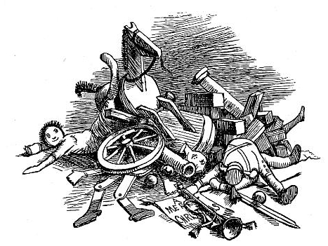
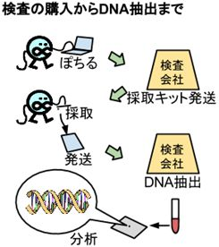
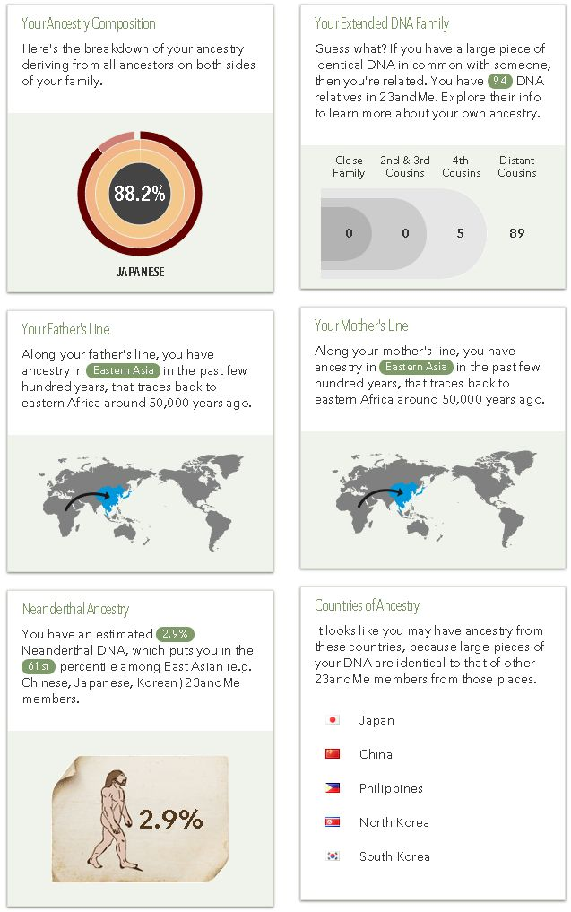
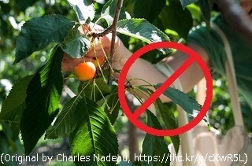
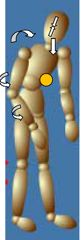

| UNdiagnosed | |
| 草戸 棲家 | |
| (2015) | |
23andMe のDNA アレイによる検査 - 販売停止命令に至る経緯
もっとも正確な希少疾患の数 - 毎日約1 つ希少疾患が増える?
希少疾患全体の罹患率 - 全部合わせると10 ～14 人に一人
GINA （ジーナ） - DNA 検査時代の国民、患者を守る法制度
感染症と希少疾患の関係 - 未診断の希少疾患という重症化因子
de novo 変異 - 両親から受け継がれない優性遺伝の変異
みんなが保因者の劣性遺伝病？ - 平均約10 個の遺伝的荷重
"Undiagnosed "
この英語に対応する日本語として、かろうじて「 診断未確定 」あるいは「 未診断 」と翻訳されるが、どちらもよく知られた日本語ではない。日本では病気が診断できることが当たり前と考えられているからだ。しかし、英語圏では、診断できない病気を患うのが、統計的に十分起こりうることが認知され、そういった状態に陥った患者のためのガイドが存在する。
そのうち、米国のヒトゲノム解析拠点である国立ヒトゲノム研究所のガイドから抜粋して翻訳する。
成人の場合の診断未確定状態について
（略）
診断未確定とはどんな状態のことでしょうか？
場合によって、医師は患者に病気の特徴や症状を見つけられないことがあり、その場合「診断未確定の希な状態」または「診断未確定の遺伝的状態」であると告げることがあります。 実際、混在している症状から元になっている病気を特定して診断することは、とても時間のかかる試行錯誤の作業なのです。診断を得るのに5 年以上かかることがあり、特に希な病気の場合は、往々にして最終的に診断がなされないこともあります。
この状態は、希少疾患の専門家を頼っているのに診断を受けられるかどうか分からないという、患者自身や家族にとっては非常に困難な状況をもたらします。不幸なことに、特定の希少疾患では患者が極めて少ないということが一般的であるため、多くの（あるいは数例でも）類似症例を診たことがある医師がいない場合が多いのです。このような理由から、医師が症状から当てはまる診断へと辿り着くまでに長い時間がかかることがあるのです。
患者自身としては診断が出ないことにどう対処すればいいでしょうか？
たとえ診断されない場合でも、症状の経過観察のために定期的に医師の診察を受けることが重要です。あなたの主治医は、もしかするとあなたの症状の変化から、診断の手がかりを見つけるかもしれません。時間が経てば経つほど、医師が症状を診断するのに重要な新しい情報に気が付くということも起こるかもしれません。
（Courtesy: National Human Genome Research Institute ）
こういったガイドを、ヒトゲノム解析の研究所が作成しているのは意外と思われるかもしれないが、"Undiagnosed" の多くはDNA に由来するからである。
実際にこの状態に何十年も囚われ続けている身としては、ずいぶんお気楽なことを言ってくれると感じたので、節の途中ではあるが翻訳を中座した。結局のところ、医療提供者側の言葉なのだ。後述するが、実際には時間が経つほど症状が進行するにも関わらず、希少疾患としての区分が細かくなればなるほど、何百キロメートルも離れた遠くの大学病院に通院しなくてはならなくなるのである。
日本語である「診断未確定」の「未」の部分は、いずれ診断されるというニュアンスに受け取れるが、場合によってはそうではないのだ。英語のニュアンスではあくまで"un-" のままなのである。私は41 歳の男性だが、物心ついた頃から体に異常を覚え、現在まで確定診断が得られていない。本書はその漂流の中で考えたこと、訴えたいことをまとめたものである。
ヒトゲノム研究所の他に、知る限りもう1 つ、米国政府機関から同様のガイドが公表されている。アメリカ国立衛生研究所（NIH ）は、日本で言う厚生労働省の研究部門と考えればいいのだろうか。ヒトゲノム研究所もNIH の下に設置されている。その同じくNIH の一部門の、先進トランスレーショナル科学センター（NCATS ）の希少疾患の担当部門からのものである。
確定未診断についての豆知識
( 略)
旅費を補助してくれる機関はありますか？
はい。検査および診断のために特別な病院を訪れるのは費用がかさみます。次の機関が米国内の範囲で患者の旅費を工面してくれます。
(" TIPS FOR THE UNDIAGNOSED " Office of Rare Diseases Research, NCATS より)
米国政府はどこまで本気で言っているのだろうか。日本の常識では診断されていないのだから旅費も何も補助されるわけがないのに。しかし、他国からそんな変なところを突いて、米国の診断されない患者に万が一旅費が出なくなってしまったら困るので、未だに尋ねられずにいる。
こんな妙なところまで見本とすべきだと主張するつもりはないが、それでも、日本社会は、米国の基準で考えると、あまりにも診断が出ないことを受け入れない社会なのである。
本節で最後に図として示すのは、最近になって気付いたのだが、米国で Undiagnosed Diseases Network （未診断疾患ネットワーク） というものが、ヒトゲノム研究所が関係する形で形成されているようで、構成が以下の図にまとめられている。（Courtesy: National Human Genome Research Institute ） このように、本著では図として自ら描いたものの他に、主にパブリックドメインのものから探して取り込んでいる。ライセンスの表示要求のあるものは、多少見た目がよくないかもしれないが、その内容に従っている。未診断疾患ネットワークの図の説明によると、このプログラムで受け入れられる患者数は、1 年間にNIH150 名に加えて、各臨床拠点50 名で5 拠点なので、400 名ということになる。DNA シーケンシングコアと呼ばれる拠点には企業も加わっているようだ。人数としては決して多くはないが、米国では未診断の患者に医療としての対応を行っているのである。
宗教的表現について
本著では、頻繁に宗教的表現を用いる。「天に召される」「神の見えざる手」「ひと粒の麦」などである。こういった表現の多くはキリスト教からのものである。これら宗教的表現を用いるのは、科学や医学ではヒトの体は救えても、ヒトの心は絶対に救えないと確信しているからである。科学が描き出すあまりに過酷なリアルを、少しでも宗教的表現によって緩和したいと考えている。「遺伝病の患児が亡くなった」と記すだけでは、我々の心に安らぎが無さ過ぎるのだ。出来る限り「遺伝病の患児が天に召された」と記す方が、我々は明日も過酷なリアルの中を苦しみながらでも生きていこうという前向きな気持ちになれるのである。
決して新しい宗教を始めようとしているわけではない。実際、私は臨済宗妙心寺派の貧乏寺の長男として生まれ育った。しかし、仏教には死の表現は豊富にあっても、生の表現は余りにも乏しいのだ。これは仏教が日本において葬式を管轄し、神道が比較的誕生を管轄するという、まるで官僚主義みたいな制度のためである。しかし実際には、我々は死と生の間をくぐり抜けながら生きているのであって、死と生は別々に取り扱えるものではない。そのため、どうしても、死と生を同時に取り扱っているキリスト教の方が、表現として豊かという実情になってしまっている。実際、日本の人口あたりの自殺者数は典型的なキリスト教国のそれよりも多い。他にはロシアといった、共産主義によって宗教や哲学がかつて否定された地域で自殺者数が多いのである。
いや、医学にも心療内科医や臨床心理士がいる、抗うつ薬もあるではないか、なぜ科学で心が救えないなどと抜かすのだ、という御仁もおられるだろう。これらは心を救うためのきっかけを作っているだけであって、本当に心を救っているわけではない。実際、投薬をやめれば以前よりも一気に悪化する患者の方が多いはずだ。
私は自分では診断されない病と進化の関係について追求している、科学の探求の徒のつもりであるが、ネオダーウィニズムの先鋭たるドーキンスといった、科学万能主義には疑問をいだいている。ドーキンスの住む英国がキリスト教国であるからこそ、科学万能主義を啓蒙しても自殺者は増えないのであって、日本で啓蒙を激しくやっていくとさらに自殺者が増えてしまうはずだ。しかし、科学や医学なしには患者の体の健康が保てず、体の健康が保てないと心も病みやすいのもまた真実なのである。
健全なる魂は健全なる肉体に宿る。この言葉はよく本来の意味から体育会系の集団が誤解して用いているとして引き合いに出されるが、その誤解された意味の方もまた皆が真実だと思ったからこそ、誤解のまま広まったと考えることができる。肉体が決して健康ではない自らのことを貶めているような複雑な気持ちになるが、それでも統計をとれば身体を病んだ人口は心も満たされていないことが客観的事実として浮かび上がるはずだ。
私は数値や統計、そしてエビデンスといった科学的手法の支持者である。同時に宗教的表現で心を救うことも必要だと信じている。しかし新興宗教、またO- リングテストといった疑似科学には全く興味がない。このことは、私が以降で用いる宗教的表現に困惑して誤解されることなきよう、この時点ではっきりと宣言させていただく。
研究者の方々へ- 検証中の仮説
本著では、仮説の検証の部分が、闘病記的な部分の間に埋まっているため、仮説だけを取り上げてどの節で述べているかリストアップする。
・単一遺伝子疾患が約23000 個の遺伝子にばらけて希少疾患となる。希少疾患の発見は年々進み、20 年後には、OMIM の単純化した基準で数えて10000 疾患を超えるはずである。
[ 合っているかもしれない仮説] 、 [ 仮説の更なる展開 - 発見され増加を続ける希少疾患] 、 [ 変異のスピード調節 - もっとも強く訴えたいこと]
・男性の最大の存在意義は、全てではないが、あらゆる遺伝型に対して女性よりも表現型として少しだけ大きく表れることである。その結果、男性は、主に感染症と遺伝性疾患で、生殖年齢に達するまでに女性より少しだけ高頻度に天に召され、子を産む個体をなるべく温存しながら淘汰が促進される。新しく発生した形質が、感染症により天に召される頻度を上げるか、下げるか検証するために、過酷なことに、男性ホルモンにより免疫抑制された感染症に敏感な状況を作り出し、その形質の生存率への影響力を引き上げることによって検証が行われる。遺伝性疾患についても、同様である。（男性淘汰進化説）
[ 感染症と遺伝性疾患で重度となる役割 - 男性淘汰進化説]
・男女の性差は、他種から見分けられるほど生存ひいては進化に不利である。しかし生殖のために自種からは見分けられる必要があり、進化的に男性の方が高頻度に天に召されなければならないため、それらの間のバランスで、現在の地球上で大繁殖に成功した動物ほど性差はほどほどに抑えられている。特に女性だけが患う致死的な感染症が起こると男性の価値がなくなってしまうため、感染症のウイルスや細菌から見ても区別できない程度の性差に抑えられている。実際、ヒト、マウスの仲間、ゴキブリの地球の制覇者3 者では性差はほどほどに抑制され、逆にオスらしさの代表としてヒトの興味を引いたライオンといった種の方が、皮肉なことに乱獲により、絶滅しかかっている。これはヒトでなくて他の捕食者がいた場合も同様のはずである。
・日本で予防接種の健康被害が問題になるのは、欧米と違って希少疾患が5000 疾患もあることを認識せず、希少疾患の診断率が低いまま予防接種を受けさせているからである。
・みんなが劣性病的変異の保因者であるという説明は科学的に事実ではない。保有している劣性病的変異の数は家系や個人で大きくばらつき、平均10 個と考えると約20000 人に一人はたった一つの劣性病的変異さえ保有していない。
[ みんなが保因者の劣性遺伝病？ - 平均約10 個の遺伝的荷重]
・劣性遺伝病の患児が天に召されることで、遺伝子プールは浄化作用を受け、我々は健康を保っている。
[ 劣性病的変異の健常者への影響 - 遺伝子プールの浄化説]
動機として、実に多くの診断されない希少疾患が存在することを証明するのを目指し、その証明に説得力を持たせたいということもあって、漠然と開始した仮説と検証のシリーズだが、結局これだけの範囲が広がってしまった。もしできることなら研究者の方々からご意見をいただきたいと考えています。
外部リンクの表記、訂正箇所のご指摘のお願い
本著では根拠を固めるために外部リンクを多用している。特に重要な箇所については、文章の中の該当部分を アンカーテキスト とする形で、外部リンクを張っている。それほど重要でないと思われる箇所については、脚注記号のようにしてアスタリスク「* 」などを文末などに挿入し、それをアンカーとしてリンクを張っている。アスタリスクを脚注記号として用いるのは、紙書籍ではごく普通の用法 * であるが、その流儀に似せて電子書籍内のアンカーとして転用している。
アスタリスク「* 」により日本語ウェブページへの外部リンクを示し、 節記号 「§」により日本語PDF への外部リンクを示す。また、 ダガー 「†」により英語ウェブページの外部リンクを示し、ダブルダガー「‡」により英語PDF への外部リンクを示す。本来は2 番目の脚注を1 番目から区別するためにダブルダガーが用いられるのだが、本著では英語ウェブページと英語PDF を区別するために用いる。 アンカーテキスト として外部リンクを張るのは、日本語のウェブページのみである。例外として、引用文献を示す際にタイトルをアンカーテキストとする場合のみ、日本語ウェブページだけでなく、Google Scholar のほぼ英語のウェブページへもリンクさせている。それ以外は、英語やPDF はアンカーテキストからのリンク先として採用せず、編集記号からの外部リンクとする。
|
言語＼形式 |
ウェブページ |
|
|
日本語 |
* （アスタリスク） |
§（節記号） |
|
英語 |
†（ダガー） |
‡（ダブルダガー） |
当初、アスタリスク一つ「* 」の日本語ウェブページに対して、アスタリスク二つのダブルアステ「⁑」により日本語PDF へとリンクしようとしたが、この編集記号がユニコードとShiftJIS の非互換性にまつわりAndroid では表示できない機種が多いことを知ったので、「§」へと置き換えることとした。上下に二文字が配置される共通性から、ダブルダガーと対照させて記憶に残りやすいことを期待してこの編集記号を選んだ。現在では「§」が節の意味で使われるのは欧米の法律分野に限られ、それ以外では脚注の意味で使われることの方が多い † 。
表示の確認はKindle for PC で行うことにさせていただいた。Android 版Kindle アプリでは、パソコンと同じmobi ファイルを開いても、図が縮小されてしまい、またダブルタップとピンチアウトで拡大しても解像度が少し低下するという問題が発生しているが、現在のところ、高解像度で見るにはPC で開いていただくしかない状況である。脚注記号が複数個連続して「** 」などとなった場合に、タップ操作ではどちらをタップするか区別できない場合があるが、これも、PC のマウス操作で開いていただくしかない状況である。ご不便をおかして申し訳ありません。
訂正箇所をご指摘いただくための方法として、ブログとメールアドレスを示す。
kusatosu-m@yahoo.co.jp
本著は当初パブーで記したものを、Amazon Kindle に出品できるようMS Word を通して編集しなおしたものであり、2015 年現在パブーで無料掲載しているものに訂正や加筆を行ったものである。図が多すぎるせいか、パブーから直接mobi 形式に変換することは、エラーが発生してできませんでした。そのため、今後内容を訂正更新していくのはKindle 版になり、パブー版は大きな訂正しか反映させることができません。ご理解ご協力のほど、どうぞよろしくお願い申し上げます。
概略
現在の症状
私の症状は一見、大したことがないように見えると思う。現在の主な問題はスタミナの短さにある。私は現在40 歳代だが、まるで倍近く歳をとった80 歳代の老人ぐらいのスタミナしかない。少し動いては休み、少し動いては休みしている。25 歳から32 歳まで職員として働いていた頃には、筋肉痛の方が大きな問題だった。いずれにしても、あくまで年齢を重ねた程度の一般的な症状しか示さない。このことが医師や周囲の人間の前で、逆に私を苦しめて来たのだ。
特に夏場の暑さよりも冬場の寒さに弱く、毎年少しずつ症状が進行するので、最も冷えた今年の2 月には気温15 ℃よりも下がるとゼィ、ゼィと息をしていた。それでも、立って歩けないということでは決して無くて、百メートルといった短い距離なら時々大きく息をしながらでも十分歩けるのだ。
こうした易疲労性と言える症状は、覚えている限り子供の時から続いていて、そういった易疲労性について初めて医師に相談に行ったのは23 歳の時だったと思う。その頃には「神経内科」の方が内科よりも診療科として適しているということさえ知らなかった。だから、転機となったのは、神経内科の門を叩いた時だったと思う。それは今から12 年前の2002 年の春だった。
息子の誕生
 その 前の年の2001 年に、私と妻に息子が生まれた。私自身は易疲労性を認識し、内科へ通院したり、漢方薬を試したりしていたので、症状が遺伝するのではないかと心配だった。生まれた時に健康体だったのは幸いだった。しかし、半年ぐらい経った頃、妻が息子の定期健診で首の座りが非常に遅く、筋が弛緩したままなので赤十字病院の小児科に行くよう言われたとのこと。
その瞬間、
「しまった、遺伝した！」
と思った。しかしそれでも、悩む妻の前で、それは私の病気が遺伝したのではないか、という一言が喉から出てこなかった。赤十字病院へ通院しても、息子の弛緩気味の様子はよくなりそうになく、妻との距離が開いていくのを感じつつも、結局のところ私は卑怯にも一人、神経内科の門を叩いた。それは、自宅から30 キロメートルほど先にある筋疾患をみることができそうなH センターの神経内科だった。
神経内科はひたすら混んでいた。時間の感覚がよく分からなくなるぐらいの、数時間の待ち時間。結局のところ、この田舎では、総合的に診断を行えそうな神経内科は、そこしかなかったのだ。それでも通院を続けるうちに、K 医師が検査入院をさせてくれるというので、入院して筋疾患の検査を行った。しかし、特に異常値は何も出なかったとのこと。落胆のうちに、次は筋生検まで行ってみるかと希望を尋ねられた。上腕二頭筋から筋肉の一部を採取して、顕微鏡で見るのだと言う。ここで愚かにも私は判断を誤った。
「メスを入れることで、腕の易疲労性が万が一、これ以上大きくなったら仕事に差し支えるかもしれない・・・」
実際に採取するのはベテランの医師が執刀すればほんの僅かなのだが、そんな余計な心配をして、筋生検を受けないことに決めたのだった。
その代わりに、頼ることにしたのは、体が痛くても働けるようにするための抗うつ剤だった。
心療内科に通院を始めてから、妻との距離感がますます開くうちに、別居をするようになり、抗うつ剤の量は増えて行き、それでも筋肉痛と疲労感を抑えるために、飲酒の量も増えていった。
最終的に一人、アパートで昏睡しているのを発見され、救急搬送となった。そのときの診断名は飲酒した状態で抗うつ剤の量を誤った悪性症候群だと言われたが、もしかすると、妻に筋疾患の検査を受けていたことを詳しく話していれば筋疾患の疑いを含んで別の診断名になっていたかもしれない。
私が覚えているのは、とにかく筋肉痛を抑えなかればと躍起になっていたことで、寒さの中、一人、意識が遠くなっていくのは自覚していても、既に思うように体が動かなった。電話で助けを求めるため体を動かそうとする意欲もなくしていた。それが2005 年の2 月のことだった。
今になって考えてみれば、加齢と共に筋肉痛と易疲労感が増していく中で、ただひたすらに焦っていたのだろうと思う。そのときにはすでに職場での仕事もうまくいかなくなった後だった。
退院後には技官のような職位で勤務していたS 研究所を退職することにした。当時、職場の方々に大変な迷惑をかけることになってしまったことをもう一度ここで謝罪しておきたい。
昏睡していた間に、左腕を体幹の下側に敷く形になっていたため、神経が圧迫されて左上肢のリハビリに半年以上を費やすこととなった。3 級の身体障害者手帳が交付されたが、結局は健常者と見た目分からないぐらいまで改善したため、数年で返却することにした。
遅れながら、という形になってしまったが、退職後にK 医師の元で筋生検を行う運びになった。この時に左腕が一見改善していたことと、H センターではなく別の病院に救急搬送されていたため、認識に手違いがあり、不自由であった左腕から筋生検の検体を採取するという運びになった。私の方も
「ベテランのK 医師が左腕で大丈夫と言うのだから・・・」
という曖昧な認識でいた。この手違いによって後に思いもよらぬ結果に困惑することなった。K 医師によるとミオフィブリルラーミオパチーという、極めてめずらしい種類の筋疾患なので、確定診断のために、もう一度筋生検をするのだと言う。これも同じく左腕から採取した結果、何か最初の筋生検と二回目の筋生検の間で矛盾点があるのだという。この時に、素人の私の目にも、左腕の神経を傷つけた影響が出たのだろうと検討がついた。しかし、そのことを追求しようにも、K 医師は、
「もしかすると・・・あの（麻痺の）影響が出たのかもしれないねぇ・・・」
と、言葉を濁すばかり。さすがに2 回の筋生検をしてしまってからでは、他の医師に紹介することもためらう様子だった。
自動車の運転はなんとかできると油断していたため、H センターへの通院からの帰宅中に前の車に当てるという事故を起こしてしまった。当時、車で1 時間、電車とバスで2 時間という距離であったため、易疲労性を考慮しても車の方がよいと総合的に判断したつもりだった。結果的にそれは間違いだった。
雨で水たまりができていたのか、私の足がバカになっていたのか、それとも両方なのか。とにかくブレーキを踏んでも効かず、いけないと思って反射的に力を増し入れしてもやはり効かず、前の車と衝突してしまったのだ。幸い、前の車には運転者一人だけが乗っており、その運転者に怪我はなかった。その事故以来、2014 年3 月の今日まで自動車の運転は一度もしていない。
H センターでK 医師の無意味な言葉を聞くために通院して、自動車事故で他人や自分を傷つけかけるということにひどく失望した。ここに来て、いったん、検査を諦めて、念の為にカルテの開示請求をしてから、H センターへの通院をあきらめることにした。しかし、後に開示請求しておいたカルテが思わぬ役に立つことになった。
だんだんと距離が離れていくことに矛盾を感じつつも、自分の判断でH センターより向こう、およそ100 キロメートルの距離にあるK 大学病院へと通院先を変えることになった。H センターでの検査の間に、筋ジストロフィーの疑いがあるとも言われていたため、遺伝子検査を受けるためにK 大学病院の小児科に先に通院し、その後で同大学病院の神経内科にも通院することになった。
このときに、小児科と神経内科の対応に違いがあるのに気がついた。小児科のM 教授は、私の診察の際にぐるりと周りを若い医師の方々に囲まれながら言われた。
「H センターからの説明にある・・・散見されるって・・・遺伝子の違うものが混じってる？」
「え、そんなこと一人の人間の中であるんですか？」
驚いて、思わず私が答えたのに応じて先生は続けられた。
「いや、あるんだよ。ものすごく稀だけどね」
それっきり黙ってしまわれて一切何も言わずに診察が終わった形になってしまった。
それに対して神経内科のK 特任教授の口調は滑らかだった。
「僕も世界中の全部の病気を知ってるわけじゃないけどねー、これだけ検査して何も出ないんじゃ、病気じゃないってことじゃないかな」
さすがにこれだけ遠い病院まで来て、教授クラスの医師にそう言われると、何か納得いかないものを感じながらも、意気消沈して帰途につくしかなかった。ただ、先に小児科の方の診察を受けていたために、対応の違いには気づいていた。おそらく、小児科の場合には、最終的に確定診断できなくて小児が死亡してしまう症例がありうると思っているのだと感じた。それに対して、神経内科の方は長く生きてきた成人を見ているために、そこまで確定診断がシビアだとは考えていないのではないか。それが私の印象であった。
さらに遠い通院へ
その頃には、ある病気の症状が私の症状に近いのではないかと思い当たるものがあった。周期性四肢麻痺とか先天性パラミオトニーと呼ばれる病気である。この時の私の心境としては、すでに２つの病院の神経内科で診断してもらえないという状態に陥っていたため「藁をもすがる」に近いものがあった。
調べるうちに、K 大学病院からさらに30 キロメートルほど電車を乗り継いたO 大学病院に、米国から同疾患を専門として研究して帰国したT 助教がおられることが分かり、遠い遠い通院の日々が始まった。具体的には、針筋電図という検査で先天性パラミオトニーを検査して、CMAP という特殊な筋電図検査で周期性四肢麻痺を検査するのだという。特にCMAP という検査は設備はあっても練度の問題などで日本で施行できる病院が少ないのだという。
「ともかく一度検査してみましょう」
T 助教の言葉に勇気づけられて、CMAP 検査を受けたのだが、結果は陰性。針筋電図の方も、H センター、K 大学病院でもそうだったように陰性であった。ガクリと肩を落としていたところに、海外から思わぬ検査結果が帰ってきた。ドイツからの航空便の消印が入った、その検査結果の封書を開いた時、次の1 行に目を疑った。
Potential diagnosis: Paramyotonia Congenita (Eulenburg)
考えられる診断名：先天性パラミオトニー（オイレンブルク病）
実は、CMAP 検査を受けられる病院を調べている過程で、PPA という米国の周期性四肢麻痺の患者会のホームページで、ドイツのL 教授へとDNA 検査を依頼できることを知り、何とかドイツへと血液検体を届けていたものだ。その検査結果が返って来たのだった。実際には、血液検体を海外へ送るために、EDTA という薬品が入った透明の容器に注射器で私の血液を抜いて渡してくれる病院を探すのに何件もの神経内科、内科の医師を探し歩いていた。さらに海外に血液検体を送るための手順はかなり複雑で輸送費も嵩んだ。その結果がようやく報われたのだ。ドイツからのDNA 検査の結果を読んだ時に、当時はDNA 検査の知識がなかった私は、本当にそう信じ込んだものだった。
そのことをT 助教に伝えると、本当に驚いた様子だった。ドイツのL 教授というのは、その道では誰もが疑わぬ第一人者であったからだ。そしてさらに腕を氷に晒したり運動させたりして、条件を変えて筋電図を測定し直すことになった。そしてそのどれもがことごとく陰性となった。
当時、ドイツのDNA 検査の結果と日本の検査の結果の違いに、頭の中が混乱してうまく説明できなかったが、今にして思えば次のことが起こったのだと思う。
ドイツへの問診票には、筋電図検査を受けたかどうかを記入する欄があったが、筋電図検査の結果を書き込む欄はなかった。さらに、近親者に症状があるかどうかを記入する欄があったが、息子の具体的な症状については書き込む欄はなかった。あるいは、私の英語力が不足していて何らかの勘違いが生じてしまった。その結果、せっかく遠い日本からはるばる送ってきた血液検体なのだからと、L 教授は手順を一部緩和して検査結果を書き込んでしまった。それに対して、T 助教の方はより厳密な方法を求めたのだと思う。
私の未熟な英語に混乱しながらも、何とかT 助教とL 教授の間で電子メールのやりとりが成立したらすぐに、L 教授は検査結果が厳密なものでなかったことを、あっさり認めてしまった。
言わば、全てが糠喜びだったのである。
その頃には、より厳密な検査結果を追求するには、DNA 検査の結果に基づいて、細胞培養による検証実験を行わなくてはならないことに、ようやく私も気づいていたところだった。この実験は、T 助教によれば７年前に初診を受けた患者に対して行っているところで、筋電図検査の結果が陰性の私には、到底割り当てる余裕はないのだという。更に悪いことに、L 教授の方もDNA 検査の結果を見直して、私のDNA 検査の結果見つかった変異が症状を引き起こしている可能性は"very very low" と言い始めてしまった。L 教授の元では日本のように7 年待つという状況ではないと思っていただけに、私には大きなショックであった。
しかし、その頃には、私の息子の筋弛緩様の症状は成長とともに消えていった。そして、私の息子を診察およびDNA 検査したT 助教からL 教授に、彼の息子は彼と同じ変異を持っているが健康であるという報告がなされてしまったため、私はとてもバツが悪かった。私は健康体である息子を自分の診断結果を得るために利用しているかのような自己嫌悪に襲われた。ほんの一瞬でも、息子が自分と同じ病気でいてくれたらと、罰当たりな想像をふくらませなかったと果たして言い切れるだろうか？ 健康そのものの息子を130 キロメートル離れた病院に連れて行く間に、その力強い一歩一歩が妬ましいと思わなかったと、果たして言い切れるだろうか？ 当時、もしも診察を受けさせてもらえなくなると困るのでT 助教には伝えていなかったが、電車の中で他の乗客の上にフラフラともたれかかってしまったり、駅のエスカレータから転び落ちたりといったことが稀に起こっていた。
こうして、SCN4A という遺伝子にあるc.5468C>G 、別名P1823R という私と私の息子の変異は、病因性の可能性は低いが、それでもゼロではないため、別の誰かに検証実験を行ってもらわなければ完全に病因性がないとは言い切れない状態となってしまった。分野が違うとは言え技官をしていた私の経験からすると、これはHEK 細胞を使ったパッチクランプ実験のルーチンの完成しているラボではそれほど難しい実験ではないが、1 年に1 件だけを検査するといった遅いペースで回すのはとても苦しい実験だと思える。もしももっと研究性の高い研究室で行う体制があったなら私も検査してくれたのかもしれないが、そこまで苦しい検証実験を臨床寄りの研究室で行ってくれというのは困難な状況であった。
知らされなかった検査結果
先天性パラミオトニーの検査が暗礁に乗り上げてしまった一方で、以前H センターに開示請求したカルテの中に、私に知らされていない陽性の検査結果があることに気付いた。それはアミノ酸分画という検査の結果シートで、後の [ アミノ酸分画検査結果] のページに示すものである。10 項目以上で基準値を外れている。当初、これは何かの検査ミスであるためにその陽性の検査結果が知らされなかったのかと勘ぐったが、調べるうちにこれはどの病気が特定しにくい検査、つまり 特異度 が非常に低いために、陽性であったにも関わらず、知らせない方がよい検査結果なのだろうと思われた。特に、確定診断を強く求めている患者の場合は、なおさら知らせない方が都合がよかったのかもしれない。いずれにしても再検査すべきだったと思われた。
アミノ酸分画という検査の陽性の結果は、全体的に代謝系の異常、それがどこであるかは全く分からないが、何らかの異常があることだけを示しているようだった。ただ、どこまで外れていればどうという文献を未だに見つけられずにいる。さらに調べるうちに、代謝系の異常で筋肉に症状の出るような病気は、先天性代謝異常症という総称で呼ばれていることを知った。そして、幸運なことに、検査技術の進歩によってS 大学小児科で タンデムマス検査 という検体の受け入れが開始された時期でもあった。T 助教に相談したところ、アミノ酸分画で陽性が出ることをO 大学病院でも確認した上で、タンデムマス検査に検体を送って下さる運びとなった。そしてその結果は、後の [ タンデムマス検査結果] のページに示すように、陽性であったのである。しかも、
「 脂肪酸代謝異常症 を強く疑います」
「 グルタル酸尿症2 型 に特徴的なプロフィールであると思います。」
と、一歩踏み込んだ病名まで記されていたのである。
確定診断のためには、インビトロプローブアッセイという検査を受けて検証をしなければならないことがS 大学小児科から知らされて、詳しいことはよく分からないまま、O 大学病院に検査入院し、T 助教によって脇腹からほんのわずか皮膚の細胞を採取して、S 大学小児科に送って培養実験を行っていただくことになった。
そして長い長い1 年半の後。2012 年の12 月。私が最も苦手とする季節に、その結果が届いた。
「診断：脂肪酸代謝異常症は否定的です」
届いた返事に、呆然となった。「嘘だ」という言葉の羅列が白い吐息とともに口から漏れ出した。
今度こそと思っていた検査結果に、見事に裏切られた形になったのである。
S 大学小児科を受診することも本気で検討したが、T 助教を介して尋ねてもらった限りでは、その3 ページの結果シート以上の情報を話すつもりはないという回答であった。O 大学病院よりもさらに遠いS 大学小児科まで、患者が転倒のリスクを抱えながら通院するという時点で、論理として矛盾しているのだ。S 大学小児科まで無事に辿り着いたところで、
「やぁ、実はそんなに重症じゃないじゃない」
とでも思われるのだろうか？ それとも転倒して途中の駅で看護を受けるのだろうか？ どちらにしても、当時としては、S 大学小児科を受診するのは、論理として愚かな選択肢に思われた。
仕方がないので、自分で論文を検索して調べ始めると、一部のミトコンドリア病、ペルオキシソーム病という疾患でも、タンデムマス検査の結果が陽性になる場合がありそうだと気づいた。そこで考え始めたのは、技術が大幅に向上しつつあるDNA 検査を本格的に行ってみようということだった。また、当時はまだヨーロッパでしか患者が発見されていないACAD9 欠損症という重症度の低い脂肪酸代謝異常症が存在していることも知った。
・・・みなさま、この辺りで、なんでこんなに次々に違う病気の名前が出てくるのか、なんでこんなにいろんな検査の名前が出てくるのか、疑問に思われる方が多いだろう。私が最近になって調べた限りで最大の病気の数は、WHO および欧州医薬品庁が言及した最大8000 という、気の遠くなるような膨大な数であった。私も自分が当事者になるまで、そこまで過酷な状況が待っているなど、つゆぞ知らなかった。
According to the European Medicines Agency, there are between 5000 and 8000 distinct rare diseases in the EU, affecting between 27 and 36 million people.
欧州医薬品庁によれば、EU では5000 から8000 種類の希少疾患が存在し、2700 万人から3600 万人の人々が罹患している。
（" Coming together to combat rare diseases " WHO, Bulletin of the World Health Organization Past issues Volume 90: 2012 Volume 90, Number 6, June 2012, 401-476 より）
念のため、欧州医薬品庁のサイトも検索すると、確かに同じことが書かれていた † 。しかもこの5000 から8000 種類の間の3000 種類という幅は、実際問題として数え切れていないことを意味している。事実、9000 種類を超えると書かれているボランティア団体のウェブページも存在する。
At the same time, in our market-based economy, more than 9000 rare diseases lack sufficient investment due to the relatively small patient groups.
同時に、我々の市場ベースの経済では、9000 種類を超える希少疾患で、患者のグループが比較的小規模であるために十分な投資を行うことができない。
(" Charities and other funding organisations " EATRIS, 2014 年12 月12 日閲覧 より)
こうなると、おそらく分類すること自体が破綻している。つまり、本当に正しく診断して分類などできていないからWHO 発表で3000 もの幅を含んでいるのだ。実際、8000 種類や9000 種類といった極端な数値でなく、比較的控えめな数値を出している患者団体も多い。中でも、EURORDIS が主催して、世界中で展開されている"Rare Disease Day" （日本では「 世界希少・難治性疾患の日 」）という巨大啓蒙イベントのサイトでは、かなり包括的に状況が説明されている。EURORDIS は、EU の希少疾患の患者会の連合組織であり、言わば世界最大の患者会と言える。
In the EU, as many as 30 million people alone may be affected by one of over 6000 rare diseases existing.
EU では、3000 万人もの人々が孤独に、既存の6000 種類を超える希少疾患の一つに罹患していると言われている。( 訳注：alone は別の意味かもしれない)
80% of rare diseases have identified genetic origins whilst others are the result of infections (bacterial or viral), allergies and environmental causes, or are degenerative and proliferative.
80% の希少疾患は遺伝的原因が同定されているが、その他は感染（細菌またはウイルス）、アレルギーおよび環境起因性、または、変性疾患および増殖性疾患である。( 訳注：変性疾患とは、おそらく 神経変性疾患 のことで、増殖性疾患とは、おそらくがんを意味している)
50% of rare diseases touch children.
希少疾患の患者の50% は小児である。
(" What is a Rare Disease? " EURORDIS, 2014 年12 月12 日閲覧 より)
なお、米国向けではなく、主に欧州向けのウェブページである。多少、翻訳に自信がない部分があったので、別のサイトとして啓蒙団体のGlobal Genes で同じ意味の記述 † があるのを確認した。小児についての翻訳はこれで合っているはずだ。あと一つだけ数値を挙げると、この団体によると、世界中で3 億人が希少疾患に罹患しているそうである。
Rare diseases affect 1 in 10 Americans, 30 million people in the United States, and 300 million people globally.
希少疾患は米国人の10 人に一人の割合で、3000 万人が罹患し、地球上では3 億人が罹患しています。
この団体の記述だけでは、信頼性に乏しいかと心配して、日本で言うと厚生労働省の研究部門に相当する米国のNIH のサイトで2500 万人から3000 万人の米国人が希少疾患に罹患している † という記述を示す。これは米国人口の8 〜10 ％に相当する。NIH は希少疾患の米国での数としては、6800 種類と記している。NIH と同団体の米国の患者人口についての記述はほぼ一致しているので、先ほどの3 億人という世界人口について、数値的根拠は示されていないものの、同団体が間違ったことを記す理由もない。
・・・一体、なんでこんなことになっているのだ？
考えた挙句、本当に合っているかどうかは数値的根拠がまだ足りないけれども、ある仮説を立てることになった。
アミノ酸分画検査結果
タンデムマス検査結果
合っているかもしれない仮説
昔に放射線学を学んだ者として、漠然と信じるようになった仮説である。 遺伝病というのは、生物が人間になるまで進化してきた営みの、犠牲的な作用なのだろうと思う。フリーラジカルといった活性酸素の刺激を受けたDNA がランダムな位置で変異して、ヌクレオチドという鎖状の一部が入れ替わる。それが何十万分の1 といった確率で累積淘汰のフィルターをくぐり抜ければそれが進化で、ほとんどの場合悪い方向に働くので、それが遺伝病なのだろう。
遺伝病の患者数が少なく、いわゆる患者数の極端に少ない疾患、つまり希少疾患になりやすいのは、約23000 個あるヒトの遺伝子の全体にばらけて変異しやすいことによる。前の図では希少疾患がいろいろな遺伝子にばらける様子を描いた。もっとも分かりやすい場合として、卵子や精子の細胞核にある23 本の染色体が、フリーラジカルなどの刺激を受ける。放射線によるフリーラジカルの場合、あまり場所を選ばずに発生するので23 本の染色体が刺激を受ける機会はランダムで、染色体の長さに比例するのだろう。染色体の中のDNA 上の遺伝子1 から3 までのうち、遺伝子2 を特に短く描いたように、全ての遺伝子は長さが異なる。短い遺伝子ほど刺激を受ける機会が少ないため疾患を起こしにくいはずだが、疾患となってしまった場合には患者数が少なく診断さえおぼつかない事態となる。また、ヒトの遺伝子が約23000 あるのに、希少疾患の種類が7000 程度にとどまっているのは、推測だが、遺伝子が短いと患者数が少なすぎてカウントできないことの他に、遺伝子としての働きが重要すぎるものについては生殖細胞から出産までの間に障害を起こすため生まれて来ないことによると思われる。
なお、約23000 個というヒトの遺伝子数は、頻繁に用いるとても重要な数値なので、根拠を確認したい。Wikipedia 英語版のヒトゲノムのページ † によると、20000 から25000 というアバウトな数が書いてある。端的に言ってしまえば、現在も研究途上ということである。極端なことを言えば、 現在70 億人の人々が地球上で生きていて 、 地球上で1 年間に生まれるあかちゃんの数が1 億3900 万人 もいて、それが先の図に示したDNA の変化を受け続けているのだから、理屈の上では、完璧に正確な遺伝子数というのは、永久に確定しないということになる。それに、そもそも我々は 1 年間に何人のあかちゃんが産まれているのかさえ、大雑把に言って1000 万人ぐらいの誤差を含む形でしか把握していない のだ。
おそらく、これは希少疾患の種類が5000 ～8000 種類と、3000 種類も幅をもって公表され、世界中で希少疾患の患者数が70 億人中で3 億人、つまり世界人口のおよそ4% であるのに、 EU 人口5 億人 中で希少疾患の患者数が3000 万人、つまりおよそ6% であることと強く関係している。この6 ％と4% の間の2% というのは、1.4 億人に相当し、EU でさえ患者の半数が小児だと言っているのだから、途上国では医療や薬が十分でなく一旦小児が重い病気にかかると成人するまで生きられないので、1.4 億人の多くが小児のはずだ。つまり、そもそも正しく診断されていないので統計など存在しないが、非常に大雑把に言って、地球上で1 億人の患児が希少疾患に苦しみながらも正しい診断が得られずに放置されたままである。
いまこうして、いつでもエアコンのスイッチさえ押せば熱中症も凍死もすることがない日本の住宅で、平等で高度な日本の医療に守られながら、下らない著作をパソコンに向かって入力している間にも。
そして、適切な診断を受けられない、これら1 億人の患児のほぼ全員が成人するまでに死亡するはずだ。正しく診断されないのだから、正しく治療されることがないのは自明の理である。
ざっくり試算するだけだったつもりが、数値を検討すればするほど、たいへんなことになっている。希少疾患は種類が多すぎて先進国でも診断を得るのが大変だと、今から考えれば「のんき」としか言いようのないことを考えていたら、ほぼ日本人口に相当する数の患児が、希少疾患の統計にさえ表れることなく、適切に診断されずに地球上から消えている。
おそらく、衰弱死とか、熱中症とか、急性肺炎とか、マラリアとかいう、死亡直前にみられた症状の病名が、死亡後に患児のご両親を納得させるために与えられているのだろう。生まれたときから患っていて、虚弱な体質を作って死亡原因の大元になった遺伝病は、亡くなった小児の兄弟姉妹が発症して初めて、医師も何か遺伝性が高いと疑い始めるのだ。ご両親にとっては、いかほどの絶望だろうか。
そこまで行くと後になってから判明する、今まで一度も聞いたこともない希少疾患としての診断など、ご両親、ご兄弟姉妹の葛藤を増すだけなので、お耳に入れない方が幸せなのかもしれないと思えてくる。ただ一言、遺伝病が疑われるので、「これからは、お子さんをお作りにならない方がよいですよ」と、それだけを告げられた方が、多くのご遺族にとっては幸せなのだろう。
しかし、日本というのは自分達は先進国だから、どんな病気でも正しく診断できるはずという前提で、社会のあらゆる仕組みができている。診断されないことには、医療が受けられない傾向が、非常に高い国なのである。なお悪いことに、日本人は欧米人よりも遺伝病に対して強い拒絶反応を示し、家族が遺伝病の診断を得ることにあまり協力しない。その理由については、後々の節で様々な見方から理由を検討していきたい。
話題を、ヒトの遺伝子数として23000 が妥当と考える理由に戻したい。Wikipedia 英語版のヒトゲノムのページには、2012 年の研究で20,687 個 † のタンパク質コード遺伝子が同定されたとの記述もみられる。何となく、さっきまでは千の位で揺らいでいたのに、誤差範囲に言及せずに20,687 個といっきに1 の位まで指定されても、あまり説得力がない。1 の位まで述べることができる場合を考えてみると、2012 年の時点で確実と言えるものだけを数え上げた数値であり、実際よりも少なめに見積もっていると考えられる。こうした疑問に最も丁寧に答えているのは、おそらく次の文献である。
Pertea, Mihaela, and Steven L. Salzberg. " Between a chicken and a grape: estimating the number of human genes ." Genome Biol 11.5 (2010): 206.
How many genes do we find today?
今日では、どれだけの数の遺伝子が見つかっているの？
（略）
At present, Ensembl lists 22,619 human protein-coding genes, which is 286 higher than the 22,333 protein-coding genes in NCBI's RefSeq database [37].
現在のところ、Ensembl と呼ばれるデータベースでは22,619 個のヒトタンパク質コード遺伝子がリストされており、NCBI のRefSeq と呼ばれるデータベースで22,333 個のタンパク質コード遺伝子とされている数より、286 個多い[37] 。
（略）
Currently, the average number of genes listed in the human gene catalogs appears to be somewhere around 22,500, with an uncertainty of around 2,000 genes.
現在、複数のヒト遺伝子カタログ中にリストされている遺伝子数の平均をとると、2,000 遺伝子程度の不確かさを含んで、22,500 個程度のどこかだと見受けられる。
（略）
So what is the likely answer?
だから、一番それっぽい答えとしては何なの？
（略）
Our personal best guess for the total number of human genes is 22,333, which corresponds to the current gene total at NCBI.
我々の個人的な見解であるとお断りした上で言えば、NCBI の現在の遺伝子トータルと一致する、22,333 が最良の推測値である。
（略）
This number could easily shrink or grow by 1,000 genes in the near future.
この数値は将来、簡単に1,000 遺伝子分も小さくなったり、大きくなったりするだろう。
However, recent analyses make it clear that even if we agree on a complete list of human genes, any particular individual might be missing some of the genes in that list.
しかしながら、最近のゲノム解析により明らかになったこととして、たとえ私達がヒト遺伝子のリストをようやく完成したと思って皆で合意に達したとしても、誰か特定の個人ではそのリストから何個かの遺伝子が欠けているということが起こりうる。
The genome sequence is complete enough now (although it is not yet finished) that few new genes are likely to be discovered in the gaps, but it seems likely that more genes remain to be discovered by sequencing more individuals.
ゲノム配列は（完了したとは言いがたいものの）ギャップの中に新しい遺伝子を発見することはほぼないと言えるくらいには完璧であるが、より多くの個人をシーケンシングすることで、更なる遺伝子が発見され続けると思われる。
Additional discoveries are likely to make our best estimates for this basic fact about the human genome continue to move up and down for many years to come.
ヒトゲノムについてのこの基本的な事実のために、来るべき長年の間に、更なる発見が起こって、我々の最良の算定値を上げたり下げたりするであろう。
最後の文で「基本的な事実」と述べているのは、全ゲノムシーケンシングといった大型のDNA 検査を、たくさんの人口が受けるようになれば、僅かだが個人差として遺伝子が増えたり減ったりしているという、意味だと思われる。変異が個人の体質差の原因となっているのはよく知られているが、遺伝子数さえも違っている場合があるというのは、私はこの文献で初めて活字となっているのを読んだ。
22500 ±2000 か、22333 ±1000 のどちらをとるかということになるが、千の桁までしか意味がないので、22000 か23000 かということになる。私は23000 の方を選びたい。なぜかというと、ヒトの染色体は23 対だからである。割ったら染色体1 対当たり1000 遺伝子だ。ここまで仔細に渡って文献から翻訳して検証した上で、最後になって、いったいなんで、そんな非科学的な都合で決めるのかと疑問に思われるだろう。いずれ分かることだから、述べてしまうと、私は研究員と技師の中間の仕事をしていたことがある。計算や英語が苦手で、新しい発想だけで、何とかそれっぽい仕事もしていた。計算が苦手な研究員にとっては、一つのことを何百回も何千回も角度を変えながら試算する科学的追求の過程では、どれだけ単純な数値に意味をもたせて試算を速く行うかということが、思考の効率につながる。
一流の研究者達がそう考えて23000 という遺伝子数が普及しているのかどうかは、分からない。少なくとも米国のNIH では、一般向けの説明として23000 を採用 † している。たとえ私と同じ考えを持っても、自分が計算が苦手なのがバレるので、口にする者は少ないだろう。実は、頭が良さそうに見えるのに数値を出して説明するのを渋る研究者や医師は、非常に多い。数値を出したとたんに自分の知識が足りないことがバレてしまうのだ。確証が得られている自分の限られた専門でしか、あくまで頭の中から口へと余計な数値が出ないようにするのが、やり方なのである。
しかし、私はすでに退職して作家兼主夫なので、知識が足りないのがバレてもあまり大きな問題がない。後述するように、エクソームシーケンシングの結果まで公表してしまっているし、23andMe からの検査結果として示すようにアルツハイマー病の罹患予測確率は、アジア人の平均の2.5 倍である。3 年前に祖母が同疾患を20 年患って亡くなったので、遺伝性が強いタイプである可能性は高い。いずれ発症してアリセプトを投薬されるのかもしれない。ついでに、前頭葉に年齢の割に大きなアトロフィーが出ている。それとの関係はまだ良くわからないが、疑っている疾患の一つである先天性代謝異常症は、知能に影響する疾患である。診断を得るのに協力してくださる研究者を探すために、ここまで出してしまうと、むしろ知能としてそれほど質が良くなかったり知識がないのを隠す方が無理である。だから本著では蓋然性の判断によって頻繁に推測調の表現を用いている。「だろう」「と思われる」「かもしれない」というのは、お聞き苦しいかとも思うが、自信がない点は自信がないものとして表現するのが、今の私のやり方である。その代わりに、先述の地球上で診断を得られずに亡くなる患児が1 億人いるというように、誰も調べたことがないはずだが、おそらく極めて重要な事柄について、あくまで推測ではあるが数値的検討を行いたい。
話を戻すと、性染色体を除いて22 対だから、22000 の方がいいのではないかという考え方もできるかもしれない。しかし、 Y 染色体の方はともかくとして、X 染色体は1098 遺伝子もある し、性染色体が性別を決定するという意味で重要であることを考えれば、実質的には1098 遺伝子を超える重みがあるので、差し引くことはできないと思われる。更に厳密に言えば、 ミトコンドリアDNA の方は当然37 遺伝子を遥かに超える重みがある のだが、後述するように遺伝パターンもコピー数も普通のDNA とは全く異なるので、考えれば考えるほど混乱するため、省かせていただきたい。
希少疾患が23000 の遺伝子にばらけるために、疾患の数が多く患者数が少ない状況となる仮説の話に戻りたい。この仮説が学術論文の形で示されたものを探してもまだ見つけられずにいるが、分子生物学の教科書を読んでみると次の言葉を見つけることができた。
ワトソン遺伝子の分子生物学 . 東京電機大学出版局, 2010. 257 p.
一方、もし遺伝物質がまったく変わらずに引き継がれるとすると、進化を促すのに必要な遺伝的変動がなくなり、ヒトも含めて新しい生物種は生じないことになる。つまり、生命と生物の多様性とは、変異と修復との微妙なバランスの上に成り立っているのである。
つまり、遺伝物質がある程度一定の割合で変異を起こす仕組みにより、ヒトへと進化した今日の我々が存在する。なお、このワトソンは、DNA の二重らせん構造を発見してノーベル賞を受賞した ジェームズ・ワトソン その人である。以降でも著名人に対しては敬称を略したい。
遺伝物質が、もしも仮に不安定なRNA のままヒトへと進化していれば、RNA が変異を起こしやすいので進化は速いはずだが、人口の半分を越えるような、大変な量の遺伝病の患者が存在するはずだ。なぜそうなっていないかというと、それほど多くの遺伝病の個体を抱えるような種は、DNA を遺伝物質として採用し変異をある程度修復できて、遺伝病が少ない種よりも、種として生き残っていくのに不利だったからである。これがワトソンの言う「バランス」の両端のうち、結果として変異を抑制する方向にコトが運んだ一端である。
・・・たぶん、そういう気がする。本当にこれで合っているかどうかは、探せた限り、一番納得のいった学術論文を後々の節で示すことにして、いったん、DNA 検査を、取り組みやすい短いDNA から順に進めていった話に戻したい。
閑話休題：創作話 トリケラお母さんの悲劇(# ﾟДﾟ)
DNA 検査の実体験と仕組み
ミトコンドリアDNA の検査
ミトコンドリア病 と総称されている、タンデムマス検査で陽性となりそうだが、 軽症例は非常に診断しにくい 希少疾患がある。私の場合に陽性となったのもこのパターンなのではないかと疑うことになった。ミトコンドリアは、図に示したように、ミトコンドリアDNA 、略してmtDNA という独自のDNA を、図で青く示されている細胞核にある普通のDNA とは別に持っている。普通の直線状のDNA と異なり、mtDNA は円環状をしている。
しかし、ミトコンドリア病がタンデムマス検査で陽性になりそうというのは、実は、ミトコンドリア病のどのタイプの場合に、タンデムマス検査としてどんな結果になるのか、あまりはっきりとは書かれた文献はみつけられない。ただ、とにかく、グーグルで検索すると多数の検索結果が得られる。2014 年12 月12 日の結果である。
"mitochondrial disease" "tandem mass" 約9,260 件
検索結果の中には「ミトコンドリア病は・・・だが、脂肪酸代謝異常症はタンデムマス検査で陽性となる」式に、ついでに言及した結果ヒットしている場合も多いのだが、ミトコンドリア病の検査としてタンデムマス検査を含むべきだと主張している文献も多い。最初の1 件だけについて触れておきたい。
Haas, Richard H., et al. " The in-depth evaluation of suspected mitochondrial disease ." Molecular genetics and metabolism 94.1 (2008): 16-37.
Tandem mass spectrometry (MS/MS) is an increasingly popular method for amino acid analysis due to its relative low cost and high throughput, though it poorly quantifies glycine [16], cystine, homocystine, lysine, tryptophan, and GABA; most of these are neurotransmitters and/or involved in reactions.
タンデムマススペクトロスコピー（MS/MS ）は、アミノ酸分析においてますます頻繁に用いられるようになりつつあり、それは、比較的安価であること、スループットが高いことに依っている。グリシン、シスチン、ホモシスチン、リシン、トリプトファン、およびGABA に対する定量化は得意ではないけれども。これらの多くは神経伝達物質であったり、メチル化反応に関与していたり、またはその両方である。
（略）
Generalized aminoaciduria along with renal tubular acidosis and glycosuria comprises renal Fanconi syndrome, which can be seen in mitochondrial disease, particularly those involving mtDNA deletions [18, 19].
尿細管性アシドーシスおよび尿糖を伴う、一般的な意味でのアミノ酸尿症は、ファンコーニ症候群を引き起こし、それはミトコンドリア病、特にmtDNA の欠失を伴うものに見られる症状である[18,19] 。
ミトコンドリア病でタンデムマス検査が陽性になる場合があり得ることだけ示したいので、専門家に言わせるとあまりよい例ではないような気もするが、これ以上は立ち入らない。また、ミトコンドリア病と脂肪酸代謝異常症の英語表記でも、多数の検索結果が得られるのは、この2 つの疾患がミトコンドリア中で隣接した代謝系の疾患であることによる。
"mitochondrial disease" "fatty acid oxidation disorder" 約1,050 件
"mitochondrial disease" 約411,000 件
"fatty acid oxidation disorder" 約15,500 件
ミトコンドリア病と脂肪酸代謝異常症の関係について、 図を描きながら、大まかな流れを覚えようとしている最中 である。また、タンデムマス検査は技師として分野や装置は違うが計測に関わっていた経験からすると、大変な革命だということは強調しておきたい。しかし新生児のご両親や、妊婦の方と夫ぐらいしか直接は関係しないと思うので、むしろ、あらゆる人間が歳をとったら、ミトコンドリア病に近い状態におかれる例を紹介しておきたい。非常に重要な現象であるため「老年性ミトコンドリア病」と呼ぶことにしたい。専門の方々も統一した呼び方をしていないようなので、考えられる限りで最も分かりやすい名前を用いることにした。現在はグーグルで全くヒットしない。ただし、似たような名前で健康食品ビジネスが今後存在するかもしれないので、それらとは全く関係がないことを注記しておく。以下は米国のあるミトコンドリア病患者会のウェブページからの引用である。
(" Aging, Disease & Mitochondria ", MitoAction, 2008 より）
'You think, "My daughter is 4 - she shouldn't have these problems." But if you were 94, you'd say, "That's part of aging." '
「私の娘は4 歳なのよ－こんな病気を患うはずがないわ」とお思いになるでしょう。しかし、94 歳であられたら、「そんなのただの老化だわ」で済むのです。
（略）
Eva Balcells giggles happily as she plays on the floor, but the 4-year-old moves with the deliberate caution of a frail elderly person, her arm trembling as she reaches in slow motion to grasp a toy car.
エヴァ・バルセルズちゃんは、床の上で遊びながら幸せそうににやけている。しかし、この4 歳のお子さんは、病弱なお年寄りと同様に、用心に用心を重ねながら体を動かしているのだ。おもちゃの自動車をつかむためにゆっくりと動きなら近づく間に、彼女の腕はブルブルと震えている。
（略）
The same type of power plant failure that causes Eva's body to go awry is now being implicated in some of the most common ailments of old age, and the possibility that mitochondria play a central role in aging is drawing a surge of public and private investment - into everything from understanding the basic science, to crafting antiaging elixirs targeted to them.
ミトコンドリアはエネルギー産生工場として働くが、エヴァちゃんの体を虚弱にしているのと、同じタイプのこの工場の故障が、お年寄りに最も共通の虚弱性のいくつかに深く関係していると、現在では考えられるようになりつつある。それどころか、ミトコンドリアが老化で中心的な役割を担っている可能性があると知れるや、公的私的を問わない投資の雪崩を引き起こしつつあるのだ。その投資は基礎科学で理解できることの全てにおよび、老化防止のための魔法の薬を作ろうとしているのである。
2008 年に上記のウェブページが書かれてから6 年が経ち、今まさに日本のお年寄りにミトコンドリアが元気になると銘打っている健康食品のブームを引き起こしているが、何をどのぐらい食べたら、どのぐらい代謝能が上がったのか示す測定器の開発が軽視されているのが、問題の中核にある。コエンザイムQ10 も大多数にとって効果がないとわかったため飽きられて、世代交代的に他の健康食品に置き換えられつつあるが、健康食品ブームはコエンザイムQ10 をきっかけとして盛り上がった状態で継続されてしまっているため、効いたかどうかを調べる測定器開発が軽視されている状況はより一層ひどくなりつつあるようだ。詳しくは[ コエンザイムQ10 とミトコンドリア測定器 ] でふれる。
現状では、mtDNA を検査するのは、自分のミトコンドリアにどういった変異が含まれているか目処を立てられるため、少なくとも何も評価せずに健康食品を買うよりは、ましな方法である。本当にミトコンドリアが弱っているのが体力不足の原因なのか、言ってみれば私も高齢者の方々とほぼ同じことを考えて取り組むことになったわけなので。ただ、手順をお伝えするにつれ、やっぱり日本で日本語で受けられるようにすべきという、私の意見に多くの方が同意してくださると思う。かなりの部分を英語で自分で解決しないといけないので、実に面倒で間違いも起こりやすい。
日本にいながら、米国に検体を送ってmtDNA を直接的に評価する方法についてここで述べるが、本来ならば日本国内で実施してより安価に受けられるようにすべきものである。米国にヒトの検体を送るのはもしも同じタイミングでテロ事件が起こったらトラブルだらけなので、この方法を決しておすすめするわけではない。具体的なリスクについては[ ヒト検体の国際輸送... ] でふれる。
Wikipedia 英語版によれば、ミトコンドリア病のうち、症例のおよそ15% は、mtDNA の変異により発症する † と述べられている。参考文献として挙げられているものを読んでもそう書かれていた。残りの85% は、細胞核にある普通のDNA に原因があるか、あるいは原因になる変異が見つけられなかった、ということになるが、15% だけというのは少な過ぎはしないだろうか。 mtDNA の変異の蓄積が老化の原因だという説は、インターネットの至るところでみられる が、もし本当にそうだとすると、mtDNA の変異がミトコンドリア病の原因となる割合は、もっと大きくてもいいように思う。しかし実際には、15% 以外の数値を見つけられず、その代わりにそれなりに 納得できる図説 を見つけた。心筋についての場合で説明されているが、活性酸素がmtDNA の損傷を増加させ、mtDNA の損傷がミトコンドリアの代謝機能を妨げて、さらに活性酸素が増える、そしてまたmtDNA の損傷を増加させる・・・という悪循環である。しかもうまい具合に核DNA が作るタンパク質「核DNA にコードされたサブユニット」が横からちょっかいを出す形に描かれている。結局核DNA の変異も、mtDNA の変異の増加に結びついている。mtDNA の変異と言っているものが、元になっている大きな変異、つまり 原発性 の病原性の高い変異だけなのか、続発性の病原性の低い変異も含むのかで、先述の15% という数値は違ってくる。あくまで原発性の狭い範囲で考えて15% ということなのだろう。
前の図に示すように、mtDNA
は異なったものが細胞の中にたくさん含まれる
ヘテロプラスミー
という状態にある。加齢とともに、ヘテロプラスミーは大きくなると言われているので、私のような老人様の易疲労性を示す場合は、もしかしたらヘテロプラスミーが疾患の原因なのかもしれない。
mtDNA は、普通のDNA よりも短いために、DNA 検査として容易だった。検査会社を探したところ、 日本でも代表的な61 箇所の変異については検査可能 であることが分かった。他にも 10 箇所の変異だけを検査する、より受けやすい ものもあるが、それに近いものは筋生検をする段階で受けて陰性だったので、61 箇所の方が望ましいと考えられた。しかし、米国ではmtDNA の全長をシーケンシングすることができる、つまりまだ見つかっていない変異まで検査可能である。 非常に大雑把な説明しかできないので申し訳ないが、シーケンシングとは前の図のように、二重らせんのDNA の遺伝情報を、A 、T 、G 、C からなる文字列の形で、平たく言えば、スキャンして読み取ることである。文字列の並び方には少しだけ規則性があって、2 本の鎖の形で連なっている両側で、A とT 、G とC が対応する構造になっている。 スキャンして読み取る方法としては、正確には、そのmtDNA の検査ではサンガー法という標準的な方法がとられていた。日本で行なわれている検査の方は、後の [23andMe のDNA アレイによる検査...] の節で述べるDNA アレイに近いものだった。DNA アレイで検査できるのは、基本的にはいままで知られている変異だけである。それに対してシーケンシングでは、いままで知られていないような稀な変異でも検出できる。私の場合は、ミトコンドリア病だとしても典型的な重度の例ではなく軽症例と思えたので、シーケンシングの方が向いていると考えられた。
米国のシーケンシングの検査では、あくまで変異したmtDNA の総量が3 分の1 を超える場合だけ、ヘテロプラスミーとして検出可能であると注意書きが付記されていた。日本の検査会社に資料請求すると、個人に対しては検査の資料は送付できないとのこと。逆にそのmtDNA の検査が受けられる病院を探してもらうと、私の住所ではO 大学病院遺伝子診療部が最も近いとのことだった。もちろんより近い病院の方がよかったのだが、受けられないよりは遠い通院をする方がましである。そこで、遺伝カウンセリングを受けるという形で相談したところ、3 分の1 を超えるぐらいの変異がないと、ミトコンドリア病の症状としても出ないであろうとのこと教えていただいた。残念なことに、ヘテロプラスミーを検出する閾値は記載されていないので、問い合わせないと分からないとのこと。病院で手渡された検査会社による説明書きにも、やはりヘテロプラスミーの閾値の記載はなかった。
私も後になって納得がいったのだが、シーケンシングでも、DNA アレイでも、あらゆるDNA 検査で、同じ部分を何回繰り返して測定するかというのは、精度の点から極めて重要だ。この回数はDNA 検査によっていろいろな表現で呼ばれていて、 "coverage","read depth","depth" 、 (read) depth of coverage 、冗長度、深度 などがある。coverage の場合は別の意味で解釈されることもあるので、なるべくならdepth の方がいいらしい。とにかく、何回測定したかという意味で、それが結局、米国の検査会社は、mtDNA のヘテロプラスミーについては3 分の1 より多ければ変異を検出できると、少し素人にも分かりやすい表現をしているということなのだった。depth が示されていないことには、いくらでも検査会社の判断で検査の精度を下げて、手を抜いた検査結果を返すことができてしまうので、depth に相当する数値が示されないDNA 検査は受けるべきでない。
しかし、遺伝カウンセリングというのは、1 件あたり30 分から1 時間の相談時間に対して、およそ5 千円から1 万円ぐらいを課金するという方法がとられる。今回の場合には5355 円であった。元になる疾患のDNA 検査のために遺伝カウンセリングを受ける場合には健康保険が適用されることもあるようだが、私の場合は元になる疾患を私自身が疑っている状態だから、全額自己負担である。閾値を問い合わせてもらったところで、医療情報は電話では伝えられないから、もう一度自宅から130 キロメートル離れた大学病院まで通院して来いと言われたら、往復運賃とカウンセリング料でざっと1 万5 千円が失われ、そうでなくとも検査を受けるなら採血のための往復運賃1 万円の上に検査費用として41370 円が加算されることになる。健康保険が効くとは言われなかったので、検査費用も全額自己負担なのかもしれない。
それに対して、米国での検査は2012 年4 月当時の金額で305 ドルであった。2014 年9 月現在は199 ドルまで下がっている。検体の輸送費を含めても、こちらの方が安価と思われた。正直なところ、これだけの手順を経て、mtDNA の検査について相談すると電話で予約してから遺伝カウンセリングを受けたのに、肝腎の閾値が分からなかったことに失望した。
こうして、私は米国の検査を受けることに決めた。
読み進んでいただく前に、お断りしなければならないことがある。本著は日本から海外のDNA 検査を受けるのを推奨するものではない。日本でも海外と同等の検査が受けられるのが、本来目指すべき姿である。しかし、現状はあまりにも日本で受けられない検査が多すぎるし、類似の検査があったとしても患者に対して情報がオープンにされていないので、言ってみれば現場的対処として、私個人として米国の検査を受け続けている。しかし、専門用語も含めて全ての内容を英語でやりとりするのは、医療翻訳の仕事を経験して自分を訓練したと言っても、私のようなもともと英語力に問題を抱える者にとっては、リスクが高かったと告白せざるをえない。もしも今後チャレンジする方がおられるなら、高リスク商品を購入してそれに対する評価をお知らせする、いわゆる人柱になるつもりで、好きな言い方ではないが自己責任の範囲で臨んでいただきたい。
本著で米国のDNA 検査を受けた体験を記すことで、日本の現状に抗議をしているのかと尋ねられれば、答えはイエスである。ただ、日本の内部事情が込み入っていることも部分的に理解するようになった。詳細はおいおい記していきたいと思う。
米国のmtDNA 検査の検体の採取は、驚くほど簡単だった。推奨するものではないとお断りしたので、具体的に申し上げるとFamily Tree DNA † という検査会社である。この社名が示すように、この会社が行っている検査の本来の目的は、人種のるつぼと呼ばれる米国で家系図を作成するというソーシャルな応用にあるのだった。例えば、自分の祖先がヨーロッパ人であることは知っていても、どのぐらいイタリア系でどのぐらいイギリス系なのかよく分からないことが多いためだ。そのために、簡易でないはずがないのだが、それでも頬の内側の細胞を採取するとは思わなかった。非公式に"How to Take a Family Tree DNA Test" ‡ というYouTube の動画で検体の採取の手順が具体的に述べられているが、検査会社の公式の動画 ‡ は別にあって、そちらの方は検体の採取の動画は含まれず、家系図作成という応用面が解説されている。
この家系図作成という応用面について、mtDNA との関連で概要を示したい。瀬名秀明さんによる『パラサイト・イヴ』というホラー小説を覚えておいでだろうか。生物学の知識がふんだんに盛り込まれているので、SF ホラーといった方が適切かもしれない。1997 年に映画化され、ブームを巻き起こした。この作品のタイトルにあるイブとは、 ミトコンドリア・イブ という約16 万年前にアフリカに生存していたと考えられる女性に科学者達が名付けた名前にちなんでいる。詳細についてはWikipedia へのリンクを示したが、かいつまむと、ミトコンドリア・イブを頂点として、全ての人類を含む母系の家系図を、mtDNA を比較していくことによって描くことができる。 これは図に示すようにミトコンドリアが卵子を介して継承されるため、子に母からしか遺伝しないためである。ミトコンドリア・イブは、旧約聖書『創世記』における、アダムとイブの話にちなんで名付けられたようだが、科学的には史上最初の女性というほど大げさな話ではないようだ。
私が購入したのは、"mt Full Sequence" と表示されている2014 年9 月現在199 ドルのものである。なお、当時はサンガー法でシーケンシングしていたが、2013 年4 月から次世代シーケンシングに置き換わっている † 。他にも"mt DNA+" というmtDNA の一部だけを検査する59 ドルの製品などが販売されていて製品の選び方が多少分かりにくいため、最終的にカートで"mt Full Sequence" だけが含まれているか確認する必要があった。購入してから約10 日で検体の採取キットが国際郵便で日本の自宅に届いた。次のイラストで示すように、購入から分析までの流れはどこの検査会社でも同じ様である。 
検体の採取方法は、まるで歯磨き感覚だと思った。先述の動画で分かるように、オムニスワブという名称のある種の綿棒で、ギザギサになっている綿棒の先を、頬の内側になすりつけるようにして採取する。それが終わったら、保存用の液体の入ったプラスチックの容器に綿棒の先を入れて、綿棒の軸の末端を押すことで綿棒の先だけが軸から外れるようになっているので、容器を倒さないように注意しながら綿棒の先を容器の中に落として、しっかりとキャップをする。当時私が撮影した中にはよい写真が残っていないので、公式サイトからオムニスワブの形状 † が分かるものを示す。一応手順 † も公式サイトで示されているが、結局は先述の非公式動画へとリンクが張られている。
私は強くこすり過ぎて、綿棒の先が赤くなってしまったが、それでもmtDNA は問題なく採取できたはずだ。この検査では、米国内での輸送を前提にしているため、付属している封筒は米国国内用で、日本から検体を送り返すには、FedEx を利用しなければならなかった。 詳しくは [FedEx でのヒト検体送付の記入例] の節でふれる。
検査結果が出たとメールが届くまで長い9 週間が必要で、予定納期よりも遅かったので、何度か問い合わせを行い、ようやく返ってきた検査結果の変異を1 つ1 つ確認していった。DNA 検査のシーケンシングの結果というのは、リファレンス配列と呼ばれる基準になる配列からの相違として結果シートに表記されている。mtDNA の場合のリファレンス配列は、CRS （ケンブリッジリファレンスシーケンス）またはrCRS （Revised Cambridge Reference Sequence ） † と呼ばれるものが採用されている。どちらもヨーロッパ人のものである。2014 年9 月現在、リンク先にあるように、人種について中立的で公平なRSRS という新しいリファレンス配列が登場しているが、まだそれほど普及していない。私が受けたmtDNA のシーケンシング結果を以下に示すが、CRS の方が比較対象として用いられている。私はアジア人であるために、同じヨーロッパ人同士で比較するより多くの変異を含んだ結果が返されたはずだ。コーディングリージョンと呼ばれるタンパク質へと翻訳される部分に27 個の変異が記されていた。
前の図で黒い文字で"Coding Region:"
とある行に赤い文字で"709A"
とあるのが、次の図のように、DNA
上の位置を表す数値（座位）として、709
番目のところで、アミノ酸がA
に変わっている、つまり変異があることを意味している。こういった稀に1
文字だけリファレンス配列と違っている変異のことを、SNP
（スニップ）と呼び、病因性がなかったり、病因性が低い、良性と考えられる変異である。後になって病因性があると分かったときだけ、病的変異という別の名前で呼ぶことになるが、病因性がないか低いものがほとんどであるため、検査の目的として健常者を対象に家系図を作るために販売している今回のようなmtDNA
検査では、最初から全部の変異を良性であるSNP
として扱う。こうしたSNP
は良性だが、たくさん存在するので、DNA
検査を受けた人が持つたくさんのSNP
が、リファレンス配列の人物との遺伝的な違いを生じる。今回の場合、リファレンス配列の人物はヨーロッパ人で、検査を受けた人、つまり私は生粋のアジア人であるため、SNP
の多くはヨーロッパ人とアジア人の顔形や体格などの違いを表すものである。
1 つ1 つの変異について検索をおこなうために、MITOMAP † というサイトを利用した。MITOMAP は基本的には米国のNIH などの予算によって運営 † されていた、ヒトのmtDNA の変異についてのデータベースを構築するプロジェクトであるが、多くの研究プロジェクトと同様に予算をあまり継続して確保できてはいないようで、人員的に苦しいらしくウェブページなどがリンク切れになっていることが稀にある。それでも、rCRS のリファレンス配列に準拠していて、座位の数値を入れるだけで簡単に変異を検索できる簡便さは非常にありがたい † 。それなりに既成標準として扱われているようで、厚生労働省のサイトにあるミトコンドリア病の説明 § の中にも登場する。日本では GiiB-JST mtSNP データーベース という日本語によるほぼ同じ目的のデータベースが存在するが、こちらも予算や人員の継続状況があまり分からず、やむなくMITOMAP の方をメインとして使い、GiiB の方をMITOMAP で検索しても情報が少ない場合に用いた。 GiiB のリンクのページ によると、世界的に複数のmtDNA 変異データベースが存在するようで、しかもデータベースの間で検索結果が異なることもあったため、一度の検索で結果に確信をもてないのが残念だ。
結果シートに記されている709A の変異を検索するために、MITOMAP の検索ページ † で"709" を入力すると、次の図に示す結果が表示される。
ここで、"Nucleotide Change" （ヌクレオチド変化）として"G-A" と表示されているのが、リファレンス配列としてG だったものがA に変化した変異を、どこかの研究者が過去に登録してくださったことを意味する。私の変異709A の"A" と一致しているので、右の方の"references"( 参考文献) をクリックする。95 件もの文献が表示されるが、このように多数いろいろな疾患の文献が表示される場合には、決定的な病因性がないパターンがほとんどである。
前のフローチャートで示すように、データベースにない変異を発見した場合は、病因性が不明な段階で、単に「変異」とだけ呼ぶ。厳密には、日本人類遺伝学会による遺伝学用語の改定などがあって、異なった表現が存在するが、本著では一番シンプルと思われる呼称を使いたいので、単に「変異」としたい。その他の呼称や英語との対応については、 [ 遺伝学用語の混乱] の節で後述したい。病因性があるかどうかを調べるために「検証実験」を行なって、病因性有りとされた場合には「病的変異」と呼ぶ。病因性無しとなった場合には「良性の多型」やSNP （スニップ）と呼ぶ。これらも別節でもう一度触れたい。
今回の709A の様に、特に際立った病因性がないにも関わらず、糖尿病やアルツハイマー病など、多数の疾患の遠因とされている場合は、SNP と呼ばれて引き続き研究されていることが多い。そのため病的変異とはみなされていない割に文献が多いという状況になり、文献がたくさん表示されたから必ず病因性が有るということではない。
1 つ1 つの変異について検索をおこなって、リファレンス配列としてCRS とrCRS の違いに注意しながらも、結局全ての変異が既知のものであり、非常に稀なものも含まれているが、病因性と言っても確実に言えるのは糖尿病の遠因になるSNP 程度しか含んでないことを知ったとき、また落胆が襲ってきた。誰か他の人のものと、取り違えたのではないかと疑心暗鬼にもなり、ハプログループとしてF1c とアジア人であることが表記されているのが目に止まって、取り違えの可能性はとても低いはずだと自分を納得させた。日本のmtDNA 検査に出していれば、それは医療目的なので取り違えの防止策としては極めて厳しい基準が適応されるはずだが、価格とシーケンシング長のコストパフォーマンスが米国の方が優れており、日本の方はdepth に相当する数値が分からなかったことを理由に、米国の検査を選択したのは結局、自分自身なのだった。
参考までに、F1c と記載されていることの意味を確認しておきたい。次の世界地図に示すように、ミトコンドリア・イブ（地図上でL0 の根本）が暮らしていたアフリカ南部に始まる人類の旅は、東南アジアに位置する私のハプログループであるＦに達するまでに、N 、R のグループへと外見を変えながら、中東、インド、中国を経ているようだ。 ハプログループF は、アジア南部で分岐したグループで、痩せていたため北方には広がらなかったそうだ。2014 年当時はWikipedia に各ハプログループの有名人の一覧が作成されていたが、2015 年現在削除されたようだ。それによると、Ｆの場合は、舞の海などが含まれていた。なお、悲しいことに、ハプログループF の人、特に女性は糖尿病を罹患しやすいことが学術的に証明されているそうである。後々の節で述べる私の23andMe の検査結果でも、糖尿病のリスクが高いと示された。
Fuku, Noriyuki, et al. " Mitochondrial haplogroup N9a confers resistance against type 2 diabetes in Asians ." The American Journal of Human Genetics 80.3 (2007): 407-415.
Japanese subjects in haplogroup F had a significantly increased risk of T2DM (OR 1.53 [95% CI 1.16 --2.04], P=.0032), whereas those in haplogroup N9a tended to have a reduced risk for the disease.
ハプログループF の日本人の被験者は、2 型糖尿病に罹患するリスクが有意に高く( オッズ比1.53 [95% CI 1.16 --2.04], P=.0032) 、その一方でハプログループN9a は罹患するリスクが低い傾向がある。
DNA 検査が普及するにつれ「人類皆兄弟」的な巨大な家系図を作成するというのが現実のものになろうとしている。結局ヨーロッパ人とアラブ人は、アジア人よりもお互いに近いことが再認識されるのに、戦争やテロが生じているのは、いろいろと考えさせられる。アジア人とアフリカ人の違いを兵器に応用する方が容易であるのに、ミトコンドリア・イブから辿るうちに、アジア人がアフリカ人から離れて発生したため両者の戦争はほとんど起こらず、同じ有色人種として両者はそれなりに仲が良い。したがってエスニックウェポンの話題に対して鈍感である。その一方で、ヨーロッパ人とアラブ人の違いを兵器に応用するのは困難なのに、皮肉にも兄弟姉妹と言ってもいい両者は、仲が悪いことが多い。特に問題は良くも悪くも我らが同盟国である米国である。エスニックウェポンが今まで英語圏でしか大きなトピックにならず、日本人は無関心でよかったのは、おそらくこういう事情による。それ以上のことは、みんなで家系図を作りながら考えていくしかないのだろう。
ヒットカウント分析および共起性分析
本著で頻繁に用いているグーグルを用いたヒットカウント分析と呼ばれる手法は、翻訳業をしていた時期に多用する習慣がついた方法である。技術用語の訳語を素早く得るために、グーグルほど優れたツールは他になく、実質的には訳語の妥当性の検証を含めて依存しているため、グーグルが既成標準となっているのが普通である。これがヒットカウント分析と呼んでいるものである。基本的には二重引用符で完全一致を指定する。
" ヒットカウント" 約9,250 件
2014 年現在、上記の検索結果として、デバッガのブレークポイントヒットが上位に来ていて、検索結果数をヒットカウントと呼んでいること自体が、一般的ではない。なぜ、検索結果数のことをヒットカウントと呼び、よく参加していた翻訳者コミュニティの中で誰が最初にそう呼んだのかは今となってはもう思い出せないので、惰性によりヒットカウント分析と呼び続けている。
また、Google と記さずにグーグルで統一しているのは、グーグルそのものについて調べる際に日本語の検索結果の方を得たいことが多いので習慣づけている。
ただ、グーグルに頼った場合に、あまり文脈を問わずページランクに重きを置いた検索結果を返すため、どの訳語が本当に適切なのかを文脈を含めて調べるには、文脈に該当する別の用語との論理積の検索結果数および、比を求めることが有効であり、これらを共起性分析と呼んでいる。具体的には、
" 誤訳" " 物理学" 約231,000 件
" 物理学" 約14,100,000 件
となった場合、共起割合としては、
" 誤訳" " 物理学" 約231,000 件/" 物理学" 約14,100,000 件=1.64%
となり、" 物理学" に関する" 誤訳" を含むウェブページの割合は、1.64% と推測できる。グーグルは検索文字列の順番にも依存すると言われているが、
" 物理学" " 誤訳" 約231,000 件
と同じ件数となるため、多くの場合は語順に依存しないと考えて、便宜を優先して表示上分かりやすい方の語順としている。
しかし現在問題を一つ抱えていて、グーグルでは二重引用符を付けて完全一致を指定すると、2 語までは矛盾のない結果を返すが、3 語に増やした際に、論理積となって絞り込まれるはずが、逆に件数が増える場合があることが分かっている。これまでの調査では所謂、ストップ語という単純な問題ではないはずである。ストップ語の扱いが条件によって変化しているのかもしれない。件数が増える理由が分からず、本当に二重引用符付き3 語の時だけ問題が起こっているのか調べているので、先述の共起割合といった検索件数同士の演算については、必ずしも思うように機能しないかもしれない。この点に関しては、Bing の方がグーグルより矛盾ない論理積の結果を返している。Yahoo!JAPAN 検索もためしたが、ほぼグーグルと同じ結果であった。検索エンジンとしては日本の大手3 者の中でBing だけが異なっているということのようなので、今のところ3 語の論理積が必要なときは、グーグルで二重引用符を外しても検索結果に意図しないものが混入しないことを確認しながら用いるか、いっそBing を使うのが向いていると考えられる。科学的な文脈であれば、CiNii やPMC を用いることが考えられるが、CiNii は検索結果数が少なすぎて統計的に問題があるため用いることができず、PMC は医学生物学に特化している。それぞれに有利不利があるため、状況に応じて使い分けるしかない。
Bing とグーグルで矛盾がないことを検証しておく。2014 年11 月19 日時点である。
Bing
" 誤訳" " 物理学" 47,900 件/" 物理学" 3,460,000 件=1.38%
" 誤訳" " 分子生物学" 4,050 件/" 分子生物学" 1,020,000 件=0.397%
" 誤訳" " 法律" 116,000 件/" 法律" 14,500,000 件=0.800%
グーグル
" 誤訳" " 物理学" 約225,000 件/" 物理学" 約13,700,000 件=1.64%
" 誤訳" " 分子生物学" 約19,200 件/" 分子生物学" 約2,850,000 件=0.674%
" 誤訳" " 法律" 約207,000 件/" 法律" 約413,000,000 件=0.0501%
除算してしまえば大きな矛盾はないが、相関係数として良いとも思えない。また、 [ 英文併記の意図...] の節のグーグルの" 分子生物学" の検索結果数と4 倍ほど食い違っている。上記のグーグルとBing の間では2 倍以内の違いのため、もしかしたら、3 語に増やしたときと類似のエラーの可能性がある。グーグルに直接問い合わせもしたが、回答はなかった。おそらく ページランク といった仕組みをSEO や競合他社を意識して頻繁に組み換えているのだろう。ページランクについて、競合他社を意識して詳細は秘密と言われているようなので、仕方がない。
「 共起 」という言葉は、以前からコーパスとか言語学、翻訳論の世界で用いられてきた用語で、英語でもCo-occurrence † となっていてあまりかっちりした定義があるわけではなく、最低限として文章中の近距離で共に用いられるという程度の意味しかない。この考え方は一般化すれば 検索エンジンが基本としているベイズ理論 となり、結局グーグルがやっていることをうまく特徴をとらえて利用しているだけである。言語面を重視して特殊化した応用という意味合いで共起と呼んでいるだけである。ただ、他に呼び方が決められていないため、言語面だけでなくタンパク質と疾患の間で疑われている関係の深さといったことを調べる際にも、本著では共起性分析と呼んでいる。また、言語面の応用では本来は主語は動詞や目的語の前にくるといった語順が重要であるが、先述のように語順は読みやすい順で決めている。
検索のその他の条件としては、Windows7 32 ビット上のChrome ブラウザ上で操作し、グーグルの検索URL としてはgoogle.com ではなくgoogle.co.jp を用いている。 アドレスバー でgoogle.co.jp の検索URL となっている。これは2014 年11 月8 日現在では、どちらを用いても同じ結果が得られるが、過去には異なっていた時期もあったため、一応ここに記す。また、なるべく検索を行った日付を含むようにしている。パーソナライズ検索については、オフにしていない。本来はオフにすべきだが、現在のところ結果の表示順位に影響をおよぼすだけで、検索結果数そのものは変わらないため、便宜上、オンのままで検索している。 &pws=0 のオプションを指定することで容易にオフにできるとも言われているが、場所といったコンテクストが効いてしまうとも言われて おり、追求しすぎると作業効率が低下するため、現在のところはオンのままで使用し、このようにそのことを明記することとした。
23andMe のDNA アレイによる検査- 販売停止命令に至る経緯
ミトコンドリアDNA の検査に続いて、エクソームシーケンシングという検査を探すことになったのだが、その経緯は後の節で述べることにして、いきなり規模の大きな検査にふれるよりも、23andMe の検査の方を先に述べたい。
ご存知の方も多いと思うが、23andMe は何かと話題の米国のDNA 検査会社である。会社名はヒトの染色体が23 本であることにちなんでいるらしい。グーグルの資本系列の会社というだけでも十分知られているのだが、 グーグルの共同創業者であるセルゲイ・ブリンの妻アン・ウォジッキーがCEO を務めている。
当時、私がDNA 検査会社を探していたエクソームシーケンシングという検査について、日本では受けられるルートがなく、米国でも大学病院などの医師を通じて患者に提供されていた。23andMe はそのビジネスモデルとして、消費者直結型（Direct-to-consumer 、略称DTC ）のDNA 検査を謳い、医師を通さずに世界の多くの先進諸国で販売していた。
2014 年10 月現在の販売対象国 † を色付けしたのが前の図で、一見すると支払い能力がある国々を対象としているように見えるが、市場として大きな日本、韓国、中国が除かれて、小さなシンガポールが含まれている。ウェブページの言語としては米国英語とカナダ英語に分かれており、これは後述するFDA との衝突の中で、おそらくカナダが米国に代わる特に大きな顧客国 † で、多少法規制が米国と違うことの影響ではないかと思われる。ドイツなどの大きな顧客国に対しても英語で情報を提供しているので、英語で情報提供することでトラブルが多そうな日本といった国々は避けることになったと考えられる。23andMe に2014 年10 月に日本、韓国、中国で販売しない理由を尋ねたところ、販売対象国についてのウェブページにあるのとほぼ同じ回答が返ってきた。つまり、輸送と法規制の問題で、輸送の方が先に述べられた。EMS によるヒト検体の発送で適切な物品名について公式の情報が見あたらないように、23andMe としても日本からヒト検体を安く輸送することができないと考えているようだ。 [ 個人向け遺伝子検査のガイドラインの乖離] の節で述べるように、法規制というか、学会ガイドラインの点でも日本は困難な国である。結局のところ、言語、輸送、法規制の全ての点で日本へ23andMe が進出してくるのはずっと先のことになりそうだ。FDA との衝突の中で、まずはカナダ、オーストラリアなどの米国、EU 以外の英語圏を完全制覇しようとするだろう。EU を除くと考えるのは、ヨーロッパ人類遺伝学会が次のように抗議しているものの、欧州議会では遺伝学的検査に医師によるインフォームド・コンセントを要求する修正法案が提案されたからだ。
(" Proposed amendments to EU Regulation on Medical Devices are counter to patients ' interests and unworkable, says ESHG ", ヨーロッパ人類遺伝学会 より)
Recent amendments to the proposed Regulation on In Vitro Diagnostic Medical Devices (IVDs) currently before the European Parliament will restrict the rights of patients and doctors to carry out essential genetic testing, says the European Society of Human Genetics (ESHG) today (Monday 7 April 2014). Furthermore, an independent legal opinion now shows that the European Union (EU) has no competence to enact the Regulation as amended by the Parliament.
現在欧州議会で審議されているIn Vitro Diagnostic Medical Devices( 診断キット) の規制に関する修正案は、患者と医師にとって不可欠な遺伝学的検査を実施する権利を制限しようとしていると、ヨーロッパ人類遺伝学会(ESHG) は本日表明した(2014 年4 月7 日月曜日) 。さらには、法的な見解からすると、いまや欧州連合(EU) に、議会によって修正された規制を施行する能力がないのである。
The new Regulation was proposed by the European Commission in order to bring the regulation of diagnostic kits or IVDs up to date. The ESHG has welcomed the Commission 's proposal as it will 'improve the quality, safety availability and oversight of IVDs marketed and used in the European Union. '
診断キットまたはIVD の規制を更新するために、欧州議会により新たな規制が提案された。ESHG は、「欧州連合内で流通し、使用されるIVD の品質、安全性、監視を改善」する点については、議会の提案を歓迎する。
However amendments, proposed by German MEP Peter Liese, call for mandatory detailed genetic counselling to accompany every genetic test and hold the person carrying out a genetic test responsible for the rights, safety and well-being of the test subjects. The amendments say that genetic counselling should be appropriate and comprehensible and that it should include medical, ethical, social, psychological and legal aspects. "These are praiseworthy objectives with which no-one would disagree, but they are well beyond the scope of a regulation on the safety of IVDs, "said Dr David Barton, from the National Centre for Medical Genetics, Dublin, Ireland, speaking on behalf of the ESHG.
しかしながら、ドイツMEP Peter Liese 氏により提案された修正案は、毎度の遺伝学的検査に、義務として詳細にわたる遺伝カウンセリングを必要とし、遺伝学的検査を実施しようとする者に、検査を受ける者の権利、安全性、予後に責任を負わせる。修正案は、遺伝カウンセリングが適切に包括的なものであり、そこには医学的、倫理的、社会的、心理的、法的側面を含むべきであると述べている。「これらは賞賛に値する目標で誰も反対するものではないのだが、しかし、IVD の安全性の規制の範囲外である」とDavid Barton 医師、アイルランドのダブリンにあるNational Centre for Medical Genetics 所属、は、ESHG を代表してこう語りました。
"Medical practice, including genetic medicine, is organised and delivered in many different ways in different Member States. This proposed article encroaches on this diversity and seeks to dictate in detail the arrangements for every clinic where a genetic test may be ordered. It insists on the direct involvement of a medical doctor in every patient interaction, where, in reality, it is common practice for genetic tests to be ordered by other healthcare professionals such as genetic counsellors under the supervision of a medical doctor.
「遺伝学的医療を含んで、診療行為というものは、様々な学会員の国々で、多岐にわたる方法で管理され、実施されている。この提案された法案はこういった様々なやり方を侵害するものであり、遺伝学的検査を発注する可能性のあるすべての診療所に対して、仔細におよぶ手配作業を強要としようとするものだ。それは医師がすべての患者に直接的にたずさわるよう主張しているが、しかし実際には、遺伝学的検査は、医師が把握してさえいれば、他の健康管理の従事者、たとえば遺伝カウンセラーが発注するのが慣例なのである。
ヨーロッパの学会としては、米国の23andMe とFDA の関係ほど全面消費者直結、全面禁止などと極端に走らずに、要するに、小型のDNA 検査など医療従事者が説明しさえすれば医師のインフォームド・コンセントを必要とするほど大げさな話ではないのだ、不必要に仕事を増やすな、と言っているようだ。中立的でバランスのとれた方法だと思う。医療従事者としてどこまでを考えているのか、もっと調べないと分からないが、ともかく、医療従事者の質に自信があるから言えることだと思う。
日本、韓国、中国だけでなく、ロシア周辺もチェルノブイリ事故の影響でDNA 検査への関心が高いはずだが23andMe の販売対象国から除かれている。日本よりは英語が使える人口も多いはずだ。もちろん23andMe のDNA 検査を受けても唾液しか検査しないので、甲状腺がんといった疾患が検出されるはずもないのだが、放射能はわずかだが全体的に精子や卵子由来の遺伝病を促進する。子供に大型のDNA 検査を受けさせる費用はなくとも、23andMe なら購入できると考え、実際には遺伝病についてはごく一部の変異しか検査しないが、たまたま子供の健康不良の原因が見つかるという希望にすがる者もいるはずだ。なにしろコエンザイムQ10 がとても売れている時代なのだ( ひょっとして日本だけなのだろうか?) 。こういった人々に積極的に販売しようとしないのは、ひょっとしたら企業系列として グーグル流の"Don 't be evil "( 悪をなさない) のポリシー なのかもしれない † 。23andMe に対する集団訴訟が起こってしまった今となっては微妙な気がするが。
2011 年当時、23andMe はエクソームシーケンシングという比較的大型のDNA 検査でさえも医師を通さずに消費者に販売しようと、試験販売 † を行なっていた。しかし、これはあくまで試験販売であって、23andMe の当時の唯一の商品は、 DNA アレイ という原理に基いた、2014 年現在では比較的小型と言えるDNA 検査である。日本語では「DNA マイクロアレイ」と表記されていることの方が多いが、実際にはDNA を検査対象とする以上は、マイクロでないようなサイズのアレイは市場に存在しないと思われるので、本著では少しでも短くて覚えやすい名称としたい。念のため、以下にヒットカウント分析を示す。chip でもよいのではないかと思われるだろうが、すでに 別のChIP がほぼ同じ技術分野で普及しつつあるので、チップは今後頻繁に誤解が生じると思われるため避けたい。
"DNA microarray" 約567,000 件
"DNA chip" 約322,000 件
"DNA array" 約178,000 件
"DNA チップ" 約148,000 件
"DNA マイクロアレイ" 約86,800 件
"DNA アレイ" 約21,600 件
2014 年10 月18 日補足。恥ずかしながら今はじめて DNA ナノアレイ なるものの存在を知った。いまからDNA アレイという表現を全てDNA マイクロアレイに直したい気もしたが、おそらく将来的にはDNA ナノアレイとDNA マイクロアレイをまとめてDNA アレイという用語の方が一般名として定着するのではないかと思う。一応、ここでは直さないこととしたい。
DNA 検査の技術について述べる際、やけに西暦何年ということに拘った口説い表記だと感じられる方もおられるだろう。これは、半導体の ムーアの法則 に匹敵するほどの勢いでDNA 検査の大型化、および値崩れが進んでいるためである * § 。次の図に示すのは、米国立ヒトゲノム研究所が『DNA シーケンシングの費用』と題して公表しているグラフである。 縦軸が1 人分のゲノムをシーケンシングするための費用を米ドルで示しており、現在も1000 ドルに向けて下がり続けている。
(" DNA Sequencing Costs ", Courtesy: National Human Genome Research Institute)
(1) the use a logarithmic scale on the Y axis; and (2) the sudden and profound out-pacing of Moore's Law beginning in January 2008.
(1)Y 軸は対数スケールです。(2)2008 年1 月に始まる、ムーアの法則からの突然の加速がみられます。
The latter represents the time when the sequencing centers transitioned from Sanger-based (dideoxy chain termination sequencing) to 'second generation' (or 'next-generation') DNA sequencing technologies.
後者は、シーケンシングを行うセンターがサンガー法( ジデオキシチェーンターミネーション法) から「第二世代」( または「次世代」) のDNA シーケンシング技術に移行したことを表します。
詳しく読むと、要するにこの研究所としてはシーケンシングはどんどん安くなっているけど、決して費用全てを反映している数値ではなくて、我々の仕事はお金がかかる要素がまだまだたくさんあるから、米国民のみなさん予算を切らないでくださいね、と言いたげなことが書いてある。あまり格好良くはないかもしれないが、それ以上に、民主主義国家として、すばらしい、ということだろう。サイト全部を米国民が誰でも再利用できるようパブリックドメインにしてしまうという点もすごいが、 理研が特定国立研究開発法人になろうとした ときも、ここまで曝け出して国民に訴えるということはしなかったのではないだろうか。そもそもシーケンシングのコストが安くなったというのを大々的に発表すること自体、この研究所の予算にとっては不利益なのである。おそらく米国民に隠し事みたいな真似をして信用してもらえなくなったら、予算も切られて研究所の人員削減になってしまう、だったら不利な部分も正直に出そうと思ってやっていることなのだ。STAP 細胞を把握するだけで精一杯で、特定国立研究開発法人の詳しい経過はあまり把握できず、今頃になって検索してもあまり詳しい検索結果が得られないため、もしも何か誤解をしていたら申し訳ない。
ミトコンドリアDNA のシーケンシングでは、1 塩基、つまりA 、T 、G 、C の1 文字ずつ地道に配列を読むというやり方で、狭い範囲を集中して調べたのに対して、DNA アレイは、原理は巧妙で複雑だが、ゲノム全体をところどころ抜き出すようにして調べる安価な方法である。23andMe の公式の動画 ‡ で概略が説明されている。23andMe の場合は、装置としてイルミナ社のものを使っており、原理はビード法と呼ばれるもので、 直径3 マイクロメートルの玉をシリコンウェハーの上に無数に配置 したものである。
ビード上に生えたプローブは、ヒトのDNA の特定の部分と結合する配列になっている。検査対象のDNA がこの部分に結合（ハイブリダイズ）して、プローブの先端にあたる部分で、検査対象のDNA 側にA 、T 、G 、C のどの塩基が存在するか検出する。私が説明できるのはここまでなので、詳しくはイルミナ社による動画 ‡ をご参照いただきたい。
重要なことは、前の節のミトコンドリアDNA の検査がシーケンシングという、全部の配列を読む方式であったのに対して、DNA アレイは、もしも検査対象のDNA にプローブと結合する配列がなければ、検出ができなくなることである。こういった理由から、DNA アレイの精度を表す数値としてコールレート（call rate ）が示される。23andMe の場合は公式には98% 以上 † と述べられている。この数値が高ければ、エラーとなって読めない検査結果が少なくなるため、検査会社の言葉を信頼する限りは、100% に近いほどよいはずである。ただし、あくまで推測だが、この数値は個人差だけでなく多少は人種によって変化するのではないだろうか。そうするとアジア人の多数に対しては98% ギリギリで、ヨーロッパ人では99.8% といったとても精度の高い数値になっている可能性がある。装置としての公称値は装置メーカーにより「99.84%/ 平均99% 以上」 § と述べられている。23andMe に直接尋ねた際には国々の選択基準は人種には関係なく輸送と法規制が問題との回答だったが、特定の人種で精度を落としているなどと評判がたつと困るので、たとえ人種によりコールレートが低下していたとしてもそう回答するだろう。それが先ほど23andMe の営業範囲を世界地図に描いてみて、アジア人、アフリカ人、南米 メスチゾ の国々はたったの1 カ国も含まれていないにも関わらず、シンガポールだけが含まれているのが腑に落ちなかった点である。シンガポールだけだと受注数として少ないため、その少数に対してのみ新型のDNA アレイを試したりしているかもしれない。
もう1 点、本来は検査項目数当たりの費用が検査会社を選ぶ上での基準になると思うが、これは現状検査項目ごとの結果の信頼性が様々であるので、検査項目数を比較して意味があるのは信頼性について業界基準ができて以降になるだろう。現状は残念ながら、信頼性の低い検査項目ばかりそろえれば、1 項目あたりが安く済むので検査項目数としては増やすことができる状態になってしまっている。検査項目数について比較するのはあまり意味がないので、本節では装置で検査できるSNP の数について技術面について短く述べるが、後の [23andMe の深刻な検査結果...] で★4 つという最高ランクの信頼性となっている検査項目のみが重要であることを述べる。現在の段階では、一言で言えば、「量より質」が重要である。
DNA アレイの装置としては、検査対象のSNP の数として、古い装置から挙げると、V2 という装置で576,000 、2011 年に登場したV3 で967,000 † 、2013 年に登場したV4 で600,000 より大きい † 、と公表されている。V4 で減ったことに対して当然不満の声が上がっているが、23andMe としては実質的には同じだと反論しているので、おそらくSNP 数は生データを自分で解析するつもりがなければ、それほど意味がない数値と考えられる。
23andMe はかつては99 ドルという低価格で、検査項目を信頼性によりランク付けし参考文献も挙げていたため、米国政府が学術文献をオープンアクセスとする政策とも合致して、とてもよいDNA 検査だったと言えると思うが、現在はそうではない。というのは、 23andMe は2013 年11 月にFDA からの販売停止命令 を受けて以来、それ以前の顧客に限って健康に関する検査結果を提供しており、2014 年9 月現在のところ購入しても祖先に関する情報しか提供されない。また、23andMe は日本に採取キットを送付してくれない † ので、私の場合は個人輸入のための転送サービスをキットの送付先として入力して日本に転送してもらった。23andMe でどんな検査結果が得られるのかについては、 [23andMe の深刻な検査結果...] の節で詳しくお伝えするが、ここでは23andMe の公式の動画として"23andMe: Getting Started" ‡ を示しておく。検体の採取方法としては、オムニスワブによって口腔粘膜上皮細胞を採取するのではなく、単に30 分間飲まず食わずで溜めた唾液をプラスチックの容器に入れて蓋をする † だけである。
2013 年の歳末の候、DNA 検査に関係するサイトだけでなく、日本でも多くの報道機関がFDA による23andMe の販売停止命令を伝えた。かいつまんで言うと、消費者に対して医療従事者を介さずにDNA 検査を提供するというのは、様々なトラブルを生みやすいということだと思う。所定の基準を満たした検査でないと、販売させないというのは、管轄する側の論理としては正論である。2014 年9 月の現時点で、23andMe の"Terms of Service" （利用規約） † を読むと、様々な形で免責が記されている。それでも、 23andMe は顧客からも集団訴訟 を起こされてしまった。提訴された時点の利用規約から改訂されたかもしれないが、具体的な免責の言葉としては次のように記されている。現在日本で普及しようとしているDNA 検査も、基本的には23andMe の先例に、良い意味でも悪い意味でも、ならっていくことになると思うので、具体的な文言を意訳を含めてピックアップする。
Once you obtain your Genetic Information, the knowledge is irrevocable.
いったん遺伝学的情報を得てしまったら、その知識を忘れることができないことにご注意ください。
You may learn information about yourself that you do not anticipate.
ご自身に関わる予想外の情報をお読みになるかもしれません。
The laboratory may not be able to process your sample, and the laboratory process may result in errors.
お客様の検体を処理することができない場合があり、ラボでの処理がエラーに終わる可能性もあります。
You should not change your health behaviors solely on the basis of information from 23andMe.
23andMe からの情報だけに基いて、ご健康に関わる判断をなさらないでください。
Genetic research is not comprehensive.
当社が用いている遺伝学的研究は発展途上で、決してお客様の健康に関する何もかもが分かるというような包括的なものではありません。
Genetic Information you share with others could be used against your interests.
他のお客様とシェアされた遺伝学的情報は、お客様の利益に反して用いられる恐れがございます。
23andMe Services are for research, informational, and educational use only. We do not provide medical advice.
23andMe によるサービスは、研究的、情報的、そして教育的な用途のみを想定しております。医療目的の判断材料を提供するものではありません。
フレンドリーとは言いがたい免責の言葉が並んでいるが、さらに念を入れて、アルツハイマー病の罹患予測確率など、重要な結果を表示する前には、本当に表示したいか意志を確認するためのダイアログが、最初の表示に限って尋ねられる仕組みになっている。
この"Terms of Service" （利用規約）に、"Privacy Policy" † （プライバシーポリシー）と"Consent Document" † （研究用同意文書）を加えた合計3 部構成で利用者との法的関係を定義している。残り2 つの内容にはここでは立ち入らないが、3 部合わせるとかなり長くなるためか、残りの2 つにはキーポイントだけを記した簡略版が先に示されて、その後に全文版が記されている。23andMe ではアンケートを受けて研究に参加することができるが、それは自分の遺伝情報とアンケートへの回答を第三者に提供することを意味する。顧客の氏名住所などの個人情報は提供されることはないが、それでもプライバシーに不安を感じた時には、ウェブ上での操作で研究への不参加を手続きすることができ、手続きから30 日後に研究から外すと述べられている。それより前に出版されたり実施された研究に関しては、データを研究から外すことはできない。
また、同様のウェブ上での操作で、23andMe に送付した検体の破棄についても要求することができる。
一応、グーグルを資本系列とする米国の会社であるため、プライバシーの問題に関しては、複雑になり過ぎない範囲で、考えられる最良の方法をとっているように思われる。しかし、正直なところ長すぎて私には全体を把握するのは困難である。DNA 検査の提供は、一生変化することのない遺伝情報という健康情報を取り扱うために、ある意味、リスキーなビジネスであると言えるだろう。
実は、規制当局による販売停止命令が出るといった、このような事態は今回が初めてではない。前回規制当局の介入により似た状態となったのは約5 年前の2008 年である。この際には、23andMe が基準をクリアして勝者として生き残った。
(" California Orders Stop To Gene Testing " Robert Langreth, Forbes Staff, Forbes.com LLC ™, 6/14/2008 より)
California becomes the second big state to crack down on companies that offer gene tests to consumers via the Web. This week, the state health department sent cease-and-desist letters to 13 such firms, ordering them to immediately stop offering genetic tests to state residents.
カリフォルニア州は、遺伝子検査を消費者に対してウェブ経由で提供する企業に対して取り締まりを行う二番目に大きな州となる。今週、州の保健部門は、販売停止命令書をそういった13 の企業に対して送り、直ちに州の住民に対して遺伝学的検査を提供するのを停止するよう命じた。
この時は、2013 年11 月から始まる今回の騒動ほど長引かなかった。一応2 ヶ月で基準を満たしているとして州から免許が交付され、解決の糸口が開けている。
(" California Licenses 2 Companies to Offer Gene Services " ANDREW POLLACK, The New York Times Company, Published: August 19, 2008 より)
Two closely watched companies that offer consumers information about their genes have received licenses that will allow them to continue to do business in California, a state official said Tuesday.
消費者に遺伝子についての情報を提供している、二つの企業が、厳重に監視される中で、カリフォルニア州で業務を続けることができる免許を受けたと、州の担当者が火曜日に明かした。
The licenses, granted to Navigenics and 23andMe, should help defuse a controversy that began in June when the California Department of Public Health sent "cease and desist "letters to the two companies and 11 others that offer genetic testing directly to consumers.
遺伝学的検査を消費者に対して直接提供する、これら2 つの企業と他の11 の企業に対して、カリフォルニア州の公衆衛生部門が、「販売停止」命令書を送った時、すなわち6 月に開始された論争は、Navigenetics 社と23andMe 社が免許を交付されることにより、沈静化への道を辿るはずである。
この介入が、23andMe による一社独占となる今日の根っこを作ったと言ってもいいだろう。DTC のDNA 検査は、資本主義的にまずい方向に向かおうとしたなら、当局による規制が行われるのは普通のことのようである。この後、生き残ったもう1 社のNavigenetics は、23andMe との価格競争に負けて資金繰りが悪くなりシーケンサーのメーカーに買収されたようである † 。
2014 年6 月のニュース † によると、FDA との関係は改善の兆しを見せているが、23andMe がかつて新規の顧客に対しても提供していた200 のヘルスレポートは、その1 点1 点についてFDA の認可を得る必要が生じるかもしれないとのこと。それに加えて、アルツハイマー病といった特に深刻な結果を表示するには、予め医師か遺伝カウンセラーのカウンセリングを受ける必要が生じるかもしれないとのことである。FDA の認可には3 ヶ月かかるそうなので、2014 年9 月11 日現在、そろそろ新しい情報が入ってきて良い頃だが、まだ23andMe のトップページには以下の文言が残ったままである。
23andMe provides ancestry-related genetic reports and uninterpreted raw genetic data. We no longer offer our health-related genetic reports. If you are a current customer please go to the health page for more information.
23andMe は祖先に関する遺伝学的レポートおよび解釈されていない生データをご提供するものです。当社はもはや健康に関する遺伝学的レポートを提供してはおりません。既存の顧客の方々は、詳細についてヘルスのページをご参照ください。
以上が23andMe が現在、新規の購入者に対して健康情報を提供することができなくなり、エクソームシーケンシングも試験販売だけ行なって、継続されていない経緯である。
遺伝病とコモンディジーズの違い- 優性遺伝と劣性遺伝
23andMe の検査結果について述べる前に、DNA 検査の結果を読みとる際に必要な用語として、遺伝病とコモンディジーズの違いと、遺伝パターンとしての優性遺伝、劣性遺伝について図を含めて示したい。23andMe の検査自体はコモンディジーズと呼ばれる、糖尿病やがんなどの普通の疾患が主な対象だが、日本ではまだまだ高価と言えるDNA 検査の結果を読み取るにあたって、多少幅広く用語を理解していないと、価格相応の応用をすることができない。
優性遺伝と劣性遺伝という用語について、誤解を招きやすいために日本語としての表現を改めようという動きが過去にあったようだ。知る限り身近なところの誤解としては、『 メタルギアソリッド 』というアクションゲームの中で、主人公は（クローン元の）父から優性遺伝子を受け継ぎ、敵は劣性遺伝子を受け継いでいると思い込んだ敵が、劣等感のあまり主人公を攻撃するが、最後には主人公の方が劣性遺伝子を受け継ぎ、敵の方が優性遺伝子を受け継いでいたと判明する下りがある。優性遺伝子という表現自体が、ヒトに対する用語としてほとんど用いられないので、そこまで真に受けるべきではないが、なるべくなら混乱は少ない方がいい。ともかくメタルギアソリッドは爆発的に売れてしまったため、このゲームにより勘違いを起こした人々は多いようだ。
優性遺伝 と 劣性遺伝 という表現は優れていたり劣っていたりする意味ではなく、遺伝病に関して言えば、その遺伝子に生じた病的変異が、父母由来の2 本の染色体のうちどちらか片方にあるだけで疾患を引き起こすか、両方に病的変異がないと疾患を生じないかという意味である。これは、あてずっぽうかもしれないが直感的には、優性遺伝の方は変異によって毒が作られるイメージで、劣性遺伝の方は変異があると正常なタンパクの生産が失われるイメージを持っている。 より科学的には機能獲得型変異と機能欠失型変異として説明されるようだ。先天性代謝異常症を引き起こす遺伝子に関しては、酵素という代謝を補助するタンパク質へと翻訳される場合が多く、酵素の量はフィードバック制御 * で多すぎず少なすぎない量に調整されることが多いので、例外はあるものの、1 本の染色体の遺伝子が正常であれば問題ないことが多い。先天性代謝異常症に分類される希少疾患のほとんどが劣性遺伝である。優性遺伝子と劣性遺伝子について、当初、私は誤解していてメタルギアソリッドでの造語だと思っていた。思い込みとは恐ろしいものである。ヒトの場合でほとんど用いられていないだけで、植物といった場合には用いられていることを、 [ 遺伝学用語の混乱] の節に補足した。
前の節で述べたように、本著ではリファレンス配列からの変異のうち、疾患の原因であると検証されたものを「病的変異」と呼び、疾患の原因とならないものを「良性の多型」と呼ぶようにしている。後者は、英語では"benign polymorphism" だが、健常者を対象としていることが明らかな場合には、文献の中で、単に多型（polymorphism ）やSNP （スニップ）（Single Nucleotide Polymorphism の略）、または複数形としてSNPs （スニップス）と記されていることが多い。しかし、その習慣に従うと分野が違う者には分かりにくくなることが、私自身の経験上多かったので、多少冗長に響くかもしれないが「良性の多型」という表現をなるべく用いる。
後の節でDNA 検査の分類の観点から述べるが、「遺伝子」という用語に関しても誤解が多いようだ。遺伝子という日本語の響きの良さのあまり、生物学的な定義を外れて、何でもかんでも遺伝情報を含むものなら遺伝子と呼んでしまいそうになる。現時点の生物学での共通の認識としては、遺伝子というのはタンパク質へ翻訳されるDNA 上の区切りのことである。タンパク質という体内物質へと翻訳されるのだから、特定の遺伝子に病的変異があれば、特定のタンパク質に病気の原因となる変化が現れる。希少疾患のほとんどが、特定の病気や症状と原因となる遺伝子が1 対1 に対応した単純明快な、「単一遺伝子疾患」である。実際には、単一遺伝子病といった別の呼称もあるため、グーグルを用いたヒットカウント分析を示しておく。2014 年11 月現在の結果である。
"single gene disorder" 約43,000 件
"mendelian disease" 約41,900 件
"monogenic disease" 約41,800 件
"mendelian disorder" 約25,900 件
"monogenic disorder" 約24,900 件
"single gene disease" 約18,600 件
" 単一遺伝子疾患" 約5,140 件
" 単一遺伝子病" 約4,190 件
" メンデル遺伝病" 約3,170 件
" メンデル遺伝性疾患" 約1,330 件
" 単一遺伝病" 約902 件
" メンデル遺伝疾患" 約607 件
" 単因子遺伝病" 約228 件
" 単一遺伝疾患" 約202 件
" 単遺伝子疾患" 約87 件
" 単因子遺伝疾患" 約43 件
" 単遺伝子病" 10 件
" 単遺伝病" 5 件
" 単一因子遺伝病" 2 件
メンデルが発見した優性遺伝と劣性遺伝の法則に従うため、メンデル遺伝病とも呼ばれているようだ。 本著ですでに述べた単一遺伝子疾患として、私のSCN4A という遺伝子に変異があって、それが病的なものかどうか評価してくれる研究者を探しているというのは、骨格筋ナトリウムチャネルというタンパク質の1823 番のアミノ酸を正常な野生型から別のものに置き換えているので、この部分の機能さえ検証実験をやれば、先天性パラミオトニーという単一遺伝子疾患の原因かどうか白黒がはっきりするという話である。
過去にDNA の二重螺旋構造が発見される前は、遺伝子の概念がもっと抽象的で、現在報道や宣伝で遺伝情報全般という意味で用いられている遺伝子の意味に近い時代があった。重度の病気や、耳の形といった形質を遺伝させる何かがあることは分かっていたのだが、それがどんな物質か調べる方法がなかった時代の話である。その メンデルが指摘した何かのことをヨハンセンが最初に"gene" と呼んだ 。この"gene" のことを、語源学的にはあまり適切ではないが、日本語では遺伝子と呼んでいる。しかし、いったんDNA の二重螺旋構造が発見されてDNA 上に遺伝情報が載っていることが分かってからは、遺伝子の意味はDNA 上の一部を意味するようになり、更に ヒトのDNA の長さが31 億塩基対もある ことが分かってからは、 バイオインフォマティクス による情報的、IT 的な取り扱いが必要になってきた。そこで、DNA と言えば物質としての意味合いを強調し、遺伝子と言えば情報的な意味合いが強調される用語となった。したがって、DNA や遺伝子を構成する、A 、T 、G 、C という4 種類の塩基の詳細な物理的意味まで考える必要がない我々患者や一般人としては、A 、T 、G 、C を単に文字として認識し、遺伝子をタンパク質へと翻訳される一区切りのATGC 文字列の連なりとして扱うだけで十分である。むしろ、そのぐらい単純に考えておかないと現在も遺伝子の定義が変わり続けているために、混乱してしまう。現在まだ完全には合意がとれていないようだが、将来的に高校生物の教科書に書かれる遺伝子の定義として一番ありうるのは、"a union of genomic sequences encoding a coherent set of potentially overlapping functional products" * であり、かろうじて訳すと、「あるひとくくりのタンパク質をコードするゲノム配列の一単位」である。結局のところ、DNA 上で連続している単位を遺伝子と再定義してタンパク質を調べていたら、同じATGC の文字列から違うタンパク質ができていたり( 選択的スプライシング ) 、DNA 上の位置も染色体も違うATGC の文字列を継ぎ合わせて、一つのタンパク質ができているといった、想定外の例が見つかったので、もう一度タンパク質の分類を中心に遺伝子を再定義しようとしているのが現状と思われる。ある意味、少しだけ抽象的な意味に向かって戻るのだが、問題はすでに遺伝子という表現がいろいろな商品の宣伝や名称に使われていることである。この状態ではどの時点の遺伝子の意味かはっきりさせておかないと、詐欺的な消費者被害が起こると予想されるため、ここまで詳細に渡って記している次第である。
したがって、本著で用いる遺伝子の意味は、タンパク質へと翻訳されるDNA 上の単位のことで、複雑な部分には全く触れていない。DNA 検査を選んで購入するのに重要なのは、物理的側面よりも情報的側面なので、ATGC から成るただの文字列とみなしたほうが都合がよく、実際、将来、お子さんが遺伝性疾患を患ったのではないかと調べたり、有名人のハプログループを調べている人たちと自分の家系の先祖が徳川吉宗とどのぐらい近かったか情報交換する用途には、この理解で十分なはずである。Wikipedia 英語版の 歴史 の節を読めばかなり深くまで記されているが、お勧めはしない。後の [ 遺伝学用語の混乱] の節で述べるように、また先述の優性遺伝、劣性遺伝についての誤解からも分かるように、日本語の用語に英語からの誤訳、誤解を招きやすい要素、ニュアンスの違いがみられ、素人が生物学者の揚げ足を取ることはいくらでもできても、一つ々々の用語についてヒットカウント分析を行わないと、はっと気がつくとマイナーな方の用語に引きずられて、適切なインターネット検索ができていないことがあまりにも多い。本著でヒットカウント分析を多用するのは、こういう事情である。
単一遺伝子疾患とは反対の特徴を持つ疾患として、成人病など、長く生きた結果発症する傾向の病気には、遺伝の影響( 遺伝因子) だけでなく、環境の影響( 環境因子) を受けるものが多く存在している。具体的には、大部分のがんや、2 型糖尿病、アルツハイマー病といった疾患である。23andMe のDNA アレイによる検査や、2014 年現在日本で販売されているDNA 検査は、5000 種類もあるような単一遺伝子疾患ではなく、こういった「コモンディジーズ」（普通の病気）を主な対象としたものである。コモンディジーズという表現だと遺伝の影響が含まれない疾患も含まれてしまうではないかと指摘されるかもしれないが、遺伝の影響が全く含まれない疾患というのは、我々がヒトである限りは、もともと存在しない。最も極端な例は骨折やケロイドだと思うが、これらも治癒の速さは遺伝因子により各人で異なる。感染症の罹患しやすさや重症度も遺伝因子に影響される。後の [ ヒトはヒトであるが故にヒトの病を患う] の節で述べるが、あらゆる疾患について、何らかの遺伝の影響があると考える方が常識となりつつある。どのぐらいが遺伝因子で、どのぐらいが環境因子なのか、どちらの影響の方が大きくて、どうすればその影響を数値として測定できるか、というパラダイムにすでに移行していているのである。だから、コモンディジーズと表現するだけで、単一遺伝子疾患ほどではないが、遺伝因子がある程度は含まれることが前提になっている。希少疾患は外来語表記するとレアディジーズとなり、コモンディジーズの対義語なので、希少疾患について説明しやすいことも利点である。しかし、近年DNA 検査の普及にともなって、用いられることが増えた用語なので、グーグルを用いたヒットカウント分析を行う。
"common diseases" 約801,000 件
"common disease" 約648,000 件
"common disorder" 約419,000 件
"common disorders" 約416,000 件
" コモンディジーズ" 約11,400 件
" コモンディジージズ" 2 件
" ありふれた疾患" 約8,020 件
" 一般疾患" 約9,730 件
" 普通疾患" 約5,370 件
( 参考) " 通常疾患" 約1,490 件( 「通常、疾患」を含む)
( 参考) " 一般病" -" 一般病理学" -" 一般病型" -" 一般病棟" 約119,000 件( 一般病～の様々なヒットを含む)
"multifactorial disease" 約186,000 件
"multifactorial disorder" 約55,900 件
" 多因子疾患" 約15,600 件
" 多因子性疾患" 約4,300 件
"multifactorial genetic disease" 約3,070 件
" 多因子遺伝性疾患" 約2,640 件
" 多因子遺伝病" 約2,590 件
"multifactorial genetic disorder" 約1,610 件
" 多因子遺伝疾患" 約1,240 件
" 多因子遺伝子疾患" 約188 件
"polygenic disease" 約49,300 件
"polygenic disorder" 約28,500 件
" 多遺伝子疾患" 約1,150 件
" 多遺伝子病" 約370 件
" 多遺伝子遺伝病" 約310 件
" 多遺伝子遺伝性疾患" 6 件
" 多遺伝子遺伝疾患" 5 件
"polygene disease" 約444 件
"polygene disorder" 約98 件
"complex disease" 約515,000 件
"complex disorder" 約264,000 件
"complex genetic disease" 約39,300 件
"complex genetic disorder" 約36,300 件
" 複合遺伝性疾患" 約3,860 件
" 複合遺伝疾患" 約55 件
" 複合遺伝病" 9 件
" 多要素疾患" 6 件
これだけ多くの種類の表現が、コモンディジーズとほぼ同じ意味を持っている。
重要な注意事項として、厳密には、膠原病といった稀な自己免疫疾患は、多因子遺伝性疾患でありながら、コモンディジーズではなく、希少疾患に含まれる。しかし、本著の範囲では、そこまで詳しくはふれず、人生に与える影響を重視して、主に小児期に発症する遺伝病と成人してから発症の多いコモンディジーズに分けることにしたい。
用語が変節を経たようで、英語でさえ表現に一貫性がない部分があるが、それはこの分野の学術的進歩が速すぎて用語の統一が追いつかないことの現れではないかと思われる。コモンディジーズでは遺伝的影響をもたらす遺伝子が単一ではなく複数であることは確かだが、ほとんどの場合特定できない。多遺伝子疾患とも呼ばれながらも、検索結果数が少ないのは、遺伝子が特定できないことによると思われる。今後、本著では、「コモンディジーズ」で統一したい。
コモンディジーズという表現には、多少日本語として違和感を感じる面もあるので、細部について述べると、英語では複数形で用いられることの方が多いが、日本語になると単数で扱われる外来語のパターンのようだ。検索が普及していなければ一般病で通るのだろうが、現在のように検索が普及してしまうと一般病理学といった部分的ヒットと混じってしまって不便なので、当面コモンディジーズと表記するのが無難と思われる。後で気付いて上記のヒットカウント分析に付け足したのだが、一般疾患というのはコモンディジーズと意味が一貫していることが多い。しかし、その病院で診ている特殊な疾患( 精神科、神経内科) に対して普通の内科を一般疾患と呼んでいる場合もあるようなので、やはり本著では、ぎこちなくとも英語と一貫して使える安全性の高い表現の方を採用したい。
本著では「遺伝病」という表現を「単一遺伝子疾患」の略称として用いる。日本語として多用されている割に、3 文字と短すぎるため、科学的用語として用いるには定義を明確にする必要がある。遺伝というのが3 文字のうち2 文字を占めるので、特に遺伝性が高いという意味合いである。「遺伝性疾患」という中間の長さの呼称は、遺伝病に加えて、染色体異常症を含む場合に用いる。染色体異常症の患者の多数がダウン症候群である。文献によっては、本著の遺伝性疾患の意味で遺伝病と遺伝性疾患を区別せずに述べていたり * 、本著の遺伝病、染色体異常症、コモンディジーズの3 つを合わせて遺伝性疾患と述べていたり * 、様々であるため、多少仔細に至りすぎかもしれないが、ここで定義をはっきりさせた。
ここまでの整理として、疾患の区別をもう一度挙げておく。
遺伝病＝単一遺伝子疾患、メンデル遺伝（優性遺伝、優性遺伝）する。
コモンディジーズ＝遺伝因子＋環境因子、広義にはヒトの全疾患だが、遺伝因子の割合は様々。
遺伝性疾患= 遺伝病＋染色体異常症。
前の図は遺伝病とコモンディジーズの違いをまとめたものである。いたるところで使用されている † 図だが、大元は次の文献によるようだ。
Peltonen, Leena, and Victor A. McKusick. " Dissecting human disease in the postgenomic era. " Science 291.5507 (2001): 1224-1229.
遺伝子と変異の表記が単純すぎると思われたので、DNA 検査の実情に合うように描いた。遺伝病の場合は、病的変異が見つかると、ほとんどの場合は遺伝子が既に分かっている。優性遺伝か劣性遺伝のはっきりした遺伝パターンをとる。家系図の中で、□が男性で、○が女性、黒塗りの■●が患者で、半分黒塗りが劣性遺伝の保因者である * † 。ここでは元の文献に合わせて半分黒塗りを斜め半分で描いたが、実際には上下半分の場合が多い。文献によっては 劣性遺伝の保因者のことをヘテロ接合体 、患者のことをホモ接合体と述べているものもある * 。この例では、父母が共に保因者で、3 人の子のうち、長男と次女が罹患し、長女は罹患も保因もしていない。罹患する場合は、中途半端に罹患することは通常無く、劣性遺伝病の病的変異を父と母の両方から受け継ぐと100% 罹患する。他の患者についても同様で、罹患する場合はほぼ100% 罹患する。逆に罹患しない場合は0% である。
図の右半分に描いたコモンディジーズについては、病的変異A 、SNP のB からD と挙げたように、特に影響が大きな変異についてのみ遺伝子が特定されて病的変異と呼ばれることがあるが、通常は影響が小さいためSNP と呼ばれることが多い。影響の小さな複数のSNP が関係するので、遺伝パターンは複雑である。ここでは健常者を□○、患者を■●ではっきり分けているが、これはアルツハイマー病の場合にうまく当てはまるが、2 型糖尿病では 未診断糖尿病 、 隠れ糖尿病 と呼ばれる未診断の巨大患者人口が存在するように、はっきり白黒が区別できない疾患もある。こういった場合は文献によって灰色にしたり、斜線を塗り入れたりして軽度の患者を区別しているものがある † 。ただし 右上から左下への大きな斜線は故人 を意味する。罹患確率への影響としては、病的変異A からSNP のB 、C 、D までの影響が足しあわされるような形になる。これら遺伝因子だけでなく、食生活や運動不足といった環境因子の影響も加算されるが、遺伝因子も環境因子もあまり正確には測定できない。後々の節でも述べるが、コモンディジーズについてDNA 検査を受ける場合には、病的変異A や一部のSNP といった特に影響の大きな変異の影響を予測することしかできない。他の患者、健常者では、病的変異A 、SNP のB からD によって影響が変わる。
実際上は、ほぼ遺伝性疾患と希少疾患を同じと考えていいはずなので、少し細かい点になるが、遺伝病と希少疾患の関係については、本著では、ヨーロッパの希少疾患ネットワークであるOrphanet の考え方を採用して、全ての遺伝病を希少疾患と考えるが、希少疾患が全て遺伝病とは限らない † と考える。希少疾患の中には、稀な感染症や稀な自己免疫疾患を含むからである。染色体異常症が希少疾患に含まれるかどうかは、基本的には含むと考える。 [ 希少疾患と難病...] の節で述べるように、国によって希少疾患の定義が違うため、希少疾患用の薬剤の開発については、ダウン症候群が対象となるかどうかはよく分からない。米国のダウン症候群人口が250700 人 † で、米国の希少疾患の条件である20 万人未満を超えていると思われる部分もあれば、Orphanet の希少疾患のデータベースに登録があったりする † 。少なくとも日本ではダウン症候群は難病法の対象となっている。ダウン症候群だけが特に患者数が多いはずなので、他の染色体異常症は希少疾患に含まれるはずである。その前提で、EU の患者会EURORDIS の考え方を採用して、希少疾患の80% が遺伝病や染色体異常症といった遺伝性疾患 † と考える。
念のため記すが、Wikipedia 日本語版での" 遺伝子疾患 " という用語は、現在ほど検索が普及してしまうと、" 単一遺伝子疾患" に対する部分的ヒットを含むため、特異性が小さく使い勝手が悪く、しかも、遺伝子という用語の乱用に巻き込まれて、染色体異常症までヒットするため、本著では意図的に用いていない。しかし、一般には、遺伝病に加えて、本節で後述するがんを含めた疾患を遺伝子疾患や遺伝子病と呼んでいる場合が多い。特異性が小さいのは英語表記の場合も同様で、single gene disorder だけでなく、BRCA1 gene disorder といった、遺伝子を特定的に述べる文脈でもヒットしている。
" 遺伝子疾患" 約89,600 件
" 遺伝子疾患" -" 単一" 約78,700 件
" 遺伝子病" 約63,500 件
" 遺伝子病" -" 単一" 約57,200 件
"gene disorder" 約60,600 件
"gene disorder" -"single" 約10,700 件
"gene disease" 約173,000 件
"gene disease" -"association" -"associations" 約47,900 件
なお、マイナス記号は、グーグル検索の構文の中で、引き続くキーワードが含まれる検索結果を除くことを意味する。
単一遺伝子疾患という長い名称の概念が、遺伝子疾患という短い名称の概念の特殊化なので、部分的ヒットについては一貫性がとれているとも考えられるが、遺伝子という用語の混乱と、遺伝性疾患という同じ4/5 文字の用語を用いるため、本著では遺伝子疾患という用語を避けることとする。
遺伝病とコモンディジーズの例を挙げるために、アンジェリーナ・ジョリーとスティーブ・ジョブズという二人の有名人のがんを引き合いに出したい。
がんがDNA の変異により引き起こされるという知識が普及するにつれて、遺伝病と混同される状況が発生している。特に、米国で活躍する女優の アンジェリーナ・ジョリー（以降ではアンジー）が2013 年にDNA 検査を受けて乳がんの変異を持っていることが分かり、予防のために乳房を切除 して以来、この混同は増していると思う。
ここで補足しておかなくてはならないのは、アンジーが予防的乳房切除術を受けたのはDNA 検査会社の宣伝のためだったのではないかという疑惑が持ち上がり、更には、本当に予防的乳房切除術を受けたのかどうかさえ噂に昇っていて * 、それらの噂が2014 年11 月現在まで明確には否定されていないように見受けられる点だ。個人的には、DNA 検査会社の宣伝という面はありうるが、全部が演技だったというのはほぼあり得ないだろうと思う。
全てのがんが変異により発生するのは事実である。しかし、がんの直接の原因は、卵子や精子といった生殖細胞系列の変異ではなく、がんを患う体の部分で体細胞の変異が発生することによる * 。
というよりも、がんというのは、変異して勝手に大増殖を始めてしまったヒトの体細胞そのものである。アンジーの場合には、乳がんとしての体細胞の変異を引き起こしやすい、別の変異がDNA 検査で明らかとなった。DNA 検査で調べたのは、乳がんに対して間接的に影響をおよぼす変異であり、乳がんの直接的な原因となる変異とは別のものである。アンジーの予防的乳房切除術が報道された中では、この間接的に影響を及ぼす変異のことを、通称として BRCA1 という遺伝子の名前で呼び、DNA 検査の名前としてもBRCA1 と呼ばれている。
アンジーのBRCA1 の変異は87% の確率で乳がんを発生させると本人が語ったように、決して100% ではない。乳がん全体としては、環境因子、つまり平たく言えば食べ物などの影響を受ける、コモンディジーズである。BRCA1 の変異はがんの直接的な原因となる変異を発生しやすくするが、BRCA1 だけが乳がんを引き起こすわけではなく、BRCA1 に変異がなくとも、たとえば閉経後の肥満といった生活習慣など環境因子諸々をトータルして乳がんを患ってしまうこともある。しかし、BRCA1 が引き起こす乳がんについてのみ考えると、平均寿命の患者で87% というのはかなり高い数値だし、長生きすればするほど100% に近づいていくと思われるので、優性遺伝の遺伝病として扱うのが適切と思う。しかし現在の技術水準では、BRCA1 の変異の保有者が乳がんを発症しても、その乳がんの直接的変異がBRCA1 の変異により引き起こされたのか、別の原因で生じたのかは区別することができないし、現在の技術水準では区別することで治療が大きく変わるわけでもない。このように、コモンディジーズの中に部分的に遺伝病が含まれる場合は相当数あると思われるが、分類できそうにない場合は条件の緩い方の群に含むしかないので、乳がん全体としてコモンディジーズと考えるのが適切と思われる。
いずれにしても、あくまでBRCA1 の影響は間接的なので、それゆえにBRCA1 の変異による87% の罹患予測確率という数値と、母親をがんで亡くしたという家族歴だけで、まだ乳がんを患っていないにも関わらず、乳房を切除するに至ったアンジーの決断が話題を呼んだ。
アンジー母子の場合が示すようにBRCA1 の変異は親から子へとかなりの確率で遺伝する。もっとも多いパターンは父か母のどちらかが、2 本の染色体のうち1 本にBRCA1 の変異を有している場合だと思うので、父か母から50% の確率で遺伝することになる。BRCA1 は性染色体ではなく常染色体の上にあるので、母だけでなく父からも子へと同じ確率で遺伝する。また、 BRCA1 変異により男性の乳がん罹患予測確率も女性ほどではないが大きくなる ようだ。調べた限りでは男性の場合はBRCA2 の変異の方が問題らしい。BRCA1 の変異は優性遺伝のパターンで遺伝するが、がんの直接の原因である体細胞の大増殖を引き起こす変異が遺伝することはない。
がんの遺伝について、見つけられた限り最も分かりやすい図は、 国立がん研究センターがん対策情報センター による図2 であった。
本著でいう遺伝病とは単一遺伝性疾患のことを指すので、がんは全体としては遺伝病に含まないが、BRCA1 の87% という非常に 浸透率 の高い変異に関してのみ述べる際は、遺伝病に含めることにしたい。
アンジーの他にもう一人、アンジーほど有名ではないがDNA 検査を受けたことで報道されたのは、アップル社のスティーブ・ジョブズである。故人であられるので、まず最初に、この偉大な起業家のご冥福をお祈りしたい。
ジョブズの場合は、最初はすい臓がんであったが、代替医療に頼っているうちに、肝臓などに転移 してしまったそうだ。ジョブズが受けたDNA 検査は、全ゲノムシーケンシングと呼ばれ、これは本人の正常な体細胞と、がんの細胞の両方に対して行なわれたとのこと § 。つまり、アンジーの場合と同じ採血による通常のDNA 検査の他に、がんの直接的原因としての変異を特定するために、がんそのものの一部を手術により切り出して、DNA 検査にかけたということだと思われる。がん自体を直接的に調べて正常な体細胞との違いから大増殖を引き起こしている変異を同定し、その種類のがんに対してどのような治療が有効かを調べたようだ。
全ゲノムシーケンシングの場合には、アンジーが受けたBRCA1 を含む乳がんの数個の遺伝子だけの検査よりも遥かに大掛かりで、ヒトの全遺伝子が対象である。ヒトの遺伝子数は約23000 個なので、遺伝子1 個を調べるのに比べてざっと23000 倍ということになるのだろうか。私が受けたエクソームシーケンシングも23000 個を対象にしているはずだが、全ゲノムシーケンシングでは、エクソン領域だけでなくイントロン領域も含んでいる。そのため、全ゲノムシーケンシングは、ヒトのあらゆるDNA 検査の中で最大のもので、検査結果の解釈という作業も考慮すると、ジョブズが受けた2011 年当時では、ジョブズのような大金持ちでない限り支払うことのできない費用がかかったはずである。
乳がんの一部がBRCA1 の変異の形で親から子へと遺伝するのと同様に、すい臓がんの場合も、PRSS1 といった遺伝子の変異が遺伝して、家族性膵炎を引き起こし、悪くすればすい臓がんを発症するようだ。乳がんの場合と同様に、すい臓がんはコモンディジーズの中に部分的に遺伝病が含まれる形である。しかし、ジョブズの場合に限っては、家族性膵炎を患っていたり親族がすい臓がんを多発したという話はないようなので、コモンディジーズと考えられる。
すい臓がんの詳細については 専門家によるご説明 に譲りたい。
ヒトはヒトであるが故にヒトの病を患う
述べたいことは、すべての病気に遺伝的影響がいくらかは関係しているということである。実は遺伝と無関係な病気というのは、本質的に存在しない。遺伝的影響が極めて明確で大きいものを、いわゆる「遺伝病」と呼んでいるだけで。コモンディジーズという用語が古くは遺伝性を前提にせずに定義されていたため、感染症や免疫疾患を診ていながら欧米の研究論文を読んでいない現場の医師を中心に、本著で全てのコモンディジーズについて強弱の違いはあれども遺伝性を前提に話を進めることに、強い違和感を唱える方々がおられるだろうと考え、短いが記憶に残りやすい一文を示すために本節をもうける。
ヒトはヒトであるが故にヒトの病を患う 。
ヒトが魚や植物の病気にかかったりするわけではない。
それが当然であるように、子は親から産まれるが故に、親と同じ病気にかかる傾向がある。
たとえ感染症であっても、トリガーは感染という現象だが、罹患しやすさとどのぐらい重症化するかにはやはり遺伝が深く関係している。
我々がヒトとして病を患うが故に 。
私の様に子に疾患が遺伝したのではないかと心配しすぎるのも身を破滅させる。一方で、子の長所については遺伝だと考える一方で、短所は遺伝でないと拒絶する人々もいる。さらに短所は、全て努力という環境因子で解決できると盲信している人々もいる。
我々は極端に走ることなくバランスをとって生きていかなくてはならないのだろう。
しかし実際には、「ヒトが魚や植物の病気にかかったりするわけではない」というのは、レトリックとしての否定であって、科学的には正確ではない。
厳密に言えば、遺伝的に共通の部分については、ヒト、魚、植物の間で同じ病気を患う。系統として近ければ近いほど、同じように患う病気が増えていく。例えば、植物でもミトコンドリア病という病気は存在する。
秋光 和也. 大谷 耕平. 尾谷 浩. 他. 今日の話題 植物のミトコンドリア病の謎に迫る-- プロセッシングの有無が宿主特異的ACR 毒素に対する感受性のカギを握る . 化学と生物: 日本農芸化学会会誌: 生命・食糧・環境/ 日本農芸化学会 編.. 42(2) ( 通号483) 2004.2. 81 ～84 ISSN 0453-073X
ヒトのミトコンドリア病とはかなり異なるのかもしれないが、ミトコンドリアという仕組みを持っていて、それが遺伝的に親から子へ継承される限りは、どんな 真核生物 でもミトコンドリア病という種類の病気を患うと考えられる。これが魚になれば、脊椎動物としてヒトと同じ脊椎の病気が存在するだろうし、さらにイヌになれば、アルツハイマー病を患っているイヌもいると言われるほど、ヒトと共通の病気がとてもたくさん存在する。
中山 裕之. 動物にアルツハイマー病はあるのか-- 老齢犬の脳病変から老化の進化を考える. 獣医畜産新報/ 文永堂出版株式会社[ 編].. 58(9) ( 通号1010) 2005.9. 757 ～764 ISSN 0447-0192
このように種を超えて俯瞰しても、系統として近いほど、同じ病気を患う傾向があると思われる。同じ種の親子であれば尚更である。
結局のところ、ヒト、魚、植物の間でも、系統樹の根本は現代で言う古細菌のような原核生物から始まっているはずなので、その時点から存在する疾患もあるはずだ。意外なことにバクテリアよりも特に 極限環境 を活躍の場とする 古細菌 の方が、我々ヒトに系統として近いようだ。思いつく限り、古細菌がヒトと共通に患っていると言える疾患は、 アミノ酸代謝異常症 、糖原病といった何らかの 先天性代謝異常症 ではないかと思われる。ヒトと古細菌の多くで同じ酵素名の欠損で起こりそうな疾患を探そうとしたが、分からなかった。ヒトで極めて重度の先天性代謝異常症を胚が患っても、妊娠として認識しないことには全て不妊という病名になるのと同様に、古細菌でも分裂の際に完全に細胞膜が仕切られた瞬間から2 個体と数えることにすると、古細菌では比較的多くの先天性代謝異常症で瞬時に死滅すると推測されるため、疾患として測定不可能で、ただの死滅として測定されるであろうと思われる。要するに、生物種が離れるほど、ヒトと似た疾患を患うと推測することはできても、罹患した状態として測定する手段が違い過ぎるため、測定系の工夫次第である。その意味では、やはり古細菌が技術水準の限界のはずで、ウイルスでウイルス自身が患う異常状態があったとしても、おそらく古細菌よりもいっそう測定困難である。
コモンディジーズの検査方式- アバウトなGWAS
本節では、遺伝性疾患が進化の犠牲者だということを振り返ったのち、世間で遺伝子という用語が曖昧に理解されていることに載っかって、「遺伝子検査」と銘打って販売されている「個人向け遺伝子検査」が、検査結果としてアバウトな情報しか返さず、★4 つといった信頼性が最高ランクとして示されている検査項目しか意味が無い理由を述べる。
世間では「進化」という用語が、なんとなく科学的なニュアンスを含むようで大人気である。しかし、世間で使われている意味と、科学的というべきか、遺伝性疾患の患者が真剣に診断を求める時の意味は、大きく異なる。 [ 合っているかもしれない仮説 ] の節で、遺伝病が進化の犠牲であると述べたが、別の節で遺伝性疾患が単一遺伝子疾患と染色体異常症を含むと定義したので、ここでもう一度確認しておくと、正確には遺伝性疾患全般が進化の犠牲と考えられる。染色体異常症が高齢妊娠によって増えるという現象は、自然環境で考えれば男女が40 歳近くまで出会わないという絶滅寸前の状態であり、環境に適応できていない状況である。そういった状況において染色体異常症は変化を促進しようとしているように見える。これは最初、染色体の不分離という不都合なエラーであったが、そのエラーが抑制されずにヒトのダウン症候群の形で残っているのは、進化の速度を調節するのに都合がよかったためであろう。環境に適応できれば健常な個体数を増やして他の種に対する自らの種の勢いを高め、適応できなければ遺伝性疾患の個体を増やしてでも変化を促進するというのは、巻き込まれた患者にとっては余りにも過酷な状況だが、結果的にその仕組みがヒトを46 本の染色体を持つまでに進化させたものと・・・一応の仮説が立てられる。
このように考えると「進化」の裏側に「遺伝性疾患」という犠牲があるので、本来は進化という用語は遺伝性疾患の患者に対して何の配慮もなしに無頓着に用いるべきではないと思う。「進化は、現在もまだ人類においても進行中の無慈悲で過酷な自然現象」で、必然的にその影で膨大な数の遺伝性疾患の個体が死に続けていることを意味する。進化が自然現象であるという観点から見れば、進化を称えるのは、東日本大震災の津波で15000 人を超える死亡者、6000 人を超える負傷者が出たことを称えているのと同じなのである。しかも、進化の場合は天に召される死亡者のうち、非常におおざっぱに言っておよそ半数が新生児である。東日本大震災を生き残った負傷者はそれほど年齢に依存していないが、遺伝性疾患で生き残っている患者は、非常におおざっぱに言って半数が未成年である。東日本大震災でも地殻のストレスが解消されて、地球の状態は本来あるべき姿に向かったと考えられるが、誰もそのことを称えたりなどしない。それ以上に、ヒトの進化のことを無批判に称えるのは、科学的かつ倫理的に違和感を覚えるのである。
しかし実際は、進化という用語が世間で乱用された結果、本来の生物学的定義から離れて、単純に「発展」という意味合いを含み始めている。そのため、何を言ったところで乱用が止まることなどなさそうに思えることもあり、それほど目くじらを立てる必要もないと思っている。
前の節で「遺伝子」について世間での意味と科学的な定義は違うと述べたが、それに引きずられて、「遺伝子検査」と世間で呼ばれている検査と、大学病院などで行われている遺伝子検査の内容は異なっている。しかも、進化という用語の意味合いの違いで実害は発生しないことと比較すると、遺伝子検査の意味合いの違いは、消費者がDNA 検査を購入する際に実害が発生する恐れが高い。繰り返しになるが、遺伝子というのは、タンパク質へと翻訳される機能的単位のことである。だから、機能を考慮せずに統計的処理だけで、特定のSNP の組み合わせを持っている人が将来アルツハイマー病になる確率が14% だというのは、厳密に言えば遺伝子検査ではない。本著では大学病院による遺伝子検査と区別するために「個人向け遺伝子検査」と呼んでいる。詳しくは [ 個人向け遺伝子検査のガイドラインの乖離] の節でふれる。
こういった「個人向け遺伝子検査」は、販売している検査会社は「遺伝子検査」と呼んでいるが医療機関での遺伝子検査よりも一般的には小型のDNA 検査であり、1 万～5 万円といった、富裕層の消費者が気軽に手の届く価格に設定された結果、現在のところDNA アレイの方式による検査であり、コモンディジーズの罹患確率を予測するために、統計的処理に重きを置いた、平たく言えばアバウトな検査結果を返すものである。もう一度、前の節の図を示すと、あくまでの図の右側の範囲である。 「罹患確率への影響」に示したように、各病的変異やSNP の影響が重なりあっているので、コモンディジーズの罹患確率を予測することは複雑な手順である。それに対して、大学病院などによる遺伝子検査は、例外もあるが主には、 [ ミトコンドリアDNA の検査] の節で述べたような、シーケンシングにより単一遺伝性疾患の病的変異を見つけ出す、図の左側の範囲である。シーケンシングの範囲としては、付記されない限り、文字通り、遺伝子の全長をシーケンシングするものである。単一遺伝子疾患が対象であるため、一旦、病的変異であることが検証されれば、優性遺伝か劣性遺伝の遺伝パターンにより、陽性となった患者はほぼ100% 罹患する。決してアバウトではなく、単純でありながら、断定的で決定的な遺伝子検査なのである。ミトコンドリアDNA の場合だけは、ヘテロプラスミーにより、遺伝パターンが母性遺伝であることを、念のため、ここでも補足しておく。
このため、個人向け遺伝子検査のことを、日本人類遺伝学会などが中心となって、 DTC 遺伝学的検査 と呼ぶ傾向がある。DTC とは"Direct-to-Consumer" （「消費者直結型」）の略記である。また、日本人類遺伝学会は、補足的に体質遺伝子検査という呼称も用いている * 。以下に、ヒットカウント分析を行う。2014 年11 月21 日の結果である。
" 個人向け遺伝子検査" 約9,270 件
" 体質遺伝子検査" 約5,340 件
"DTC 遺伝子検査" 約3,040 件
"OTC 遺伝子検査" 約389 件
"DTC 遺伝学的検査" 約369 件
" 個人遺伝子検査" 約116 件
"DTC 検査" 約105 件
" パーソナル遺伝子検査" 約73 件
" 体質遺伝子診断"10 件
" パーソナルゲノム検査"10 件
" 消費者直結型遺伝子検査"9 件
"DTC 遺伝学的診断"8 件
"DTC 遺伝子診断"8 件
" 民間遺伝子検査"8 件
" 消費者直結型遺伝学的検査"3 件
"DTC 遺伝学検査"1 件
（参考）"DNA 検査" 約563,000 件
（参考） "DNA 診断" 約26,100 件
" 体質DNA 検査" 約16,300 件
（参考）" 遺伝子DNA 検査" 約4,860 件
（参考）"DNA マイクロアレイ検査" 約2,610 件
（参考） " マイクロアレイ検査" 約822 件
" 個人向けDNA 検査" 約86 件
（参考） "DNA アレイ検査" 6 件
" 民間DNA 検査" 6 件
" 個人DNA 検査" 4 件
" パーソナルDNA 検査" 3 件
「（参考）」と記したのは、シーケンシングによるDNA 検査を含んでいると考えられるものである。結果としては、非常に意外なことに、" 体質DNA 検査" がトップだが、これは" ヒト体質DNA 検査" 、" メタボ体質DNA 検査" という商品名かもしれない用語に引きずられているようだ。これを特定の商品と関連付けられるため不適切と判断すれば、" 個人向け遺伝子検査" がトップである。"DTC 遺伝学的検査" は" 個人向け遺伝子検査" に対してたった4% の検索結果数しか示さず、数値を調べると、日本医学会が遺伝子検査という用語を認める * ように、" 遺伝子検査" という用語は既成標準になってしまっている。ただし、医師を通さない場合は、" 遺伝子検査" の前に" 個人向け" と分かりやすい補足を付けることが、推奨されるべきであろう。
上記のヒットカウント分析で、" 遺伝子検査" の表記系列から1 行空けて、"DNA 検査" の表記系列を列挙したが、本著では、迷ったら全てまとめてDNA 検査と呼ぶことにしている。DNA 検査というのは、上記のヒットカウント分析から分かるように、様々な呼称が乱立する状況では、便利な用語である。ヒトが検査対象だと、よほど研究的な目的の検査を例外として、物質としてDNA を検査することは間違いないので、検査の範囲によって頻繁に呼称を変えるよりも、DNA 検査と呼んだほうが容易である。DNA 検査と呼んだ場合は、DNA アレイによるDNA 検査なのか、シーケンシングによるDNA 検査なのか、なるべく具体的な方式に言及することにしている。ひいては、医療機関による遺伝子検査の場合にも呼称を工夫して、遺伝子検査という混同を引き起こす用語はなるべく用いずに、代わりにシーケンシングと呼んでいる。そのシーケンシングの範囲を付け足して、mtDNA シーケンシングや、エクソームシーケンシングなどと呼ぶ。
後々の節で示すように、既に欧米では高額の個人向け遺伝子検査ではエクソームシーケンシングの方式に移行しつつあるため、一部の遺伝子の更にほんの一部しか検査しなかった状況から、全部の遺伝子の全長を検査する方向へと近づいている。だから、「個人向け遺伝子検査」という用語は、将来的により理にかなった名称となるであろう。多少冗長な響きは気になるが、現在のところは、これが最も混乱が少ない呼称であろうと思われる。
個人向け遺伝子検査の検査結果として、一例を挙げると、アルツハイマー病といったコモンディジーズに対して統計的に罹患確率を予測した数値が得られるが、この予測の手法のことを GWAS (Genome Wide Association Study) と呼ぶ。GWAS はあくまで「統計的」な「予測」である。だから、その予測の統計的な信頼性が大問題なのだ。GWAS による予測の確からしさ、あるいは、曖昧さは統計に用いる母集団としてどの人種・民族について何百人を調査したものなのかにより、占い程度の場合もあれば、どういった成人病の医療保険に加入すべきか示唆するようなかなり正確な場合もあるのである。
2014 年現在、日本で個人向け遺伝子検査と呼ばれているものは、知る限り全てGWAS による罹患予測確率が検査結果として表示されるものである。ほんの少しだけ例外があるのは、単一遺伝子疾患の病的変異も検査対象としてわずか含まれている点であるが、数としては少ないため、それに期待してこういった検査を購入するべきではない。残念ながら、そういった病的変異をごく一部だけ個人向け遺伝子検査の中に含むのは、検査項目の数を多く示したいという、主に商業的な理由によると思われる。そういった単一遺伝子疾患の広い範囲の検査に向いているのはエクソームシーケンシングや全ゲノムシーケンシングである。
個人向け遺伝子検査として具体的には、私が受けた23andMe が世界的に知られているが、日本では2015 年8 月現在、株式会社ジーンクエストによる Genequest 、株式会社DeNA ライフサイエンスによる MYCODE などがあり、これらと23andMe について、後の節でいくらか比較を行っている。前者が「大規模遺伝子解析」、後者が「遺伝子検査」と記されていて、やはりどちらも遺伝子を宣伝文句に用いていてその意味では良心的でない。また、Genequest のOEM とみられる HealthData Lab は「ゲノム解析」と表記してある。今回調べた中では、表記方法としては最後のものが最も良心的に思える。繰り返しになるが、「個人向け遺伝子検査」と「個人向け」さえ付記すれば、インターネット検索の既成標準に合致して、消費者に誤解を与えないように、医療機関による遺伝子検査とうまく区別することができる。
GWAS の原理を、前の図に示す。この図は、後に示す米国NHGRI からの図を改変して含んでいる。採血して白血球の中にある染色体を調べると、GWAS により、図の右下に示した染色体のどの部分が、右上のコモンディジーズの各疾患に関係しているか、およその検討がつく。この「およそ」の部分は、実際には限られた患者数の限られたSNP しか調べることができないことにより発生する曖昧さである。これが各検査会社で検査結果の信頼性が異なっている大もとの原因である。よりたくさんの患者を調べて、より多くのSNP を調べれば、より信頼性の高い罹患予測確率が出せるのだが、もちろんよりコストがかかる。その上、人種や民族で分けた方が信頼性が上がるので、全体的にヨーロッパ人を対象にしたGWAS の学術論文の方が多い中で、日本人でどれだけ多くの患者を、どれだけ多くのSNP について調べたかが最も重要な部分である。
具体的には、前の図に示すように、患者の人数とDNA の遺伝型から、ある疾患に関係しそうなSNP を探す場合を考えてみる。SNP1 について、3 人の患者を調べると、遺伝型としてC が2 人、G が1 人であったとする。同じように健常者を調べるとC が2 人、G が1 人である。SNP2 について患者C3 人、G0 人、健常者C2 人、G １人である。SNP1 とSNP2 ではどっちがこの疾患に関係していると言えるだろうか。SNP1 は患者と健常者でC とG の割合が全く同じであるため、全く役に立たない。その一方で、SNP2 の方は患者でC100% 、健常者でC66% なので、SNP2 としてC を持っていれば、G を持っているよりも、いくらか疾患に罹患する確率が高いということになる。したがって、SNP2 の方がSNP1 より役に立つ。しかし、これは、統計からの比較の問題であり、調べた人数やSNP が少ないと、かなりアバウトな結果しか得られない。その一方で調べるSNP を多くすると結局シーケンシングと同じぐらいコストがかさむことになってしまう。
DNA アレイとGWAS による検査の原理を知ってしまうと、アバウトさに失望された方もおられると思うが、これはあくまで一例である。実際には、後述するように、検査会社は、十分な患者数、十分なSNP 数が得られ、信頼性の高い結果が返せる検査項目については、信頼性を最高ランクとして★4 つといったように分かりやすく表示すべく工夫している。はっきり言ってしまうと最高ランクとして示されている検査項目以外はアバウトすぎて役に立たない。
ともかく、この方法だと、ありとあらゆる疾患の罹患予測確率を出すことができるため、次の図のように、染色体上のGWAS 地図が描かれ、年々詳しくなっている。
なぜ遺伝子そのものに言及せずに、SNP を使うのかについては、コモンディジーズでは複数の遺伝子の影響が絡み合って、遺伝子の特定が困難であるからである。このため、疾患と強く関係していると判明したSNP は、マーカーと呼ばれ、マークする物、という名前の通り、その近くに疾患の原因遺伝子の一つがあると思われるけれども、近くにあるということしか分からないため、とりあえずマークだけ付けた状態と考えられる。だから、個人向け遺伝子検査の宣伝文句に登場するSNP やマーカーというのは、決して遺伝子そのものではない。原因遺伝子の近くにあるであろうと思われる、単なるSNP である。そのSNP がどのぐらい遺伝子の近くにあるかというのが、検査会社が示す検査項目の信頼性に反映されるため、購入者が知りたい検査項目の信頼性がどんな記述になっているかが、非常に重要である。できることなら、購入前に調べた方がいいが、残念ながら、 [ コモンとレアの重症度分布...] の節で比較する例外を除いて、購入してからしか分からないことの方が多い。
23andMe の深刻な検査結果- 統計の改善による影響
この節では、23andMe から得た私の検査結果のうち、健康上のリスクをもたらす重要な検査項目について紹介する。それと同時に、その中に後で検査結果が大きく変更されたものがあったため、そういったことがDNA アレイとGWAS に基づくDNA 検査では簡単に起こることを紹介する。ただし、基本的には検査結果がより正確になっていくのは非常によいことである。
次の図に示すのは、約2 年半前の検査結果である。2012 年3 月の時点での23andMe による私のアルツハイマー病(Alzheimer's Disease) の罹患予測確率は14.2% で、母集団の平均が7.2% であった。
同じものを、2014 年8 月現在に表示させると、次の図に示すように、罹患予測確率は10.1% で、母集団の平均が4.0% である。この結果表示は"Health Overview"( 健康上の概要) と名付けられているもので、健康に関する全体的な結果がまとめられていて、後々別のトピックで役立つと思われるため同ページの結果全体を示しておく。
"See all 122 risk reports..."( 全部で122 あるリスクレポートを見る...) をクリックすると、次の図に示すように、"Health Risks"( 健康上のリスク) のページが表示され、"CONFIDENCE"( 信頼性) などの表記が追加されている。同じウェブページの中で上から"Elevated Risk"( 平均より上昇したリスク) 、"Decreased Risk"( 平均より減少したリスク) 、"Typical Risk"( 平均的なリスク) に分かれている。
2 年半でアルツハイマー病の罹患予測確率が40% 低下しているだけでなく、母集団の平均値も下がっている。2 年半前の詳細が入手できないので、推測だが、これは当初主に白人を大多数として母集団を組んでいたのではないかと思われる。23andMe のブログによると、この期間に一度、2013 年9 月に、アルツハイマー病の検査結果を出すのに用いている学術論文を改めて、より正確なものに切り替えた † ことが記されている。現在では、詳細を表示させると、アジア人で母集団を組んでいることが表示された。詳細のページは複数のイラストを含んでいて意匠権が生じるかもしれないので画面をコピーするのは避けたい。
後になって気付いたが、"Health Overview" や、"Elevated Risk" のウェブページ右上に"SEE NEW AND RECENTLY UPDATED REPORTS »"( 新規および最近更新されたレポートを表示) というリンクがあって、開くとそういった検査項目だけをまとめたウェブページが表示される。

"Elevated Risk"( 平均より上昇したリスク) の画面の中で、一見して分かるように、どの医療保険に入るか決めるなど、実際に役立ちそうな検査項目は非常に限られている。私の場合は、上位に表示されている次の3 つだけである。
Type2 Diabetes ★4 46.5% 平均27.8%
2 型糖尿病
Gout ★4 35.7% 平均22.8%
痛風
Alzheimer's Disease ★4 10.1% 平均4.0%
アルツハイマー病
これより下は、1 型糖尿病 * の2.1% などと、2.11 倍と確かに平均と比較すると大きな数値になっているのだが、患った覚えもないし、患ったとしても遺伝因子の影響が3% 未満ということが検査結果として具体的に示されたわけで、環境因子の方が大きいであろうと思われるため、実質的には役に立たない数値と考えていいはずである。いや、遺伝因子がそんなに小さな影響しか及ぼさないことを知るのに、役に立ったと言えなくはないが。
"CONFIDENCE" は、罹患予測確率の信頼性を示す★の数による4 段階評価である。表示した範囲で"abdominal aortic aneurysm" （腹大動脈瘤）以降は★3 と、一段階低い信頼性となっている。★をクリックすると以下のように解説が表示された。
Research Confidence
研究の信頼性
★★★★
Established Research.
確立された研究。
At least two studies examined more than 750 people with the trait or condition and/or the associations are widely accepted in the scientific community.
この形質または疾患を有する750 人を超える人口を調査した研究が複数ある、または、科学コミュニティで関係性が広く認められている。
The reports may cover rare conditions or include variants that do not greatly influence a person's absolute lifetime risk for a condition.
ただしその研究の被験者には、生命に大きな影響を及ぼすほど重症でない希少疾患や変異を含みうる。
★★★
Preliminary Research.
予備的な研究。
More than 750 people with the condition were studied, but the findings still need to be confirmed by the scientific community in an independent study of similar size.
750 人を越える人口を対象として調査したが、まだ、同規模の独立した研究で、科学コミュニティにより結果を確認する必要がある。
★★
Preliminary Research.
予備的な研究。
Fewer than 750 people were studied. Multiple large studies are needed to confirm these findings.
750 人未満の人口を対象として調査。これらの結果を確認するために、複数の大きな調査が必要である。
★
Preliminary Research.
予備的な研究。
Fewer than 100 people were studied. Multiple large studies are needed to confirm these findings.
100 人未満の人口を対象として調査。これらの結果を確認するために、複数の大きな調査が必要である。
最後の★1 まで訳したが、実際には重要なのは★4 と★3 の違いである。この部分は、後々の節で23andMe と検査項目の比較をする Genequest によると、次のようになっている。「★★★★当該項目に関して750 人以上を対象としており独立した研究を２つ以上含む報告があるもの、または科学研究コミュニティーにおいてデータの信頼性が広く認められているもの。★★★当該項目に関して750 人以上を対象とした試験による研究報告があるもの。」23andMe とGenequest でほぼ同じ説明であり、この750 人が何かの基準で決まっているのかと思って調べているのだが、とにかくGWAS の学術文献として750 人を対象にしたものが多い † ということのようである。誰かが特に決めたわけではなく、以前の有名な学術文献より統計的精度が落ちないようにするために、750 人という基準が引き継がれている状態のようだ。
「平均より上昇したリスク」の他に「平均より減少したリスク」および「平均的なリスク」についても、★4 を完全に含む形でスクリーン・ショットを示しておく。ただしこれらは「平均より上昇したリスク」に比較すると重要とは考えられない割に、詳細を検討するのに時間がかかるため、参考程度に示すのみである。平均よりも減少したり、平均と同程度のこれらの検査項目は、各検査項目を開いて参考文献をクリックし、その英文の学術論文の中身を読まないと、本来どのぐらい個人差がある数値なのか分からない。実は個人差がたいしてなくて、統計的な分散が小さいのに★4 になっているということもありうる点に留意する必要がある。
また本著で頻繁に用いている罹患予測確率という用語は、私が23andMe の検査結果を説明するのに、"Risk" をリスクと訳しただけでは、具体的に何のことか分からないので、23andMe のいうRisk をなるべく誤解がないように訳を作ったものである。23andMe はRisk の意味を、各疾患についての詳細のページで説明していて、アルツハイマー病の場合は、次のように非常に具体的に述べられている。
10.1 out of 100 men of Asian ethnicity who share * *'s genotype will develop Alzheimer's Disease between the ages of 60 and 79.
（10.1% というRisk の意味は）* * さんと同じ遺伝型を持つアジア人男性の、100 人のうち10.1 人が、60 歳から79 歳までの間に、アルツハイマー病を発症するでしょう。
Risk のことを罹患予測確率と訳しているのは、誤解を招かないように多少冗長な表現になってしまっているため、もし日本の複数の学会で共通の呼称があればそれに読み替えていただきたい。
私のアルツハイマー病の検査結果が2 年半で大きく変わったことが示しているのは、母集団が細分化される等でより正確な研究成果が得られた場合に、23andMe はより正確な方の結果を提供していると思われるため、その意味では非常に良心的である。ただし、記憶している限りは、結果が更新されたことの通知は受け取っていない。後になって、23andMe の"ACCOUNT SETTINGS"( アカウント設定) の"Notifications" （通知）の項目が細かく用意されているのを知った。
この中で、"Health Updates"( 健康上の更新) が実は極めて重要だったのだが、メール通知が多いとメールボックスが混乱することに頭を悩ませていたので、"Ancestory Updates"( 祖先についての更新) という項目だけ読んで、引き続く項目はそれ以下の重要性しかないから読む必要がないと思ったのだと思う。英語を読むのが遅いので読み飛ばしてしまうのは、大きなデメリットであり、検査は日本語で提供されるに越したことはない。当時、ほぼ全てのチェックを外した状態だった。現在全部のチェックが入れてあるのは、 Gmail でプロモーションタブ ができて素早く分けられるようになったためと、23andMe が販売停止の状態がいつまで続くのか、少しでも情報を得るためである。
後になって、人種、年齢、性別、既往症などで母集団を分けた、以前より詳しい統計が出てくることは、年々起こりうる話になってきている。23andMe は、顧客に対して健康状態の詳細なアンケート † を実施することで、外部の研究者と協力して顧客を対象にして研究し、新たな統計を作り上げようとしていた。このようにすれば、検査結果をより正確なものに近づけられるため、顧客に対して頻繁にアンケートに参加するよう宣伝していた。このように、私も確かに研究についての同意書 † にはオンラインで同意を示したし、同意することによって、耳の形やらいろいろと興味深い未確定の検査結果まで表示されるようになったので、面白いのは面白いのだが、とは言え、個人情報を含まないよう匿名化されているとは言っても、顧客にとってどこでどのように使われるか分からないアンケートについては、以前から根強い批判 † がある。手厳しい言葉を使うなら、これはヒトにおけるバイオプロスペクティング † * 行為というものに該当する。さらに対象者が患者でその患者のためになる研究という医療機関での研究と異なり、圧倒的に安価とはいえ99 ドル（約1 万円）という料金を支払った顧客からの情報を売り物にして行うのも、消費者保護上の何らかの規制に抵触するのではないかとも考えられる。23andMe が現在FDA から販売停止命令を受けている主な理由は、医師を通さずにアルツハイマー病といったかなりシビアな検査項目まで含んで販売した結果、顧客から検査の精度に関するクレームが予想以上に多かったという事情が主であるが、多少はバイオプロスペクティング的な部分も皆が神経質になっているということなのではないかと思われる。
ともあれ、消費者の常として、99 ドルという程の低価格を示されてしまうと、それに惹かれてしまう人口が圧倒的に多いもので、言ってみればアンケートを収集して検査結果の統計として業界トップを維持し、バイオプロスペクティングに対する警戒を解くための低価格と言える。はっきり言ってしまうと、現在の日本ではDTC のDNA 検査が黎明期であるから、価格の高い検査会社であっても検査項目の信頼性が高ければ、購入すべきである。しかし、今までに2008 年の米国カリフォルニア州における規制強化を生き残った2 社の中でも、Navigenetics † は23andMe との価格競争に敗れたと思われる形でシーケンサーのメーカーに買収されている。さらに23andMe が大量のクレームを受けてFDA から販売停止命令を受けた現状をみると、最終的に価格競争と規制の間で生き残って、顧客の検査項目に対して継続的に統計を更新し続け、本当に買ってよかったと思える検査会社は非常に限られるという予測が成り立つ。
現状では規制による市場からの撤退については、各遺伝子の長さの数% 未満しか検査しないのに「個人向け」と述べずに「遺伝子検査」と宣伝している検査会社には早めに撤退して欲しいものだと私は思っているが、それ以外はどの検査会社もほぼ同じ条件であろうと思われる。したがって、薄利多売の価格競争に突入しても、生き残るであろう、資本系列の大きな検査会社の検査を購入するのが、「寄らば大樹の陰」「長い物には巻かれろ」「勝てば官軍」みたいで、格好良くはないが、最も賢明な選び方と言えるだろう。ただ、そうなってしまうと、市場が1 社ほぼ独占となるのを許容してしまって、いろいろと悪いことが次々に起こると予想される。その会社が規制に抵触しそうなことを行った結果、クレームが多いと当局が止めることは今回のFDA による介入で明らかになった。日本でも同じことが起こるだろう。しかし、バイオプロスペクティング行為については、止めた時点で既に顧客から得たデータはその検査会社の資産なので、後から無効にすることは困難である。1 社独占によるバイオプロスペクティング行為を促進しないためには、複数の検査会社が存在し、互いに倫理面でも問題点を指摘し合う方が健全である。結局のところ、お金がある人たちは比較的小さな検査会社のものまで複数購入して比較し、各検査項目について信頼性の高い検査会社の方を自分の検査結果として利用すればいいが、貧乏な我々は寄らば大樹を探し続けなければならないだろう。お金のある人たちが比較的小さな検査会社からも購入して、信頼性の高い検査項目だけ拾ってくれれば、小さな検査会社についても、将来生き残っていく可能性が生まれる。
こういう苦い現実的な見方をすると、一番巻かれたい長いものというのは、もちろん、グーグルの資本系列である23andMe なのだが、FDA による販売停止命令をくらってしまった。米国がだめなら規制の緩い他国としてカナダをターゲットに据えているという記事があるが、日本には当分来ることはないだろう。DNA 検査の結果は、統計が改善されれば変わるが、しかし基本のDNA 配列は一生不変のものなので、やはり何十年も付き合っていける検査会社の方がいいに決まっている。現在は「量より質」が重要だが、すぐに薄利多売の競争となって中国へ解析を外注することになるだろう。その中で生き残っていくのは、ちょうどグーグルが唯一のインターネット検索アド大手として、薄利とみられるのに、スマホにまで手を広げてきた姿とかぶっている。だから、グーグルと同じ資本系列の23andMe が現在のようなことにさえならなければ、多くの世界人口にとってとてもよかったはずなのだが、やはり最大手の常か、米国政府と大きな衝突を招いてしまって現在に至る。さっきは23andMe を1 社独占と批判し、ここでまた持ち上げる理由は、23andMe でなければ、もっと酷いことになっていただろうと思えるからである。23andMe は1 社独占とは言え、いろんな会社が不祥事にまみれているこの世の中では、かなり不祥事が少ないはずである。実際、新型出生前診断のDNA 検査会社シーケノム社は、5 年前に大きな不祥事を起こしながら現在も最大手として幅をきかせている * 。
多少細かい話になるが、上記では2 型糖尿病、痛風、アルツハイマー病にしか触れていないが、胃癌といった食生活と強く関連している疾患は、日本の検査会社の方が、23andMe よりも圧倒的に信頼性の高い検査結果を出せるはずである。日系人の23andMe 購入者は750 人を超えていると思うが、胃癌の患者として日系人だけを750 人も確保するのは困難と思われ、それに日系人の食生活もまた日本より欧米化しているだろう。DNA 検査はあまり関係がなくて、アンケートからの寄与が多くなるのかもしれないが、食生活から胃癌の罹患率といった数値を出して、食事指導をするといったことは、日本の検査会社でしかできないことである。
もう一つ、23andMe と日本の検査の現時点での違いは、祖先や家系をたどる機能を重視する点である。 [23andMe のその他の結果] で少しだけスクリーン・ショットで示すが、具体的には家系図を描く機能がウェブ上で提供されたり、家族全員の検査結果を家族の一人がまとめて管理する機能が提供されている。これは人種のるつぼと呼ばれる米国での需要に応じたもので、日本ではこういった需要はほとんどないはずだ。近縁者が検査を受けるのには、生物学的に特別な意味があって、近縁者同士でよく似たDNA 配列を比較し、さらに両者のアンケート結果を比較すると、比較的稀な多型であってもその影響を推測しやすくなる。
ここまでが23andMe の検査結果の中から特に重要なものを紹介し、それが統計により後で変わった例である。希少疾患、薬剤反応、祖先といった、検査項目については、この次の節で紹介する。
23andMe のその他の結果
前の節で23andMe の健康に関する結果のうち、一番重要と思われるところを示した。23andMe の結果の全体像が分かるように、その他の結果についても示したいと思う。全て2014 年9 月時点のスクリーン・ショットである。
23andMe では、結果は"HEALTH" （健康）と"ANCESTRY" （祖先）に分かれている。前の節では、"HEALTH OVERVIEW" （健康上の概要）と"HEALTH RISKS" （健康上のリスク）を示した。次に示すのは"DRUG RESPONSE" （薬剤応答）である。
実際にはもっと下の方までウェブページが続いているが、研究の信頼性を表す★印が少ない項目ばかりなので示さない。水色の各項目をクリックすれば詳細が表示される。私の場合は血液抗凝固剤であるワルファリンに対する感受性が高いようだ。よく見るとこのウェブページの最後に小さなフォントで「研究と教育目的の情報で、診断用ではない」という旨の注意書きが付されている。医療機関でワルファリンを投与されるときに23andMe の結果を考慮するかどうかは、顧客の自己責任ということのようだ。
次に示すのは"INHERITED CONDITIONS" （遺伝病）である。
単一遺伝子疾患を中心にして、BRCA のがんの変異も一応含まれており、私の場合は全て"Variant Absent" （変異無し）と記されている。ただし、あくまでシーケンシングではなくDNA アレイなので、よく知られた一部の変異についてのみ検査した点に留意する必要がある。ここで「変異無し」となっていても、シーケンシングすれば疑わしい変異が見つかる可能性が存在する。各項目をクリックすればどの変異を検査した結果なのか表示される。BRCA については以下の3 つのみである。女性の場合もっとたくさん検査している可能性もあるかもしれないが、男性も女性も同料金の99 ドルなのであまり期待しない方がいいと思われる。
TRAIT （形質）を以下に示す。
"ALCOHOL FLUSH REACTION" （アルコール赤面反応）をクリックすると以下のように詳細が表示された。なお、イラスト、検査結果の条件、ALDH2 遺伝子の説明を黒塗りにしたのは、ウェブページの最下行で23andMe が著作権を主張しているためである。しかし、購入者が自分の遺伝型を他の遺伝型と比較しながら他人に説明するのに最低限必要な表現だけは、購入して料金を支払った限りはスクリーンショットとして示しても構わないだろうと考えた。
検査結果の条件には、ALDH2 遺伝子の1 つのSNP だけを検査したので、アルコール赤面反応のもう一つの原因として知られるADH1B 遺伝子にSNP があってアルコール赤面反応を起こしやすい場合もあると記されている。ALDH2 遺伝子のSNP というのが座位としてどこのことなのか具体的には記されていないが、"Citations" （参考文献）を調べれば分かるようだ。
"HEALTH" の最後として"HEALTH TOOLS" （健康の工具箱）というウェブページがある。以下のように記載があり、今のところABO 血液型など3 項目が示されている。ABO 血液型を表示させるとAO+ という私の血液型がたしかに表示されるが、これがなぜ実験的と述べられているのか、詳細をよく読むと書いてあるのかもしれない。
23andMe Tools are features that may still be in development, require specialized knowledge or appeal to only some of our customers. We encourage you to try them out and let us know what you think!
23andMe ツールはまだ開発中の機能です。専門的な知識を必要としており、お客様の中で一握りの方々だけにご利用いただきたいと考えております。ぜひお試しいただいてご感想をご連絡いただけると幸いです。
次に"ANCESTRY" （祖先）に移ると、"ANCESTRY OVERVIEW" （祖先の概要）、"MATERNAL LINE" （母系）、"PATERNAL LINE" （父系）、"NEANDERTHAL ANCESTRY" （ネアンデルタール人の祖先）、"ANCESTRY TOOLS" （祖先の工具箱）と、5 つのウェブページに分かれている。
"ANCESTRY OVERVIEW" （祖先の概要）を次に示す。

全体的に健康のコーナーよりも祖先のコーナーの方が凝ったイラストが多いので、コピーして貼るのはここまでに留めておきたい。ともかく、私は88.2% 日本人で、12 親等の血縁者が23andMe の顧客に5 人いて、父も母も東南アジア由来で、ネアンデルタール人由来のSNPs が計算上は2.9% が含まれていて、日本人以外で遺伝学的に近いのは中国人とフィリピン人の順だそうである。
なお、12 親等の血縁者が23andMe の顧客に5 人いるといったように、自分が他の顧客に表示されてしまうというプライバシーに関わる設定は、次に示す"MY PROFILE" （マイプロファイル）にある"Edit Profile" （プロファイルの編集）タブでかなり細かく切り替えることができるようだ。
あまり使い込んでないので細かい部分はよく分からない。次のように"SETTINGS" （設定）のウェブページにある"Privacy/Consent" （プライバシー/ 同意）タブの"Sharing Options" （シェアする設定）というのもあって、ソーシャルな楽しみ方ができる仕組みのようだ。
こういったプライバシーやシェアの設定が反映されるソーシャルなコーナーとして、"FAMILY AND FRIENDS" † （家族と友人）というコーナーが用意されているが、私はあまり使い込んでいない上に、他の顧客の情報が部分々々に含まれるので、英語によるヘルプページへのリンクを示すのみとしたい。
エクソームシーケンシング
本節では、1 個人を対象にしたDNA 検査として全ゲノムシーケンシングに次いで大掛かりなエクソームシーケンシングについて、稀な遺伝病を対象にした近年の応用のされ方や、次世代シーケンサーの原理の一つを紹介しながら述べる。
mtDNA 検査として、ミトコンドリアDNA の全長をシーケンシングはできたものの、病原性の高い変異と思われるものは、当時までにMITOMAP という米国にある変異のデータベースに登録されていた範囲では、見つけることができなかった。そこで、当時ヨーロッパのみに患者が存在していた比較的軽度の脂肪酸代謝異常症であるACAD9 欠損症に疑いを絞った。少なくともタンデムマス検査でグルタル酸血症2 型という陽性が出ているので、脂肪酸代謝異常症という同じ分類の疾患で、日本ではそれほど重度でないと見做されて診断からこぼれ落ちているのではないかと考えたのだ。2007 年にACAD9 欠損症の同定に至るまでのおよそ40 年間の脂肪酸代謝異常症の年表を描いた。
数値による年数だけでは、イメージが全く沸かなかったため、テクノロジー分野でよく知られる出来事を比較対象として並べた。基本的には、この年表は図中に参考として示した以下の文献のものと同じである。
Gregersen, Niels, et al. " Mitochondrial fatty acid oxidation defects --- remaining challenges ." Journal of inherited metabolic disease 31.5 (2008): 643-657.
違っている点として、HADHA 、HADHB 、ETFDH という3 種類の遺伝子についてアスタリスクが付いているのは、脂肪酸代謝異常症の既知のタイプに、別の遺伝子によると判明したものも、年表に記したためである。疾患のタイプの名前ではなく、遺伝子名として図中に追加した。
結局のところ、病気を引き起こしている変異が、どの遺伝子に載っているか分かってくると、遺伝病や希少疾患というのは、遺伝子を同定しないと学術論文として掲載されなくなっている。この傾向は、2003 年の「ヒトゲノム一段落」と、2008 年の「NGS （次世代シーケンシング) へ本格移行」が発表されていっそう強くなりつつある。しかし、昔は遺伝子を同定しなくても症例報告だけで掲載されたから診断して、現在は遺伝子が不明のままでは掲載されないから研究予算も出ないし診断せずに放置するというのでは、倫理として矛盾しているため、実際には遺伝子が同定されなくても、現場的に便宜的な診断名をつけて対処している医師も多いはずである。おそらく昔は診断基準が緩かったことを知っている高齢の医師にこういった例が多く、若い医師の方は頑なに遺伝子が同定できない限り診断しようとしない場合が多いはずである。「ヒトはヒトであるが故にヒトの病を患う」わけなので、医学生物学の根本原理から言えば、後者の方が本来の姿なのだが、前者の存在がなければ医師は自らの人間性を否定することになるだろう。しかし、便宜的に診断名をつける例はそもそも統計に出ないか間違った統計に含まれているため、調べても分からない。
しかし遺伝子が同定されなかったり、診断が曖昧な要素を含みながらも、重症度などの条件を満たせば、分からない部分を分からないままに記しながら診断を出しておける場合もあって、特に新生児で「病型未定」「分類不能」とされている場合がそうである。新生児の先天性副腎過形成で病型未定というチェック欄 § があったり、主に成人と思われるが脊髄小脳変性症の統計に病型未定が2 割 * いたりしている。ただし、基本的にはあくまで例外扱いなので、それなりの重症度を持っていること、診断のための数値的根拠が固いこと、いままで病型未定でない診断を多数重ねてきた医師であること、などの条件がついてしまうはずで、主に新生児を大学病院で診断するときしかこういった扱いをしていないはずである。私個人としては、今までのようにガチガチに限られた範囲でしか「病型未定」を使えないというのは、「病型未定」という言葉が現在使われているという事実と自己矛盾を起こしていると思う。
希少疾患の特に稀な症例は、NICU の現場では稀だから診断できずに天に召されても仕方がないと考えられがちである。そういった、いわゆる タニマー 的な患児は、適切な診断を与えられないまま、あるいは、恩着せがましくあまり関係のない診断名を与えられて、天に召され続けるだろう。だから、自分の専門性に自信と誇りを持ち、年十年後かに自分の専門として診断すべき症例と考えたなら、思い切り良く「病型未定」や「分類不能」で診断して下さる医師が、患児のご遺族にその疾患の遺伝性の正体が判明するまでの長い間、たった一つの希望と言ってもいいだろう。
いや、もう1 つ希望があった。たとえすぐには診断できなくても、それほど重度でない場合は逆に考えれば十分に時間があるわけだから、疑わしい変異を具体的に絞り込むことはできる。それがこの節で述べるエクソームシーケンシングである。
ACAD9 欠損症についての論文を検索すると、その多くにエクソームシーケンシングという言葉が登場している。もっとも有名な文献としては、Nature Genetics という学術雑誌に掲載されている以下の文献と思われる。
Haack, Tobias B., et al. " Exome sequencing identifies ACAD9 mutations as a cause of complex I deficiency ." Nature genetics 42.12 (2010): 1131-1134.
引用元 130 (2014 年 12 月時点 )
『 エキソーム：エキソームの塩基配列を決定したところ、 ACAD9 変異は呼吸鎖複合体I の欠損であることが判明した 』
残念なことにウェブページの下にスクロールすると本文を読みたければ40000 円支払うか、3300 円支払うか、どちらかのボタンをクリックするよう促されている。ACAD9 欠損症をエクソームシーケンシングで同定した文献として、代わりのものを探すと、先述の文献をうまくまとめて紹介しているものが見つかった。
Huang, K. " Exome sequencing expedites disease gene discovery ." Clinical genetics 80.2 (2011): 133-134.
For the past several decades, genes underlying Mendelian disorders have been identified through traditional positional cloning strategies which often have reduced power because of the marked locus heterogeneity, small kindred sizes, or substantially reproductive disadvantage (1).
ここ何十年かの間、メンデル遺伝病の原因となる遺伝子は、伝統的なポジショナルクローニング戦略を通じて同定されてきたが、顕著な座位異質性( 一つの単一遺伝子疾患に別々の遺伝子による患者がいること) 、血縁者の数が少ないこと、実質的な生殖頻度の制限(substantially reproductive disadvantage) により、有効性を減じられてきた(1) 。
( 略)
The authors went on and screened 120 additional complex I-defective index cases for ACAD9 mutations. Two additional unrelated cases and a total of five pathogenic ACAD9 alleles were identified; further supporting mutations in ACAD9 are associated with a mitochondrial disorder dominated by severe and generalized complex I deficiency.
著者らは引き続き、ACAD9 変異を求めて、120 もの更なる複合体I インデックス症例をスクリーニングした。その結果2 つの家系的関与のない症例、および、全部で5 つの病原性のあるACAD9 アレルが同定された。ACAD9 中の更なる支持的な(supporting) 変異は、重度で、一般に知られている意味での複合体I 欠損症が主であるミトコンドリア病に関与している。
( 略)
Follow-up clinical trial is needed to establish the efficacy of a supplementation with vitamins and cofactors in individuals with ACAD9 mutations. Albeit a very new technique, exome sequencing has already expedited disease gene discovery.
ACAD9 変異を有する患者において、ビタミンおよび補因子サプリメントの効能を確立するために、フォローアップとしての臨床試験が必要とされる。非常に新しい技術にも関わらず、エクソームシーケンシングは、すでに病因遺伝子発見を加速している。
ポジショナルクローニングと言っているのは、平たく言うと家系を辿りながら、染色体を比較して病的変異を見つけることである。私も漠然としか理解していなかったので、ものすごく具体的な例で演習を行ってみることにした。 [ ダーウィンのUNdiagnosed] の節で詳しく触れるが、進化論を唱えたダーウィンその人が患った亡くなるまでに適切に診断されることがなかった病についての病的変異の探索である。ポジショナルクローニングの大まかな流れは 遺伝研のウェブページにマウスの場合の解説 がある。
" 連鎖解析" 約36,000 件
" ポジショナルクローニング" 約11,200 件
" 罹患同胞対法" 約1,290 件
( グーグル、2014 年12 月18 日)
特定の優性遺伝の疾患を想定しようとしたのだが、ダーウィンが疑われた疾患の中に分かりやすい優性遺伝のものがなく、よく考えれば分かりやすければ正しく診断されているはずなので、多少、ダーウィンのご一家には患ったわけでもない発症パターンを当てはめて失礼なのだが、それも有名税ということで、もしも優性遺伝で嘔吐症状が起こった場合を考えたい。 嘔吐症状自体はダーウィンが患っているが、優性遺伝でも劣性遺伝でもなくmtDNA による母性遺伝説が有力なようだ。
ウィリアムとアンがチャールズ・ダーウィンと同じ嘔吐症状を患い、組換えという子の個性を作るための働きでチャールズの2 本がほぼランダムな位置でつぎはぎされて子に伝わるので、チャールズと3 人の子の染色体を調べたら、染色体のどの位置に変異が載っているか推測できる。幸い、ヘンリエッタが発症していないので、青い染色体の上半分と緑の下半分には変異はない。ウィリアムが発症していることから、青の半分から下1/4 の間に変異がある。アンが発症していることから、青の下3/8 から下1/4 の位置にある。このように、ある程度範囲を絞り込んでからなら、従来のサンガー法といった遅いシーケンシングでも疑わしい範囲だけをシーケンシングすることができる。
しかし、これは都合よく最初から優性遺伝の疾患と分かっていて、綺麗に父親からの染色体がうまい位置で組換わり、母親の方は無関係な特別な例である。実際には、エマはチャールズのいとこなので、チャールズと共通の染色体部分による劣性遺伝まで疑う必要があり、5 人の家族の中だけでは、いくらも絞り込めない場合の方がはるかに多い。これに対して、言ってみれば力任せに最初からシーケンシングするのがエクソームシーケンシングである。しかし、エクソームシーケンシングにしても、家系内の発症パターンを考慮した方がはるかに検証実験が少なくて済むので、変異が載っている範囲を絞り込む考え方はとても重要である。
なお、 組換え とは、遺伝子組換え大豆の 組換え と日本語では同じだが、英語では、Recombination † とGenetically Modified † （GM ）と述べられ、それなりに区別されている。日本語では前者は遺伝的組換えと記されていることも多いが、そうすると遺伝子組換えと混同しやすいため、本著ではただ単に組換えとしたい。
ACAD9 欠損症の論文に頻繁に登場するエクソームシーケンシングについて調べるうちに、この奇妙な名前の検査ではエクソンと呼ばれる、意味の解釈しやすいDNA の領域だけを効率よく検査できることが分かってきた。
DNA 上にはタンパク質へと翻訳される単位として遺伝子が存在し、その遺伝子は エクソン という部分とイントロンという部分でできている。しかし、イントロンはタンパク質に翻訳される際に省かれるため、エクソンの方が重要である。たいていの疾患ではエクソンだけを検査すれば済むことの方が遥かに多い。しかも、エクソンはイントロンよりも非常に短い。これらエクソンだけを集めてシーケンシングする技術がエクソームシーケンシングと呼ばれている。Wikipedia 日本語にはまだページがないので、英語版 † と、ある検査会社による 日本語の案内 を示しておく § 。ゲノム全体に対して1% の長さしかないエクソームをシーケンシングするだけで、遺伝病の85% の病的変異 † が見つかるとされている † 。
日本語としてあまり普及しているとは言えない用語のため、この検査の名称としては様々なパターンがあるが、本著ではエクソームシーケンシングという名称で統一したい。念のためグーグルでヒットカウントを分析すると、以下の件数の順となった。
" エクソームシーケンシング" 1,190 件
" エキソームシーケンシング" 264 件
" エクソームシーケンス" 230 件
" エクソーム・シーケンシング" 167 件
" エクソーム・シーケンス" 100 件
" 全エクソームシーケンシング" 10 件
なお、最後に全エクソームシーケンシングと示したように、本著でエクソームシーケンシングは、ヒトのおよそ23000 個ある全ての遺伝子のエクソンを対象にしたい。パネルと呼ばれる多数の遺伝子の組み合わせを対象とするエクソームシーケンシング * も存在するが、あまり普及していない割に話がとても複雑になるためである。また、シーケンスについては、確かに英語の" sequence " は動詞としても用いられるが、名詞で用いられる場合の方が多いため、動詞であることを強調するためにシーケンシングとしたい。
エクソームシーケンシングより大型のDNA 検査は、イントロンの部分を含んでいる全ゲノムシーケンシングである。これは2014 年現在まだ100 万円近い金額だが、「1000 ドルゲノム」の掛け声の元に、世界で安価に大量処理できる次世代シーケンサーの開発競争が続いている。英語による1000 ドルゲノムの解説 † をWikipedia から示しておきたい。
ゲノム、エクソーム、プロテオームといった、見かけ上ギリシャ語的な接尾辞を持つ英語は、バイオ分野で頻繁に用いられるが、ギリシャ語というよりも英国のケンブリッジを中心とした有名な生物学研究室の バイオインフォマティシャン が流行らせた造語で、コンピュータにより大量の情報として取り扱うのに価値のある生物学的まとまりのことを、次々にこのように名付けている、ということのようだ † † 。さらにこれに学問分野としての接尾辞がついて、ゲノミクス、プロテオミクスという用語もあるが、これらにもギリシャ語由来の深い意味はないようだ。ゲノムと哲学は共起表現であるかのような印象さえある * が、これは先に何かがあったわけではなく、現在我々が、生命倫理に絡んでゲノムと哲学の整合性をとる必要があるために、みんなが思い悩んでいるということなのだろう。
エクソームシーケンシングや全ゲノムシーケンシングは、従来の1 遺伝子ごとに行なっていたシーケンシングよりも、何百倍から何万倍のデータ量を扱うので、並列化により処理能力を向上させた装置が用いられる。従来の方法と区別するために、一口には次世代シーケンシング（Next Generation Sequencing ：NGS ）と呼ばれているが、装置のメーカーによって世界に何社かの間で方式の違った高速化の手段がとられている † 。おそらくだが、次世代シーケンシングという抽象的な言葉は、ゲノムはヒトの本質に関わるため将来巨額の富や求人を生むと、装置開発に莫大な投資が行われた結果、類似の違った方式が大量にありすぎて個別に呼んでいられないためにまとめることに意味があるのだと思われる。
次にポンチ絵として示す次世代シーケンシングの方法は、イルミナ社のものだが、自分がシーケンシングしてもらった装置の方式しか知らずに描いたもので、あくまで1 例である。 基本的には従来のスキャンする様なシーケンシングの方法と、DNA アレイによる複雑だが効率のよい方法の両方の特徴を組み合わせている。DNA アレイに近い考え方で容器の内側に固定した後にスキャンを行っている。1 塩基ずつA 、T 、G 、C を読みながら、最後のステップを繰り返すことで、下に向かって最後まで読む。
ここまでマンガ的に描いてしまうと、こんな装置に人類の未来の医療がかかっているということが信じられないかもしれないので、世界最大級のDNA 検査会社である中国のBGI 社のラボがどんな様子か写真で示しておく。 （By Scotted400 (Own work) [CC-BY-3.0], via Wikimedia Commons ）） これは香港支社のもので、冷蔵庫のような白い箱とその横の少し小さい黒い箱で1 台のシーケンサーを成し、部屋の奥に向かって無数に並んでいる1 台々々が1 億円近い価格のシーケンサーである。一緒に写っている椅子の大きさと比較すると、机1 個分ぐらいの大きさしかなくて、密集して配置することが前提の形状をしている。なお、妙な言い方だが、2014 年現在、次世代シーケンサーの世代交代が起こっているので、2013 年3 月のこの写真では比較的古い型式のものが写っている。
残念なことに、ゲノム全体をシーケンシングするより小規模だとは言っても、T 助教にはエクソームシーケンシングといった手間のかかる検査までは面倒をみることができないと言い渡されてしまった。この検査を消費者直結型(DTC) として提供しようとしているのが、23andMe であった。その時点で、23andMe は、既存の顧客に限定した999 ドルのエクソームシーケンシングの試験販売を、ちょうど締めきったところであった。募集に気づくのが、もう少し早ければと臍を噛みながら、とりあえず23andMe の顧客になるために、DNA アレイによるDNA 検査を受けた。
エクソームシーケンシングを実行に移す転機は思わぬ形でやって来た。2013 年の歳末の候、DNA 検査に関係するサイトだけでなく、日本でも多くの報道機関がFDA による23andMe の販売停止命令を伝えた。唯一の主力商品で健康に関する情報提供が禁止され、祖先に関する情報を提供する目的でしか販売できなくなり、エクソームシーケンシングへと手を広げるどころではなくなったのである。
23andMe がエクソームシーケンシングの販売を再開するのは、考えていたよりも時間がかかる様子となった。販売再開に期待をかけていた私は、結局2 年ほど無駄に待ってしまったことになる。慌てて他の会社を探したところ、あくまで研究用と銘打ってはいるが、検体の採取方法として採血だけでなくオムニスワブを選択できる検査会社がたった一つだけ見つかった。そこはミトコンドリアDNA の検査を行った会社と同じ資本系列の検査会社で、当時はDNADTC † という社名であった。現在ではグループ内の統合によりGene By Gene † という社名となっている。
実質的に選択肢はなくなったので、すぐに発注を行った。検査の料金が895 ドルで、アライメントというデータ処理のオプションとして250 ドルだった。合わせて、およそ11 万円であるが、この金額が高いか安いかは人により意見が分かれるだろう。
2013 年11 月26 日に発注をして、mtDNA の時と全く同じ方法で検体を採取・発送した。検体が到着したか検査会社に尋ねて、到着したと回答があったのは12 月11 日であった。検査結果が出たのは、およそ12 週後になる2014 年3 月3 日であった。予定納期が8 ～10 週間なので、mtDNA の時と同様に、予定納期より少し時間がかかったことになる。
検査結果はFASTQ 、BAM 、VCF という3 種類のファイル形式で、FTP サーバから直接ダウンロードする形で提供された。そしてこの後、T 助教が手間がかかるので無理とおっしゃったことの意味を、身を持って噛みしめることになってしまった。
思っていた以上に人に尋ねないと分からないことだらけだったし、公称のカバレージという精度の指標として80x と示されていた割には、実質的な検査の精度は悪いことが分かって来た。カバレージを決定するエクソーム抽出キットとして希少疾患にあまり向かないものを使っているためかもしれない。いずれにしても、他に選択肢はなかったのだと自分を納得させながら、もっとも宛にしていたACAD9 の遺伝子の変異がVCF ファイルに含まれているか調べても、含まれていなかった。
それでも、Gene-Talk † というサイトのお陰で、歴史上今まで見つかった全ての変異のデータベースである、dbSNP † と、私の変異の一覧との対照はとてもやりやすくなっているのを利用しながら、代謝異常を引き起こしそうな変異を数個に絞り込むとすれば、COA5 、UGGT1 のそれぞれの変異からではないかと、とりあえずの検討をつけた。具体的には、人口頻度0.1% 未満、劣性遺伝、OMIM に記載のあるものといった条件を適用した。ただ、この時点で、やはり今回のエクソームシーケンシングは、ちゃんとしたルートで医師を介して行えるように日本でも整備されるべきだと考えを改めるようになっていた。患者自身が、自分はどの病気に合うだろうか、といろいろな病気の悲惨な症状を見比べる、そしてエクソームシーケンシングの場合には膨大な量を見比べる必要があるというのは、精神的に無理があったのだ。
すっかり良くなっていたはずのうつ状の症状を再発し、気がつけばアルコールを欲する様になっていた。なにしろ、目を覆うばかりの悲惨な症状ばかりを見比べたところで、自分が診断されるのは何十年も先かもしれないのだ。珍しい疾患の症状ばかり見比べるというのは、極端な話、 このような世界 だったのである。クリックされる前に、抗うつ剤を処方されている方々は処方量を守っていることを確認することをおすすめしたい。また、"rare diseases" で画像検索してあるが、決して希少疾患ばかりというわけでなく、文字通りの珍しい病という意味で感染症も多く含まれている。なぜセーフサーチオフのままでも、かなり残酷な症例が表示される仕様をグーグルがとっているのだろうか。
結局のところ、エクソームシーケンシングの将来性を学ぶことはできたが、これで診断ができるというのは先天性代謝異常症の中で、軽度とみられる私の場合、ずっと先のことになるだろうと思われた。それでも、もしかすると日本国内で上記の2 つの遺伝子について臨床よりの研究をしている方がいるかもしれない。そう考えて、ここでは ダウンロードページ を示しておく。もしもそういった研究者の方がおられればぜひご参照いただきたく思っております。どうぞよろしくお願い申し上げます。
コモンとレアの重症度分布- アレル頻度とエフェクトサイズ
本節では、コモンディジーズと希少疾患（レアディジーズ）の間の重症度分布を示し、結局コモンディジーズと希少疾患の間には希少性が連続して存在していて、中間の疾患も存在することを述べる。
「希少疾患」とは、患者数が少ないことを特徴とする多くの疾患の総称であり、日本では伝統的に希少疾患の代わりに「難病」という名称が用いられてきたが、英語圏の文献を探す際には難病のことを希少疾患と読み替えて良いようだ。詳細は [ 希少疾患と難病...] の節でもう一度触れる。非常におおざっぱに言えば、コモンディジーズでないものは、全て希少疾患や難病であり、そもそも患者数が少ないのに種類がやたら多いものを、一般人が分類して覚えたり数えようとすることに無理があるのだろう。このことをDNA 検査との関係で説明するために、次の図を描いた。
横軸が変異の珍しさで、縦軸が変異の影響力である。もっと科学的には、横軸がアレル頻度、縦軸をエフェクトサイズとして描かれたものが様々な論文や研究室のサイトでみられる * † ‡ 。コモンディジーズと呼ばれている疾患は、2 型糖尿病やアルツハイマー病など、人口の何割というほど罹患率の高い疾患のことで、一番下に示した通院の指標で言えば近い病院で済む疾患である。横軸として「関係する変異」と記したが、希少疾患や難病の場合は病的変異、コモンディジーズについては良性の多型、つまりSNP と読み替えていただきたい。
コモンディジーズに関係するSNP について補足しておかないといけないのは、1 つのSNP 当たりの影響としては軽症でも、たくさんのSNP が関係しているので、1 個人としてはそれなりの重症度を持ってしまうということで、縦軸は一応1 つのSNP 当たりの影響なので軽症としているが、たとえばアルツハイマー病が進行するともちろん決して軽度では済まない。それに対して、難病や希少疾患の方は、単純に1 つの病的変異当たりの影響が重度と考える。そして希少になればなるほど遠い大学病院に通院することになる。私が疑わしい変異はあれこれと見つかるものの、診断できなくて困っているのは、左下の水色の三角の領域である。この部分に入ってしまうと1 つの疾患当たりの検査値としてはなかなか陽性が出ない割に、変異の検証実験に時間をかけないと病的変異と断定できないという、とてもやっかいな状況になる。この著作の主なテーマであるUNdiagnosed の状態である。複数併発してしまうと1 個人としての重症度は中度でも、日本の現在の医療では放置される。右上の三角の領域は、誰でも保有する変異が重度の疾患を引き起こす場合で、そういう集団は、他の集団よりも生存率が低いために、過去において進化的に淘汰されてしまったので、今生きている我々にはあまり関係がない。
コモンディジーズという呼称は、"rare" （レア）と"common" （コモン）を、変異の希少性と共通性、希少疾患とコモンディジーズにそれぞれ対応させてうまく説明したこういった図とともに普及したと思われる。元の用法としては、ありふれた疾患共通変異仮説 † から来ているようだ。日本語による解説 * もある § 。コモンディジーズは、近年DNA 検査の普及にともなって、従来から用いられてきた普通の病気というニュアンスを含みながら、SNP の共通性に対応するべく再定義されて、用いられることが増えた用語である。
"common disease common variant hypothesis" 約8,140 件
" ありふれた疾患共通変異仮説" 約213 件
"CDCV 仮説" 約112 件
"Common disease-common variant 仮説" 約104 件
" コモンディジーズコモンバリアント仮説" 2 件
( グーグル、2014 年12 月18 日)
ありふれた疾患共通変異仮説が主張しているのは、みんなが持っているSNP が、みんなが患う普通の病気に影響を及ぼしているという、一見すると当たり前の原理である。これは [23andMe の深刻な結果...] で述べた、個人向け遺伝子検査の★4 の検査項目に該当する。しかし、★3 以下といった、同じ750 人という人数を対象に調査しても、うまくGWAS で罹患確率が予測できない場合が存在する。これらの中で親子で同じ疾患の例がないものは遺伝因子の影響が弱くて環境因子が支配的であると言えるのだが、親子で同じ疾患を患う例は、コモンディジーズが稀な変異により引き起こされていると考えられる。本著で既出の例を挙げると、 [ 遺伝病とコモンディジーズの違い...] で述べたアンジェリーナ・ジョリーにより知られるようになったBRCA1 の変異による乳がんが該当するようだ † 。乳がんのDNA 検査としてDNA アレイによる検査では十分ではなく、比較的高価なシーケンシングを必要とすると言われる理由である。稀な変異はシーケンシングでしか調べることができない。こういったコモンディジーズの稀な変異は、先述の図の中で希少疾患とコモンディジーズの中間に位置すると考えられる。
DNA 検査を受けて罹患予測確率が分かる疾患ということで、コモンディジーズのうち2 型糖尿病とアルツハイマー病だけを図に記したが、広く考える場合には感染症なども含まれる。アレルギーや感染症といった免疫系の疾患についても、アレルギー性鼻炎が親や兄弟姉妹と似たような抗原で似たような症状を示すように、発症のトリガーとしては花粉であっても、罹患しやすさと重症度は遺伝因子の影響を受ける。
個人向け遺伝子検査の選び方- 罹患人口カバー率指標
23andMe やMYCODE といったDNA 検査を購入前に比較する際に、大きな障害となるのは、200 項目といった検査項目数が多いことばかり宣伝して、その検査項目数の中に一般的な病気、つまりコモンディジーズがどのぐらい含まれていて、希少疾患がどのぐらい含まれているのかあまり詳しく公表していない点である。購入する側としては、エクソームシーケンシングといった大型のDNA 検査を購入するのではなく、あくまでお手軽な検査のつもりなので、希少疾患の方はほとんど気にしていないのである。だから、コモンディジーズの検査項目だけを抜き出して比較した方が、とても実質的な比較ができるはずだ。以下に比較対象を検討する。2014 年10 月時点である。
23andMe
99 ドル † ( 約1 万円)
約250 項目
検査項目は公表していない。信頼性は購入前には分からない。現在健康情報を販売できないし、日本に対しては出荷もしない。
MYCODE オールインワン280+
約280 項目
検査項目は公表している。信頼性は購入前には分からない。
以降、MYCODE と表記したい。
ジーンクエスト遺伝子解析
検査項目と信頼性の両方を公表している。23andMe と同じ750 人を基準にした★4 段階評価である。SNP や参考文献の情報も購入後に表示されると思われる欄があるが購入前には分からない。無料会員登録もやってみたが、表示されなかった。
英語社名の方はGeneQuest で、採取キットの箱などにはGenequest と表記しているようだ。以降、Genequest と表記したい。
驚いたことに23andMe と同じイルミナ社の技術で 国内で解析 しているとのこと。リスキーでも人件費の安い国で解析するのが常識だと思っていたので、安全マージンの取り方にとても好感がもてる。
Gentle Labs
1990 ドル † ( 約20 万円)
約1700 項目(2014 年10 月現在1692) †
検査項目は公表している。信頼性は4 段階評価で得られるのかどうか分からないが、それに相当する情報以上を公表している。具体的には、認知症の中で典型的と思われる遅発型アルツハイマー病の場合、"We tested 2 SNPs in the APOE gene." 、"References Integrative genomics identifies APOE e4effectors in Alzheimer 's disease Rhinn, Herve et al. Nature, 2014." † などと非常に具体的である。この場合は、逆に4 段階評価で検査結果が表記されることを確認してからでないと結果解釈にこまるので購入するのがためらわれる。Rare Conditions( 希少疾患) 扱いとなる、早期発症型家族性アルツハイマー病の場合は、購入前は簡単な説明のみ † である。
DNA 検査の方式としてはDNA アレイではなく、エクソームシーケンシングである。ベルギーに本拠地を置く会社で、信頼はできそうだが、英語の壁が厚い。
英語でオンラインで医師から40 分間の説明を受ける仕組みのよう † で、一応医師を通した形にして23andMe のようにFDA から販売差し止めといった措置を受けることを回避しているようだ。日本人にとっては英会話で面接を受けるようなもので、やはり日本人はロボットのようだと思われたとしてもひたすら頷いていればいいのだろうが、高学歴なヨーロッパ人の医師に見下される英語の苦手なアジア人としては40 分間は精神的にはつらいだろう。
比較対象として23andMe とGenequest が最もうまく比較できると思われるので、コモンディジーズのリスト上で比較してみる。
日本人に多い疾患のリストに基いて、検査結果を健康管理に役立てるための有用性について比較を行う。
( 『 日本人の病気、高血圧が最多 なるほどランキング 』Nikkei Inc., 2010/6/29 より)
主要な病気の推定患者数(2008 年)
総患者数( 万人)
高血圧796.7
歯の疾患( 虫歯・歯周病など) 600.2
糖尿病237.1
がん151.8
脳血管疾患( 脳梗塞・脳出血など) 133.9
白内障91.7
ぜんそく88.8
虚血性心疾患( 狭心症・心筋梗塞など) 80.8
統合失調症79.5
胃潰瘍・十二指腸潰瘍52.0
( 注) 厚生労働省の統計資料をもとに作成
厚生労働省の統計 は極めて正確に調べていただいているのだが、 ざっくり試算するには不向きと思われたので、日経のサイトから少し古いがとても分かりやすい表を引用させていただいた。元は厚労省の統計なので、このぐらいの引用は許していただけると期待したい。
おそらく10 位までを挙げたものと思われ、順番もそうなっているので、このリストの上で作業をしてみる。途中までGenequest について埋めた時点で、もう23andMe のリスクと形質が分かれたページから拾って来るのが無駄な作業に思えてきたので、23andMe はどのみち日本から受けられる検査でもないので割愛したい。そのぐらいGenequest は圧倒的だ。値段が高いだけのことはある。
高血圧796.7= 人口比6%
高血圧症 4
体質 血圧 4
歯の疾患( 虫歯・歯周病など) 600.2= 人口比5%
体質 虫歯 3
体質 歯の発達 3
糖尿病237.1= 人口比2%
2 型糖尿病 4
妊娠糖尿病 4
がん151.8= 人口比1%
肺癌 4
肺腺癌 4
脳血管疾患( 脳梗塞・脳出血など) 133.9= 人口比1%
脳卒中 4
脳動脈瘤 4
白内障91.7= 人口比0.7%
ぜんそく88.8= 人口比0.7%
喘息 4
体質 喘息の指標（気道反応性） 4
虚血性心疾患( 狭心症・心筋梗塞など) 80.8= 人口比0.6%
心筋梗塞 4
体質 心膜脂肪量（心臓周囲の脂肪量） 4
統合失調症79.5= 人口比0.6%
胃潰瘍・十二指腸潰瘍52.0= 人口比0.4%
十二指腸潰瘍 4
10 大疾患中、7 疾患で実質的に健康管理や医療保険加入に役に立つと思われる★4 つの信頼性を確保した項目が含まれている。100 点満点中70 点ということになるのだろうか・・・。しかし、それでは複数の項目が含まれる疾患でせっかく複数の項目が含まれているのに、それが反映されていない。各疾患に1 つの★4 が入るように検査を組めば、検査するSNP の数を抑えながら優秀なスコアが出せてしまう。複数項目の反映については、学者先生方にお願いしないと私では無理なようだ。その点を割り切ると、ざっくりと人口比で重み付けをしたスコアは、6+2+1+1+0.7+0.6+0.4=11.7 となった。下1 桁は精度がないため、丸めると12 である。この値はすでに10 大疾患を選び出した上なので、更に疾患の範囲を広げてもあまり変化しないため、それなりに指標として有効と思われる。言ってみれば「DNA 検査の罹患人口カバー率指標」である。複数疾患に同時に罹患する人口は考慮していないため「カバー率」ではなく「カバー率指標」という方が適切と思われる。★3 以下は実質的には役に立たないので切っている。繰り返しになるが1 疾患に複数項目が含まれる点については、考慮していない。
注意点として、Genequest は、「※あくまで例であり実際は異なる場合がございます。」とあるように、実際に購入するともっと多くの項目が表示されるのかもしれない。一部で項目数ばかり多くて使える結果が酷く少ないと叩かれている日本のDNA 検査にもこんなすばらしいのがあるのかとちょっと感動した。受ける前からどの検査項目がどのぐらい信頼性を持っているか、教えてもらえるのは、消費者にとって極めて利益が大きい。残念ながら、どんなSNP なのかや参考文献までは購入しないと表示してくれないようだが、それでも先駆けである23andMe さえ公表していない情報をGenequest は消費者に公表している。ぜひ、今後MYCODE の方も、SNP や参考文献まで公表してGenequest を上回っていただけると非常にありがたい。
この節をなんとまとめたらいいか迷うところだが、1 つには、DNA 検査会社は無駄な検査項目数の宣伝争いよりも、実質的に役に立つコモンディジーズについての★4 つの項目数で示していただきたい。今回、Genequest しか評価できなかったのはとても残念だ。自らが行っている検査の信頼性に自信と誇りがあるならば、検査会社の方である程度公表してくださらないと、消費者は自分が欲しい検査項目について信頼性が低いものを買ったことに後で気付いて不満をつのらせ、DNA 検査から気持ちが離れて、23andMe で現在起こっているようなことがいずれ日本でも起こり、せっかく開いた市場が閉ざされてしまう。日本の大手のDNA 検査会社が、ヒトの検査市場が閉ざされればペット動物のDNA 検査など別のやりやすい事業をやればいいと思っているのならば、仕方がないが、せめて規制がきつくなり採算性が悪くなって別の事業に移るときには他のサービスに消費者が移行しやすいように措置をしていただきたい。消費者はDNA 検査を基本的には一生涯変わらないもの、装置のアップデートが行われたときだけ費用を支払えば検査精度は向上し続けるものと信じて購入しているのだ。受けた検査結果が各人の人生に活かされるようにしていただけなければ、私は今後も海外のDNA 検査を紹介しつづけなければならない。正直、海外を羨むのは日本人として時にあまり楽しい作業ではない。
しかし、ビデオチャットで医師のインフォームド・コンセントを行うとはうまい手を思いついて実行に移したものだ。Gentle Labs がベルギーにあることと、主にヨーロッパでの希少疾患向けDNA 検査の GENDIA がベルギーにあることと、妙な偶然と考えるよりも、ベルギーでDNA 検査事業の何らかの奨励政策があるものと思われる。
閑話休題：製作物DNA ツリー
次の写真に示す作品はDNA のデモンストレーション用に作成した室内照明を兼ねたオブジェで、「DNA ツリー」と呼んでいる。二重らせん化した銅線そのものを導線として使う手法は他で見たことがなく、初めての試みではないかと思う。この方法によりシンプルで美しく仕上げることができた。簡単な製作記およびオーディオビジュアライザーとしてのデモンストレーションを示す * 。オーディオビジュアライザーの制御はArduino Nano とパソコンを用いた。
希少疾患と難病の制度および数値
希少疾患と難病の違いと制度的起源- 日米欧比較
欧米の希少疾患と、日本の難病は、対象とする疾患について大きく異なった基準を用いている。また、米国とEU の希少疾患の基準も、いくらか異なっている。米国の希少疾患の中に歴史的にAIDS といった感染症が大きな位置を占めてきたことについて、後の [ 感染症と希少疾患の関係...] の節でふれる。本節では、米国の希少疾患と、日本の難病の制度的起源について調べ、その後、日米欧の希少疾患医薬品行政について調べる。
日本ではコモンディジーズに対する診療報酬点数が平等にしかも患者に有利なように低めに設定され、希少疾患の多くの検査・治療に対して診療報酬点数が設定されていない。欧米で5000 も希少疾患があると言われているのに、日本では難病法の小児対象疾患としての705 疾患が最大である。詳しくは [ もっとも正確な希少疾患の数...] の節で検証を行う。当然ながらカウントしていない疾患には診療報酬点数が設定されず、診ることができる病院もほんの一部である。一般的に日本の医療はコモンディジーズに強く、罹患率の非常に小さい疾患には弱いと言えるが、実は日本の難病に対する取り組みは、ごく少数の疾患についてだけだが、米国と比較しても非常に早かったと言える。実際、根拠は示されていないが、 日本の方が早く取り組んだとするウェブページ も存在する。このウェブページを始めとして、このサイトでは希少疾患と難病の違いを分かりやすく説明しながら、実によく情報がまとまっている。しかし、私が調べた限り、後述するように米国の方が少しだけ先に取り組んだように学術論文から読める点が、このサイトで日本が先とする記述と多少くい違っている。これについては、問い合わせたところ、『 「米国では1980 年代初頭の患者家族による政府への稀少医療品開発を求めた運動を契機に、NORD(National Organization for Rare Diseases) というボランティア保健団体による特殊な国家組織が設立されました」 と記載されているように、NORD による取り組みから始まっています。NORD は1970 年代に民間の事前事業団体として成立され、1983 年に「オーファンドラッグ法」の制定により公式な組織となりました』と回答をいただいた。しかし、これでは 非営利法人のNORD を日本の行政と並べて比較して米国が遅いと述べていることにならないだろうか。米国の方は、以下の文献にあるように、1968 年の時点で既にオーファンドラッグを収載しているように読める。しかし、こちらも以下の文献がオープンアクセスでないため、米国の行政でorphan という用語が本当に用いられた、また、公的に用いられたことの確証が得られないのも事実である。どなたか確認できる研究者の方が代わりに読んで確認していただけると非常にありがたい。
Provost, G. (1968) Homeless or orphan drugs , American Journal of Hospital Pharmacy, 25, 609.
なお、この会社は、同ウェブページで述べているように、日本でオーファンドラッグの指定数が15 点ともっとも多いそうだ。オーファンドラッグとは、日本名としては 希少疾病用医薬品 と呼ばれている薬剤で、患者数が少ないために市場に流通しないため、製薬会社が開発・販売してくれない希少疾患向けの薬剤を、製薬会社に対してそういった薬剤に対してのみ優遇措置をもうけて、開発・販売してもらうための制度である。
ただ、どう考えても欧米風の企業名なのに、自分のことを日本の企業だと主張していることが気になって調べることになった。なるほど、 創業1953 年、従業員数3200 人、資本金21 億円 とのこと。英国から日本へと進出してきたのは事実だが、現在では雇用も実態もちゃんとした日本の企業である。しかし、 [ 感染症と希少疾患...] の節で未診断のミトコンドリア病が予防接種で重症化したのではないかと思われる健康被害の症例の、子宮頸がんワクチンについて、一度 不祥事のようなもの を起こしている。希少疾患医薬を積極的に推進してくださっている会社からの、コモンディジーズ向けの予防接種が、診断されない希少疾患の患者で健康被害を起している。このややこしい関係に頭をかかえた結果、この会社の企業名は一度も記さずに、リンクだけを残すことにした。リンクについても、同社の ご利用条件 に難しいことが書かれているが、 同サイトのトップページ へのリンクを示せという点にはしたがって、もっとも気にされていると思われる子宮けい癌ワクチンへのリンクは示さず、それでもやはり、同サイトの重要なページヘのリンクは示そうと思う。ここほどよくまとまったサイトは他にないからだ。中道的だが仕方がない。
「希少疾患」とは、患者数が少ないことを特徴とする多くの疾患の総称であり、日本では伝統的に希少疾患の代わりに「難病」という名称が用いられてきたが、英語圏の文献を探す際には難病のことを希少疾患と読み替えて良いようだ。このように、日本が難病、英語圏が希少疾患と違った名称を用いてきた理由は、日本と米国でほぼ同時に罹患率の小さい疾患対策が開始されたという歴史によると思われる。先ほど3 年ほどの間にどっちが先だと議論しているように、日本と米国で似たような時期に違う方向でスタートした。
日本の難病対策の出発点は単純に罹患率の小さい疾患の患者を救うというよりも、スモンという薬害病に対する対策という、あまり正面からとは言えないスタートだった。これが2015 年1 月の難病法の施行まで、各疾患を重症度に応じてなるべく平等に扱いましょうという方向にならなかった、おそらく根本の原因である。当然、医療によって被害を負った患者を慎重に扱い、自然に発生する遺伝病については、患者の人数が少なく医学的見地から研究する利益がなければ軽く扱うことになったと思われる。
米国の希少疾患の歴史の方が日本ではほとんど知られていないので、米国の例から紹介する。
Huyard, Caroline. " How did uncommon disorders become ' rare diseases ' ? History of a boundary object ." Sociology of health & illness 31.4 (2009): 463-477.
The category of rare diseases appeared in the United States in the wake of the orphan drug problem, itself a by-product of the Kefauver-Harris Amendments of 1962 to the Food, Drug and Cosmetic Act of 1938.
希少疾患というカテゴリが米国でオーファンドラッグ問題が発生する中で登場したのは、1938 年の連邦食品・医薬品・化粧品法への規制強化として、1962 年の修正法案であるKefauver-Harris Amendments † の副産物としてであった。
These amendments required proof of the efficiency of the pharmaceutical products made available since 1938 in the United States (US).
これら修正法案は米国内で1938 年以来利用可能となった製剤製品の効能の証明を要求するものであった。
This meant that they should either be adequately reviewed to meet the new standards or withdrawn from the market (Asbury 1985).
法案が意図していたのは、薬剤を新しい基準を満たすために十分に見直すか、あるいは、市場から撤退するかどちらかを選択することであった(Asbury 1985) 。
Certain drugs were neither reviewed, nor withdrawn.
しかし、限られた薬剤が見直しも、撤退もせず残された。
These drugs were called 'orphan 'or 'homeless '(Provost 1968, Walshe 1988) and remained available in hospital pharmacies (a single hospital pharmacy could count as many as 60 of these drugs), had no legal therapeutic authorisation, but could be described as being 'for chemical purposes, not for drug use '.
これらの薬剤は「オーファン」または「ホームレス」と呼ばれ(Provost 1968, Walshe 1988) 、院内薬局で処方可能な状態のまま残された( ある院内薬局では60 種類ものこうした薬剤があった) 。これらは法的な治療上の承認を得ず、代わりに「化学的用途、薬剤として使用されない」と記された。
In 1968, the American Society of Hospital Pharmacists asked the Food and Drug Administration, in charge of their control, to give a status to these drugs.
1968 年になって、米国医療薬剤師会( 当時のAmerican Society of Hospital Pharmacists 、現在のAmerican Society of Health-System Pharmacists † ) は、米国食品医薬品局(FDA) に、これらの薬剤に対して承認を与えるように促した。
At first confined to a well-defined list of drugs, the term orphan drug was extended to all categories of drugs that were poorly addressed by the pharmaceutical industry.
最初のうちはしっかりと定義された薬剤のリストに絞りこまれたが、 オーファンドラッグは、薬剤産業によってうまくカバーされない全てのカテゴリへと拡大されていった。
In the mid-1970s, drugs for single usage, drugs for chronic diseases, drugs with anticipated legal liability, drugs for use in diseases endemic to third world countries, and unpatentable drugs were considered orphan (Asbury 1985) and non-profitable, a view later adopted in the first version of the Orphan Drug Act, in 1983, that defined orphan drugs as non-profitable drugs (Haffner 1991).
1970 年台中頃になって、単回使用の薬剤、慢性疾患の薬剤、法的責任が予想される薬剤(drugs with anticipated legal liability) 、第三世界の国々への伝染性疾患に用いる薬剤、特許性のない薬剤が、オーファンと考えられ(Asbury 1985) 、非営利のものとされた。このオーファンとは、後の1983 年になって最初の版の希少医薬品法（Orphan Drug Act ）中で採用される考え方であり、つまり、オーファンドラッグとは非営利の薬剤と定義されるようになった（Haffner 1991 ）。
引用文中では述べられていないが、修正法案であるKefauver-Harris Amendments † は、 薬害サリドマイド禍 を二度と引き起こさないための薬剤の安全性強化に向けての対策である。薬害が出発点という点では、米国も日本と似ているのだが、FDA がうまく機能して日本ほど多くの患者を出すのは防ぐことができたようだ。日本の難病対策の出発点となったスモンの場合は次のようになっている。
小長谷正明 . " スモン -- 薬害の原点 ." § * 医療 63.4 (2009): 227-234.
小長谷 正明. スモン-- 薬害の原点. * 医療: 国立医療学会誌/ 国立医療学会[ 編].. 63(4) 2009.4. 227 ～234 ISSN 0021-1699
スモンの原因がキノホルム剤であることは、国によって使用が認可されていた薬剤による重篤な副作用、薬害事件であり、国とキノホルムに関わった製薬会社の責任が強く問われることになる。すでに1971 年5 月には東京地方裁判所にスモン患者による損害賠償請求訴訟がなされ、次いで各地で集団訴訟がおこり、社会的問題としてのスモンは別の様相を呈することになる。最終的には6,476 人が提訴した。
( 略)
1979 年に、薬害被害者救済を目的に『医薬品副作用被害者救済基金法』が制定され、被害者と認定された人には重症度に応じた損害賠償金と、製薬会社の拠出金による薬害救済基金からの健康管理手当・年金が支給された。
恒久対策として、原因追及と治療法の開発、検診等で予後追求と健康管理を行うことになり、厚生省特定疾患「スモン調査研究班」、あるいは厚生労働省難治性疾患対策事業「スモンに関する調査研究班」で事業が引き継がれてきており、平成初年度からは筆者が研究代表者を務めている。
また、同様の事件を再びおこさないように、1979 年に薬事法が改正され、行政の医薬品安全性確保義務が初めて明文化された。
( 略)
このようなキノホルムやサリドマイド等の薬害事件を教訓として、1979 年に改正された薬事法には、次のような点が盛られている。
1) 薬局方収載品についても承認申請の義務づけ、安全性確保のための承認基準を明記した。
( 略)
医薬品の有害情報に関するこのようなシステムができたにもかかわらず、血液製剤によるAIDS 、硬膜移植によるクロイツフェルト・ヤコブ病、アルブミン製剤によるC 型肝炎と、重篤な薬害事件がしばしばおこっている。
抗がん剤の承認がとてもとても遅くて、患者が何十何百人も死なないと通過しないと言われるほど厳しい日本の薬事審査は、それ以前の薬害への深い反省から生じたということだ。こういった真面目に反省しすぎてより状況が悪くなるという日本特有の現象について、 [ 赤信号みんなで渡れば - 真面目な日本人の最悪の集団行動] の節で述べる。
2015 年1 月施行の難病法で出ている最大の疾患の数は、小児に対する705 疾患であり、米国政府が示している6800 疾患との間に、実に約10 倍も差があるのだ。自分達よりも患者数の少ないグループは無視していいのだという、患者数の少ない群が、さらに患者数の少ない群を切り離して助成を受けるという、実に日本的な解決に向かおうとしている。だが、こういった動きは今に始まったわけではない。1972 年の特定疾患調査研究事業以来、ずっとこうしてきたのだ。
・・・と言いたいところだが、やはり私自身もフェアであるべきだ。この米国6800 と日本705 という数値の間には、単純に両者が比較できる基準ではない、というべきか、日本と米国の間で非常に異なった基準を用いていて、EU がその間をとっているという次の図の関係になっている。 日本に吹き出しを入れるために、順番としては左からEU 、日本、米国とした。世界地図上での配置に合わせたつもりである。
日本の705 という数値は、2015 年1 月に施行される難病法の中での、小児の助成対象疾患数である。成人の場合は約300 疾患とのことだが、遺伝病では成人しない間に皆が天に召される疾患が多いことから、成人の疾患の範囲は小児のそれの中に全て含まれているという前提で考えている。ただし、スモンといった薬害の場合は、異なっているかもしれないので、成人の中にもしかすると小児に含まれていない疾患が存在するのかもしれない。ただ、それでも、700 から大きく揺らぐことはないだろうと思う。格差医療は事実なのだが、「生命の平等性の侵害」とまで言える場合としては、きちんと症例ごとに数えないといけないと思われる。ただ、70 億人に一人の希少疾患が学術論文として記録されているように、そういった症例は調べればかならず存在する。
図中で"OD" と記したのは、オーファンドラッグの意味である。これが、6800 と705 の違いの主な源泉である。米国では、はっきり言うと、行政が公式にはどんな希少疾患の患者にも系統だった助成などしていない。こういった助成は、系統だってやっているのは、ほぼ日本独自の制度で、疾患を限定しているのでフェアとは言えないが、けっして人道的でないとは言えないのである。むしろ無視されてしまう疾患の患者以外には、画期的と言える制度だと思う。
米国は、オーファンドラッグとして製薬会社が優遇措置を受けるための制度を利用できる疾患として、法で定められた患者数20 万人未満というただひとつの条件を満たす疾患の数を、数えられるだけ数え上げたら、6800 だったと言っているのである。決して6800 もの疾患の患者に対して、何か系統的な助成を行っているというわけではない。ここで何度も「系統的」という表現を用いるのは、それでもやはり何も助成を行っていないわけではないからである。おそらく、特定の範囲の疾患だけを助成をすると、外された他の疾患の患者から「フェアではない」との多数の抗議の声が届いて、最終的に全疾患についての普遍的な重症度評価の議論を始めなければならなくなるので、直接的助成はしていないはずだが、NORD という全米の患者会の連合組織を通じて、いくらかは間接的な助成が行われているようだ。
(" NORD'S PATIENT ASSISTANCE PROGRAMS " NORD, 2014 年10 月22 日閲覧 より)
Since 1987, NORD has administered Patient Assistance Programs to help patients obtain life-saving or life-sustaining medication they could not otherwise afford.
1987 年以来、NORD は、他の方法をとる余地のない、生命に関わる投薬を患者達が得られるように、患者支援プログラムを実施してきました。
Over the course of time NORD has expanded its services to offer financial assistance with insurance premiums and patient co-pay fees as well as assistance with reasonable and appropriate diagnostic testing expenses and travel to and consultation with disease specialists that are not covered by a patient 's insurance plan.
時代が変化するにつれて、NORD は、支払保険料および患者が共済的に支払う料金について、経済的支援にまでサービスを拡大してきました。加えて、患者の保険プランではカバーされない場合に、疾患の専門家のもとを訪れて相談するための経済的支援にも拡大してきました。
NORD also works in partnership with pharmaceutical and biotechnology companies as well as patient organizations to provide travel and lodging assistance for study participants enrolled in specific rare disease clinical trials.
NORD は、製薬会社およびバイオテクノロジー企業とパートナーシップを結び、また患者会との同様のパートナーシップにより、特定の希少疾患の治験参加者のための旅費および宿泊費を提供するために動いています。
米国ではフェアでないという行政への批判をかわせるように、ある意味、皮肉にも実にフェアでない、貧しければ生命に係る場合だけ間接的に助成するという仕組みをとりながら、日本と結果的に似たような助成はいくらかは行われている。この「貧しければ」という条件を詳しく調べれば、おそらくより一層米国の方がフェアではないという結論が出るのかもしれないが、そこまで調べるのは別の機会としたい。
EU についても、おそらく似たような事情で、行政への批判を避けるために間接的に行われている助成については、調べきることができないと思われる。EU の場合はさらに国によって一部の希少疾患の罹患率が 創始者効果 という、過去の大噴火や氷河期などに人類の人口が極めて少なくなった時代の名残として異なっている。具体的には、 フィンランド人における先天性ネフローシス、ケルト人、つまり現代で言うアイルランド人におけるヘモクロマトーシス だそうである。こういった事情だと生まれた民族によって希少疾患の助成に不公平が生じやすいので、実質EU についても、各国でばらばらにしかも間接的に助成していると考えられる。
EU のオーファンドラッグ開発は、各国の希少疾患の患者をかき集めて、EU 全体として対処した方が少しでも市場規模が稼げると考えているようで、各国の動向よりもEU 全体としての動向の方が多く伝えられている。しかし、図中で「但し条件あり」と示したように、オーファンドラッグに指定する疾患に条件がついている。具体的には、EU の場合が、「生命を脅かす、ないし非常に重篤な疾患」で、日本の方は「現時点で治癒が望めない疾患で、代替治療法が無いか、指定薬が効果と安全性で既存薬に比較して臨床的に優れている事が期待されること。明確な製品開発計画と妥当な科学的根拠」という条件 § である。要するに、助成でも日米欧で違いがある上に、もう一つ別のオーファンドラッグでも助成ほどではないが違いが生じて、私にとってはとても理解が困難な状況となっている。たしかに、これではオーファンドラッグ保護無用論がでるのも納得である * * † 。ではなぜ、この3 極で統合して開発しないのだろうか、という素朴な疑問が浮かぶ。理由は、現在の段階ではあくまで推測だが、オーファンドラッグ開発が国内の製薬事業を自由市場から保護するのに、格好の言い訳にできるからである。希少疾患は国によって罹患率に差があるものが多く含まれるので、国によって開発したい薬剤が違うのだと言えば、国を別にして開発するのも、国会議員の多くに対しては通じるだろう。しかし、それではなぜEU が先述の創始者効果に基いて個別の民族で開発せずに、EU という大所帯で取り組もうとしているのかという疑問が浮かぶ。つまり、希少疾患の患者数が少ない、それゆえに希少疾患であることを考えれば、日米欧の3 極で統合して治験の患者数をなるべく稼ぎながら開発を行っていないほうが、かなりおかしいのである。結論としては、税金を国内の製薬業界の薬剤開発力の保護に投入するのに、惨めな重度の患者の姿を思い浮かべてもらえれば、議題として国会を通過しやすいからである。要するに、オーファンドラッグの保護だけでなく、国内薬剤開発力の保護でもあるのである。
私自身はこれは、そこまで悪いこととは思わない。ただ、やるなら3 極でなるべく統合してやるべきである。なぜなら、日本と欧米で開発目標がかぶっている割に治験数が稼げないように見えるのと全く同じ理由で、シンガポール † 、オーストラリア † 、韓国、台湾、ブラジル、メキシコ、ロシア § といった新しくオーファンドラッグ開発保護をスタートさせた国々でも、今後どんどん開発目標がかぶる割に、人口が小さい国ほどよりいっそう治験数が稼ぎにくくなるからだ。そして現在、世界3 億人の希少疾患の患者と、1 億人の診断されない患児達が天に召され続けている。この人口になるべく早くに希少疾患医薬を届けるには、国ごとにばらばらに動いていたら20 年経っても30 年経っても無理なのである。見方を変えれば、日本という3 極の中で唯一有色人種国である存在が、同じミトコンドリア・イブからつながってアジアまでやってきた近しい同胞に貢献するための、おそらく最大のチャンスであろうと思われる。
現実的には、すでに研究者から何度も指摘されているように、なるべく早くにフランスを中心とするオーファンドラッグの国際ネットワークであるOrphanet § のメンバーとなって何をどの製薬会社が開発しているのか、どの人種に対してどの治験が準備されようとしているのかという情報を英語で発信することである。英語が苦手な私が言えた立場ではないが、この言語の壁を乗り越えてでも手にする利益は、大きい。同じ人種のアジア人に対して、日本人で治験済み、または日本人に対して、アジア人で治験済みの医薬を提供できるからである。おそらく、お互いにどのぐらい治験成果が適用できるかは全ゲノムシーケンシングが普及するにつれて検証されつつあり、お互いにアジア人の範囲では、ハプログループさえ検査すればどのぐらい治験を省いても大丈夫か数値的根拠が整いつつあるはずだ。あくまで希少疾患という初期段階では比較的小さな市場の枠内ではあるが、いずれそれなりの市場に成長する可能性を秘めている。しかも、アジア人というアジア市場に対する優位性を保持した状態で。
全体的に、いろいろな国の事情が絡む割に、日本語の情報が少なく、オーファンドラッグの世界市場が果たしてどこまであるのか、また、Orphanet に参加しながら自国の製薬産業になるべく活躍させるには早くに参加するに越したことがないことまでは分かるが、開発目標がかぶったときに、開発助成金をいったいどういう按分にするのか、そういった詳細は私にはあまりピンとこない。この節はここで一旦閉じたい。
赤信号みんなで渡れば- 真面目な日本人の最悪の集団行動
[ 希少疾患と難病の違い...] の節で述べた、スモンをきっかけとした薬事審査の厳格化といった現象を、本節では医原被害反動硬直現象と称して他の事例を調べ、日本人が真面目であるが故に、欧米ではありえない集団行動、集団的見て見ぬふりにより新たな被害を引き起こしている現状を述べる。
スモンの場合のように、医師達、政府、企業が、自らの過失を素直に認めるのが遅れて、多くの被害者を出し、その結果より厳しい法律やガイドラインが作られて、それによって国際基準から外れた医療が成立し、そしてその独自性故に思わぬところで新しい被害者が出ても気が付きにくい、そういう悪循環のようなものが、欧米よりも日本の方で多くみられる。といっても、欧米の例をそれほど知っているわけではないので、ものすごく自信があるわけではない。ただ、日本でざっと数えただけでも3 つ、このパターンの事例がある。その一つがスモンと薬事法、抗がん剤の関係である。
一応、この3 つの事例のことを「 医原 被害反動硬直現象」と本著では呼ぼうと思う。スモンの場合だと、医原というのがキノホルムの投与で、被害というのがスモン患者、反動というのが薬事法で、硬直というのが抗がん剤が薬事審査を通過する困難さである。スモン患者は難病として扱われることになったが、この現象の影響はコモンディジーズで致死的疾患であるがんにもおよび、抗がん剤の海外からの導入を遅らせ続け、本来ならできる必要のない屍の山を作り続けている。
なぜ医原病と言わずに医原被害と言っているかというと、この現象の2 例目として挙げるのは [ 感染症と希少疾患...] で述べる予防接種だからである。医原というのが注射針を使いまわした予防接種で、被害というのがB 型肝炎に感染した患者で、反動というのが予防接種の国際基準からの後退で、硬直というのが感染症で天に召される小児の数が問題になっても予防接種裁判で負け続けた厚労省が円滑に対策をうたないことである。このように、主な被害者はB 型肝炎という病ではあるが、注射針を使いまわすという物理的な意味を考えると、必ずしも全員が同じ病気であるはずもなく、当然B 型肝炎以外の感染症も含まれるはずである。B 型肝炎そのものは針を使いまわした予防接種以外でも感染するので、医原病という表現はあまり適切でないように思われ、被害全体をとらえた方がいいと考え、医原被害とした。
医原被害反動硬直現象の3 つ目は、海外での医療目的でない男女産み分けのための着床前診断である。しかしこの場合は、医原については、先述の2 つほど悪質ではない。障害をもったお子さんを授かったご両親から、本当はもっとよく超音波をみれば妊娠早期に障害があることが分かったのではないか、などと産婦人科医の方々が責められ、その一方で患者会などから、日本で着床前診断などと障害児を間引くような真似はさせないと、正反対に近い要求をされてきた。ご両親から見れば医原性の被害と言えなくはないが、 ０歳児のおよそ1% が1 歳の誕生日を待たずに先天奇形、変形及び染色体異常により、天に召され続けている 。このことを、センテナリアンが世界最高の人口比で続出 * するほど、成人病の医療が発達した日本なのに、という観点から見れば、社会の努力や研究投資が足りない、また、ガイドラインが十分には整備されていないということになる。しかし、実際には、産婦人科医の個人々々の過誤とまでは言えない場合の方が多いはずである。それでも、ご両親から見れば過誤の大きさが専門用語に阻まれてしまって分からないため、やはり医原被害に近い認識になってしまう。
反動としては、着床前診断を法ではなく、とりあえず学会の自主基準で制限する方向にことが運んだ結果、着床前診断に必要な重症度基準が明文化されずに、一回々々審査することになった * 。硬直としては、医療目的でない男女産み分けなどという、赤ちゃんの健康ではなくご両親の利便性に重点をおいた目的で、富裕層だけが海外に出てまで着床前診断を受けるという、返って悪い結果となっている。本来は、着床前診断は、先述の天に召される患児を減らすために、遺伝性疾患の家系に対して行われるべきなのに、制度の壁に阻まれてしまっている。
スモンと予防接種という、医原被害反動硬直現象の2 つの例を見てお分かりになるように、これは医師や厚労省のお役人達だけの問題では決してない。医療といった欧米と頻繁に比較される分野では、どう隠そうとしても目立ってしまう、日本人としての文化心理学的な悪癖なのである。我々日本人全員がこの悪癖の特徴をとらえ、自ら意識して対処する必要がある。
「 赤信号、みんなで渡れば恐くない 」
これは、現在の北野武監督こと、ビートたけしとビートきよしによる漫才コンビであるツービートが、1980 年、昭和55 年に「 笑ってる場合ですよ! 」といったお笑いバラエティ番組を通じて流行させたブラックユーモアである。これがブラックユーモアで、むしろ真似をしてはいけないという意味で用いられたのは、この言葉を口にしたのがボケ役のたけしで、それに対して、「 よしなさいって 」と止めたのがツッコミ役のきよしであるという記述 * がみられることから、ほぼ確かだろうと思われる。それにも関わらず、この言葉は流行し、ブラックユーモアであることを忘れて用いられるようになり、やがてこれがギャクであったことさえも忘れて、 本来の意味とは多少誤解して何か諌めるための真面目な標語であるかのように理解 する人も出るようになり、かつて 毒ガス標語で知られた北野武のあまりの変わり様 に説明して信じてもらうのが面倒なので使われなくなっていった。 現在では日本よりも中国で流行 っているというのは文化心理学的に実に興味深いが、今はそんなことはどうでもいい。念のために断っておくが、これは別に私が初めてここまで真面目に調べているわけではなく、故人であられる 数学者の森毅さんも『ひとりで渡ればあぶなくない』 を出版される前に同じことを真面目に調べたはずである。
集団心理を面白おかしく皮肉ったこのブラックユーモアが流行語となったのは、やはり日本国内における世相を反映していたと言えるだろう。日本人は円が強くなってジャンボジェット機の運賃が安価となるにともなった国際化時代を前にして、自分達のことを、特に欧米人と比較した場合に、集団行動を得意とする一方で、個人が正しいことをすることがあまりない民族であると認識していたのだと思う。しかし、詳しく調べてみると、英語でも同じ表現がないわけではない。
"(There is) Safety in numbers." † "
Wikipedia 英語版で"Safety in numbers" の曖昧さ回避 † のページのトップに挙がっているのは、同じ交通安全でも、集団登下校が子供の安全に役立つことの仮説についての、少なくとも29 件に昇る参考文献の束であった。一部、誘拐や変質者といった交通以外の恐れも含んでいるかのように書かれているが、基本的には交通安全について述べられている。よく考えれば、横断歩道をみんなで渡るよりも、普通に登下校を集団でやった方が安全なのはわかりきっているのである。むしろ、日本ではそんなことが議論になるのがバカバカしいぐらい当たり前のことなのに、個人を重視する欧米人たちは、わざわざWikipedia にCriticism( 批判) の節 † まで作って議論をしている。ということは、やはり日本では集団で行動するのが当たり前だと思っている事柄でも、欧米ではその前に集団で行動することの有効性が議論になるのである。
"Safety in numbers" の大もとの出所は、決してコメディなどではなく聖書である。よく知られているOxford Dictionary と同じ出版社と思われるサイトの検索結果として、17 世紀後期にできたことわざ † であり、推測だが高い確率で、聖書の 箴言 11 章14 節の中の次の暗喩からとられたようだと表示される。
"In the multitude of counsellors there is safety"
この箴言というのは、どうやら ヘブライ語聖書 およびキリスト教の旧約聖書の一部のことを指し、日本語訳としては次のものが得られた。
「 指導者がなければ民は倒れ、助言者が多ければ安全である。 」
また、24 章6 節にも同じような文言が登場するが、先述の検索結果として11 章14 節だけが示された理由はよく分からない。
「 良い指揮によって戦いをすることができ、勝利は多くの議する者がいるからである。 」
この他にも、Mark Shields † による"There is always strength in numbers." がこの部分だけだと「細き流れも大河となる」と日本語で紹介されているようだが、全体を細かく訳してみたころ、おそらく次のような訳ができると思われる。
"There is always strength in numbers. The more individuals or organizations that you can rally to your cause, the better." †
「数多ければ常に頼もし。同じ志に集う友また組、多ければ尚よし。」
この他にも、"Two wrongs make a right." † が日本の「赤信号・・・」のニュアンスに最も近いのではないかと思われるが、結局のところ、どれもこれも「赤信号・・・」ほど面白くないのである。「赤信号・・・」が面白かったのは、やはりその風刺していた対象が我々日本人の身近なところにあって、それが信号というたいていの人々が毎日頻繁に出くわす小さな判断、つまり、待つか、走るか、さらには、より足の遅そうな人、幼児や高齢者によって場合分けして、いれば待つし、いなければ走る。そういう人間性やそのときの心理がさりげなく表に出てしまう行為であると、皆が知っていたからこそ面白かったのだろう。それをツービートという一見間抜けな人たちによって突かれたことで、皆がここで笑うと考えられる部分となり、実際、皆がいっしょに笑ったのである。
「赤信号・・・」で笑った直接の原因が社会心理学でいう 同調現象 であれば、風刺していた対象ももちろん、集団心理である。もっとも酷いが頻繁に起きているのがいじめであり、ちょっと変わった生徒がいると、あいつは足が遅いから誘わないとなる。更には、何か教室の物品が壊れる、たとえば、花瓶が割れ、その原因が所謂クラスヒエラルキーの上位の生徒であった場合、皆でそれとなく口止めをする。先生からの追求を受けて話してしまった奴は鈍足といっしょにいじめの対象なるから、みんな必死だ。そして、追求が長引いた場合、最後には、皆が目を逸らしながら一部の者が告げ口をして鈍足のせいになるのである。これが スケープゴート という現象である。ここまで明確であることは少ないが、これに似た経験をほとんどの日本人がしているはずだ。そして傍観者に徹するというか、見て見ぬふりをする方が得だという思考を、叩き込まれるのである。
最近は日本でも米国風の考え方が映画やドラマを見た人口から取り入れられ、いじめに耐えながらでも内部告発をする者が増えてきた。米国の考え方だと、ドラマや映画で出てくるヒーローそのもので、普段は クラーク・ケント や ピーター・パーカー みたいに地味だが、いざとなれば一人正義を通す方が、特に男子としては好まれるのである。逆に我を通して悪事を働くものも多いため、犯罪発生率としては高いのだが。いずれにしても傍観者に対しては卑怯者に近い考え方だ。日本の組織で何か都合の悪いコトが起こると、傍観者が卑怯者として扱われることはほとんどないぐらいに、たくさんの人口が傍観者となる。これが社会心理学でいう コーシャスシフト という現象であり、さらに一歩踏み出して悪いと分かっていながら自分も行為に加わるのがリスキーシフトである。ただし、私は本格的に心理学を勉強したわけではないので、厳密性に欠けるのはお見逃し願いたい。いずれにせよ、実際に多少なりとも「赤信号を渡った」経験を日本人が持っているからこのブラックユーモアが実に面白かったのである。さらには、これが本来は笑ってはいけないほどシビアな結果、つまり、血まみれの交通事故を引き起こす、それを不謹慎にも笑うということ自体が、ブラックユーモアとして秀逸だった。そして一人で笑うのではなく、みんなで笑うことにより、その笑い自体が赤信号をみんなで渡ることに相当し、自己言及的であったという意味で、北野武はおそらく当時から天才だったのだろう。
一般的に日本人は「フェアでない」とか「卑怯者」として呼ばれることに鈍感で、米国人の方が敏感なようだ。「フェア」という表現が米国でよく用いられるのは、おそらく議論好きな国民性からきていて、自分にとって不利な点があっても、相手が握っていないと思われる情報を出し惜しみせず、相手に反論の機会を与えて、議論を有意義なものにする考え方である。この事自体が、たとえ議論に負けても、良い議論をしたという意味できっと彼らには楽しいのだろう。少なくともフェアでないやり方をして議論に負けるよりも、フェアなやり方をして負けることの方が価値があると思われる。
つまり、ここまで社会心理学、文化心理学的に詳述して何が言いたいかというと、先述の3 点、スモン、予防接種、着床前診断の医原被害反動硬直現象に加えて、もっと大きな被害が発生しようとしていて、希少疾患が米国NIH では6800 疾患 † あると言っているのに 日本では今までに出ている最大の数値でも705 疾患 となっていて、残りは患者数が更に数が少ないから見捨てていいのだという現象自体が、リスキーシフトであり、赤信号をみんなで渡ろうとしていると言えるだろう。 [ もっとも正確な希少疾患の数...] で述べるように、欧米で希少疾患が新たに発見され続けるほど、スモンや予防接種の様に欧米との対応の差が明らかになり、 [ 希少疾患全体の罹患率...] で示すように、欧米の人口比を用いると日本でも900 万人～1300 万人の患者人口が存在し、 [ 合っているかもしれない仮説] で示したように進化と遺伝の基本さえ知っていれば、そこに診断不可能なぐらい疾患を起こすのが稀な遺伝子が存在することぐらい簡単に推測できるのだから、やはり日本での疾患数の認識は余りにも少なすぎるのだ。
ただ、それと同時に、日本人は、非常に深く反省をするというよい面があることも認めなくてはならない。医原被害反動硬直現象について、最後の硬直の部分は、行き過ぎた反省から来ているとも言える。このこと自体は美点であるが、反省した結果が、あまりにも国際基準と違ったやり方になった時点で、何かおかしいと考えるべきなのだ。この「おかしい」を事情を知る立場になればなるほど言い出さないところもコーシャスシフトなのだろう。「反省」を理由にすれば、日本人同士で何か分かり合える気がするため、国際基準と違っていても心情的に正当化できてしまっている。おそらく、円が強くなって久しく、また日本でセンテナリアンがたいへんな人口比率で生み出され続けていることにより、日本人は自信過剰になり、特に医療分野で国際基準に合わせなければならないという感覚が、何十年かのうちに麻痺してきていて、その意味で、状況はより悪くなっているのかもしれない。
日本では何か大きな人的被害が出ると、 ヒューマンエラー や人災という用語は用いられるが、「赤信号... 」というコーシャスシフトによる集団心理的な面は追求しても仕方がないとされ、集団の利益というような雰囲気に基づいて、トカゲの尻尾きりのように、ミスを個人レベルに限定しようとする力が働く。もっと正確には、日本人以外でもそういった傾向はあるが、「赤信号... 」からも分かるように、日本の場合はコーシャスシフトの一員として参加する人数が多いのが特徴である。
2015 年1 月施行の難病法についても、うがった見方をすれば、多少リスキーシフト的なところがある。自分達よりも患者数の少ないグループは無視していいのだという、患者数の少ない群が、さらに患者数の少ない群を切り離して助成を受けるという、実に日本的な解決に向かおうとしている。だが、こういった動きは今に始まったわけではない。1972 年の特定疾患調査研究事業以来、ずっとこうしてきたのだ。
もっとも希少な希少疾患- 70 億人にたった一人
Wikipedia 英語版 † に地球上でたった一人の患者しかいなかった希少疾患について記されている。この場合は患児で、こういった希少疾患には疾患名の日本語訳さえ存在しないことが多いのだが、幸い、京大のある研究室が リボース5- リン酸イソメラーゼ欠損症 としてくださっているので、今後英語名ではなくこの日本語名を使おうと思う。しかし、ある意味、この名前を覚えようと覚えまいとあまり関係がない。なぜなら、世界人口70 億人のうち患者はたった一人で、治療法の研究など全くなされたことがないことに加えて、白質脳症という重度の症状が出たので、おそらく少年期に他界されているからである。今、生きてこの文章を読まれている方々が今後患うことは絶対にない疾患ということでもあるが、それ故に過酷である。
なるべく理解しようと、論文から部分訳を行ったが、正直なところ、重度すぎて気が重くなるのと、複合ヘテロ接合という劣性遺伝の中でも比較的特殊な遺伝パターンで生じている、つまり、よっぽど間が悪くなければ患わないということを、理路整然と述べられてしまうと、何か、やりきれない。天に召されたこのオランダ人と思われる男児は、どうやら論文中で確認できるかぎり14 歳まではがんばって生存されたようだ。Wikipedia 英語版の希少疾患のページ † を通じて、一人だけ患った自分の病気の存在が世界中に広まってしまったことを天から見ていて、希少疾患の患児にみんなが振り向いてくれるのに役だったと喜んでいるのだろうか。それとも、こんな死に様を人様にみせたくないと思うのだろうか。そんなことを考えても仕方がない。科学はやはりヒトの心を救うものではなく、体を救うだけなのである。この場合は救ったとは言えないけれども、次に同じ疾患が出た時には、僅かだけでも、どうすれば症状を緩和できるか、我々はこの患児の論文により知っている。
この節の以降では2004 年と2010 年の学術論文から訳した部分を示すが、おそらく、70 億人に一人の疾患について読んでいただいても仕方がないかもしれない。訳している間にもわかりにくい部分が多く、原因不明の代謝異常症のお子さんを持ってられる方々以外には、そこまで情報的意味はないように思われる。なお、70 億人に一人を強調してしまったが、70 億人に平等に診断を受ける機会が与えられているわけでは全くないので、第三世界で同じ疾患の患児が2 人目として天に召されていても、我々は気づく術さえないが。
Huck, Jojanneke HJ, et al. " Ribose-5-phosphate isomerase deficiency: new inborn error in the pentose phosphate pathway associated with a slowly progressive leukoencephalopathy ." The American Journal of Human Genetics 74.4 (2004): 745-751.
The present article describes the first patient with a deficiency of ribose-5-phosphate isomerase (RPI) (Enzyme Commission number 5.3.1.6) who presented with leukoencephalopathy and peripheral neuropathy.
本論文は、白質脳症および末梢神経障害を呈した、リボース5- リン酸イソメラーゼ欠損症(RPI)(Enzyme Commission number 5.3.1.6) を有する最初の患者について述べる。
Proton magnetic resonance spectroscopy of the brain revealed highly elevated levels of the polyols ribitol and D-arabitol, which were subsequently also found in high concentrations in body fluids.
脳のプロトン磁気共鳴スペクトロスコピーにより ポリオール リビトール およびD- アラビトールのレベルの上昇を明らかにし、引き続いて体液中にもそれらが高濃度に存在することが見出された。
Deficient activity of RPI, one of the pentose-phosphate-pathway (PPP) enzymes, was demonstrated in fibroblasts.
ペントースリン酸経路 (PPP) 酵素の一つである、RPI の活性が欠損していることは、線維芽細胞で検証された。
RPI gene --sequence analysis revealed a frameshift and a missense mutation.
RPI 遺伝子のシーケンシング解析により、フレームシフトおよびミスセンス変異が見出された。
Recently, we described a patient with liver cirrhosis and abnormal polyol levels in body fluids, related to a deficiency of transaldolase, another enzyme in the PPP.
近年、我々は肝硬変および体液中の異常ポリオールレベルを有する患者について述べたが、その症例はPPP のもう一つの酵素であるトランスアルドラーゼの欠損を持っていた。
RPI is the second known inborn error in the reversible phase of the PPP, confirming that defects in pentose and polyol metabolism constitute a new area of inborn metabolic disorders.
RPI は、PPP の可逆相における先天性異常として知られる2 番目のものである。ペントースおよびポリオールの代謝の欠損により、先天性代謝異常症の新領域を形成するものである。
Wamelink, Mirjam MC, et al. " The difference between rare and exceptionally rare: molecular characterization of ribose 5-phosphate isomerase deficiency ." Journal of molecular medicine 88.9 (2010): 931-939.
It manifests with progressive leukoencephalopathy and peripheral neuropathy and belongs, with one sole diagnosed case, to the rarest human disorders.
これは、進行性の白質脳症および末梢神経障害を呈し、たった一人の診断された症例のみ存在する、もっとも希少なヒトの疾患である。
( 略)
Taken together, our results demonstrate that RPI deficiency is caused by the combination of a RPI null allele with an allele that encodes for a partially active enzyme which has, in addition, cell-type-dependent expression deficits.
考え合わせると、我々の結果は、RPI 欠損症が、RPI ヌルアレル が、部分的に活性な酵素をコードするアレルと、組み合わさることにより引き起こされたと証明するものである。更に、そのコードするアレルは、Cell-type-dependent （細胞タイプ依存性）発現欠損を有している。
We speculate that a low probability for comparable traits accounts for the rareness of RPI deficiency.
我々は、同等の形質が低い確率が、RPI 欠損症の希少性をもたらしたと推測する。
( 略)
The facts that no individual homozygous for RPI null alleles has been detected, and the RKI1 knock-out is lethal for yeast, allows speculation that cases with a complete lack of RPI activity are not viable.
RPI ヌルアレルについてのホモ接合体の個体が未だ検出されたことがなく、RKI1 ノックアウトがイーストにおいて致死的であったという事実から、RPI 活性が完全に失われた症例は生存不可能であろうと推測できる。
Consequently, RPI deficiency is penetrating rarer as the natural occurrence of null alleles.
結果として、RPI 欠損症は、ヌルアレルが自然発生するよりもより希少な罹患率となる。( 訳注：penetrating rarer はこれよりも厳密な訳があるかもしれません)
This fact, however, does not exclude the possibility that other genetic factors, cell-type-dependent modifiers for instance, are contributing to the rare occurrence of RPI deficiency.
しかしながら、他の遺伝学的要素、例えばcell-type-dependent modifiers が、RPI 欠損症が希にしか起こらないことに寄与している可能性もある。
もっとも正確な希少疾患の数- 毎日約1 つ希少疾患が増える?
米国の希少疾患当局が6800 疾患 † と述べていることの根拠を推測しながら、もっとも正確な希少疾患の数を調べた。直接的に希少疾患当局に尋ねてもみたが、回答として既に読んだことのあるウェブページしか示されなかった。米国のような率直な国が根拠をあまり明確にしない場合は、それなりの理由があるのであろうと推測される。はっきり言ってしまうとこの数が大きければ大きいほど、予算を確保するのに有利であろうという推測が成り立つ。その数が小さくなるような根拠は示さない方が都合がいいのではないか。そういう見方で厳しい見方から検討を行った。結論として、6800 疾患は大袈裟と思えるが、5000 疾患を超えていて、ほぼ毎日1 つ表現型がOMIM というデータベースに登録され、その多くが希少疾患なのは、ほぼ間違いないものと思われる。つまり、現時点で、エクソームシーケンシングなどにより、大変な勢いで希少疾患の発見が加速されているように見受けられる。
疾患の分類方法は、OMIM とICD という2 つの世界標準が存在する。他にもGeneReviews † およびその日本語版、GeneTests † といったものがあるが、なるべく包括的に何でもかんでも登録されているという意味からすると、OMIM とICD であろうと思われる。実質的に、一般人が覚えておいて得なのはこの2 つのみで、希少疾患の患者であればGeneReviews 日本語版もとても役に立つ。しかし、GeneReviews 日本語版は、医療従事者以外からの利用に関して神経質なようなので、ここではリンクを示さない。いずれにせよ検索すれば表示される。GeneReviews 日本語版が気にしているのは、おそらく2 点で、データベースに書いてあることを鵜呑みにして医療的判断を患者が勝手に行ってしまった場合の責任の所在、および、患者からの問い合わせ窓口があるように見えてしまうと膨大な数の問い合わせがきて重要な医療機関からの問い合わせが見落とされやすくなることである。極力、この2 点を念頭においてご利用いただきたい。
OMIM † は、"Online Mendelian Inheritance in Man" の略であり、日本語にあえて訳せば「ヒトにおけるメンデル継承・オンライン版」となると思われる。ただし、このメンデル継承の部分は、おそらく生物学の翻訳者の間で頻繁に問題になる部分であり、genetics が遺伝学、heredity が遺伝と、英語では明らかに異なるのに日本語では1 文字付け足されただけとなるため、英語のニュアンスが日本語訳に反映されないということが頻繁に起こっている。 [ 遺伝学用語の混乱:genetics 、遺伝か起源か] でふれる。
話を戻すと、OMIM は日本人としてはオーエムアイエムと読むのが普通のようだ * 。一方で、OMIM の公式ビデオチュートリアル ‡ を再生したところ、オーミムに近い発音をしている。日本人同士ならどちらでも通じるのではないかと思われ、外国人に対してはなるべくチュートリアルの発音を真似るのがよいのではないだろうか。OMIM は、Genetic Alliance † という米国の患者会の連合組織を設立した人物の一人、 ジョンズ・ホプキンス大学 のビクトル・マキュージック元教授 † が中心となって収集し、現在では著作権としてはジョンズ・ホプキンス大学に残したまま、予算的には米国政府の担当となり † 、米国生物工学情報センター（NCBI ）の検索サイトと統合されている † 。
日本語によるOMIM の紹介としては、比較的患者向けのものとして以下のものがある。
( 『 OMIM とその使用法: 』 Tokyo Medical University, Department of Paediatircs, Genetics Study Group, Hironao NUMABE, M.D.)
比較的医療者向けの日本語によるOMIM の紹介 § もある。
OMIM を利用する上で、把握しておいた方がいい情報がFAQ † にまとめられており、重要と思われる部分を抜き出すと次のようなことが記されている。
(" OMIM Frequently Asked Questions (FAQs) " Johns Hopkins University, 2014 年10 月23 日閲覧 より)
1.3 What do the symbols preceding a MIM number represent?
1.3 MIM 番号の前についている記号は何を表しているのですか？
An asterisk (*) before an entry number indicates a gene.
エントリー番号の前のアスタリスク(*) は遺伝子を表す。
A number symbol (#) before an entry number indicates that it is a descriptive entry, usually of a phenotype, and does not represent a unique locus. The reason for the use of the number symbol is given in the first paragraph of the entry. Discussion of any gene(s) related to the phenotype resides in another entry(ies) as described in the first paragraph.
エントリー番号の前のシャープ(#) 記号は、それが記述的なエントリーであり、通常は表現型についてのもので、特定の座位を表すものではないことを示す。シャープ記号を用いることの理由は、エントリーの最初の段落に記されている。その表現型に関係するあらゆる遺伝子についての検討は、その最初の段落で述べられるように、別のエントリーの中に位置する。
A plus sign (+) before an entry number indicates that the entry contains the description of a gene of known sequence and a phenotype.
エントリー番号の前のプラス記号は、そのエントリーが既知の配列および表現型をもつ遺伝子の記述を含むことを示す。
A percent sign (%) before an entry number indicates that the entry describes a confirmed mendelian phenotype or phenotypic locus for which the underlying molecular basis is not known.
エントリー番号の前のパーセント(%) 記号は、そのエントリーが、根本となる分子的基礎が知られていない、確認済みのメンデル表現型(mendelian phenotype) または表現型座位(phenotypic locus) を記していることを示す。( 訳注：少し分かりにくいですが、 メンデルが行ったエンドウの形質継承実験 と同じ実験を行って、メンデル継承のパターンに合致してることを確認済みだが、それがどの座位だがおおざっぱにしか分かっていないという意味だと思います。)
No symbol before an entry number generally indicates a description of a phenotype for which the mendelian basis, although suspected, has not been clearly established or that the separateness of this phenotype from that in another entry is unclear.
エントリー番号の前に記号がないのは、一般的には、メンデル的基礎として、疑わしいものがあるものの、明確には確立されていない表現型の記述、または、この表現型をもう一つ別のエントリー中の表現型から区別するのが不明瞭であることを意味する。
A caret (^) before an entry number means the entry no longer exists because it was removed from the database or moved to another entry as indicated.
エントリー番号の前のカレット(^) は、そのエントリーがもはや存在しないことを意味する。記されているように、それがデータベースから削除されたが、他のエントリーへと移動されたためである。
See also the description of symbols used in the disorder column of the OMIM Gene Map and Morbid Map.
OMIM 遺伝子マップおよびMorbid マップの疾患欄中で用いられる記号についての記述も参照されたい。
( 略)
1.5 What is the OMIM Gene Map and Morbid Map?
1.5 OMIM 遺伝子マップおよびMorbid マップとはなんですか？
The OMIM Gene Map and Morbid Map present the cytogenetic locations of genes and disorders, respectively, that are described in OMIM. Only OMIM entries for which a cytogenetic location has been published in the cited references are represented in the Gene Map and Morbid Map.
OMIM 遺伝子マップおよびMorbid マップは、それぞれ、遺伝子および疾患の染色体上の位置を表す。染色体上の位置が引用文献中で公開されたOMIM エントリーだけが、遺伝子マップおよびMorbid マップに表される。
The OMIM Gene Map can be searched by gene symbol (e.g., "SOD1"), chromosomal location (e.g., "5", "1pter", "Xq" ), or by disorder keyword (e.g., "alzheimer").
OMIM 遺伝子マップは、遺伝子シンボル( 例、"SOD1") 、染色体上の位置( 例、"5", "1pter", "Xq" ) 、または、疾患キーワード( 例、"alzheimer" （「アルツハイマー」）) により検索することができる。
こういったOMIM の表記法にしたがって、OMIM に登録されている疾患数の統計を探してみる。
(" OMIM Gene Map Statistics " より)
OMIM Gene Map Statistics:
OMIM 遺伝子マップ統計：
OMIM Morbid Map Scorecard (Updated October 17th, 2014) :
OMIM Morbid マップスコアカード（2014 年10 月17 日更新）：
Number of phenotypes* for which the molecular basis is known 5,341
分子的基礎が既知の表現型* の数 5,341
Number of genes with phenotype-causing mutation 3,293
表現型を引き起こす変異がある遺伝子 3,293
* Phenotypes include single-gene mendelian disorders, traits, some susceptibilities to complex disease (e.g., CFH and macular degeneration, 134370.0008), and some somatic cell genetic disease (e.g., FGFR3 and bladder cancer, 134934.0013)
* 表現型には、単一遺伝子メンデル疾患、形質、何種類かの複合病への感受性( 例、CFH および 黄斑変性 , 134370.0008) 、および、何種類かの体細胞遺伝性疾患( 例、FGFR3 および膀胱がん, 134934.0013) が含まれる。
5341 という数値は、6800 にかなり近いものの、疾患だけでなく形質までをも含んでいる。その一方で、遺伝子マップに含まれるエントリーは、FAQ にあったように、染色体上の位置の同定が済んでいると考えられるため、形質さえ除くことができれば、それなりに信用ができる数値のはずである。しかし、染色体上の位置が同定されるだけではなく、遺伝子が同定される必要があるので、もっと絞られた数値を探すと、まだ形質を含んだ状態ではあるが、分子的基礎が既知の表現型として、以下のように、2013 年1 月7 日時点で3674 という数値を見つけた。
(" OMIM Statistics for January 7, 2013 " より)
OMIM Statistics for January 7, 2013
Number of Entries
|
|
Autosomal |
X-Linked |
Y-Linked |
Mitochondrial |
Total |
|
*Gene with known sequence |
13370 |
651 |
48 |
35 |
14104 |
|
+Gene with known sequence and phenotype |
124 |
4 |
0 |
2 |
130 |
|
#Phenotype description, molecular basis known |
3371 |
271 |
4 |
28 |
3674 |
|
%Mendelian phenotype or locus, molecular basis unknown |
1627 |
133 |
5 |
0 |
1765 |
|
Other, mainly phenotypes with suspected mendelian basis |
1765 |
125 |
2 |
0 |
1892 |
|
Total |
20257 |
1184 |
59 |
65 |
21565 |
この数値は、2013 年1 月7 日のものである。その一方で、OMIM のサイトの統計のメニューから、同じ意味の数値を探すと、2014 年10 月21 日更新の統計として、4,270 † という数値が得られた。ざっと計算すると、この652 日間に、(4270-3674)/652=0.914 となり、「ほぼ毎日1 個」、表現型、その多くは疾患の登録が増え続けていることになる。形質と疾患を分離した統計が見つけられないという歯がゆさが残るが、重症化しないと希少疾患は診断できない、だから診断を得られない患者が必ず存在してしまうという、本著でこれまでに記してきた大前提で考えると、やはり生死や予後に関係のない形質よりも重度の疾患の方が登録されやすいであろうと考えられる。
一応、上記の表からより広くとれば、下3 段を合計することにより、3674+1765+1892=7331 という数値となる。これは今までに検討した中で6800 に最も近い数値であり、おそらく、これに形質を除いて疾患だけ抽出するための補正を行って6800 としたのではないかと推測できる。OMIM について述べている文献を探すと、2004 年と少し古いため毎日1 件表現型が追加される状況だと、どのぐらい現状に当てはまるのか分からないが、はっきりと疾患と限定した形で記されているものがあった。
Hamosh, Ada, et al. " Online Mendelian Inheritance in Man (OMIM), a knowledgebase of human genes and genetic disorders ." Nucleic acids research 33.suppl 1 (2005): D514-D517.
The Morbid Map is an alphabetical tabular listing of all mapped disorders.
Morbid マップは、アルファベット順の表の形式とした全てのマップされた疾患のリストである。
As of September 13, 2004, there were at least 3659 disorders spread across 2558 loci.
2004 年9 月13 日の時点で、少なくとも3659 の疾患が2558 座位に広がって存在していた。
In 2563 of these disorders, the molecular basis has been identified at the DNA level.
これらの疾患のうち2563 は、分子的基礎がDNA レベルで同定済みである。
These 2563 disorders of known molecular basis are distributed over the 1651 loci with at least one allelic variant; many genes are the site of more than one mutation causing phenotypically distinct disorders (e.g. cystic fibrosis and congenital bilateral absence of the vas deferens caused by different mutations in CFTR).
分子的基礎が既知のこれら2563 疾患は、少なくとも1 個のアレルを有して、1651 座位にわたって分布している。そのうち多くの遺伝子は、表現型的に異なった疾患を引き起こす2 つ以上の変異を有するサイトである( 例、嚢胞性線維症および 先天性両側精管欠損症 は、CFTR 遺伝子の異なった変異により引き起こされる) 。( 訳注：サイトとは変異が起こる場所のことだと思われます)
2004 年時点でOMIM の中を数えれば、確実に疾患といえる分子的基礎が確立したものだけ拾うと、2563 である。これを強引だが現在の日付まで増加させると、3690 日なので、およそ6000 疾患となる。やはり6800 はこの辺りを根拠としている可能性が高い。
ICD の方についても、少し触れたい。ICD は、 疾病及び関連保健問題の国際統計分類 と呼ばれるWHO が策定している分類法であり、何度も改訂され拡張されて、現在ではICD-10(2003) と呼ばれるものが用いられている。結論を言ってしまうと、2017 年に施行を予定されているICD-11 † には、 [ 希少疾患と難病...] の節でオーファンドラッグの国際ネットワークとして述べたOrphanet のデータベースに登録されているおよそ5850 疾患が、なるべく幅広くICD-11 に取り込まれるように活動 ‡ が行われている。現在Orphanet 上でどこにこの数値があるのか探しても見つからないものの、ヨーロッパの患者会の連合組織であるEURORDIS のサイトのプレゼン資料であるため、信ぴょう性は高いと思われる。したがって、ICD について調べた限りは、Orphanet の方についても同じ結論として、Orphanet 上で検索 † できるはずの5850 疾患である。
OMIM 、ICD 、Orphanet の結論として、診断の中に分子的基礎、つまりDNA 検査で病的変異が見つかったかどうかで、学術論文に記されている症例の信頼性が異なり、どうやら、2004 年時点で2563 疾患というのが、分子的基礎が確立されたものだけを拾った、最も控えめな数値と思われる。これに相当する現在の数値が得られれば、それがもっとも正確な希少疾患の数と言えるであろう。
念のため、付け加えておくが、これはDNA 検査で疑わしい変異が見つからなければ、すべて診断しなくていいということを推奨するものではない。確実な診断のために積極的に大型のDNA 検査を活用し、そして変異が見つかるに越したことはないが、それでも症状と一部の検査値が一致するのであれば診断を出すべきだと思っている。過去にはDNA 検査なしで診断を行っていたのに、ほんの数年を境にして、現在ではDNA 検査で変異が見つからなければ診断しないというのは私から見るとフェアではない。
ICD について、逸話として興味深いのは、あの、小学生の時に伝記で読んだ方も多いであろう、伝説的な看護師である ナイチンゲール が出発点の一つということ † である。 ただし、WHO による公式のICD の歴史 ‡ によるとあくまでその一つという扱いである。その理由としては、ナイチンゲールが実際に戦場の看護師をしたのはたった2 年間で、その間に英国による戦意高揚のための広告塔として有名になり、そののちは ずっと統計学者として活躍 したという、小学校で伝記で読んだよりも複雑な歴史があるということのようだ。その2 年間に、あまりにも多くの死を見て、そして看護師としての自分の行動との因果関係を統計的に追求しすぎたため、それ以上看護師を続けるのがためらわれたのではないかと思う。 ブルセラ症 、 脊椎炎 を患っていたという説 † もあるが、基本的にはうつ症状を間欠的に示していたそうである † 。
ナイチンゲールについて述べたところで、OMIM と女性との関係で気になることは、Online Mendelian Inheritance in Man というように、最後にHuman ではなくMan と、暗に男性を意識させる表現になっていることである。なぜこれが女性の権利の活動が活発な米国で問題になっていないのか多少不思議であったが、よく考えれば、これには多少科学的な裏付けがないでもない。男性特有の伴性遺伝病は知られているが、女性特有の伴性遺伝病というのは、ほとんど知られていない。調べた限り、レット症候群 * * のみである。優性遺伝のX 染色体の遺伝子による疾患に限って、病的変異を有するX 染色体を持つ男子が流産するほど重度であり、女子でも重度に発症するということのようだ。しかし、いずれにしろ、すでに1 つはそういった疾患が発見されているので、いずれ、OMIM がOMIH などになるのかもしれない。
希少疾患全体の罹患率- 全部合わせると10 ～14 人に一人
希少疾患全体としての罹患率として、米国の患者会の連合組織であるNORD が10 人に一人という非常に大きな数値を出している † † 。これについて直接NORD に問い合わせたところ、NIH 内のNCATS （米国先進トランスレーショナル科学センター）による罹患人口2500 万人 † (8%) 、同じくNIH 内のNHGRI による罹患人口2500 ～3000 万人 † (8 ～9%) 、以下の論文中の2500 ～3000 万人(8 ～12%) の3 点を根拠として示された。
Griggs, Robert C., et al. " Clinical research for rare disease: opportunities, challenges, and solutions ." Molecular genetics and metabolism 96.1 (2009): 20-26.
NHGRI の9% というのは、2014 年現在の米国人口3.16 億人から計算したものである。Griggs らが論文中で示している12% というのは大きすぎるような気がするが、2009 年には人口比でそうだったのだろうと考えるしかない。全てNIH 系の根拠なのは気になるが、一応、これだけ大きな数値が出ていても部局によって違いがないということは、本当のことなのだろう。米国の希少疾患の基準として20 万人未満の感染症も含めれば。
[ もっとも正確な希少疾患の数...] で調べたように、米国の6800 疾患というのはEU よりも大きな見積りであった。同じように、米国の10 人に一人というのはEU よりも幅広くとっていると思われ、日本の基準と照らし合わせるとEU の6 ～8% の方がよく当てはまるという結論になるものと思われる。以下に記すように、EU の患者会の連合組織であるEURORDIS による6 ～8% を検証しようとしたところ、どこまで信用していいのかわからなくなる部分が多少あった。そういう事情で、結論が予想できる割に細かな問題が生じた。EU での希少疾患全体の罹患率として6 ～8% 、間をとって7% 、14 人に一人という数値を、本著で日本の罹患率を予測する場合に採用する。
まずは、EU の患者会の連合組織である、EURORDIS からの希少疾患の政治的啓蒙用の文書である。
(" Rare Diseases: understanding this Public Health Priority " EURORDIS, November 2005 より)
In order to be considered as rare, each specific disease cannot affect more than a limited number of people out of the whole population, defined in Europe as less than 1 in 2,000 citizens (EC Regulation on Orphan Medicinal Products).
希少と考えられるためには、各特定の疾患は、全人口の中で限られた人口を超えて罹患することはできない。ヨーロッパでは、2000 人の市民に一人未満であると定義されている（EC 希少医薬品規制）。
This figure can also be expressed as 500 rare disease patients out of 1 million citizens.
この数値は、100 万人の市民に対して500 人の希少疾患の患者と同じと表現することもできる。
While 1 out of 2,000 seems very few, in a total population of 459 million citizens this could mean as many as 230,000 individuals for each rare disease.
2000 人に一人というのは非常に少ないように思われるけれども、全人口で4 億5900 万人の中だと、これは各希少疾患あたりで23 万人もの個人を意味しうる。
It is important to underline that the number of rare disease patients varies considerably
from disease to disease, and that most people represented by the statistics in this field suffer from even rarer diseases, affecting only one in 100,000 people or less.
希少疾患の患者数は、疾患から疾患へと著しく変化するのに留意するのが重要である。この分野での統計によると、多くの人々は更に希少な疾患に苦しめられ、それは10 万人に一人以下のみが罹患するという希少さなのである。
Most rare diseases do only affect some thousands, hundreds or even a couple of dozens patients.
多くの希少疾患は、数千人、数百人、あるいは数十人の患者のみに罹患する。
These "very rare diseases "make patients and their families particularly isolated and vulnerable.
これらの「超希少疾患」は患者達とその家族を、特に孤独で被害を受けやすい状況に追い込むのである。
It is worth noting that most cancers, including all cancers affecting children, are rare diseases.
小児に罹患する全種類のがんを含んで、多くのがんが希少疾患であることも特筆すべきだ。
Despite the rarity of each rare disease, it is always surprising for the public to discover that according to a well-accepted estimation, "about 30 million people have a rare disease in the 25 EU countries "3, which means that 6% to 8% of the total EU population are rare disease patients. This figure is equivalent to the combined populations of the Netherlands, Belgium and Luxembourg.
めいめいの希少疾患の希少性にも関わらず、受け入れられている算定方法によると、「25 のEU 諸国の中で約3 千万人の人々が希少疾患を有している」( 脚注3) ということに人々はいつも驚きを示す。これは全EU 人口の6% ～8% が希少疾患の患者であることを意味する。この数字は、実にオランダ、ベルギー、およびルクセンブルグを合わせた人口と同じなのである。
( 略)
2.2. Paradox of rarity
2.2. 希少性のパラドックス
The above-mentioned figures mean that even though the "diseases are rare, rare diseases patients are many ". It is therefore "not unusual to have a rare disease ".
先述の算定が意味するのは、たとえ「疾患が稀なものでも、希少疾患の患者数としては実は多い」ことである。それゆえに「希少疾患を有するのは全く異常なことなどではない」のである。
It is also not unusual to "be affected by "a rare disease, as the whole family of a patient is indeed affected in one way or another: in this sense it is "rare "to find a family where nobody is - or no ancestor has been - affected by a rare (or "unknown ", "unexplained ", "strange ") disease.
希少疾患に「悩まされる」こともまた異常なことではない。一人の患者の全家族が何らかの意味で悩まされているからである。この意味では、ただの一人も- 祖先までも含めると- 希少な（または「未知の」「説明できない」「奇妙な」）疾患に悩まされていない家族を見つける方が「希少」なのである。
A mother tells:
ある母親は語る：
"At the age of 6, Samuel was diagnosed with a rare metabolic disease.
「6 歳の時、サミュエルは代謝性の希少疾患と診断されました。
Almost three years after Samuel 's death, we are still a family with a rare disease:
サミュエルの死後、約3 年で、私達は未だに希少疾患をもった家族のままです。
I have discovered that I have symptoms linked to the fact that I am a carrier, my marriage broke down due to the stress of losing a child and my daughter was unable to sit her A level exams due to the grief of losing her little brother and her father leaving ".
私が保因者である事実に関連して、私に症状が出ていることに気が付きました。子を失ったストレスにより、私の結婚生活は終わりを告げました。私の娘は幼い弟を失い、父親が出ていった悲しみにより、卒業試験を受けることもできません」
包括的に数値が出ているので、ある程度は検証することができる。2000 人に一人という希少疾患の条件は人口比0.05% である。500/1000000=0.05% で一致している。人口4 億5900 万人の時点なので、459000000*0.05/100=229500 で23 万人と一致している。30000000/459000000=6.5% となり、6.5% を1 桁へと四捨五入して7% であり、6% と8% の間で一致している。
訳文中で脚注3 とした文献を検索しても、すでに更新版 † に置き換えられているようで、相当する記述を見つけられないものの、いずれにせよEU の患者会の統合組織であるEURORDIS のサイトからのものなので、全EU 人口の6 ～8% が希少疾患を患っているということの信ぴょう性は高いと思われる。ただし、1 桁で表すとすれば7% であり、6 ～8% と幅をもたせている理由はこの文書だけでは分からない。米国で人口比0.06% の条件で10% 、EU で人口比0.05% の条件で7% というのも、両方の数値がEU で小さいため食い違いはなく、米国人口にアジア人やアフリカ人が混じっていてもそう大きく変わっているとは思えない。日本でもEU と同じ0.05% の人口比をとると、やはり7% 付近の罹患率になるのではないかと期待される。
反面教師的な体験談については、最後の夫が出て行った理由は、子を失ったストレスだけと考えるのは無理がある。情報が少ないので苦しいが、まず、もっとも可能性の高い場合を考えてみる。子が6 歳付近で亡くなったということは、先天性代謝異常症であろうと思われる。この場合、2 つのアレルのうちどちらかだけ機能すれば酵素として役割を果たすことができるため、ほとんどの場合常染色体劣性遺伝である。妻と夫、両方共が保因者である可能性が高い。生殖細胞系列でのde novo 変異という例外はあるが、確率としては極めて小さい。「我々夫婦の男女としての相性が生物学的に悪かったのだ」と、特にインターネットで中途半端に知識を仕入れた父親の方が考え始めるというのは、今日では頻繁に起こっている現象である。そして、男女としての生物学的相性が悪かったというのは、まさに科学的事実なのである。「別の女性とさえ結婚していれば、サミュエルは死なずに済んだのに、この女と結婚したばかりにこんなことになった」と考えたいのである。おおざっぱに言って、ヒトの半分は遺伝的存在であり、半分は環境的存在なので、別の女性と結婚した場合のサミュエルは、その女性のDNA により顔形は違うサミュエルになっただろうが、父親にとっては同じ自分のDNA と愛情を受け入れるサミュエルという存在には代わりがないはずだ。だから、サミュエルはあの女のせいで亡くなった、そう考えたがるものなのである。
しかし実際には、妻だけでなく夫の方も劣性変異の保因者なので、責任としては妻も夫も同等なのだが、私が知る限り、女性よりも男性の方がこのように自己中心的な考えに逃避する傾向が強い。その一方で、この妻の方は何も調べなかったがために、おそらく劣性遺伝の疾患が、片方だけのアレルでも自覚できるほどの症状を起こすと勘違いをしている。 [ みんなが保因者の劣性遺伝病...] で述べるように、確かに、劣性遺伝のアレルがヘテロ接合の場合、ヒトで生死に関わる実験などできないので証明はされていないものの、マラーのハエの実験により遺伝的荷重として生存率に影響すると言われている。しかし、非常におおざっぱに言うとホモ接合で発症した場合の5% 未満である。そんなわずかな症状は老化や更年期の症状に覆い隠されて通常の手段では自覚することなどできない。つまり、夫に責められたがために、サミュエルが病気で亡くなったのは自分のせいだと思い込んでしまい、さらに自分にもそういう症状があるのだと、ただの老化を代謝異常症の症状だと勘違いした可能性が高い。 [ ミトコンドリアDNA の検査] で述べたように、老化したら代謝異常症に近い状態になっていくのは当たり前の話なのである。
この場合、実際には、大変なリスクにさらされているのは、この卒業試験に身が入らないなどとのんきな様子が記されている娘の方なのである。夫の方が科学的な考え方に慣れているのであれば、医師とのやりとりを夫がしていて、劣性遺伝なので娘の方にも25% のリスクがあるという話を聞いたのが夫だけの可能性がある。しかし、夫は妻のせいにしたいのだから、妻には、劣性遺伝なので生物学的責任が男女平等にあるということを知らせていないはずである。ということは、妻は、劣性遺伝による兄弟姉妹25% のリスクを知らない可能性が高い。だから、娘はホモ接合の保因者の可能性があり、女子では男子よりも軽度で発症も遅いことが、例外はあるが、遺伝性疾患の大まかな特徴であるため、単に現在まで発症していなかっただけなのかもしれない。そうだとすれば、単にいつ発症するか分からない状態であるだけでなく、登下校中に自動車にひかれて緊急手術となったときに、筋弛緩剤や麻酔薬で逆に生命の危険に陥る可能性さえある。
仮に、常染色体劣性遺伝ではなく、 伴性劣性遺伝 の先天性代謝異常症だと考えてみる。X 染色体は男子で1 本なので、この場合は確かに妻の方だけが保因者で、夫の方は保因者ではない。そして娘にもリスクはない。ただし、妻の方にも同じ理由でリスクはない。妻に代謝性疾患の症状が出たというのは、やはり思い込みということになる。Y 染色体による限定遺伝の場合には、妻が保因者ではないので、今回は当てはまらない。
仮に、mtDNA の変異によるミトコンドリア病であると考えると、この場合は分類の仕方によって代謝性疾患の中に入れないことも多いが、入れている場合もある。この場合は妻にも症状が出うる。同様に娘にも出うる。やはり娘の検査に言及せずに、のんきに卒業試験などと言っているのは奇妙である。
仮に、常染色体優性遺伝または伴性優性遺伝と仮定する。妻からの優性遺伝だと確かに妻に症状が出る。娘にも50% の確率で継承される。よりいっそう高い確率なのに、娘の検査に言及せずに卒業試験に言及しているのはちぐはぐだ。調べた範囲では常染色体優性遺伝の先天性代謝異常症として該当するのは 瀬川病 だけである。伴性優性遺伝の先天性代謝異常症は、調べた限り見つけられなかった。
これは、最初から謎かけのつもりで作られた話なのだろうか？ どう仮定しても、話としてどこかがちぐはぐである。最初は希少疾患は普通のことだよ、というのを説明するための反面教師としての体験談だと思ったのに、詰めてみると、決して、患者会が啓蒙のために紹介するような話ではない。それとも、劣性遺伝の変異の保因者であるというだけで、自覚症状を感じてしまうほど思いつめてはいけないという、反面教師的な教訓なのだろうか？ いや、まずどう考えてもDNA 検査で娘の方のリスクを同定する方が最優先だろう。わからない。
これはサミュエルというのを、男性名だと勝手に勘違いするなというフェミニスト運動か何かなのかと思って、サミュエルが女性名である場合を調べたが、 サマンサが女性名 として広まっているので、わざわざサミュエルを女性名として使う意味はあまりない。
結局考えに考えた結果、今のところは、妻は娘のDNA 検査を思いつくことなく、自分にありもしない自覚症状を覚えるほど、心を病んでしまった、こんなことはあってはならない。そういうよくないパターンの例として、編集に関わった医師や研究者はこの記述を許容しているのだろうと思う。これを記述した人物はもちろん、これが妻が心を病んでいると考えない限りあり得ない例であることに気が付かずに書いてしまった可能性が高い。問題は、なぜ編集段階で訂正されなかったである。
・・・一見単純なのに、本当にこの家族の今後のことを案じたなら、ここまで複雑な話になるというのを、書いた人物に納得してもらえなかったのかもしれない。いや、率直にそんなことを言えば、書いた人物が家族の今後を案じていないかのようなので、言い出せなかったのかもしれない。
2014 年12 月16 日追記として、EURORDIS に問い合わせていたところ、次のように古い文書だからよく分からないとの回答をいただいた。
For your second question, we are not sure what the mother of Samuel means in her statement. However, this document is 9 years old and much more is known today about diagnosing and treating rare diseases.
これ以上考えても仕方なく、EU の希少疾患全体の罹患率として7% 、14 人に一人というのを採用する。
診断に至るまでの年数、または遅延- 28 年？！
EURORDIS による大規模なアンケート調査の結果、12000 人の希少疾患の患者の声 † が報告にまとめられている。本節では、同報告から、典型的な患者で最も診断に時間のかかる疾患は、エーラス・ダンロス症候群（EDS ）の発症から診断まで28 年であることを示す。
この報告書 † は300 ページにも上るものなので、今後の引用では、PDF の中でページ番号として示されている数値を参照先として示す。
まず、診断に至るまでの平均年数について調べる。
(42 ページ)
For many of the survey participants affected by a rare disease, the quest for a correct diagnosis signified a long and significant challenge.
希少疾患に罹患した多くのアンケート回答者にとって、正しい診断を求めての探求は、長く遠大なチャレンジを意味していた。
Before having obtained their diagnosis they consulted many specialists, underwent numerous medical exams and often received incorrect diagnoses along the way.
診断を得る前に、彼らは多くの専門家に相談し、多くの検査を受け、その途中でしばしば間違った診断を受けている。
This journey was not only troublesome and taxing, as patients often travelled long distances and used their own savings, but also often led to deleterious consequences for patients and their families.
この道程は、患者がしばしば長距離を通院し自分の貯金を切り崩しているように、トラブルが多くて骨が折れるだけでなく、しばしば患者やその家族にとって有害な結果を引き起こしさえしている。
Overall, patients were left with no choice but to seek answers on their own, with little help from healthcare systems, in many cases.
全体として、患者はただ一人答えを探し求める以外に選択の余地などなく、多くの場合は、一般的な医療機関からの助けはほとんど得られなかった。
Even if obtained, diagnoses were often announced under inappropriate circumstances, where the gravity of the announcement and the subsequent consequences for the patients and their families were not considered.
たとえ診断が得られたとしても、その内容はしばしば不適切な状況で口に出され、患者および家族にとってのその内容の重みと引き続く結果が考慮されていなかった。（訳注：引き続く結果とは本人の予後だけでなく家族への遺伝の恐れを指していると思われます）
The Quest for Diagnosis
診断を求める探求
When presented with a symptom or set of symptoms, it is logical that a rare disease would not be the first proposed cause by a health professional.
症状が出たとき、または複数の症状が出た時、医療従事者により最初に提案される病因として、希少疾患があがらないのはもっともなことである。
For the same reason, it is not surprising that the time it takes to diagnose a rare disease might be longer than for a common one.
同じ理由から、希少疾患を診断するのにコモンディジーズよりもより長くかかるのは、驚くにあたらない。
With each clinical event, the time it takes to reach a diagnosis will depend upon the disease in question and the complexity of diagnostic needs.
めいめいの臨床的イベントで、診断に達するのにかかる時間は、問題となっている疾患、および、診断が必要とする複雑さに依存するであろう。( 訳注：「めいめいの臨床的イベント」と直訳しましたが平たく言うと「各患者」だと思います)
These delays, difficult enough to accept for individuals with common diseases (let alone healthy individuals), represent only the first obstacle for rare disease patients.
健康な方々はもちろんのこと、コモンディジーズの患者の方々にとっても理解しがたいことだろうが、これらの遅延は、希少疾患の患者にとっては、最初の障害にすぎないのだ。
The delays in diagnosis for the eight investigated diseases are presented below (Table 1).
調査した8 つの疾患についての診断の遅延を、以下に示す( 表1) 。
Within disease groups, delays in diagnosis varied greatly.
疾患のグループの範囲内で、診断の遅延は著しく異なっている。
A small percentage of respondents experienced very short delays in diagnosis and another small percentage of respondents experienced very long delays.
回答者のうち小さな割合が診断において非常に短い遅延を経験し、その一方で、別の小さな割合の回答者が、非常に長い遅延を経験した。
However, the majority of patients within each disease group experienced delays somewhere in between.
しかしながら、各疾患グループの範囲内で、患者の大多数は、その中間の遅延を経験した。
As a result of this range in delays, the median delays in diagnosis were calculated based on the responses of half (50%) of the respondents in each disease group as well as for three-fourths (75%) of respondents in each disease group.
遅延が分布する範囲についての結果として、各疾患グループの回答者の半分(50%) の回答、および、各疾患グループの回答者の4 分の3(75%) の回答に基いて、診断に要した遅延の中央値が計算された。
For example, for half of respondents affected by CF, diagnosis was determined 1.5 months after the first appearance of symptoms.
例として、CF に罹患した回答者の半分が、診断は最初に症状が出てから1.5 ヶ月で決定された。
When including the 25% of respondents affected by CF that experienced the longest delays, the median increased dramatically, to at least 15 months of delay following the first appearance of symptoms.
CF にに罹患した回答者のうち、最も長い遅延を経験した25% を含むと、中央値は劇的に増加し、最初に症状が出てから少なくとも15 ヶ月の遅延となる。( 訳注：均等に25% を足したわけではないように読めるのですが、この分野の統計としてこれは普通のことなのでしょうか？)
Source of information Delay in diagnosis for 50%of patients Delay in diagnosis for 75%of patients
情報の元 患者の50% にとっての診断遅延 患者の75% にとっての診断遅延
CF 1.5 months 15 months
cystic fibrosis 嚢胞性線維症
TS 4 months 3 years
tuberous sclerosis 結節性硬化症
DMD 12 months 3 years
Duchenne muscular dystrophy デュシェンヌ型筋ジストロフィー
CD 12 months 5.8 years
Crohn 's disease クローン病
PWS 18 months 6.1 years
Prader-Willi syndrome プラダー・ウィリー症候群
MFS 18 months 11.1 years
Marfan syndrome マルファン症候群
FRX 2.8 years 5.3 years
Fragile X syndrome 脆弱X 症候群
EDS 14 years 28 years
Ehlers-Danlos syndrome エーラス・ダンロス症候群
Table 1 Median time elapsed between the first symptoms and a correct diagnosis.
表1 最初の症状から正しい診断までの経過時間の中央値
The results in Table 1 not only illustrate the great differences in delays between disease groups but also between patients with the same disease.
表1 の結果は、疾患グループの間で遅延に大きな違いがあることを示すだけでなく、同じ疾患でも患者の間で大きな違いがあることを示す。
For example, half of respondents (50%) affected by MFS reported a delay of at least 18 months between the first appearance of symptoms and obtaining a correct diagnosis.
例として、MFS に罹患した回答者の半数(50%) が、最初に症状が出てから正しい診断を得るまでに、少なくとも18 ヶ月の遅延を回答した。
An additional 25% of respondents from this same disease group did not receive a correct diagnosis until an average of at least 133 months (more than 11 years) after the first appearance of symptoms.
同じ疾患グループからの追加された25% の回答者は、最初に症状が出てから、平均して少なくとも133 ヶ月(11 年以上) まで正しい診断を受けていない。
As the aim of this survey was not to criticise the diagnosis process in general, but rather to investigate the consequences and factors associated with longer delays, these aspects are presented below in order to help propose solutions that could ultimately lead to an improvement in the health and quality of life of rare disease patients.
このアンケートの狙いは、広く診断の過程を批判するものではなく、長い遅延をもたらしている要素と結果を調査することにある。以下に、希少疾患の患者の健康とQOL について非常な向上をもたらす解決策を提案するのを助けるため、以下にこれらの側面について掘り下げる。
特にエーラス・ダンロス症候群（EDS ）の50% 中央値14 年、75% 中央値28 年が極めて長い。
訳注として「均等に25% を足したわけではないように読めるのですが、この分野の統計としてこれは普通のことなのでしょうか？」とした部分について、CF について調べた。
(125 ページ)
Neonatal diagnoses were obtained in 36% of patients, 45% of which resulted from disorders observed during pregnancy or at birth, 31% of which were made following neonatal testing and 17% linked to other cases in the family.
新生児診断が36% の患者で得られ、そのうち45% が妊娠中または出産中にみられた疾患からのもので、そのうち31% が新生児スクリーニング、17% が家族の他の患者に関連するものである。
For non-neonatal diagnoses, the time elapsed between the first clinical manifestations to diagnosis was nine months for 50% of patients (and as long as three years for 25% of those diagnosed the latest).
新生児診断でない場合については、最初の臨床症状から診断までの時間経過は50% の患者で9 ヶ月である(25% の最も遅く診断された患者らについては3 年の長きにわたる) 。
やはり、最も遅く診断された25% を追加して75% としたようだが、新生児診断の割合が大きいために、比較しにくくなってしまっている。逆に新生児診断症例のないEDS について調べる。
(136 ページ)
A period of 14 years elapsed between the first clinical manifestations of the disease and diagnosis for half of patients (28 years for 25% of the latest diagnoses).
最初の臨床症状から診断までの経過時間は半数で14 年である( 最も遅い診断の25% で28 年である) 。
最も遅い25% で28 年というのと、75% で28 年というのが、同じになってしまっているので、25% の中でも特に遅い患者、70 歳とかの症例が効いているのかもしれない。CD についてみてみる。
(121 ページ)
The time elapsed between the first clinical manifestations and diagnosis was 12 months for 50% of patients (nearly six years for 25% of the latest diagnoses).
最初の臨床症状から診断までの経過時間は患者の50% で12 ヶ月である( 最も遅い診断の25% で6 年近い) 。
どうやら最も遅い25% を追加して75% としているとみて、間違いなさそうだ。では、先に述べられている50% の患者の方は、最も早い50% なのだろうか？ いや、そんなことは記されていなかった。しかし、最も遅い25% をすでに除いているので、真ん中の50% か、最も早い50% か、2 つに一つしかないはずだ。これは、なぜ、平均値と標準偏差で示さなかったのだろうか。おそらく、最も遅い25% がものすごく遅いということを強調したかったのだと思われるが、その強調に見合わないほど、話が後で検証するのに複雑になって、信ぴょう性が落ちている。せめて、50% と25% を足して75% とすることさえなければ、もう少しわかりやすかったかもしれない。おそらく、何か過去につくられた資料と比較できるように、このようになってしまったのだろう。しかし、私が統計に慣れていないだけで、こういう方法が普通なのかもしれないので、どなたか日本語で解説したウェブページをご存知ならお教えいただけるとありがたい。
ともかく、調査された範囲ではエーラス・ダンロス症候群（EDS ）の患者の75% 、または、最も遅い25% の、発症から診断まで28 年というのが、最長である。
GINA （ジーナ）- DNA 検査時代の国民、患者を守る法制度
米国ではDNA 検査の結果により雇用と医療保険の差別を禁止する遺伝情報差別禁止法(GINA 、ジーナ) が施行されている。日本ではまだ法律という段階ではなく、ガイドライン止まりである。この違いを生み出しているのは、単純に米国がDNA 検査の先進国であるというだけでなく、希少疾患の診断においても先進国だからである。しかし、日本には保険業界の良心により、遺伝性疾患の家系に不利とならないよう、家族の病歴（家族歴）の記入が省略されたという、米国では考えられないような、驚くべき倫理観の高さも一部において見受けられる。皮肉なことに、家族歴の記入が省略されたが故に、国民の多くが遺伝性疾患のことを自分達とは関係のない稀な疾患だと考えるようになってしまった。前の節で示したように、7% ～10% の国民が希少疾患ひいては遺伝性疾患を患っていると考えられるにも関わらずである。本節では主に保険の観点からGINA について調べ、次の節の、医師による差別のトピックへとつなぐ。
本著のテーマであるDNA 検査の検査結果は、究極の個人情報とも呼ばれて、特に厳重な管理が必要と考えられている。2012 年に 冨田勝教授が実名でご自分の全ゲノムシーケンシング結果を公開 された § 。私も一応作家名という形だがエクソームシーケンシングの結果その他を公開している。
私の場合は、健常者ではなく認められぬ病の患者なので、確定診断を得ることが、シーケンシング結果を秘密にするよりも利益になると判断しての公開である。それでも、著作権上の問い合わせを行った先には、普通に名乗っているので、かなりの人口が私の本名を知っているという状況がある。親のDNA 検査の結果は、DNA の半分を引き継ぐ子の遺伝形質を推測するのに利用できるため、その点が将来不安でないかというと、もちろん不安なのである。特に保険加入や就職といった場合に、本著といっしょになってマイナスに働いてしまう可能性は否定できない。こういった問題に対してDNA 検査が日本よりも普及している米国では、2008 年に遺伝情報差別禁止法(GINA 、ジーナ) § を成立させることで、一応の対策を打った。
( 『【ライフサイエンス特集】政策 遺伝子解析 遺伝情報差別禁止法が成立( 米国) 』 § 翻訳・編集：桑原 未知子, ＮＥＤＯ海外レポート ＮＯ.1025, 2008.7.2 より)
医療保険会社や雇用主が個人の遺伝情報に基づいて米国民を差別することを禁じる法案が米国下院を通過した。
( 略)
同法案は、雇用主および医療保険会社が所有する個人遺伝情報を不正な利用から守るための厳しいガイドラインを定めたものである。
「遺伝子検査の普及が進めば、寿命が延びる可能性や、病気による衰弱から開放される可能性が高くなる。しかし多くの米国民は、遺伝子検査の結果のせいで失業したり医療保険の資格を失ったりすることを恐れて、検査の受診をためらっている。」下院教育・労働委員会(Committee on Education and Labor) の委員長を務めるジョージ・ミラー議員（民主党・カリフォルニア州）はこのように言う。「遺伝情報差別禁止法は、米国民の個人遺伝情報が保護され、差別的な用途に利用されないことを保証する法律となる。」
「今回、遺伝情報差別禁止法案が議会を通過したことにより、遺伝子検査の受診を拒否したことを理由に就職できなかったり、解雇あるいは降格されたりすること、また医療保険の対象から除外されたりすることがあってはならないという点で国内の意見が一致しているということが証明された。」健康、雇用、労働、年金に関する小委員会(Subcommittee on Health, Employment, Labor and Pensions) の委員長であるロブ・アンドリュース議員（民主党・ニュージャージー州）は言う。「スローター議員とビガート議員による例外的な超党派のパートナーシップにより、米国市民は重要な権利を獲得した。この法律は、遺伝情報のプライバシー保護を実現するだけでなく、我々の生活や愛する人々に影響を及ぼすさまざまな病気に対する治療方法の発見に取り組む科学者や医師達を後押しするものとなるだろう。」
遺伝情報差別禁止法は、雇用主が従業員の雇用、解雇、職場配置、昇降格の決定を下す際に個人の遺伝情報を利用することを禁じている。また、特定疾病にかかりやすい遺伝子を持っているというだけの理由で、団体医療保険や医療保険会社が健康な人を保険対象から除外したり、それらの人に高額な保険料を課したりすることも禁じている。
( 略)
現在米国では、41 の州で個人向けの医療保険市場における差別を禁止する法律が州議会を通過している。また、34 の州では職場における遺伝差別が禁じられている。
しかしGINA は、2008 年に成立直後こそDNA 検査時代の幕開けかのように取り沙汰されたが、カバーしている範囲が狭いことに対してと、逆に広すぎることの両面から批判 † が上がっている。新規性の高い法律の宿命と思われる。正直なところ、たとえ日本版GINA が成立したところで私のように法の成立以前に公開している場合は、私自身については、保護の対象にはならない可能性の方が高い。これは不必要にカバーする範囲を広くして物議を醸すのを避けるため、仕方のないことなのかもしれないが、それよりも問題なのは子について保護されるかどうかである。ただ、まだ成立していないものについて考えても仕方がなく、むしろ日本版GINA がどういったものになるかを調べる。
( 『米国遺伝子情報差別禁止法（GINA ）』 § 丸山 英二( 神戸大学大学院法学研究科), 2014 年11 月2 日閲覧 より)
ひるがえって，このことから，わが国においてGINA のような法律が必要か，ということを考えると，公的健康保険で疾患や障害の治療のために必要となる費用がカバーされる限りにおいては，GINA の第１編に相当する法律は必要がないことになる。雇用分野での差別禁止については検討の必要性は高いが，その際には，人種や性別による差別を禁じた公民権法の伝統を有する米国とは法的環境が大きく異なることを弁えることが重要である。
多少、この著者の観点と異なって、私は健康保険制度がGINA 成立以前の大問題だと思っている。GINA はコモンディジーズの罹患予測確率の高い人口だけでなく、遺伝性疾患、遺伝病の患者を保護するためのもののはずだが、日本では診療報酬点数に基づく健康保険制度自体が遺伝病、必然的に希少疾患に対応していない。ほとんどコモンディジーズに対する点数ばかりで、希少疾患に対しては、点数が決まっていないため、悪くすると全額自己負担になるのである。大学病院ではこれに対して点数を読み替えて対応しているが、一般の病院ではどうやって読み替えているのか詳しい情報がないため、希少疾患はよりひどい扱いとなっている。だから、制度が米国並みに希少疾患に対応すればGINA の第1 編は不必要だが、希少疾患に対して健康保険制度が対応していない以上、言ってみればそれ以前の問題である。
ただし、米国の場合、希少疾患とコモンディジーズを日本ほどの制度的な差別なく扱ってきたのは事実だが、患者が健康保険に加入しておらず、かつ貧乏な場合は、希少疾患もコモンディジーズも差別なく、診療しなかったのである。近年になってようやく、オバマケアが成立する以前は。
3 省によるヒトゲノム・遺伝子解析研究に関する倫理指針 がガイドラインとして知られている中で、私はこの節で扱う事柄について調べ始めるまであまり注目していなかったが、経済産業省による 個人遺伝情報保護ガイドライン というのが、もっともGINA に近い存在と考えられる。しかし、ガイドラインなので法的拘束力としては弱く、末端の現場では認識されていないようなアンケート結果 § も得られている。
GINA の代わりと言っては妙な言い方になるが、日本では欧米と違って伝統的に保険加入に際して家族の病気の告知義務が免除されてきたようだ。金融庁からと思われる研究報告に記載がある。
宮地朋果 . " 遺伝子検査と保険 ." § FSA リサーチ・レビュー 2005 (2005): 109-130.
昭和49 年までわが国の告知書には、実父母、実子、配偶者についての家族歴の欄が設けられていたが、現在は 業界の自己規制により情報収集されていない。
逆に業界によるこの善意の行動が、日本において、遺伝病に対する関心の薄さを形成しているのかもしれない。しかしそれはそれでよい面も多少はあったと思う。遺伝によって体のパフォーマンスが決まると考えてしまうと、ひょっとすると日本人の勤勉さというのは、それほど顕著でなかったかもしれないのだ。ただし、現在こういったことが言えるのも、予防的医療を目指して、DNA 検査が普及する前の段階だから言えるのである。DNA 検査が普及して予防的医療が具体化してくれば、自ずとDNA 検査による罹患予測が漏れて、生命保険、医療保険、就職採用、結婚といった人生における重要決定に波及するリスクが問題となる。技術の進歩とともに世界全体がこの方向へ流れていて、誰も止めることはできない。無理に止めたところで、他国の医療との差がついて平均寿命ナンバーワンの座を日本が降りたときには、結局批判が起こって遅れながら国際基準に合わせるからである。
いずれにしても、日本においてもGINA に相当する法律を成立させるべきである。これはコモンディジーズの中心である高齢者と、希少疾患の中心である小児の両方について言え、差別されないことを保証した上で、積極的にDNA 検査を受けさせないと、最終的に、日本の医療は米国の医療技術に置き換えられ、雇用の問題にまで波及するであろう。もはや航空運賃の低下により国境はとても曖昧になりつつあるのだから。
国民皆保険の功罪- 患者をチェリーピッキングする医師達
 [ 希少疾患全体の罹患率...] の節で、希少疾患全体としての罹患率として、EU の7% に基づくと全日本国民うち900 万人、米国の10% に基づくと1300 万人という膨大な人口として示された。この膨大な人口をどうやって診断するのか、そのために何が足りず、いままでの医療は何を間違っていたのだろうか。本説では、EU でさえ典型的な症例の診断に28 年かかっている希少疾患があるのに、なぜ、日本ではそれが問題にならないのか、国民皆保険の診療報酬点数制度によりコモンディジーズに特化しすぎた日本の医療の、構造上の問題を指摘する。ひいては、患者のチェリーピッキングが当たり前にように行われている日本の医療現場を改善するため、これから強く批判していくべき医師の行動を具体的に限定する。
急激な経済発展を経験した日本では、元々比較的安定に発展していた欧米諸国と比較した場合、未だに平等性は効率性と並んだ場合に後ろに来るという考え方が続いていて、比較的効率が問題とならない場合は欧米諸国を後追いする形で男女均等が推進されるが、いったん効率性の方が優先という暗黙の合意が形成されると、 [ 赤信号みんなで渡れば...] の節で述べた「赤信号... 」のパターンに合致し、見事なぐらい男女均等の機会が失われるのが特徴である。次の図は正規雇用の男女の報酬の差を％で表したもので、Wikimedia Common からパブリックドメイン † のものを貼った。 日本は左から二番目である。米国を基準にすると、倍とはいかないが見たところ約1.7 倍である。これは男女賃金差と呼ばれるようだが、他にも類似の傾向を示す報告が多数ある * * 。このぐらいの差で済んでいるのはまだいい方で、 女性管理職の割合では米国と約4 倍の差 がある。効率性が大きく要求されるために、暗黙の合意が形成されていると思われる。管理職と同じように比較的効率が要求される職業である医師については、 女性医師の割合が2004 年について日本14.3% 、米国21.8% と、米国が悪いため米国との比としては想像していたほど悪くないが、比較に示された24 カ国中24 位である。しかし、 小児科・産婦人科・外科と、眼科・皮膚科・耳鼻咽喉科で女性医師の割合に際立った差 があり、推測だが、より効率が要求される診療科だけで米国と比較すればやはり相当に悪いと思われる。こうして、医師に関して男女差を比較したのは、効率が絡むと医師はいとも簡単に「赤信号」を渡って差別をする存在であると、医師自身についての統計によって示すためである。そしてそれは米国との比較において顕著であり、米国であっても14 年かかって遺伝情報差別禁止法（GINA 、ジーナ）を成立させる必要があったのだから、日本で米国と同様にDNA 検査に基づく先進的予防医療を普及させようとするならば、よりいっそう効率の名の元に遺伝情報差別が生じないようにしなければならない。そしてそれは、GINA が主な対象とした医療保険と雇用だけでなく、なるべくなら生命保険と医療そのものも対象とすべきである。医療そのものを遺伝情報差別禁止法の対象とすべきというのは、医師による遺伝病患者の差別という、米国ではあまり考慮する必要がなかった部分が大きな問題になると考えられるからである。なにしろ、米国で10 人に一人、EU で14 人に一人、希少疾患の患者がいると言っているのに、日本の医師の間では何人に一人いるのかさえ認識されていないぐらい、希少疾患の患者の存在を無視し続けてきたのである。そして、これは、日本の国民皆保険の悪い部分が表れているという意味で、医師達が認識を改めればよくなるという性質のものではない。制度と効率が絡んで根が深いという意味で、 女性医師がなかなか増えない、増えても定着しない という問題と非常に性質が似ている。
保険会社が遺伝性疾患といった人口に対して加入拒否といった差別的な行為をすると、利益性の高い人口ばかりを選んでいるためクリームスキミングと呼ばれて非難されるのだが、それ以上に患者の情報を握っている医師や病院が行えば、なおさら強い非難の対象とすべきである。医師による場合は日本ではチェリーピッキングと呼ばれ、以前から医師や病院の間で臨床試験と 診療報酬点数 の両方の観点から問題になってはいるが、DNA 検査が普及して罹患予測ができるようになると、遺伝情報差別という形で、よりいっそう深刻な問題になるはずだ。全体像を把握するために、グーグルを用いた共起性分析を行った。
(" 医師" OR " 病院") " チェリーピッキング" 約9,920 件
(" 医師" OR " 病院") " クリームスキミング" 約2,820 件
(" 生命保険" OR " 医療保険") " クリームスキミング" 約1,360 件
(" 生命保険" OR " 医療保険") " チェリーピッキング" 約1,040 件
(" 医師" OR " 病院") " チェリーピッキング" " 遺伝" 約889 件
(" 医師" OR " 病院") " クリームスキミング" " 遺伝" 約182 件
(" 生命保険" OR " 医療保険") " クリームスキミング" " 遺伝" 約99 件
(" 生命保険" OR " 医療保険") " チェリーピッキング" " 遺伝" 約81 件
(" 医師" OR " 病院") " チェリーピッキング" " 遺伝情報差別" 1 件（この1 件は関係ない文脈でした）
(" 医師" OR " 病院") " クリームスキミング" " 遺伝情報差別" 0 件
(" 生命保険" OR " 医療保険") " クリームスキミング" " 遺伝情報差別" 0 件
(" 生命保険" OR " 医療保険") " チェリーピッキング" " 遺伝情報差別" 0 件
" 遺伝情報差別" 約1,250 件
チェリーピッキングとクリームスキミングはほとんど同じ意味で用いられ、似たようなヒットカウントを示している。医師や病院が行えばチェリーピッキングと呼ばれることが多く、生命保険や医療保険で行えばクリームスキミングと呼ばれることが多いようだ。遺伝情報差別という用語自体、まだあまり普及していない。
医師や医療機関の場合は、保険会社と違って、診療録の形で患者の健康上の詳細を知り得る立場にあり、しかも、実質的には、いつでも患者の血液をDNA 検査に出すことができる。診療録の検査値やDNA 検査などから、遺伝性疾患傾向のない患者だけを選べば、その病院だけ収益性が上がるのは当たり前の話なのだ。遺伝性疾患というのは必然的に希少疾患を意味し、希少疾患であるかぎりは種類が多すぎるので検査ばかりで治療まで進まないことが多い。手間がかかる割に儲からない患者なのである。それが他の医療機関へ流れていくのだから、結局のところ、他の医療機関に利益にならない患者を押しつけて、自分の利益性だけを追求するという行為である。希少疾患の患者総人口の推定値として、EU の希少疾患の罹患率統計を日本に当てはめれば、日本人口の約7% 、およそ900 万人を遺伝病疑いというだけで診ないということになり、極めて反社会的な行為であるといわざるをえない。何しろ、やってきた患者のうち14 人に一人を弾いているのだから。
しかし、一つの問題は、保険診療か自由診療かどっちなのか診断が出るまで分からないような健康保険制度にもあると言える。遺伝性疾患疑いという場合になるべく保険診療にしましょうという合意を作っていく必要があるのではないだろうか。実際に大学病院ではそうやっているのだが、どの疑いの場合にどの保険点数項目を使いましょうという、現場的な合意があまり大学病院の外には知られていない。合意ないままクローズドにしていることに大きな問題があるのであって、これは患者が声を上げれば自然と何らかの情報交換が行われていくものと思われる。2015 年1 月に施行が迫っている難病法に見るように、いままで診断された患者で構成される患者会が強く声を上げた部分は改善されてきたので、まだ診断されていない患者の方も声を上げていくことが必要なのだろう。なにしろ一部の遺伝性疾患では、診断を得るまで典型的な患者で28 年かかっているという調査結果が存在するのだ。その間に声を上げなかったこれまでの方が、むしろおかしいのだ。
おそらく、日本は米国よりも国民皆保険が圧倒的早くに普及し、米国の方がむしろ非常に遅いということが、点数制度によるチェリーピッキングが日本で問題となって米国でまだそれほど問題になっていない理由である。実際、米国の健康保険の一種であるMedicare † のProspective payment system † と呼ばれる診療報酬点数制度を採用している場合には、チェリーピッキングが問題になっている。
(" The Economic Evolution of American Health Care: From Marcus Welby to Managed Care " David Dranove, 52 CHAPTER 3, ISBN 0-691-10253-8, 0-691-00693-8, Princeton University Press, 2002. より)
PPS Perversities
PPS(Prospective Paymayment System) での問題行為
( 略)
Some hospitals transfer patient whose costs are expected to exceed the HCFA payment for their DRG, a practive that is derisively called "dumping." The opposite practice, in which hospitals treat only profitable patients, is called "cream skimming."
病院によっては、コストがDRG に対するHCFA 支払いを超えると思われる患者を転院させる。この行為は嘲笑的に「ダンピング」と呼ばれる。これと反対の行為、つまり利益性の高い患者だけを治療する病院の場合は、「クリームスキミング」と呼ばれる。
ダンピングと呼ばれるのが初診料を頻繁に得ようと患者をうろうろさせるといった行為で、日本で意図的にやられている例は少ないはずだが、意図的でなくても結果的にその地域の病院で利益は向上しているはずだ。また、米国ではクリームスキミングと呼ばれるようだが、日本ではチェリーピッキングと言われている行為である。
英国でもクリームスキミングと呼ばれ、健康保険制度が改革されてから問題となった。
Matsaganis, Manos, and Howard Glennerster. " The threat of ' cream skimming ' in the post-reform NHS ." Journal of health economics 13.1 (1994): 31-60.
On the other hand, policy changes aimed to introduce elements of capitation funding, although welcome, raise the spectre of 'cream skimming '. The paper explores the potential for protection against 'cream skimming 'offered by incorporating chronic health factors into the formula.
その一方で、キャピテーションファンディングの要素を導入することを目的とした政策の変更は、基本的には歓迎すべきなのだが、「クリームスキミング」の範囲を拡大するのもまた事実である。本論文は、この方式の中に慢性的な健康要素が含まれることにより提起される「クリームスキミング」に対する守備についての可能性を模索する。
英国の健康保険制度は紆余曲折して何度も変革されてきており、率直なところこれがどの時点での制度なのかよくわからない。ともかく、各国での診療報酬点数という健康保険制度の方式と、米英でのクリームスキミング、日本のチェリーピッキングは強く関係している。米英では、クリームスキミングを医師の悪質な診療行為に対して、チェリーピッキングを悪質な臨床試験に対して用いることで使い分けているように思えるが、今のところ本著ではチェリーピッキングで統一したい。
もっと直接的に医師による患者差別を問題にしている記事もある。
(" Discrimination in the Doctor-Patient Relationship " Posted on September 7, 2012 by Holly Fernandez Lynch より)
医師患者関係の中での差別
Nir Eyal 's post below has teed up the issue of doctors refusing to accept patients for reasons that seem to be pretty questionable. The latest example has to do with obesity, but there are plenty of others having to do with vaccination status, sexual orientation, and the like.
Nir Eyal の以下の投稿は、大いに疑問があると思われる理由により、医師が患者の受け入れを拒否することについて議論する土台を提供した。最新の例は肥満に対して当てはまるはずだが、予防接種、同性愛傾向などについても当てはまるはずの例も多数ある。
ここで挙げられている例はどこまで当てはまるのか、多少疑問に思わない点がないでもないが、予防接種を受けていない患者を診ないというのが、確かに予防接種が普及した米英ではありうるかもしれない。
日本の診断されない希少疾患の患者は、チェリーピッキングの現状に対して、体の痛みをかかえながら我慢をし続けているが、本当のところは裁判を一度起こせばすっかりこんなことはなくなると思われる。なぜなら、診断されないということ自体が
「そんな病気はうちでは診れないから！」
という言い訳を正当性のないものにするからだ。診断できないのに、診れないというのは、そもそも主張として自己矛盾しているのである。いったい何を診断できなくて何を診れないと言っているのか、患者は病名として「そんな」と言われても、医師が何が言いたいのか全く分からないのである。今後こういった行為は保険会社以上に悪質な医師によるチェリーピッキング行為として批判していくべきである。
しかしそれでも、検査値として基準値外れが出ている場合には、多少は状況は緩和される。基準値外れから、どういった病気を疑っているか、およその検討がつくし、病名としても口にできるからである。しかし、基準値外れが出ている場合でも、それが他の病院を紹介できるような基準値外れであったことは、私の場合はほとんどなかったし、実際に一度も紹介もされなかった。アミノ酸分画で基準値外れが確かに出たが、何度も言うようにこれは特異度のない検査であり、複数回測定して系統的に基準値外れを比較しないと、一度だけの測定では健常者と区別できず何も分からない性質のものである。このようにして根拠を積み重ねて初めて、他の専門の医療機関へと患者を紹介できるのであって、それ以外の理由の分からない診療拒否はすべて医師による利益性の追求にほかならない。要するに楽をして金持ちになりたいがために、遠くの病院へと利益性が悪くリスクばかりが高い患者を追いやって、疲労により更に重度の症状を引き起こそうとしているのだ。知られているように、病院というのは同じ診療科が近くに建つことは経済性の原理からあまりない。したがって高齢者や障害者の増加に対処するため、高齢者や障害者も応分に努力すべきという社会的合意の元に、自立支援法などを始めとして社会全体を「自立」の方向へと促してきた通り、なるべく患者が他人の手を借りずに自分一人で通院できる距離を基準として、ある程度その地域では独占市場なのが普通である。それでも数値的根拠なく他の病院へ紹介状なしに他の病院へと患者を送ろうとするのは、 EBM 、根拠に基づいた医療 の観点から医師達のコミュニティの中でも批判されるべきではないだろうか。
更に言うと、GINA に相当する法がない現状では、患者に黙ってDNA 検査を行うことは倫理の観点から主に学会により規制されているが、法的に禁止されているわけではない ⁑ ため、同じように法で禁止されず学会により規制されている、着床前診断でさえ、一部の病院だけで規制を無視して行っているように、患者に黙ってDNA 検査も一部の病院では既に行っているのではないかという推測さえ成り立つ。たとえ単一遺伝子疾患を検出できるほど大型のDNA 検査でなくとも、安価なDNA アレイの検査で、近い将来、2 型糖尿病になりそうな患者のみを集めれば、ルーチン的な治療ばかりでリスクが少なく利益率が上がる。更には、 臨床試験のデータ捏造 が一つ々々取り上げるときりがないので、検索結果そのものへのリンクとして示さねばならないほど問題となっているが、これも予め時間をかけてDNA アレイで特定の傾向の患者のみを特定の病院に集めておけば、非常に目につきにくい形で臨床試験の成績を向上させることは可能である。数値的根拠なく患者を遠ざけようとする病院の場合、まず、その疑いも含めて調査する必要があると思われる。
しかし、医師によるチェリーピッキングを批判する行動を起こした結果、おそらく真っ先に改善されるのは、どう考えても設備的に診れそうにない診療科を不適切な医師が標榜していることかもしれない。はっきり言ってしまうと各診療科で希少疾患を扱わなければ、かなりの広さで診療科を標榜できてしまうのである。ほんの一部のまれな症例だけが、知識と技術と設備を要求するのが医療の常であり、だからこそ医師という専門資格が存在するのである。すべて商業的にチェリーピッキングを行えばいいのであれば、医師になるのに倫理を学ぶ必要などないのだ。逆に考えれば、このような倫理と相互信頼に依っている制度の下でチェリーピッキングを行うことは、自らが医師であることさえ否定しており、単なる商業的な技術サービスである。
「あなたの買ったポンコツのこの製品は、ポンコツ過ぎて当社ではもうとっくの昔に修理対象ではありません」
と言う代わりに、
「あなたのポンコツの体は、ポンコツの具合が稀すぎてうちの病院の診療対象ではありません」
と言っているも同然なのだ。だったら、なぜ最初から看板にその病院の診療対象は希少疾患や遺伝病を含まないことを正直に記さないまま経営を続けているのだ、という話である。もちろん、14 人に一人、そして軽度の症例も含んで、希少疾患の可能性なんて誰でもあるのに、そんなことを記しては、誰も診てもらいに来なくなるからである。自分が経営的に困るようなことを書かずに、逆に間口が広いようなことを記す。そしてやってきた患者の中から利益性の高いものだけを残して、後は弾く。だから診療科を実質よりも幅広く標榜することは、チェリーピッカーにとっての常套手段なのである。
更に言うと、看板に設備もないような診療科を並べるのは、いざ裁判か何かで評判が悪くなってネットの噂に敏感な若い患者が全く来なくなった時に、診療科を選ばない近所の高齢者を幅広く診る形でも経営をもたせようとするための布石であるようにさえ思える。何よりも見苦しい上に信用出来ない感じがする。そんな診療科名を並べるのであれば、なるべく書体や形式を統一して専門医資格を記すべきだ。
こう考えると、法的に改善するのはすぐには無理かもしれないが、一体何が診れて何が診れないのか、自分は何の専門医の資格があるのか、医師達がまずはインターネットや看板での表記を実情に合ったものに修正し、診れない時には同じ市内ではどの病院にどんな専門医がいるのか、患者に説明する努力を開始するのではないだろうか。専門医資格も含めて、看板、電話帳、インターネットへの掲載形式を統一すべきではないのかという議論も始まるであろう。それだけでも、かなり即効性が期待できる成果であろうと思われる。
医師の中にいるチェリーピッカーに対する私の主張をまとめると、EU の基準で14 人に一人、米国の基準で10 人に一人、希少疾患を患っていると言われている以上、どの希少疾患、難病、遺伝病も診ない医師という存在はあってはならない。限られた何か一つは専門性を限定した上で診るべきだし、実際、ほとんどの医師は罹患率の非常に少ない疾患を診ているはずである。その専門性とは、標榜する診療科だけでなく、専門医の資格といったより具体的な内容とすべきで、どんな医師でも大学時代にはそういった専門性が存在したはずである。また近年になるほど技術が進歩すれば専門性が詳細になっていくのは当たり前の話で、専門性を詳細化しないというのは、技術についていっていないということである。実際、大学病院の医師ほど詳細に自分の専門性を病院のウェブページで記すことが多い。標榜する診療科を多数並べるものの、専門性を明らかにせず、やってきた多数の患者の中から、診やすい患者だけを診て、時間や手間がかかる患者は弾くという行為は、これまで常習的に行われてきたが、先に述べた14 人に一人、10 人に一人という数値が出ている以上、こういった行為は徹底的に批判していくべきである。根拠に基づく医療、EBM を総合的に推進するにあたって、何ら専門性に関する根拠、また、検査値といった数値的根拠なく、診ないという行為そのものが害なのである。逆に根拠に基づく他の専門医の紹介は、より積極的に行うべきである。しかし、患者から見て、特定の病院だけ専門性が広いかのように見えてしまうと、その病院のみ経営上ますます有利という状況が出来上がってしまう。したがって、医師の専門性を明らかにするというのは、全ての病院で推進すべきであり、その意味からも、専門性を明らかにしない病院や医師をチェリーピッカーと称して糾弾するのは、多少ラジカルではあるが、必要不可欠と思われる。
即効性ではなく根本的なことを言うと、チェリーピッカーを完全に排除するためには、いくら批判したところで限界があり、やはり遺伝性疾患の患者を法的に守るべきであろうと思われる。難病法が成立して間もないので、何を忙しいことをとお思いになるかもしれないが、逆に考えれば、難病法によって遺伝性疾患の患者の存在が法的に公的に認められたのである。ただし、難病法と矛盾なく存在する形でしか実現しないということでもある。いずれにしても、私自身は難病法にあまり詳しくなく、他の方々もそういう場合が多いと思うので、今後、難病法が成立した経緯について調べ記していくことが、日本版GINA への早道なのかもしれない。
・・・といっても、米国でさえGINA 成立まで14 年かかっている † のである。取り組むのは早いに越したことはない。私が思うに、この問題は制度と効率が絡むという点で、医師自身による女性医師割合の問題と非常に似ている。女性医師割合の場合は、制度としては不必要なぐらい画一的な医師制度であり、効率としては不規則勤務である。チェリーピッキングの場合は、制度としては不必要なぐらい画一的な健康保険の診療報酬点数制度であり、効率としては希少疾患である。女性医師割合の問題が短時間正職員制度によって改善されてきているように、チェリーピッキングの方も制度的に改善していくべきであろうと思われる。医師は一般人口よりも画一的であるが故に、制度ということに対しては非常に敏感である。遺伝情報差別禁止法を医師によるチェリーピッキング対策を対象に成立させるとまではいかずとも、希少疾患を診る場合の診療報酬点数として、明文化した形でどの点数項目をどれに読み替えるか決めれば、改善されていくのではないかと思われる。
大学病院で行われているように現場的な点数項目の読み替えで一般病院が対応した場合に、保険組合が点数項目の読み替えについて医師にクレームを付けるのが増えるであろうと予想されるが、逆に考えると、頻繁に支払われる初診料などから、保険組合は組合員がチェリーピッキングに会っているということが検討がついているはずである。医師にクレームを付ける前に市のケースワーカーに連絡する、そしてケースワーカーから、その患者が通院する中に大きな病院が含まれていればその病院の医療ソーシャルワーカーに連絡するといったことを考慮すべきではないだろうか。ケースワーカーによる介入というのは、ある意味、ほんの少しの制度の変更で、既存の制度を有効利用できるようになるわけだから、もしかするととてもよいことなのかもしれない。ただ、患者としてはケースワーカーは公務員と考えるので、管轄が違うと言われればそれまでと思って、患者側から連絡をとることは少ないであろうと思われる。14 人に一人、10 人に一人という、希少疾患全体を合わせるととんでもなく大きな人口が患っていると見込まれる以上、ケースワーカーが対応している社会的困窮者の多数が実は潜在的な希少疾患の患者である可能性もあるのだから、今後はケースワーカーの方々にも希少疾患の事情を考慮いただく必要はあると思われる。
節としてまとまらなかった事柄
本章のまとめと、ここまでに1 節の形にまでまとめられなかった内容を記す。
診断を得るのに28 年という歳月が普通の希少疾患があるということには、調べてみて驚いた。多少、分からない部分がありながらも、EURORDIS が、これだけ豊富な情報をまとめてくれたことに感謝せざるを得ない。
しかし、そんなに診断に時間がかかっている間に、検査を受けられる病院までの通院距離が、検査が詳細に渡るほど延々と遠ざかって行くのだ。ACAD9 欠損症を日本で診断したという記事を2014 年3 月現在目にした覚えがないので、理屈としてはACAD9 欠損症はヨーロッパまで通院しないと診断できないということになってしまうのかもしれない。
こういった状況を解決する方法として期待できるのが、エクソームシーケンシングなどのDNA 検査技術の進歩であるが、これもやはり日本では全体的に普及が遅いように見受けられる。私もぶち当たって苦しんでいる英語の壁というものがあって、致し方ない部分も多いのだろうと思われる。
しかし、英語の壁は、米国がNIH パブリックアクセス義務化を始めてから、医師だけに特有の問題ではなくなった。患者も英語圏の人たちは普通に学術論文を読む時代に突入したのである。なにしろ、政府が法に基づいて今後はなるべく無料で公開させるようにするとまで言うのだから。論文を読まないと結局、患者の知識レベルも国際基準よりも劣るとみなされる、そういう時代が始まったのである。
やはりどうしてもある程度英語力を鍛えないと、どうにもならない世界だと思う。S 研究所を退職した後、しばらくの間は、まだスタミナが比較的長く保てていたので、医学用語に慣れるために英日翻訳の仕事を引き受けていた時期があった。しかしフリーランスの翻訳業界では顧客の都合で期限が設定されるため、納期が日本の朝であったり、米国時間の朝であったり、つまり徹夜の仕事が多すぎるという問題があった。結局、スタミナを失った患者に、健常者と同じだけの徹夜はこなせないわけで、だんだんと仕事を引き受けることができなくなった。
医学英語を含めて、もっと系統的に勉強しようと医学部編入学の宛を探していた時期もあったが、気付いた時には、そこまでの能力は残っていなかった。実際、とある私大の医学部編入学を受験したものの、一次試験は合格したものの面接で落とされてしまった。やはりこれも無理があった。
過去には、温かい国の永住権を取得して英語を鍛えようとしていていた時期もあったが、これはとてもお金がかかる上に、多少聴力に問題があるようで、英会話にとても難渋した。後になって、スタミナの病気は基礎代謝の増す日本の冬で体調を大きく崩すことがとても多いことに気付いたので、温かい国で冬を越すのはそれほど悪いアイデアではなかったのだが、英会話が辿々しいとP 国では治安の悪い地域でとても不安になることが多かった。
このようにして、結局のところ日本でひたすら家族に世話になりながら、一部家事をやりつつ、できる限りの力で確定診断を目指しているのだが、それさえも無理があると思えることがある。理屈を言えば、EU による希少疾患全体の罹患率として人口の7% が希少疾患に罹患しているという記述を信頼する限り、二つの希少疾患に同時に罹患する患者も無視できない人口として存在することになる。それどころか、1/(0.07^4) という計算により、4 万人に一人は4 重罹患している計算にさえなるのだ。複数の希少疾患に同時に罹患すれば、それぞれ診断基準を満たさない、低い重症度の疾患であっても、一人の人間としては中程度の重症度の症状を示す場合もありうるだろう。この場合、それなりの重症度を示しながらも永久に診断されることがない、という症例が存在することになる。・・・多くは胎児の段階で流産すると思われるが、理屈の上では3 重罹患ぐらいまでは生き残っていることもありうる。
そして、実際に2 重罹患までは症例報告されている。英国の患者で、エピソード性運動失調と先天性パラミオトニーを併発した例があげられる。
Rajakulendran, S., et al. " A patient with episodic ataxia and paramyotonia congenita due to mutations in KCNA1 and SCN4A ." Neurology 73.12 (2009): 993-995.
もしかして、私も極軽度の代謝異常症と、極軽度の先天性パラミオトニーを合併していて、どちらも診断可能な閾値に超えないのではないだろうか？ 互いにアトロフィ（筋が細くなる）とハイパートロフィ（筋が緊張しすぎて太くなる）を埋め合わせているために、筋の太さとしては見かけ上正常に見えるのではないか。
そういった場合、我々は何を頼りに確定診断を目指せばいいのだろうか？ それとも、私が倒れてしまった９年前のように、半ば自分はもう死んでもいいと諦めるのだろうか？ 能動的にそういう行為をとれば自殺ということになり、日本人の自殺率の高さと、非常に融通の効かない診断基準の厳密さの間には、相関があるように思われてならない。私は自分自身としては、先天性代謝異常症という総称として確定診断が出てもいいように思われるのだ。その場合、「病型不明」なりそういった付帯条件はつくであろうが、少なくとも周囲の理解を得るのは容易になるだろうし、医療制度の外側に死に絶えるまで放置されることはないはずだ。
ここより後の希少疾患と感染症の関係についての節は、難解な部分が混じることをお詫びしたい。それでも希少疾患は人口の7% を占めるのである。読んでいただいている中の14 人に一人、または日本全国で約900 万人が軽度なり重度なり希少疾患を患っているはずだ。こういった人口が、診断されない希少疾患という、感染症や予防接種の重症化因子に晒されていることはまぎれもない事実である。
感染症の章が終われば、その後しばらくは私自身の過去の苦労を紹介することになる。つまり闘病記的な部分である。感染症の節が不必要に難解と思われた方々は、闘病記の章へと、読み飛ばしていただきたい。
希少疾患と感染症
感染症と希少疾患の関係- 未診断の希少疾患という重症化因子
[ 合っているかもしれない仮説] の節で、第三世界においてマラリアといった感染症の病名で、診断されない1 億人の患児が生殖年齢までに天に召され続けていると述べたが、実は、日本でも同じことが起きている。日本は先進国の中では例外的に予防接種の普及率が低い国である。その原因は 予防接種ワクチン禍 の中で、B 型肝炎を予防接種により感染させてしまうという医療過誤に対して過去に大きな集団訴訟が起こり勝訴したことの他に、予防接種による他の原因不明の健康被害も多いからである。おそらく、これは日本で希少疾患の診断が軽視されているのと関連している。つまり、確かに過去においては杜撰な予防接種が多々あったが、現時点にいたっては、予防接種で健康被害を起こした人々のうち、非常におおざっぱに言って半数は、診断されていなかった軽度の希少疾患によると推測できるのだ。予防接種がらみの裁判で行政が負け続けたことによってこの国の感染症対策は完全におかしくなってしまった。エボラに立ち向かうどころではなく、もっと感染力の低い感染症さえ制圧することができない。そのことが悪循環でまた我々、疾患を持って免疫的・体質的に弱者として暮らしている者達の首を締めているのである。あまりにも酷い状況なので、この章に関してはリアルを緩和するための宗教的表現を一貫して使う余裕もないことをお許しいただきたい。
上記で予防接種による健康被害と記したが、最初に用語の普及率の確認を行いたい。グーグルを用いた共起性分析を行う。
" 副作用" " 予防接種" 約759,000 件
" 副反応" " 予防接種" 約253,000 件
" 健康被害" " 予防接種" 約152,000 件
" 有害事象" " 予防接種" 約18,000 件
" 有害反応" " 予防接種" 約4,810 件
このうち、副反応と有害事象は明確に区別されている。
( 『予防接種後の有害事象と副反応』 § 大谷清孝 他, 小児感染免疫 Vol.25 No.4 481, 2013 より)
予防接種後に生じる生体にとって不利益な反応を総じて「有害事象」と称し，その事象とワクチンとの因果関係の有無は問われない．一方，「副反応」とは，ワクチンによる本来の目的以外の作用とされている．一般には，有害事象は副反応も含み，さらにワクチンとは無関係な種々雑多な医学的に好ましくない事象などが紛れ込んでいる．ワクチンとの因果関係を考慮し「真の副反応（健康被害）」と「偽の副反応（紛れ込み）」を明確に区別することは，接種直後のアナフィラキシーや接種部位の局所反応を除けば，実際には非常に困難である．
Wikipedia * からも、副反応の方が範囲が狭いので、患者の立場からは有害事象の方が適切と思われる。また、副作用は予防接種の場合は副反応と称するそうなので、これも採用しない。有害反応はおそらく、有害事象と副反応を合わせて称する意図でこのように呼ばれるか、または、両者を混同しているかであり、両方がインターネット上で混在して区別できない。混乱を避けるためにこれも採用しない。健康被害は予防接種法に関係する文脈でしか用いられていないが、実際には救済という患者にとって最も気になる部分であり、本著では健康被害という表現を用いることとしたい。副反応でもいいのではないかと意見があるかもしれないが、 予防接種法 の文言には一度も副反応という表現は登場しない。また、厚生労働省が副反応という表現を用いているが、これは分かりやすくするため健康被害に至る過程についての補足的説明と考えられる。
( 『 予防接種健康被害救済制度 』 厚生労働省, 2014 年10 月24 日閲覧 より)
予防接種の副反応による健康被害は、極めて稀ですが、不可避的に生ずるものですので、接種に係る過失の有無にかかわらず、予防接種と健康被害との因果関係が認定された方を迅速に救済するものです。
当初本著でもよく確認せずに、有害反応という用語を用いていたが、これは救済が絡んでいる文脈で用いるには曖昧すぎた。今後は健康被害という表現に置き換えたい。科学的な文脈では副反応という表現も用いるかもしれないが、我々患者にとって一番重要なのは「副反応という科学的な過程」よりも「健康被害という結果」である。繰り返しになるが、法的には副反応ではなく健康被害と述べられているし、厚生労働省も少なくとも救済に関しては健康被害という用語の方が強調されている。副反応という、有害事象を除いた狭い範囲の用語は過程として述べているのみである。なるべく広く救済する「 疑わしきは救済 」というモットーが呼びかけられているようで、これは非常によいことだと思われる。しかし、後述するが、日本は諸々の事情により、疑わしきは救済がそれほど実行に移されているわけではない。だからこそ、そういった普及運動が存在するものと思われる。
インフルエンザ脳症 や ライ症候群 で天に召された、また、障害をもたれた患児のご両親にはさぞ無念とご胸中をお察しする。下熱のために アセチルサリチル酸 を投与されてしまった場合は、これは明らかに医療過誤なので、裁判になるのは仕方がない。しかし、そうでなければ、近年になって、一部の希少疾患がインフルエンザ脳症の重症化因子であることが明らかになった。 [ エクソームシーケンシング] の節で脂肪酸代謝異常症の年表を描いたが、その中にCPT2 という病型が含まれている。このCPT2 欠損症という代謝の疾患は、代謝の疾患全般に言えることだが、発症の閾値がはっきりとは決まっていないので、軽度であれば、短く走っても疲労しやすい体質や、長く走っても疲労しにくい体質があるように、個人差によって体育の成績が極端に違っている中に埋もれてしまって、非常に目につきにくい。とても激しく疲労したり、脂肪性の食物を食べて嘔吐した患児だけが、大学病院で診断を与えられるのである。そのほか大勢は疲れやすい体質の人として普通に暮らしていると推測される。こういったCPT2 欠損症の普段はほぼ無症状例がインフルエンザの重症化因子であることが明らかになったのは、以下の論文以来なので、およそ2005 年以降の話であり、まだ決して早期に診断できるわけではないようなのだが、それでも代表的な変異については、いずれ市販のDNA 検査の項目として含まれてくると予想できる。
Chen, Y., et al. " Thermolabile phenotype of carnitine palmitoyltransferase II variations as a predisposing factor for influenza-associated encephalopathy ." FEBS letters 579.10 (2005): 2040-2044.
こういった研究が始まったのは、 ある記事 によると2001 年頃と思われるが、インフルエンザ脳症で天に召されたある少女の献体を、ご両親が重症化の解明を望んで提供したことがきっかけだそうだ。当初、CPT2 の遺伝子に変異が見つかったものの、良性の多型と考えられていたようだ。しかし、その後、変異したCPT2 の酵素活性が温度依存性を持つことが分かって、インフルエンザの重症化因子であることが実験的に証明された。CPT2 は、脂肪酸代謝異常症の一部の患者で症状を引き起こしているのと同じ酵素である。なぜ多少回りくどい表現になるかというと、CPT2 のこのタイプの変異が、子供達の普段の生活にどの程度影響しているかは測定することができないのだ。軽度すぎるのである。 [ コモンとレアの重症度分布...] の節の図で言うと、左下の三角のUndiagnosed の領域に埋まってしまうのだ。もしも過去に症状を示したことがあるとすれば、それは出産直後の新生児の時であると推測できる。新生児の間は、ほんのちょっとしたことでも重症化するために、大きくなってからでは分からないような僅かな体の異常が敏感に血液検査などの測定値に反映される。しかし、通例としては、出産直後に何か大きな症状があったとしても山を超えてしまえば、ご両親にとっては忘れたい思い出だし、産婦人科医や小児科医の方々も、保育園、幼稚園や小学校で感染症を拾って来るような年齢になれば、他の亡くなりかけている患児の方に必死になるうちにすっかり忘れていることの方が多いのである。
決してご両親が誕生の時の診療録を開示請求して、熱が出て医師の診察を受ける際に提示しておくべきだったと言っているわけではない。しかし、医師が母子手帳に書き込んでくれていた、または、ご両親ご自身で書き込んでいたなら、それに越したことはない。母子手帳に記入がなければ、現在の制度では、残念ながら円滑な解決策というのはない。これは電子カルテの共有システムの普及が遅れている制度的限界と考えられる。すべて電子カルテ化されてしまえば、過去の将来重要になるかもしれない検査結果だけをハイライトさせて病院の間で共有し、法的に10 年でも20 年でも保存義務を課すことができるが、予算的に無理な病院がある以上は、電子カルテは今後も鈍い普及を示すだろう。社会的にそういう状況である以上は、インフルエンザ脳症やライ症候群で亡くなったお子さんのことを、特に目立った過誤があった場合を例外として、現場にいた医師の責任にすることは、言ってみれば身に覚えのない罪を着せているだけで、決してよい結果を生まないのである。特定の医師を裁判で訴えるよりも、地域に電子カルテの普及を促進する活動と、インフルエンザ脳症やライ症候群を経験した患児達に大型のDNA 検査を受けさせて、将来同じ目にあう前に先手を打って軽度の希少疾患まで診断する活動をした方が、今後同じような思いをする患児やご両親を出さないために有効であろうと思われる。
この他にも、CPT2 欠損症とは別の希少疾患として、免疫系の劣性遺伝病であるICF (Immunodeficiency with Centromeric instability and Facial anomalies ）症候群 * § があげられる。
私は診断してくれない医師達を激烈に批判する側の立場に立っているが、アセチルサリチル酸を投与されていないインフルエンザ脳症とライ症候群についてだけは、間違った相手を被告に指定して裁判を起こしている場合の方が多いとしか思えないのだ。と言っても、統計が見当たらないので、どのぐらいの割合かは分からない。
もう一点、触れておきたいのは、 インフルエンザ脳症となるようなCPT2 の変異を持つ、脂肪酸代謝異常症を患っていても普段は軽度で特別な状況下でしか重症化しない患者は、熱中症重症化患者の半数 を占めるという研究報告である。2011 年、今から3 年前に明らかにされたが、もちろん、半数というのは、想像していなかった多さである。リンクしたウェブページ中では面倒を避けるために脂肪酸代謝異常症という表現も希少疾患という表現も避けているが、患者から見た場合には、このタイプの特異体質だとやはり脂肪酸代謝異常症の特徴を備えるはずで、脂肪性の食物を食べた後、ビタミン不足の患者の方が高熱の条件で発症している症例が多いのではないかという推測も成り立つ。熱中症というのは、希少疾患というよりもコモンディジーズと考えられてきたが、重症例に限れば、半数で変異が認められるので、言わば熱中症重症型という区分で、実は遺伝性の希少疾患であったと言ってもいいのではないだろうか。
予防接種の健康被害としての未診断の希少疾患
おそらく、 [ 感染症と希少疾患の関係...] で述べた、未診断の希少疾患がインフルエンザの重症化因子であるのと似たような理由から、予防接種によって健康被害を起こした患児も、 アナフィラキシーや、ギラン・バレー症候群の他に 、大型のDNA 検査で調べればCPT2 といった希少疾患と同じ遺伝子によるものが存在するのではないかと推測できる。ただ、温度依存性という意味では、それほど発熱していない予防接種の状態でCPT2 が影響するとは考えにくい。しかし、CPT2 と似て異なる代謝経路の疾患で、重症度があまり閾値によらず軽度まで可変なものとして、私の場合も疑ったようにミトコンドリア病がよく当てはまると思う。
特定の患者さんの症例ばかりを何度も引き合いに出して申し訳ないが、 [ ミトコンドリアDNA の検査] の節で述べた 診断されていなかったミトコンドリア病患者が、2001 年に報じられた有名な「仙台筋弛緩剤事件」にからんで、筋弛緩剤の投与で死亡しかける 医療過誤が起こったのも、これが筋弛緩剤ではなくインフルエンザワクチンであってもそれほど不自然ではない気がする。予防接種でもサイトカインという物質によりミトコンドリア内での代謝回路が大きく切り替わるので、そのタイミングで何か悪いことが重なれば、ミトコンドリア病を発症した状態になるのではないだろうか。なお、 このミトコンドリア病患者は、詳しい状況は分からないが、現在も適切な治療を受けられていないようだ 。このことも、軽度のミトコンドリア病の診断は、そういった患者の存在を理屈の上で推測することはできても、実際問題として遠い大学病院やNCNP の一部の医師しか出せないことを表していると言えるだろう。ただ、おそらく数値として潜在的なミトコンドリア病の罹患率を推定することは可能だ。そういったことをしてくださる研究者がいれば、インフルエンザワクチンについての悪い評判によって無用に医師が攻撃されるのを緩和する一助となるだろう。
CPT2 がインフルエンザの重症化因子であることが近年になってようやく明らかになったこと、ミトコンドリア病が診断されずに薬剤で重度の有害事象を起こしていること、この2 点を考え合わせると、インフルエンザワクチンでアナフィラキシーでない健康被害を起こした患児が大型のDNA 検査を受ければ、非常におおざっぱに言って半数で、何らかの疑わしき変異が検出されると思われる。その病因性を証明するのは時間がかかるだろうが、将来のことを考えると受けさせないよりは受けさせておいた方がいいに決まっている。もっと幅広く考えると、やはりサイトカインによりミトコンドリア内の代謝回路が切り替わることはどのワクチンでも同様だと思われるので、あらゆる予防接種の健康被害の中に、ミトコンドリア病由来のものが混在しているという推測が成り立つ。ミトコンドリアDNA のヘテロプラスミーによる障害は、重度のミトコンドリア病から単なる老化まで重症度が幅広いので、予防接種の健康被害として代表的な、ギラン・バレー症候群の中にもミトコンドリアの障害が紛れ込む可能性はありうる。
その場合、極軽度のミトコンドリア病であってもギラン・バレー症候群の重症化因子となるであろうことは想像に難くない。なぜなら ギランバレー症候群の自己免疫疾患の抗原であるガングリオシド もまた、糖脂質としてミトコンドリアによる代謝の対象と・・・思われるからだ。あまり自信がないので共起性を調べるとそれらしき結果 * が得られる。ガングリオシドの一つのタイプであるGD3 などに限っているようだが、それらしき学術論文も出版されている † † 。また、英語でミトコンドリアとギラン・バレーの共起性を評価すると、2014 年12 月17 日時点で約784,000 件 † といった強い関係性が示される。 [ ミトコンドリアDNA の検査] で調べたように、mtDNA がヘテロプラスミーとして僅か変異すると、代謝が悪くなって活性酸素がまし、増した活性酸素によってmtDNA の変異がより促進されるという悪循環が存在するので、極軽度のミトコンドリア病をもともと患っていた場合は、ギラン・バレーを発症してガングリオシドがミトコンドリア内に蓄積されている急性期に、mtDNA の損傷が進んで特に神経細胞で著しく老化が促進された状態となり、その程度がもともと健常者であった場合よりも大きいのではないかと推測される。
実際、 子宮頚がんワクチンでミトコンドリア病を発症したというような主張が重度の健康被害を負ってしまわれた患者の間にあるようだ 。こういった場合は、極軽度のミトコンドリア病をもともと患っていて、それが予防接種によるギラン・バレー発症により重症化したと考えた方が適切ではないだろうか。ただ、学術報告ではないため詳細は分からず、リンク先のサイトで限られた人がツイッターなどにもミトコンドリア病と子宮頸がんワクチンの関係を送信しているようにも見受けられる。先述のGD3 およびGM1 の学術論文の方が、信ぴょう性が高いと思われる。2015 年3 月時点までに調べた範囲では、子宮頸がんワクチンについては、感染症のワクチンとは事情が異なり、感染症がシーズン前に打たないと効果がないのに対して、そもそもがんという対策の緊急性が要求されない年単位のタイムスパンの疾患に対する接種である。もっと丁寧に問診し、接種前の検査を拡大する余裕はあったように思われる。
いずれにせよ、感染症の予防接種の前に、極軽度の希少疾患の稀なリスクについて、医師が説明しなかったとすればその点については責任があるが、そういった希少疾患をその場で診断すること自体はDNA 検査の普及なしには不可能であることを「仙台筋弛緩剤事件」の記事や報道から我々はよく知っている。繰り返しになるが、子宮頸がんワクチンに関しては例外で、感染症ほど緊急性がないので、もっと丁寧に接種前の検査を行う必要があるのではないだろうか。
また、 風邪の罹患や薬の内服などを契機として亜急性に四肢脱力、嚥下障害を発症するミトコンドリアミオパチーの一種があり、MIMECK （mitochondrialmyopathy with episodic hyper-CK-emia ）と命名された そうである。こちらも残念ながら詳細が入手できず、学術論文の本文 † がオープンアクセスになっていないのが非常に残念だ。風邪の罹患や薬の内服という二つの条件を、予防接種はかなり満たしていると思われるので、予防接種を契機として発症するのに不思議はないように思われる。
このように考えると、感染症の予防接種による健康被害の半分ぐらいは、その場に立ち会った医師ではなく、希少疾患という特異体質を診断できなかったそれ以前の成長過程における医療にあると、そういう風にも考えることができるのである。現在の段階ではDNA 検査がまだ大型化していないのであまり関係がないが、数年後に大型のDNA 検査が普及すれば、そういった医療をご両親が積極的に受けさせてきたかどうかという点も、過失割合の争点になっていくであろうと思われる。理想を言えば、希少疾患の診断はたとえ軽度であっても、人生の初期であればあるほど有益なのだ。そういったリスクを考えずに、いきあたりばったりに予防接種を受けるという時代は早くに終わらせた方がよいに決まっている。しかしリアルとしては、あまりにも予防接種が裁判にのぼりすぎたために、いきあたりばったりに受けられるほどの種類の感染症の予防接種は、すでに日本に残っていないのである。たとえDNA 検査で全く疑わしい変異がないと分かっても、国際基準の予防接種を受けたければ韓国に行かなくてはならない国になってしまった。もちろん、万が一飛行機の中で発熱しては間が悪いとエボラ患者といっしょに隔離されかねないので、そんなかえってリスキーなこと実際問題できるわけがない。
感染症と希少疾患は正反対の概念ではないかと思われていた方も多いと思うが、実は診断できない希少疾患が、感染症の重症化因子であったり、ワクチンで重度の健康被害を引き起こすであろうという点で、両者は強く関係している。恒常性の中では希少疾患としては軽度でも、医療行為により恒常性が崩れれば当然重度で発症するのである。そしてその責任はまっさきに恒常性を崩す行為を行った医師の方に向かう。稀だからといって無視していいというわけでは全くない。実は、ミトコンドリア病患者の例で分かるように筋弛緩剤や麻酔薬とも関係しているのだが、「仙台筋弛緩剤事件」の経緯としてすでに一度は別の節でふれたので、ここでは触れない。
何度も繰り返すが、子宮頸がんワクチンに関しては、感染症の予防接種と異なって、現在知られているほど大規模な健康被害が出る前に、問診と検査を拡大する時間的な余裕があったはずである。
希少疾患としての感染症- 米国のAIDS の歴史
[ 感染症と希少疾患...] の節で、診断されていない希少疾患が感染症の重症化因子であると述べたが、本節では、特に米国において罹患率の低い感染症が希少疾患として扱われていることを、AIDS の場合を例として述べる。また、AIDS について、オーファンドラッグ過剰保護問題との関連を述べている記事を示す。
最初に、用語の揺らぎを押さえるため、ヒットカウント分析を行う。
"orphan drug" 約478,000 件
" オーファンドラッグ" 約36,400 件
" 希少疾病用医薬品" 約34,100 件
" 希少疾病医薬品" 約2,170 件
" 希少疾患用医薬品" 約1,560 件
" 希少疾患医薬品" 約397 件
"AIDS" 約288,000,000 件
" エイズ" 約5,330,000 件
" 後天性免疫不全症候群" 約160,000 件
"neglected disease" 約133,000 件
" 顧みられない病気" 約3,230 件
"neglected drug" 約2,380 件
( グーグル検索、2014 年12 月18 日)
顧みられない病気についても調べたのは、AIDS 、エボラと、途上国から持ち込まれる感染症が先進国でも大問題になることが多いのに、途上国での感染症対策に先進国からの支援が意外なほど少ないことを示すためである。要するに、国境なき医師団という団体に任せきりである。最初に発生した時点でコントロールできないことにより、地球規模的感染、つまりパンデミックとなってしまうリスクが増しているのであって、先進諸国が最初から途上国の感染症対策にもっと協力するべきなのである。もちろん、協力を受け入れる体制があればの話で、かと言って、米国ほどの軍事力によるゴリ押しはいけないことだが。途上国からの感染症が先進諸国でも問題になるのは、お互いに一様なDNA を持っていることの証明である。ヒトは感染症と闘うにはあまりにも均一なDNA を持ちすぎてしまった。[ ミトコンドリアDNA の検査] の最後に示したように、あまりにも 単一起源 、同一家系すぎるのである。同一家系であるからこそ、同じ感染症が大問題となるのであって、それこそが、同じ巨大家族の一員として、先進諸国がより大きな支援を組むべきことの証明なのではないだろうか。
米国の法令での希少疾患の定義を用いると、患者人口20 万人未満という、とても画一的な条件なので、AIDS といった今では一般的な感染症でも、性感染で米国人口に広がる前のステージでは、アフリカから持ち込まれた、頻度は低いが重症度の高い感染症という希少疾患だった。おそらく、これは米国という国がツーリズムや人類学的調査研究などの文化を通じて、第三世界から未知の病原体に暴露して帰ってくる、つまり、現在米国がエボラ対策に自国とアフリカの両方で必死になっているのと関係がある。
米国の希少疾患の歴史に登場する感染症の中で、特に存在感があると思われるのはAIDS である。この疾患について述べたいのは、米国の希少疾患の幅広い定義では、日本の難病の比較的狭い定義とは違った問題を生じていることである。つまり、AIDS はやがて希少疾患の条件を外れて、20 万人以上が患う疾患となった。2011 年のものと思われる調査結果で、1,155,792 人がAIDS と診断されたとCDC のウェブページにある † 。HIV 感染ではなくAIDS と記されているので発症済みの統計のはずである。日本の平成26 年6 月の未発症のHIV 感染込みで23,699 人という統計 § と比較すると、世間で言われているように多少の違和感を感じるが、感染研のウェブサイトでも日本の患者人口は同じような数値 * になっている。日本と米国は米軍が日本に駐留していることもあり、とても国際結婚が多いのに、100 万対（多くても）2 万と罹患率は少なくとも50 倍違いで、こんなに米国の性感染症が日本に入ってこないのは不自然だが、日本の複数の感染症当局は一致してこのように主張しているため、その数値を日本の罹患率として信頼する以外に方法がない。もしかすると、同性愛者にAIDS が多いという偏見に基づいて、保守的な伝統の米軍でAIDS 感染者を厳しく排斥しているという効果なのかもしれない。米国人口3.2 億人 * 、日本人口1.3 億人 * 、米国で希少疾患として認められる人口比200000/320000000=0.06% 、日本でHIV/AIDS の人口比23699/130000000=0.02% となるので、0.06%>0.02% により、すでに米国ではAIDS は希少疾患の範囲を大きく外れているにも関わらず、もしも日本で米国の希少疾患の基準を用いるなら、AIDS は日本で希少疾患ということになる。架空の場合の比較であるが、要するに日本と米国は、難病と希少疾患にものすごく違う基準を用いていることを、数値として確認した。基本的には米国の方がドライで透明性が高く民主主義的な基準だが、同時に、AIDS といった場合は問題を生じた。それが、オーファンドラッグの過剰保護の問題である。
(" Orphan Drug Law Spurs Debate " ANDREW POLLACK, Published: April 30, 1990 より)
Amgen Inc.'s new drug for anemia, the latest biotechnology blockbuster, might set an industry record for first-year sales. Yet Amgen is shielded from competition by a law meant to encourage development of drugs for which there is supposed to be only a small market.
アムジェン社の貧血症に対する新薬、近年のバイオテクノロジーのヒット作、は初年の売上として産業レコードを打ち立てるかもしれない。小さな市場しかないと思われる薬剤の開発を奨励しなければならない法律により、アムジェン社が競争から保護されているにも関わらずである。
( 略)
''You can't look at three drugs and throw out the baby with the bathwater,''said Abbey S. Meyers, the executive director of the National Organization for Rare Disorders in New Fairfield, Conn., a lobbying group representing patients with rare diseases.
「3 つの薬剤を大事にせずに、無用なものといっしょに捨ててしまおうとしているんです」とAbbey S. Meyers 、コネチカット州ニューフェアフィールドにある米国希少疾病団体(NORD) の執行役員は言う。NORD は希少疾患の患者を代表するロビーグループである。
She was referring to three drugs at the center of the controversy.
彼女は議論の最中にある3 つの薬剤を引き合いに出そうとしていた。
One is Amgen's drug, known as E.P.O., which is used to treat anemia in patients with kidney failure. Treatment costs $4,000 to $8,000 a year. First-year sales of the drug, which came on the market last June, are headed toward $200 million.
一つはアムジェンの薬剤、E.P.O. として知られるもので、腎不全患者の貧血症を治療するのに用いられる。治療費は年間$4,000 から$8,000 にのぼる。昨6 月に市場に登場した同薬剤の初年の売上は、2 億ドルに登ろうとしている。
Another is human growth hormone, marketed in different forms by Genentech Inc. and by Eli Lilly & Company; it is used to treat dwarfism in children. A year's treatment can cost $10,000 to $30,000, depending upon the size of the child.
2 つ目はヒト成長ホルモンで、Genentech 社およびEli Lilly 社により異なった形で市場に供給されている。小児の低身長症を治療するのに用いられる。年間の治療費は小児の身長によって$10,000 から$30,000 にのぼる。
The third is pentamidine, sold by Lyphomed Inc. of Rosemont, Ill.; it is used to fend off pneumonia associated with AIDS. Since Lyphomed began selling the drug in 1984, it has quadrupled the price to more than three times what it sells for in Britain.
3 つ目がペンタミジンで、イリノイ州ローズモントにあるLyphomed 社により販売されている。AIDS に併発する肺炎の発生を防ぐものである。Lyphomed は1984 年に同薬剤の販売を開始し、英国で売られている価格の3 倍を超えて、当初の価格から4 倍の価格へと引き上げた。
AZT, used to treat AIDS, is also an orphan drug, despite being one of the best-selling drugs in the pharmaceutical industry. The manufacturer, the Burroughs Wellcome Company, has been the target of protests from AIDS patients and has twice reduced the price, from $10,000 a year to $6,500 a year. But AZT has not called as much attention to the Orphan Drug Act because the North Carolina-based Burroughs has a patent that would allow it to retain exclusivity even if the orphan status were revoked.
AIDS の治療に用いられるAZT もまた、製薬産業の中で最もよく売れた薬剤の一つであるにも関わらず、オーファンドラッグである。その製薬会社、Burroughs Wellcome 社は、AIDS 患者からの抗議の対象となり続け、価格を年間$10,000 から$6,500 へと2 度にわたって引き下げた。しかし、AZT は希少医薬品法に対する関心を呼ばなかった。なぜなら、ノールキャロライナに本拠地を置くBurroughs 社はたとえオーファンドラッグとしての扱いが取り消されたとしても、独占的保持を可能にする特許を有しているからである。
平たく言うと、製薬業界の一部にとって有利な方向に資本主義的なやり方で過剰に保護された結果、企業間での不公平が生じたのである。特にAIDS の場合には、その性感染力により、完全に希少疾患の希少の条件を上回ったので、不公平感は大きかったであろうと思われる。このことが未だに続いている、 オーファンドラッグ保護無用論 の根っこを作ったのかもしれない。
見えないところに死体の山
AIDS といった感染症と戦ってきた国、また現在エボラと戦っている国、米国から見た時に、日本の感染症対策がどれだけ信用できないかというのは、想像に難くない。予防接種が国際基準から後退するということは、天に召される国内の患児の数に直接的に影響を及ぼし、ひいては、高齢者や、近隣諸国の患児の死亡率にさえ潜在的に貢献してしまっていると考えられるからだ。日本人はきれい好きなどと恥ずかしげもなく言えたのは既に過去の話で、米国や韓国の感染症当局から見れば、日本人というのは、「ばっちい国」から来た「ばっちい迷惑な観光客」なのである。日本人の購買力をあてにしている観光当局に言われて、いやいや受け入れているだけに過ぎない。 米国では日本が麻疹輸出国の第1 位 なのだ。こんなことは日本を含めて近隣諸国で、感染症を診ている医師の方々の間では常識なのだが、目に見えない感染という現象について数値で説明して理解を得るのが大変なので、患者の不安を煽って逆にマスク無しで頻繁に病院にやってこられては困るから黙っているだけなのだ。病院はある意味、感染症の集積所なのである。
LCC の登場で航空機運賃が安価になり、 海外旅行者数が平成25 年（2013 年）の統計で1,747 万人 に上った。のべ人数を無視してざっくり試算すると実に国民の13% が1 年間に一度は海外に出ていることになる。安いアジア旅行が売りだされる現在では、海外旅行でたくさんの人口が出かける国の感染症対策と足並みを揃える必要がある。はっきり言ってしまうと、遺伝性の希少疾患に関しては、他の国と足並みを揃える必要は感染症ほどではない。遺伝性の希少疾患を軽視してくれるなということは訴え続けるつもりだが、それでも、近年になればなるほど、国外から持ち込まれる感染症で、大きな屍の山が築かれてしまうリスクの方が増している。近隣諸国の方が日本から入ってきたらBSL-4 が運用できない国だからややこしいことになると警戒していると思うが。遺伝性の希少疾患によって天に召される患児の人数は、相変わらず新生児は酷いことになっているはずだが、それには診断率の向上によって統計が正確になりつつある影響もあるだろう。感染症ほど危機的に今になって大問題というわけではない。
日本の感染症対策を近隣諸国が信用していないのと同時に、日本で予防接種を批判している方々は、欧米の資本主義的なワクチンビジネスに強い不信感をいだいている。これも過去のB 型肝炎訴訟や、 MMR ワクチン訴訟 をみれば不信感を抱くのも無理なからぬところだ。何しろ、 政府が危険性を認識しながら注射針の使い回しを放置していたのは、実に40 年もの長きに渡る のである。これで無条件に信用せよという方が無理である。政府が40 年間見捨ててきたなら、国民も40 年間政府を無視して当然という数値的根拠さえ与えてしまっている。
将来、予防接種前にかならず大型のDNA 検査を受けさせる、または過去に受けた大型のDNA 検査の結果を予防接種前に参照する体制が整備できれば、希少疾患や特異体質をいくらかは診断して、現状よりは改善されると思われる。それでも、せいぜい半数がいいところで、ゼロには程遠いはずである。報道や記事で言われているように、なによりもまず、 小児のインフルエンザなど任意接種の救済金額を、定期接種や臨時接種となるべく同額まで引き上げ 、最終的には、 どんな予防接種でも種類を気にせず受けられて、たまたま予防接種を頼まれただけの医師が訴訟を起こされてしまうケースを減らすために無過失補償制度 へと移行べきであろう。診断できない希少疾患が存在する以上は犠牲者は絶対にゼロにはならない。健康被害に対してすばやく幅広く救済が行われることだけが、唯一の救いと考えられる。
日本で希少疾患が5000 以上もあることが認識されていないことの影響は、欧米と比較して、おそらく予防接種で健康被害を起こす症例数と、インフルエンザで重症化する症例数の両方を引き上げている。しかし、どのぐらい引き上げているのか見積もるのは、おそらく非常に時間がかかるため、別の機会としたい。
日本の病院での感染症対策はみんなが監視しあっている大学病院ではまともだが、末端の病院ほど酷いことになっている。軽度のCPT2 欠損症や軽度のミトコンドリア病といった希少疾患の患者が、診断されない間に次々に亡くなるのは今後も避けられないと思われる。この節のタイトルに含めた「見えないところに死体の山」とはそういう意味である。統計には絶対に出てこないが、軽度の希少疾患の患者は現在も別の病名で亡くなり続けている。この推測に辿り着いてからは、正直私自身も怖くなった。そんな感染症などという病名で突然死ぬなど、いったい何のために確定診断を得ようとこんな著書まで書いて努力しているのだろうか。想像するだけでも、虚しくてやっていられない。
医師に頼らない因果関係の追求- 脳症の本当の原因
本著の冒頭で述べたように、科学的因果関係の追求はヒトの心を決して救ったりはしない。それでも『チームバチスタ』シリーズの著者で医師の海堂尊さんが指摘するような「 死因不明社会 」のまま、訴訟だけが増えることの方が、とてもよくない傾向である。インフルエンザ脳症やライ症候群については、アセチルサリチル酸を投与された場合は医師と行政の両方を訴えるのは当然と思われるが、そうでない場合は、医師に明確な過誤がなければ、なるべく医師ではなく行政の過失按分を大きくなるよう訴訟を起こす程度の工夫しかできない場合の方が多いように思われる。 予防接種についても、任意接種の方はあきらかに救済金額が低すぎるので、救済を受けるためには選択の余地がない状態であり、かなり強引に医師や行政の過失を追求する形の訴訟になる のは仕方がない。しかし、定期接種、臨時接種で予防接種法による救済が認められた患児で更に訴訟となる場合は、できることなら、科学的因果関係を追求する方向で考えていただいた方がよいであろうと思われる。その方が、ご兄弟姉妹が同じような特異体質をもっておられて、予防接種だけでなく筋弛緩剤や麻酔薬でも同じ目に合うリスクが軽減されるはずだ。私も似たようなリスクを負っているはずなので、多少言葉尻が厳しくなるのはご容赦いただけるとありがたい。
もしもこれからインフルエンザ脳症、ライ症候群、予防接種でお子さんを亡くされた方、障害を持ってしまわれた方が医師を訴えようと思っておいでだったら、先にできるかぎりの証拠保全だけ行って、一旦踏みとどまって情報収集を行うことをお勧めする。定期接種、臨時接種であった場合以外は、2014 年の現時点では救済制度が全く充実していないので、その余裕もおありにならないかもしれないが。DNA 検査を受け続けている立場から言うと、インフルエンザはRNA ウイルスなのでそれまでも含んで保存できるかどうかは分からないが、ヒトのDNA 自体は医師の手を借りずとも約5 年間は保存可能である。お子さんが希少疾患や特異体質であったため亡くなったのかどうか、専門のしかるべき機関に検体を持ち込めば、既存の技術でも分かる範囲で調べることは、技術的には可能であり、年々少しずつ精度が上がっているので、5 年後には更に高い精度で分析することもできるはずだ。医療録の保存義務も5 年間である。
髪の毛や爪といったサンプルでもミトコンドリアDNA であれば核DNA より長持ちするので数年後でも解析はできるが、それではミトコンドリア病のうちミトコンドリアDNA を原発性の病因とする15% しか診断できないので、市販の範囲で一番よいと思われるのは、やはりDNA 検査会社が販売しているのと同じ採取キットによる方法と思われる。23andMe の方法は、唾液によるもので、DNA Genotek 社の Oragene という採取キット である。このキットは 幼児やお年寄り用にスポンジを用いて唾液を採取できるOG-575 という姉妹製品 がある。この姉妹製品が入手できればそれに越したことはないが、 医療用の滅菌綿棒 と普通のOragene でも、清潔で汚染されていなければ、同じことができると思われる。 MYCODE 、 Genequest ともに新しくDNA 検査を開始したところは唾液方式なので、Family Tree DNA のオムニスワブで頬の内側の口腔上皮細胞を採取するよりも、唾液の方が、別の物質が混じるといった採取の失敗が少ないものと思われる。Oragene が製品として保証している保存期間は室温で30 ヶ月 § である。製品として100% に近く保証できるのがこの期間という意味で、実験結果としては24 °C で5 年間 ‡ という報告がある。-20 °C で保存すれば永久に保存できるというような報告 ‡ もあるが、これについてはよく分からない。一般論としては、 冷凍解凍を繰り返すにつれてDNA は破壊 されるので、冷凍するとしても一度入れたら停電するか必要になるまで出さないつもりで行った方がよいと思われる。室温で紫外線のあたらないように厚い袋か黒い袋にしっかり包んで保存すれば、約5 年間は保存可能と思われる。ただし、万が一何らかの強い細菌が紛れ込んでしまう、フタを強く締めすぎて漏れるといった事故もありうるので、こういった作業に慣れていない我々は2 セット用意した方がいいはずである。そして、感染症の症状としていつの検体か、つまり、ウイルスが残っていそうかどうか、検査者が安全なものとして扱っていいかどうかの判断材料をメモしておく。
より確実を期すのであれば、他にも法医学で用いられている専用の採取キットやサービスが存在しないわけではない † * 。しかし、そこまで行おうとすると、とても大げさな話になるため、私としてはおすすめはしない。Oragene をDNA 検査を受けるつもりがないのにDNA 検査会社から購入するか、それとも別のルートから入手するかということになるが、これも日本で2 つの代理店 * * があるようで小売先を尋ねれば教えてもらえるのか今のところ分からない。 Oragene 自体は、3000 円ぐらい のものらしい。
感染したインフルエンザウイルスが、重度の症状を引き起こす変異したものであったのか、普通のものであったのかについては、一応、Oragene の姉妹製品として 研究用試薬 細菌/ ウィルスDNA 採取キット OMNIgene ・DISCOVER というものが販売されているらしく、RNA ウイルスだとOM-505 を選ぶようだが、インフルエンザウイルス対応と明記されているわけではない ‡ 。明記されているのはC 型肝炎ウイルスとHIV ウイルスである。また、約3 週間しか保存できないようだ。ここまで特殊な手順を行うべきかどうかという話になるのだが、数値としてはっきり言い切った学術論文が見つけられないものの、 ヒトからヒトへの感染の間に変異が起こるのはRNA ウイルスであるため確率的にはありうる § § 。しかし、 抗インフルエンザ薬 といった既存の対処法が通用しなくなってしまうほどの大きな影響へと幾つもの変異が積み重なるのは、小さいお子さんをお持ちのご両親の方が私よりよくご存知と思うが うつ伏せに寝ていただけでSIDS で突然 亡くなってしまうのと、非常におおざっぱに言うと同程度の確率と考えられる。SIDS もまた、5% 以上が何らかの先天性代謝異常症 § といった希少疾患によるであろうと言われている。SIDS と同程度の小さな可能性まで考慮するのであれば、 インフルエンザの迅速検査キットの感度は悪くすると8 割、特異度は悪くすると9 割しかない ため * 、変異したインフルエンザウイルスで重症化するよりも、RS ウイルス、ヒトメタニューモウイルスやアデノウイルスといった別の感染症を誤診し、間違った投薬で重症化した可能性の方が高いと思われる。あるいは病院の待合室といった場所でインフルエンザの別の型かもう一つ別の感染症に重複して感染した可能性( 重複感染 § ) もありうる * 。アデノウイルスの誤診であった場合だけ、DNA ウイルスなので比較的長期間保存できるはずだ。逆に考えると、強引にでもヒントを得るならば、長期保存後にDNA もRNA もうまく抽出できなければ、アデノウイルスではなく何らかのRNA ウイルスであった確率の方が高いと思われる。
さらにウイルス採取の見通しを悪くするのは、 インフルエンザウイルスは感染後2 週間ぐらいまでしか、放出されない らしく、採取キットを得ようとする間に時間が経ってしまっていると唾液中にどのぐらい残っているか分からない点である。この期間に間に合いそうであっても、各都道府県の保健所の感染症担当部門で、こういった検体をRT-PCR * * やウイルス分離で分析してもらえるかどうかは分からない。ただ、これらの職員の方々は都道府県の地方公務員であり、誤診とみられるインシデントが私立病院で起こっていて、行政を訴訟の対象と全く考えていない場合には、それなりに協力してくれる可能性もある。または、地方自治体の運営している病院であっても、地方自治体を訴えずに厚生労働省の方を訴えた場合、保健所は訴える対象には含まれないため、多少は態度が軟化すると予想される。いずれにせよ、勝訴を得るために、こういった方々の協力を仰ぐのが有利になるかリスクになるかは、弁護士に尋ねないと分からない。
抗体としてであれば、インフルエンザの予防接種が 短ければ3 ヶ月 、 長ければ5 ヶ月有効 と言われているように、長く体の中に残っていはいるようだ。しかし、 血清抗体検査による診断のためには、発病後7 日以内と、回復した頃の2 回、血液を採取 することが必要で、2 回血液を採取するのでペア血清 * とも呼ばれ、一回目はなるべく早い段階で採血した方が精度が高いはずだ。この場合は医師か看護師の手を借りなければならないため、やはりまずは保健所に相談する方がいいはずである。「長ければ5 ヶ月」というのと「7 日以内」との違いが起こるのは、CF やHI といった抗体検査の種類からなるべくどのウイルスか同定しようとするためで * 、一回目の採血が遅くなればなるほど何らかのウイルスに感染されたことしか同定できなくなる。抗体は血液だけでなく唾液などにも含まれ、実際に 迅速検査キットの場合には、鼻からの吸引液や洗浄液、拭い液、のどからの拭い液など を検体として抗体検査を行っているが、いまのところ、唾液といった血液以外での抗体を保存する目的の採取キットというのは、日本には存在しないようだ。迅速検査キットがその目的にもっとも近い手段だが、通信販売を探しても流通していないようだ。HIV 、B 、C 型肝炎といった非典型な感染症の検査キットが通信販売され * 、インフルエンザといった一般的な感染症の検査キットが通信販売されていないのは、前者が血液感染で感染速度が遅いのに対し、後者が飛沫感染により感染速度が著しく速いためと思われ、公衆衛生的リスク管理の観点から、今後もインフルエンザの検査キットは感度特異度が100% 近いものが開発されるまで通信販売されないと思われる。また、 現在の迅速検査キットの技術水準では手技にも依存 し、詳しく調べれば調べるほど、迅速検査キットに依存せざるをえない現状が誤診を誘発している、医療現場の姿が浮かび上がる。
インフルエンザを対象としてRT-PCR を改変した原理による、ウイルス検出キットというものがモニター募集として販売 されており、驚いたことに 唾液を検体とする方法 のようである。 2014 年10 月現在5000 円 だそうだが、モニターということは、完成間近だけれども正規の製品ほど安定的に利用できるわけではないのかもしれない。ともかく、唾液でRT-PCR の原理によりインフルエンザウイルスを医師の手を借りずとも検出するサービスというのは、日本国内に存在はしている。
もうすでに話が複雑化しているのだが、RNA ウイルスが変異を起こしていた可能性を含めると更に複雑になる。ご自分で手順を検索されると極めて手間がかかる複雑な話であることが分かっていただけると思うのだが、ウイルスが厳密に何だったかという99.9999% といった正しい診断には、検査する方々や周囲の人口が病原体に感染しないように BSL-2 以上の施設で、シーケンシングのための抽出を行うことが必要と思われるので、健康なヒトのDNA シーケンシングよりも非常に手間もコストもかかる。もしかすると保健所でのRT-PCR の測定作業の中でシーケンシングのための抽出を行える場合もあるのかもしれない。99.9999% というのは根拠がなさすぎる例なので、具体的に調べてみると、インフルエンザH1A1(A/turkey/Ontario/FAV110/2009(H1N1)) 型とされている塩基配列 † 上の全部の遺伝子の長さを足し合わせてみると2341+2341+2184+1777+1565+1452+1027+890=13577 塩基となった * 。他の患者のウイルスのシーケンシング結果があれば、それとお子さんのウイルスを比較すれば、RNA ウイルスについては変異がどのぐらい起こっているかにより † 、原理的には感染ルートが推測できるはずである。しかし実際上は他の患者のものは、新型インフルエンザかと疑われた症例のものだけを保健所や感染研が把握しているはずなので、あまり絞り込めないはずである。
より正確に感染ルートを推測するには、指紋の油の中からヒトのDNA を採取するといった技術 * を、混合物の中から目的のDNA/RNA を取り出す環境サンプルと呼ばれる技術 * に組み合わせて、推測されるルート上から採取した当該RNA 同士で塩基配列を比較すればいいはずだが、RNA ウイルスは壊れやすいはずで果たして何日ぐらいルート上に残っているのかは分からない。基本的には紫外線の当たらない日陰で、掃除が行き届いていないがヒトが頻繁に触れる、手すりやドアノブの凹みといった部分のはずであるが、予想される感染ルートが早期に限定できる特殊な場合しか成功しないだろう。もしも保健所が味方になってくれた場合、保健所のRT-PCR や血清抗体法で検査して普通のインフルエンザだと同定されたらその結果を信頼した方がよいと思われる。保健所が味方になってくれなかった場合、RT-PCR のウイルス検出キットは超高感度だそうなので、もしかすると3 週間後といった比較的遅くでもインフルエンザウイルスを検出できるのかもしれない。ただ、ウイルスを採取しようとする最大の目的は、インフルエンザを他の感染症と誤診した可能性を疑っているので、キットで検体を送付してインフルエンザウイルスが検出されなかったという検査結果が出ても、もう日数が経ってしまっているため実質的には何もできない。その場合には、やはりご兄弟姉妹のために、お子さんが軽度の希少疾患であった可能性の方を詳しく調べた方がいいということになるのではないだろうか。
想像以上に話が複雑化して、ある意味、医師の方々のご苦労を追体験しているような気分になったが、問題の中核部分として、現在の技術水準の迅速検査キットでは誤診を完全に排除するのは不可能だということがよく分かった。迅速検査キットは、保健所や検査会社にRT-PCR 検査を依頼すると最短でも1 週間かかるところが * 、 15 分 と極めて速いのでありがたがられているのであって、正確だからもてはやされているわけでは決してない § § § 。検査者の手技にさえ依存しているため、インシデントが起こった場合に医師と患者の両方にとってタチが悪く、PL 法的にこのキットの製造管理上のばらつきで敏感度が不足して被害を受けたと立証することは、おそらくは困難である。 海外からは感度62% とのメタ分析 もあり、日本の医師が記したとみられる文書の中にも、10 人に一人は見落とすと明記されているものもある § 。 日本のキットと同じものが海外では感度が10% ～70% といった低い値であるという報告もあるようで 、これは日本人の手先が器用という単純な問題ではなく、日本の場合にはインフルエンザの予防接種の普及が進まないので、迅速検査キットに頼るしかなく医師達は必死で測定しているのではないだろうか。
インフルエンザ予防接種が普及した欧米では、敏感度6 割しかないような迅速検査キットにあまり依存していないと思われる。その代わり彼らはワクチンに依存している。もちろん、ワクチンにより最初からコントロールする方が対処としてやりやすいからで、日本の場合は医師達が欧米では6 割しか敏感度のないキットをほとんど限界まで努力して8 割に持ってきているとも考えられる。言ってみればそれだけで8/6 で他国の医師の130% の努力をしているようなものである。そうやって他の国々と同等程度にインフルエンザを抑えているのが現状である。しかし、結局のところ、過重労働のつけは患者の方にも返ってきており、最終的に末端の医療現場でのずさんな衛生管理に表れている。
さらに、訴訟にさえ上らなければ、CPT2 の場合のように天に召されたお子さんや、重度の健康被害を起こしたお子さんを調べて、どういったDNA を持っているお子さんをDNA 検査によって避けて予防接種を打てばいいのか徐々に分かってくるところを、訴訟になってしまうがために巻き込まれるのが怖くて調べられないという悪循環が存在する。しかしそれでも、保健所自身がどう考えているかは分からないが、保健所を仲介するといった形で、お子さんの血液検体や発症時の検査値などが大学病院の研究者へ届けられて、できるだけ分析されるべきではないだろうか。その結果、CPT2 の場合と同様に時間はかかるだろうが、ご兄弟姉妹にも同じリスクがあると分かれば、やはり予防接種を打つのはやめておこうとか、抗インフルエンザ薬のあの種類は体質が合わないとかいう話になり、そういった具体的なことが分かってくる方が、社会としてよくなっていく方向性なのではないだろうか。
これは決して天に召されたお子さんや健康被害を負ったお子さんに対して、社会から精一杯の感謝こそすれ、リスクを知ることになったご兄弟姉妹が罪の意識を覚えるようなことではない。 [ 劣勢病的変異の健常者への影響...] の節で述べるように、我々は元々、ほんの一部の患児が天に召されることで、遺伝的荷重に押しつぶされずに健康を保って生きているのである。病気の変異を持ったまま誰も天に召されなかったとしたら、その変異は未来へとどんどん溜まっていくだけで、世界には病人しかいなくなってしまう。そうならないのは、ほんの一部の患児が致死的な病気の変異を引き受けて、それを持って天に召され続けているからなのである。誰かが引き受けねばならないのであって、罪の意識を覚えるとしたら社会全体で覚えるべきであって、ご家族だけが覚えるべきではない。
今回ウイルス採取について調べた限りでは、あまりにも仮定が多く、保健所に尋ねてもっと広く情報を教えてもらえなければ、私だったらよほどでなければウイルスの採取までは行わない。・・・しかし正直、自分でもそういう状況でどう行動するかわからない。
ともかく、技術としては昔より遥かに安価な製品が利用できる。それによって情報収集して考える時間も稼ぐことができるようになりつつある。お子さんのDNA だけに絞れば、約5 年間、考える余裕ができる。多くの方々にはその間にお考えを変えていただくことを願ってやまない。
医療訴訟が生み出す二次被害 - 無過失賠償制度の必要性
[ 感染症と希少疾患...] の節で述べた無過失賠償制度が日本で整備されていない以上、医療訴訟になるのは仕方がない。しかし、それでも、本著の冒頭で、科学的因果関係の追求はヒトの心を救わないと申し上げたが、医療訴訟の多くは、科学的「でない」因果関係の追求であり、ヒトの心を救わないだけでなく、ほぼ必ず二次被害が出ているはずだ。ノイローゼになったり、職を失ったり、離婚したり、自己破産したりといったことは頻繁に起こっているはずで、これらに比較すれば、科学的因果関係を追求して自殺したりといった方が、まだ最大の損失が本人に留まる分、ましと言えるかもしれない。冒頭では述べなかったが、すでにお察しのように科学的因果関係の追求とは、自身が生まれながらにして持っているDNA に希少疾患や特異体質が刻み込まれており、それが人生で経験する健康障害の根本部分を形成しており、ひいては自分の周囲に社会的マイナス面を生み出し、さらに子にもそのリスクを負わせている全ての原因だということである。これを診断できないとか治療できないとかいうのは医療の責任だが、大もとの部分は、やはり14 人に一人とかいう希少疾患の患者自身の存在が問題で、これらの患者がもしも全部消えてくれたら、他の14 人中13 人の医療費は非常におおざっぱに言って2 ～5 割安くなるであろうと推測できる。一部の患者のみに膨大なリソースが投入されていて、他の13 人がその負担を負っているのに、希少疾患の患者自身の多くも、自分でそんな事実を調べずに多くは他人任せである。たまたま患ってしまったのだから、私は何も悪くないと言えば、それはそうなのだが、だったらたまたま患っていない方の13 人にも医療費を負担する義務はないわけだ。私が言いたいのは、これは決して「たまたま」などではない。統計的には現在の自然生殖だと「必ず」7% が希少疾患を患うのである。希少疾患が親から子へと引き継がれてしまう不幸の連鎖、因果の鎖を断ち切ることが必要で、新型出生前診断や着床前診断に期待ができるが、それでも対象疾患の既存の患者に何の配慮も行わずに国民投票といった合意なく導入すべきでない。
本著で登場した医療訴訟の1 つ目は刑事裁判で、 [ ミトコンドリアDNA の検査] の節で述べた、 2001 年に報じられた有名な「北陵クリニック事件」に診断されないミトコンドリア病患者が巻き込まれて亡くなりかけた件 である。これは、当初の報道では「仙台筋弛緩剤事件」と呼ばれ、恥ずかしながら今頃になって 当初報道での名称が適切でない ことに気付いて、本著でも慌てて名称を訂正したものである。もう三度も本著に登場すると、 未だに治療が得られない 理由について気づかぬふりも無理になってきたので、もっとも可能性の高い推測を申し上げると、これは、おそらくご親族のどなたかにとって、ミトコンドリア病という遺伝病の診断名が、不名誉あるいは不都合なので、筋弛緩剤中毒という当初の診断の方を信じたいご親族がどなたかおられるために、未だに診断ができていない状況で、なおかつ、医師の方々も遠巻きに眺めているしかない状況なのだろうと思われる。ご親族が当初そういった反応を示すことは、決して特別なものではない。私も遺伝病ひいては希少疾患が10 人に一人や14 人に一人という罹患率であることを調べるまでに、遺伝病に対して偏見をもっていたし、私の父は未だに偏見を持っている。 [ 希少疾患全体としての罹患率...] の節で述べたように、EURORDIS の啓蒙用文書の中でも息子が遺伝病で天に召され、更に遺伝病を疑うべき娘がいるのに離婚した夫婦の話が出てきてしまった。また、日本で娘が優性遺伝の筋疾患とわかり娘と両親を遺伝子検査したところ父親も軽度に発症している可能性が指摘されて、その父親が失踪してしまった知人もいる。たしかに、偏見をもっていても何の不思議もないことだが、遺伝病はご親族の健康と生まれに関わるだけに、一部の医師から診断可能と言われるほどの重症度の状態を放置することは患者にもご親族全体にとっても不利益であろうと思われる。何の対策もしなければおよそ一世代、約25 年以内にご親族から別の発症者が出る可能性が高い。これは遺伝病のことを希少疾患というあまり日本では聞かない名称を方便として使ってでも、診断を得るというのではだめなのだろうか。人に聞かれたら、
「何らかの希少疾患」
を患っている、更に聞かれたら、
「ざっと5000 種類もあってどれだかまだ分からない」
希少疾患とは何かときかれたら、
「患者数が10 万人に一人ぐらいと稀な疾患でとにかく分からないことが多い」
ぐらいでいいのではないだろうか。だんだん説明を曖昧にしかも長くしていけば、事情を察して詳しく尋ねるのを諦める人も多い。そこに具体的な数値が入っていれば、既に一通り調べたんだな、私が出る幕ではない、と察してくれるので、なおさら効果的である。もしも、大変失礼な誤解をしていたら大変申し訳ないが、勘違いで深入りしすぎてはいけないと思って2 度目までは述べなかった。3 度目にこの患者のことを述べるにあたっては、私自身の惨めな体験を既に述べて私自身がこの問題の当事者なので、推測であってもこのぐらいまで述べてもよいのではないか、と考えた。ただ、あくまで推測であることを再度申し上げておきたい。
本著で登場した医療関連訴訟のうち、インフルエンザ脳症・ライ症候群の訴訟を２つ目として挙げ、予防接種健康被害の訴訟を３つ目として挙げたい。これ以外に 予防接種禍 を挙げようとすれば挙げられるが、これについては、希少疾患との接点はあまりない。むしろB 型肝炎訴訟として血友病の方が希少疾患なのだが、その場合はHIV 訴訟も含まれるので、そこまで話を広げるのは、本節では避けたい。これら以外に、私自身としては４つ目として、希少疾患を診断できず、しかも専門医も紹介しなかった場合に、どの程度医師の法的責任を問えるのか、調べたいと思っている。これはインフルエンザ脳症・ライ症候群や予防接種健康被害の中にも、何割か含まれてしまっていると思われる希少疾患といった特異体質を診断できるか、できないか、できないならできないことを立証できるか、そういう意味で、本著の診断されぬ病というテーマを法的観点からみたものであり、実際には残り2 つの基礎になる争点で、シンプルなので重要かもしれない。
おそらく大方針はたった一つで、医療訴訟を起こすにしても、起こさないにしても、示談に納得するにしても、しないにしても、更には勝訴するするにしても、負けるにしても、真っ先にやるべきただ一つのことは、医師の目線になって医師の行った処置とその処置を行うことになった医学的根拠を、「 追体験 」してみることである。
勝訴する確率が半分未満と思って訴訟を思いつく患者はいないはずなので、勝訴する段取りで考えてみる。 医療訴訟で原告が約2 割しか勝てない と言われるのには、実際には「 訴訟３件につき示談見舞金で70 件 」( アムザ談) と述べられるぐらい示談が訴訟よりもはるかに多いからで、被害者の家族の立場になってみると、示談金を受け取ったというのは周囲に体裁が悪いために目立たせないことが多いためと思われ、欧米のように被害者の名前の基金などを作ることもあまり行われていない。日本ではまだ欧米のようにあからさまに割り切れないようだ。なお、この林檎の会アムザという団体は、おそらく非常にためになる経験則を述べていると思われ、この後も本節で引用するかと思うが、当方とは何の関係もないことをお断りしておく。 医療従事者側からの告発のためのウェブページ まで用意されているようだ。なお、本節で述べているのは経験則ではない。アムザのように実際に訴えた経験を元にしているわけではなく、主として学術論文から得た知識をまとめて類推してだけである。
一度は科学を志した者の多くが、科学を徹底的に無視して利害を追求できるのは自分や家族が被害者の場合だけである。なお、「一度は科学を志した者」というのはもちろん嫌味である。医師の中には、一度は科学を志ながら、科学の純粋な心を忘れている方々が多い。なぜなら、医師もまた、医療賠償保険に入っているとは言え、うかつに負けると家族の生活がかかっているからである。この認識はおそらく訴訟の最初に持つことが必要で、途中で我に返って医師の家族のことを心配すべきでない。勝訴に結びつかないような心配をするなら最初に心配して、後は割り切ることが必要なはずである。医師もそうやっているから医療事故ではあるが医療過誤ではないと明言できるのである。これも医師の視点を追体験するにあたって必要な考え方だろうと思われる。
医師の目線になって処置を追体験してみると、過誤としての大きさが少し客観的な観点から見えてくるはずだ。これができないと、勝訴の見込みが分からないし、また勝訴したとしても予想外に弁護料や意見書料にとられてしまうと思われるため、家族が無理なら親族の誰かに追体験を頼むのでもいいだろう。専門用語との闘いになるので、親族に看護師や医療従事者、医療翻訳者、分野は違っても大学教員や研究員、または生物系の技師、高校の理科の生物の先生がいると有利と思われる。追体験をして、医学知識をもった医師自身から見た過誤の大きさをまず把握し、次に文系の裁判官から見た過誤の大きさを把握する。後者の方が患者の視点に近いはずで、医師の視点と裁判官の視点での過誤の大きさは、ものすごく違うはずである。親族の誰が考えてみても、もしも違いが分からなければ、殆どの場合、勝訴はできないはずで、訴えないか、訴えるふりをして示談に持ち込むか、どちらかを選んだ方がいいと思われる。
医師の視点と、裁判官の視点で、過誤の程度がどのぐらい違っているかというのは、米国の研究なので陪審員と裁判官の視点の両方が混ざっていると思われるが、医療訴訟大国である米国で大規模な研究が行われて、非常に異なるという結論が出ている。日本とは多少事情が違うが、基本的には訴訟に関して日本が米国を後追いすることが多いため、先例を知る上で重要と思われる。1984 年からのデータを用いたHarvard Medical Practice Study （HMPS ） † によると、 賠償金額は医療過誤の大きさに関係なく、患者が負った障害の重症度だけによる とのこと * 。HMPS は合計3 度に渡って学術報告され、最後は1996 年に報告して終了となった。これは専門用語が多数登場して専門性が高くなればなるほど、医療過誤の程度として大きいのか小さいのか、陪審員や裁判官が理解するのが困難となることによる。それに対して重症度は目に見える形で裁判所に出てくれば一目瞭然なのである。この観点からすると、日本の裁判官は普通、法学部という文系出身なので、デフォルトの状態では、医師と患者の中間よりも少しだけ、患者寄りのはずである。それでも 医療集中部 をもうけて対応すべく努力を重ねている裁判所があるので、その場合には医師の方に少しだけ近いはずである。医師と裁判官の視点の違いはこのようにして生み出されるので、医師と裁判官の視点が同じに思われる場合は、争点が分かりやすすぎて患者側に勝ち目があまりないか、逆に訴訟に至らずとも十分な金額で示談できる場合である。もう一つの場合として、医師の視点が事前に探りきれない場合もあると思われ、この場合もリスクが高い訴訟となるであろう。
具体的に医師の視点を探った事例としては、 [ 医師に頼らない因果関係の追求...] の節の最後に、医師の手を借りずにウイルスを採取する方法と調査する方法を挙げたものが、本著の中で一番近いと思われる。結局、問題のほとんどはインフルエンザの迅速検査キットに依存せざるを得ない状況を作り出している、インフルエンザ予防接種の健康被害救済制度の弱さから発生しており、日本は希少疾患の認知度が低くおそらく診断率も低いことも絡んで、他の先進国では考えられないような複雑な事態となっていて、医師自身も被害者だと分かってしまった。これが、医師の視点を追体験するならば、最初に行わなくてはならない理由である。いったん訴訟が始まってから、医師の方も被害者だと思うような根拠が出てきても勝訴のためには心を動かされてはならない。医師も被害者だと思うような観点をとれるのは、弁護士に費用を支払う契約の前だけの話である。いったん、弁護士が間に入ると、いくら成功報酬だとしても、弁護士の知識の豊富さに圧倒されて、実質的に言われるままとなる。というか言われるままにやらないと負けて意見書料といった大赤字が出るのである。この状態になってから医師の方も被害者だとか考え始めても、何を寝ぼけているのだという話にしかならない。医師が弁護士のことを嫌う理由を、ある意味患者自身が追体験することになるが、それは最初に了解しておくべきことであり、後で後悔すべきことではない。・・・はずである。いろいろ調べた限りは。
HMPS の問題点として、古いデータでもあるし、日米で手術率に倍近い差があり、米国の場合は、リスクは高いが短期間で治す外科処置に頼りやすく、日本の場合は服薬治療に頼りやすい § ようだ。おそらくこれほどまでも異なる主な要因は保険制度が普及しているかどうかによるのではないかと思われ、そうだとするとオバマ大統領が率いた医療保険制度改革で差は小さくなりつつあるのではないかと思われる。つまり、米国の方が日本の健康保険制度に近づきつつあるはずである。日本の制度は希少疾患や遺伝病を排除する傾向が強いが、処置の定型化したコモンディジーズに対して優れている点は否定できない。問題はインフルエンザといったコモンディジーズの中に希少疾患が誤診されて天に召されていることで、この誤診がどの程度の医療過誤として訴訟で勝てるのか、また、勝てないのかというのが、本節のテーマの一つである。
ここまでの話だと、死亡や重度障害に至っている場合は、十分勝てるということである。この場合は、希少疾患であることを、医師側の弁護士に掴ませない方が有利にことが運ぶと思われ、ご兄弟姉妹がおられる場合は、医師側に伝わらないようにどうやって遺伝的リスク、すなわち体質によるインフルエンザの重症度や予防接種のリスクを知るか、という点が重要なはずである。守秘性の点で一番いいのは、日本人をなるべく介さずに海外のDNA 検査会社に頼むことであるが、その一方で最も気になるCPT2 のリスクは日本国内の研究である。実際問題として妥協せざるをえないと思われる。そもそも、医師側に血液検体が残っていれば、医師側でもDNA 検査にかけることができるが、それはもちろん倫理違反である。希少疾患の情報が医師側に漏れたとしても、それを証拠として挙げられない、倫理違反も追求できる、その点を弁護士に確認した上で、国内の大学や大学から紹介されたDNA 検査会社に依頼するというのが、妥協点であろうと思われる。
このように、重症度が大きければ過誤が小さくとも原告が勝てる点が、医師の間でも大問題となり、 トンデモ医療裁判 やトンデモ判決という名称がつけられた。リンク先では類型のみの記述で具体的な裁判の内容は示されていないが、検索すると具体例が得られる * 。もちろん、こういった裁判が増えるのは、よいことではない。しかし、そもそも無過失賠償制度を整備せず、訴訟というのは科学的因果関係を追求するものではないことを知りながら変革せずに放置しているのもまた、医師であり、これはある意味自業自得である。本来は日本医師会や日本医学会が行動を起こすべきところと期待されるが、実は、 産科医療補償制度で多少微妙な評価の前例 を作ってしまった。国民はもっとこの制度の利点をポジティブにとらえるべきであった。もともと、裁判をしなくて済むというのは、膨大な時間を費やして職を失いそうになりながら専門用語を覚えないで済むということなので、患者側にとってとてもありがたいことだ。そして、産科医療補償制度を利用したとしても、その後、裁判をするかどうかは、患者側に委ねられていた。過去形にしたのは、本来そうあるべきではないと考えるからである。あまりにも患者側に有利なこの制度が、税金問題に絡んで批判されているのは、多少おかしい。そんなに予算が余っているなら、なぜ産科医療以外に拡大しないのか、特にインフルエンザの予防接種について。皆さんはそう思わないのだろうか？
話を戻すと、医療訴訟が理不尽であることの最大の理由は、過誤の大きさを裁判官が理解できないのに対して、重症度の方は分かりやすいため、技術的に先端的で分かりにくい過誤ほど不利であるということによると思う。だとすれば技術が進歩すればするほど、専門家しか理解できない内容になるので、現在のところは米国の医療訴訟ブームは落ち着きを見せているが、将来的に長い目で見ればどの国でも増加傾向を示すのではないだろうか。
最終的に、追体験によって、医師の視点に立ってみると、それほどの過誤ではないと思えてくる場合も多いだろうが、割合としては少ないと思われるが、逆に大変な過誤であると思う場合もあるだろう。それほどの過誤でないと考えられた場合は、やはり柔軟に対応すべきと思われる。
希少疾患を診断できず、しかも専門医も紹介しなかった場合に、どの程度医師の法的責任を問えるのかについては、現在の日本の判例だと、その結果として起こった重症度に応じて責任を問うことができるということになる。大事なのは重症度なのだから、あまりどのような希少疾患であるかにはよらない。
辛い記憶
両親を批判することについて
ここからしばらく闘病記的な節が続くにあたって、最初にご説明した方がいいのは、両親に何も伝えずに勝手に書いているわけではないということである。本著を公開する前に、未完成な段階ではあったが、原稿を両親に見せた上で、一度は意見を聞いてから、公開している。やはり、日本では両親を批判することは、直接的に虐待を受けた場合でしか、倫理的に無理があると考えられることが多い。ただ、希少疾患の子の多くは、両親の無知により人生が振り回されるのもまた事実なのである。私の場合は、両親が小学校教師としての体面を保とうとする姿勢が、子の健康を気遣う気持ちよりも強かったため、不幸であった。後者が前者を上回ってさえいれば、いくら前者が強くとも特に問題がないことの方が多いであろうが、残念ながら全てのケースでそうではない。
また、私の場合は断じて両親から虐待は一切受けていないことをお断りした上で述べるが、希少疾患の子や、診断されない病の子が、虐待を受けているケースは多いはずである。むしろ、虐待をするということ自体が、何らかの疾患を持っていることの兆候のうちの一つと考えられる時代がいずれ来るだろう。しかし、あくまで「兆候のうちの一つ」である。虐待をする遺伝子だとか変異だとかいうのが存在すると言っているわけではない。虐待は生物学的には非常に複雑な行動なので、2 型糖尿病やアルツハイマー病のように生物学的に明確な特徴ほど、SNP の集合によって傾向を予測するのはあまり成功しないだろう。しかし、見た目それほど問題がないのに、診断されない病により内的に苦しんでいる人口がいるであろうということは、私自身の経験から少なくとも私自身にとっては明らかである。そういった内的な苦しみは、環境によっては最も近くにいる弱者、すなわち子に向かって暴力的に表現されてしまうことがあるだろう。
虐待についての特定の遺伝子や変異が発見されることはまずありえないだろうが、虐待の何分の一かが診断されない遺伝性疾患の苦しみによっていて、その遺伝性疾患の継承のために、虐待を受けた子がやはり虐待を起こしやすい。しかし、診断されない病の苦しみによる虐待の割合は非常に限られていて、 大部分の虐待は環境因子によるものなので、虐待の大多数は遺伝的には継承しない 。そういうパターンなのではないだろうか。
虐待についてエピジェネティックスのようなものが当てはまるという説 があるが、これも診断されない病と同じく一成分にすぎないだろうと私は思う。大多数はやはり環境因子によるものと考えるべきであろう。エピジェネティックスが好きな研究者が、科学的にどこまでも追求したいのならば勝手にすればいいが、生きていることの本能の部分では、我々は皆幸せになりたいと思っているのである。追求した結果、そういう説を信用する人口が多くなって、思い込みにより幼少期に虐待を受けた成人が追い詰められてかえって虐待の加害者側に回るのを促進するのであれば、不幸の連鎖を促進しているだけである。虐待が継承されてしまう原因は、基本的には環境因子であると、もう一度念を押しておきたい。
それを踏まえた上でなのだが、すでに 受刑者に知的障害が多いとの報告 があり、私自身の患者としての経験からも、体の状態が悪いときには頭も悪く、頭が悪い時に無理なことを要求されると、暴力に訴えやすいものなのである。残念ながら、特に男性はそうである。体の具合が悪くとも、いままで虐待する側に回らずにいられているのは、妻のお陰とも言えるだろう。
こういった前置きを踏まえるように、ここからはしばらく闘病記的な部分が続く。興味がおありにならない方は、次の章へと読み飛ばしていただきたい。
両親への間違った説明
私は息子といっしょにO 大学病院で遺伝子検査を受けたことを述べたが、それ以外に両親に協力を求めたことがあった。しかし、その際に、私はいくつか重大な誤りを犯した。その結果、返ってきた拒絶は未だに私と両親の間にいくらか蟠りとなって残ってしまった。
おそらく最初の誤りは、「劣性遺伝」の疾患の検査と言いながら、両親に検査への協力を求めたことである。実は当然ながら私は「優性遺伝」の疾患を疑っていたのだ。
アンジェリーナ・ジョリーが優性遺伝する乳がんのDNA 検査を受けて、その結果に基づいて乳房切除を受けたというニュースが2013 年の5 月頃に報道されたが、やはり家系内で遺伝するということを考えている場合、いとこ婚といった近親婚さえ存在しなければ、多くの場合は優性遺伝するという前提なのだ。私はそこまでは言いたくなかったために、「劣性遺伝」という言葉で両親の反応を和らげようとしたのだが、それは非常に大きなミスだった。その当時、私は父から重症度が非常に低い筋緊張性の疾患が遺伝しているのではないかと疑っていたのである。
実は周期性四肢麻痺や先天性パラミオトニーについての論文を読むと、基本的には優性遺伝をするのだが、重症度はなぜか別の要因で決まっているように述べられていることが多い。同じ病的変異を有していても、他のSNP の組み合わせや環境因子によって、大きく症状が出る個人と、あまり症状が出ない個人が、一つの家系の中に存在している。一例を挙げると、米国の筋ジストロフィを中心とする筋疾患の患者会であるMDA の会報誌の周期性四肢麻痺特集でトップの写真を飾った姉弟 † では、弟が8 歳で発症しているのに対し、同じ病的変異を持つ姉は19 歳まで発症していない。この場合は、男と女で性が違うので、例外はあるが遺伝性疾患の一般的特徴として男子の方がより幼いうちにより重度に発症する。ある意味、X とY 染色体の違いという性差も他の多型の一部 * と言えなくはない。そして稀に、一生涯自覚症状のないまま、筋電図検査の結果だけが陽性と出ている個人もいる * 。つまり、私で筋電図検査が陰性だったからと言って、もしかすると私の父では症状が小さいにも関わらず、筋電図検査が陽性となるパターンが、確率としては非常に低いがありうるのである。当時の私はその藁をも掴む可能性にさえすがりたかったのだ。
「こいつは俺らが結婚したのが悪いといってんのや！」
それが父が私に発した言葉だった。私を殴ったことさえない父の言葉とは思えなかった。その後にも新しい説明を続けようとすると、
「おまえの疾患はいったい何と言うの？ え？」
とネチネチとした話し方が続いた。それでも父は間違いなく私が倒れた時に親身になって見舞いに来てくれた父なのだ。汚い話だが、母の方は、私が一人で大便にいけなかった時に、ダイアパーさえ交換してくれた。間違いなく私を愛してくれた両親なのである。
それでも私はずっと私の中の欠点の部分が、父か母のどちらかから遺伝したのではないかと、物心ついた時から漠然と考え続けてきたのである。その説明を私ははしょってしまったのだ。
母は思い込んだら一途なところがあった。小学校中学年の頃だったと思うが、私が鉄棒の逆上がりが出来ないと知った両親が、我が家に鉄棒と体操マットを購入した。昭和55 年頃のはずだから、おそらく現在みたいに気軽にそんなものを購入できたはずはない。おそらく、父と母の両方が小学校の教員をやっていたため、その模範的精神もあって購入することになったのだろう。
そこからが私の地獄の始まりだった。弟と祖母を含めて、家族皆が見える場所で逆上がりの練習をさせられたのである。母が言うには、
「お前は運動神経が悪いから家でも練習しないと駄目だ」
そうは言われても、上腕ニ頭筋がすぐに筋肉痛を帯び始め、練習を始めたときよりも体を鉄棒に引き寄せられなくなってきた。それでも、何日か、あるいは何十日かの後だったと思うが、はじめて辛うじて逆上がりの形になった時には、私は痛みのために泣き出してしまった。そこで涙ぐんだ母が私の練習を見ていた弟に大声で言った言葉は、
「兄ちゃんは逆上がりがうまくできない自分がくやしくて泣いてるのや！」
であった。何でもかんでも感動物語に変えようとする小学校教師のバカバカしさに唖然としながらも、もう痛みのために何も言い返すことができなかった。それ以降、私は母の強さを愛しながらも、母の一途さを恐れもしていたのだ。
そんな母のことを恐れたのは、私以上に父だったのだと思う。確か中学生の頃だったと思うが、母が私の目の前で初めてではないかと思う挫折を見せた。なんでも、小学校で母が担任をしているある女子が、他の生徒に対して意地悪をするよう母が指図していると、彼女の両親たちに言いつけたとかいう話だったと思う。おそらく、母がその女子の発するサインを何度も見落としてしまったのだろうと想像がついたが、そんなことを言ったところで、寝込んでしまった母に通じるとは思えなかった。そんな母のことを見て、ビールを飲みながら父が言った言葉は
「今、かあさんは、人生で初めて挫折をしとんのよ」
そう言ってニヤニヤと笑っていたのだ。そんな姿を餓鬼に見られても酒の席の話だと後で言いくるめられると思っていたのか、私が母に訴えることはないだろうと予想していたのか、それは分からない。ともかく私は母に訴えるということはしなかった。
大人になるにつれて、それは父が母に対して抱いていた劣等感の故だと分かるようになったが、当時の私には何が何だか分からなかった。そして、父が母のことを愛していないのだと勘違いをした。美しい母でさえこの様子なのだから、まして不器用で出来の悪い私が寝込んだら、父が喜ばないはずがない。幼かった私はそんな想像を膨らませて、可能な限り体の不調のことは父に伏せることに決めたのだった。
ずっと大人になってからの話になるが、父は母のことを本当に愛していることに気付いた。父に足りなかったのは、母を幸せにしようとする気持ちなのだった。愛していることと、幸せにしようと思うのは別のことだと、まだ少年だった私は区別がつかなかったのだ。
そんな挫折をした母が、普通のクラスを担任するのはきついので、養護学級の担任になると言い出した時、私は母のその判断にも落胆し、母にも私の体の不調を伏せることに決め、自分の心に強く強くフタをしたのだ。母の目の前に養護学級に入ってしまいそうな息子がいるのに、それさえ気づかずに養護学級の担任になるなど私には許容できなかったのだ。
ともかく、父と私に共通している、何らかの強い劣等感の源が、もしかすると父も私と同様に体の不調を感じているのではないかと、ずっと私は思ってきたのだが、その説明をするだけの余裕は当時の私には残されていなかった。
辛かった学校生活
「運動神経が悪い」
そう言ってしまえば簡単だが、私ぐらい極度になると、小学校から高校に至るまでの集団主義的な学校生活は本当に辛いものだった。
人間の脳は嫌な記憶を自分で消し去る。私には特に小学校の頃の記憶があまりない。写真も全て自分で焼いてしまった。
小学校の頃、特に球技、縄跳び、鉄棒、マット運動といった手足を同期的に動かす運動はクラスで最も下手であった。さらに、私を担任した小学校の先生の多くが、小学校が違うとは言え同じ職業の両親に、あなたの息子は運動がまるで駄目だと率直に伝えてくれなかったことも、拍車をかけていたと思う。それどころか、私が参加することで明らかに体育の授業が進まないにも関わらず、かえって無理に最後までやらせようとするのだ。
もちろん、同級生の眼にはよく映らない。
「お前のせいでまたやり直しかよ」
「体でかいくせに、どんくせーな・・・！」
同級生といってもおよそ２０人のクラスが学年に一つだけだったことが気持ちに拍車をかけ、小学校の六年生の時には、中学校に行ってもこの状態が続くなら自殺しようと考えるようになっていた。
家に帰っても、面倒を見てくれた祖母の口癖は
「おまえは運動神経が悪い」
「人に迷惑をかけたらあかん！」
であった。今になって分かったことだが、運動神経が悪いというのは大きな誤りである。実際には運動神経よりも筋肉そのものの疾患のほうが疑わしいのだが、大正生まれで、看護師の経験があるでもない祖母にそんなことが分かるはずもなく、このお決まりの「運動神経が悪い」という表現が私を苦しめた。
運動失調を持ちながら、集団行動ばかりの小学校で、人に迷惑をかけずに学校生活が成り立つわけもなかった。
体育の時間に問題視されないように限界まで努力する一方で、クラブ活動にも体育系のものを選んでは挫折するということを繰り返していた。
「いつかは体がうまく動くようになるのではないか」
という淡い希望と、
「いくらやっても駄目なんだ」
という絶望の繰り返しだった。小学校では、重さのあるボールはうまく投げることすらできなかったので、
「卓球の小さいボールは、ラケットにさえ当たれば、とりあえず前に飛ぶはずだ」
という理由だけで、卓球部に入った。しかし、皆と同じようにボールを打とうとするのだが、前後左右に振られたボールに素早く追従するのが困難で、足先で立って尻が跳ねるように動かないと玉についていけない。私の番が回って来ると後ろで皆が笑い転げた。
体がうまく動かないのを、補正することで何とか解決しようと意識し始めたのもこの頃だったと思う。一年に一度、学校を出て走るマラソン大会があって、確か二キロメートル以上の距離を走った。長距離を走っている間に、だんだん足首を含んでそこから先の部分に力が入らなくなって、地面を蹴る際に踏ん張りが効かなくなるのだ。
足を地面に着ける際にも、足先から地面に下ろすことができなくて、足の裏全体を、なるべくタイミングを遅くして着地しようとする結果、
「ドタッ、ドテッ、ドタッ、ドテッ」
と大げさな音を立て始める。
タイミングを遅くするというのは、靴底がなるべく地面と平行になってから着地しないと、足先が思っているよりも早く地面に触れたり、逆に遅く触れたりして、転倒しそうになるためだ。なるべく足の裏全体で地面に着くようにすれば、体の一部が制御できなくとも、不格好だが何とか補正を加えながら走り続けることができる。しかし、まるでスクアットをやっているように膝を上げ気味の走り方になり、走っている間は本当に苦しかった。ほんの少し膝を高く上げようとするだけで、苦しさは何倍にもなる。補正は可能だが、体に大きな負担がかかった。
「これで体力の差が比較できると思っている連中はバカだ」
補正して何とか走っているのに、それで成績を比較する意味などない。元々、他人とは異なるフォームでないと走れないことに問題があったのだろうと、今になってみれば思われる。
夜遅くまで寒くて乾いた部屋で勉強をして、急性肺炎で入院したのも小学校６年生の時だったと思う。同級生の男子の家はどれも遠く、誰ともそれほど親しくなかったためか、小学生が夜遅くまで勉強をするのが当たり前だと信じていた。家の中で目立ちにくい北側の部屋を望んだのは自分自身なので、急性肺炎について半分は自業自得とも言える。入院後に熱が下がってからは、小児病室での他の患児との入院生活の方が日常よりも楽しかったので、これについては悪い思い出ではなかった。
幸いにして、中学校は七つぐらいの小学校区を含むマンモス校だったので、小学校ほどの閉塞感はなかった。
「これで何とか生きていける・・・」
「僕は生きていてもいいんだ・・・」
自殺は思いとどまったが、通学距離は非常に長くなり、自転車で通うのに体力的に限界の状態が中学、高校と六年間続いた。中学校も高校も約７ｋｍと、ほぼ同じ距離で、自宅近くの百メートルぐらいの坂道が急できつかった。雨の日は自転車用の重いカッパを着て通学し、学校に着く頃には、意識がもうろうとし、ぜいぜいと喉が鳴った。
学校の自転車置き場で、雨で冷たくなった手をハンドルから離そうとしても、手首から指先にかけて動かない。このような時は自転車のブレーキレバーを握る力もないので雨季には毎日が危険行為の連続なのだが、そういう症状が病気なのかどうか当時の私は知らなかった。動かないのは冷たくなった手だけで、腕の方は動くので、ハンドルから手が離れるように腕を動かすと、ハンドルを握ったままの形でだらしなく手が離れた。こうなると単純に温めただけでは、手先の運動麻痺は元には戻らず、回復までに一時間程度を必要とする。悴みや凍えといった症状は健常者でも見られるが、頻度も程度も大きいのが、一部の筋疾患の特徴であると知ったのは最近のことだ。
「こんな情けないことを話題にするのは、運動神経が悪いのを正当化しようとする行為で、恥さらしに決まっている」
孤立無援の体力の問題を抱えていた私は、誰にも相談できずにそう思っていた。だから、冬の雪の日には皆がこの状態になるが、夏の雨の日にブレーキレバーが引けなくなるのは一部の人間だけだということを知ったのは後々のことだ。ともかく、私が育った地域は、所謂過疎に近い状態の地域だったが、その中でももっと遠くてもっと坂道の険しい地域から通学している女子もいて、なぜ皆こんなので元気に生活できるのだろうかと不思議だった。
カッパだけでなく学生服も重かった。冬服の黒い学ランを着ると、腕を動かすたびに肩がカッターシャツとの間でこすれて、摩擦の悪い引き戸のように抵抗を示した。まるで「養成ギプス」のようだとさえ思っていた。上半身をどのように動かそうにも学ランが弱い抵抗を示し、下校時にはまるで酔っ払いのようにくたくたになっていた。夕方に近づくにつれ首がうなだれてくると、詰襟に入っている白いプラスチックのカラーがあごに接触して更に気持ちが悪くなった。
体育の次の時間に倒れてしまう
小学校のクラブ活動で卓球には懲りたので、中学校の時にはバレーボール部に入った。これもやったことがない球技の中で、ボールの大きさが比較的小さいので、とりあえずコートの端から端まで投げることができるという理由からだった。野球のボールはより小さいが、外野を守らされても投げたボールが塁まで届かないことを、小学生の時に子供会の活動で経験済みだったので避けた。
「お前なにしとんじゃ！」
同じように入部した同級生は、私が練習の足を引っ張るのが分かると豹変した。見掛け上何の問題もなく、むしろ彼より少し背が高いぐらいだったのに、練習をすればするほど、どんどん動きが悪くなっていく。何も知らない人間が見ると、やる気をなくして手を抜いていると思っても不思議はなかった。やむなく限界を感じて、部を辞めた。それでも、その同級生は私を見るたびに、上級生ができの悪い下級生を叱るように、ここぞとばかり私を怒鳴りつけた。私は顔を伏せて周囲に目立たない向きに歩く方向を変えながら、罵声が止むのを待つだけだった。
「あれでも同級生なの？」
周囲の視線が痛かった。
運動を続ければ続けるほど、意識がもうろうとなり、耳も聞こえにくくなった。特に体育館の中で響くバレーボール部の顧問が叫ぶ言葉は、エキサイトしてくると無意味にカッコよく、英語なまりの日本語に近くなるので、何を指示されているか、自分に指示が出ているのかどうかさえ全く分からないことがあった。
「ヘィ、・・・どこ・・・ろよ！」
「な・・・こういう・・・んだろ？」
意識がもうろうとなると、声も小さくなり、話す言葉も注意しないとロレツが回らなくなってくる。そんな状態の私にとっては、周りの皆がスーパーマンのようにさえ思えた。それに対して自分のことは、まるで、古典的なSF 小説「宇宙戦争」で描かれた、地球の重力に逆らえない、タコの姿をした火星人の様だとさえ思った。
中学校での困難は、クラブ活動だけではなかった。「補強」という名の元に体育の先生が機嫌の悪い日に実施する筋力トレーニングがあった。例えば馬跳びをして、一人でもできない生徒がいると、連帯責任としてもう一度全員の馬跳びが強制されるのだ。知る限りうまく当てはまる表現は、戦時中の軍事教練だと思う。体育会系のクラブ活動でそういう練習があるのは少なくとも入部した時点で覚悟はしていることだが、運動能力の低い者まで一切区別せずに無理やり参加させた上で、「全体責任」だのと言う行為は軍事教練ぐらいしか知らない。女子と合同で補強をやらされたこともあり、その中でさえ私が一番足を引っ張ることが多かった。
「周囲から買う恨みを、何としてでも最小限の留めなければ」
追いつめられた状況で死に物狂いでがんばった結果、体育の後の休み時間に、だんだん両腕が動かなくなって鼻水がだらだらと流れ始めた。
「ふー・、ふー・・、ふー・・・」
深呼吸をしてみようとするが苦しくて大きく吸い込めず、肘は曲がったままで開かない。鼻水が出ても手が動かないのだから自分では拭くことができず、ついには自分の机の上面に頭を落とした姿勢から動けなくなってしまった。次の時間の先生の指示で、
「ひきつけだろう」
と言われて支えられながら保健室に運ばれた。三十分ほどベッドで安静にしていると腕の緊張がとれて動くようになった。これもまた最近になって、もしかすると筋疾患の症状だったのかもしれないと思う。
運動会でも、失態を露呈した。中でも印象に残っているのは、クラスの男子全員で、長い「うんてい」のようなものを作る組み体操だった。二人の生徒が柱になって、その上にうつ伏せの形で別の生徒が橋の形を作って、それを長く連ねるという形のものだ。私は柱の役割だった。上に乗った生徒の膝に手を当てて、肘を開いて押し上げることで、その足を持ち上げようとするのだが、すでに整列と移動でくたびれていて力が入らない。いくら力を入れても上がらない。隣に男の先生が来て、
「あげろ！あげろ！」
と怒鳴る。先述の教練の先生とは別の先生だったが、この先生も私が手を抜いていると思ったらしい。運動を続けると、なぜ自分だけどんどん筋力が低下するのか分からないので説明できずに、所謂「気合い」が足りないのだと思われるのが悔しかった。
電車とバス
大学への通学のために一人暮らしをするようになると、公共の交通機関を利用することが多くなり、新しい問題が生じた。揺れるバスの車内で、吊革を掴んでいると、次第に足の踏ん張りが効かなくなって、転倒しそうになるのだ。先述のマラソンで足首がガクガクになるのとよく似た症状だった。常に同じ力で踏ん張っているつもりが、だんだんと踏ん張れなくなって、より強い力で踏ん張ろうとするのだが、五分、十分と揺られるうちに、それでも力の入れ方が足りないらしく、ふらふらしてくる。最後には、揺れに応じて力を入れるたびに、ふくらはぎやすねの筋肉が痛み出す。バスが目的地に着くまでの間に、車内前方の支払機まで行って千円札を小銭に代えるのも危険行為だった。停車している短い時間で、必ず片手で吊り革か持ち手を掴んでいる状態を維持しながら、支払機に辿り着かなければならない。しかも、先に降りる人たちの邪魔にならないようにしなければならない。自分が支払機の前に陣取ってしまったがために降りるタイミングを逃す人が出かねないからだ。
「バスの吊革や持ち手をつたって移動するだけなのに、まるで森の中をツルを持ちかえながら移動するターザンのようにスリル満点だ」
自虐的にそんな風に考えることもあった。
同じことは電車の中でも起こった。足が痛み出した段階で、空いている席に座ろうと移動するのでは手遅れだ。一瞬でもしっかり支えられていない状態で、ガタンと大きめの振動が来ると、踏ん張りが効かなくて転倒しそうになった。
所用で出かけることになった旅先では、長時間重いスーツケースを引っ張っていると、徐々に手がいうことを効かなくなってきて、それでも思う様に動かさないわけにいかないので、動かない程度に合わせて、余分に力を入れることになる。そうして増し入れる力が大きくなるほど、一日の終わりまで筋肉痛が長引いて、痛みのために寝入ることができなくなる。周りに知人がいると、荷物を引っ張りながら、あれこれ指摘されないように自然な体の動きに見せるのが、なお苦しかった。
繰り返し運動による寝られぬほどの筋肉痛
鉄棒や、電車とバスに限らず、手足の繰り返し運動を行うと次第に力が入らなくなってくる。そこで、力の足りなくなる分を繰り返し運動の程度から予測して、意識的に力加減を増し入れして補正する。しかし、それが長時間に及ぶと、長引く筋肉痛に悩まされ、夜中に寝付けなくなるというしっぺ返しを浴びるのだった。
以下は、ドイツのL 教授に、私の未熟な英語をカバーするために送信したイラストの一つである。筋肉痛の程度を示すために、自己申告による Visual Analog Scale の数値をVAS として付記した。
空腹時に腕や足がこわばった感じがするが、その状態で繰り返し運動を行うと筋肉痛が始まる。足よりも腕の繰り返し運動の場合に筋肉痛は大きかった。休憩がとれると筋肉痛は次第に緩和される。しかし、繰り返し運動を長時間続けなければならないと、繰り返し運動を止めても筋肉痛はあまり緩和されない。眠りにつくまで筋肉痛が続くのだが、この状態になると、腕に力を入れると更に強く痛むため、腕を思うように使えず不自由だった。
なぜか、短時間でも眠りに入ることができると、筋肉痛は大幅に軽減されていた。そこで寝入るためにアルコールに頼ることが多くなった。アモバンといった眠剤に頼った時期もあったが、すぐに耐性ができて効き目が悪くなった。アルコールの場合も次第に耐性ができて飲酒量が多くないと寝入ることができなくなった。なお悪いことに、少量のアルコールを飲んだ後に寝入るのに失敗すると、アルコールが醒めるにつれてより強い筋肉痛に襲われた。こうなると、より多くのアルコールを必要としたので、アルコールに頼って筋肉痛をごまかすのは一か八かの賭けに近く、焦燥を感じた。
食事の前後の発作
 午前中に体を動かした昼食前に、特に腕がこわばっている感じがして苦しい。心臓がドキドキして、息が上がる。何となく、体の中央に向かって引きつけられている気がする。この症状を、L 教授に説明するためにイラストにしたのが前の図である。
昼食を食べると一気に弛緩した感じがする。こわばった感じの方が弛緩よりも苦しい上に、昼食にありつくまで少しずつ苦しくなり続けるので、とにかく何かを食べなければと焦って汗だくになりながら食べる。食べている間は顔の筋肉をよく使うせいか、次の図のように顔の筋肉がこわばっているような違和感を覚えるが、昼食後、5
～15
分ぐらいで違和感は消える。
昼食のメニューには味よりも食べやすいもの、箸よりも握りやすいスプーンで食べられるものを選ぶ傾向がある。食べたいと思っているし、実際にかなり早いペースで平らげるのだが、これは、正常な食欲によるものではない。味付けやメニューに対してどうしても鈍感になるし、食後に弛緩した時には嘔吐感はしないので実際に嘔吐したことはないのだが、実は、食前のこわばりの時に漠然と気持ちが悪くて、もしも何か胃に入っていたなら嘔吐してしまいそうだと思うことがあった。以下はこの症状を描いた図である。
今後、食前のこわばりと食後の弛緩を「発作」と呼びたいと思う。これは英語論文に登場する"attack" に対応する用語として使うだけで、決して心臓発作というような大袈裟なものではない。小さなものを含めて、特定のタイミングで病的な状態に陥ること、私の場合は手足がこわばる、弛緩するのをこのように呼ぶことにしようと思う。
食事の前後の発作、および、空腹時のこわばりの間の繰り返し運動で筋肉痛を生じやすい状態は、成人した頃に意識し始めて少しづつ大きくなり、３２歳であった２００５年に救急搬送されて退職するまで続いた。それ以降はこまめに休憩がとれるせいと思うが、以前ほど悩まされることはなくなった。それでも、日によってきつい日と、それほどでもない日があって、あまりコントロールできない。気温の高い場所で過ごすと、発作は起こりにくかったり、起こっても小さかったりする。
私の嘔吐感というのは漠然としていて、老化すると食欲がなくなったという状態と区別がつけにくい。脂肪性のもので嘔吐をしたと柳澤桂子氏が書かれているが、私の場合も明確に何を食べた後に、気持ちが悪くなるか分かっていれば、それが病因を特定する大きなヒントになるはずだが、私の場合は漠然としていて結局未だによく分からずにいる。少なくとも、典型的な脂肪酸代謝異常症の患者で脂肪性のものを食べて食事の直後に悪化するというのとは異なっている。脂肪性のものを食べて油臭いと思いはするものの、食後の症状が悪化したことは特にない。
実は、お好み焼きという、ローカルな食品を大量に食べた後で大きな弛緩を感じる。しかし、結局それが、お好み焼きの中に弛緩の原因があるのか、何らかのアレルギーによるものか、また、弛緩の症状がアレルギーによって拡大されたように感じるだけなのか、よく分からないままである。スイカ、メロン、茄子、キウイを食すると喉の奥が痒くなるという食物アレルギーを持っているが、お好み焼きでは痒くはならない。春と秋のシーズンには喘息のような症状を含めて比較的重度と思う花粉症も患っているので、敏感な体質ではあると思う。一応、O 大学病院のT 助教にも、お好み焼きの症状について食物アレルギーではないかと相談したのだが、きょとんとした顔をされた。時間を食いながら、先天性パラミオトニーの軽度のタイプを疑って筋電図を条件を変えて測っているのに、いきなり食物アレルギーと言われたので不本意だったのだろう。プリックテストを受けられるように皮膚科に紹介しましょうとは言われなかった。
現場的、家族的な話をすると、食事の前後で発作が起こる状況では、実は元気を付けるために家族が手をかえ品をかえして作ってくれる珍しい食材の食事というのが、時に無駄になる。健康な人の感覚だと、精力をつければ良くなるはずだから、うなぎの蒲焼きでも、山芋のとろろ和えでも作ってやろうと思うのが家族の努めだと考えるのだろうが、実は一定のカロリーの一定の栄養素の食事を、7 時半、10 時、12 時、15 時、17 時半、20 時と頻回に分けてとるのが、発作を小さく抑えながら活動時間を長くするポイントなのである。おそらく、老人が一度にたくさん食べられないという感覚と同じだと思う。
進化と感染症の間の遺伝性疾患
進化と感染症の間の遺伝性疾患
[ 辛い記憶] の章は、闘病記的な部分であるが、エクソームシーケンシングのデータや、mtDNA のシーケンシング結果、23andMe の検査結果といった形で公開している遺伝型に対して、 表現型 を与えることを意図している。ここで遺伝型とは、DNA の配列のことで、過去には 遺伝子型 と呼ばれていたが、本著では遺伝型で統一している。こういった遺伝学用語の話題を含めながら、この章では、 [ 合っているかもしれない仮説] の節で述べた遺伝病が約23000 個の遺伝子にばらけて希少疾患となる説を、もう一度、進化と遺伝性疾患の関係から見直す。結果的に、感染症と遺伝性疾患の関係についても、考察を進めることになった。
結果的にではあるが、進化と遺伝性疾患との関係を突き詰めた結果、男女の性差についても、一応の説明ができるようになった。これも仮説の部分があって、関連している論文を探している。ゴキブリとマウスの仲間とヒトを比較した部分も、身近な動物の進化についての見方として、興味深いであろうと思われる。これも先に誰かが同じことを述べているはずだと考えて、2014 年11 月現在、まだ関連している論文を探しているところである。
仮説の更なる展開- 発見され増加を続ける希少疾患
放射線学を学んだ者として考えた仮説、「遺伝病が約23000
個の遺伝子にばらけて患者数の極端に少ない希少疾患になる」説について、もう一度図とワトソンの言葉を示した上で、裏付けとして、一番納得のいった学術論文を示したい。

分子生物学の教科書を読んでみると次の言葉を見つけた。
ワトソン遺伝子の分子生物学 . 東京電機大学出版局, 2010. 257 p.
一方、もし遺伝物質がまったく変わらずに引き継がれるとすると、進化を促すのに必要な遺伝的変動がなくなり、ヒトも含めて新しい生物種は生じないことになる。つまり、生命と生物の多様性とは、変異と修復との微妙なバランスの上に成り立っているのである。
遺伝物質が、RNA のままよりも、DNA を遺伝物質として採用し変異をある程度修復できて、遺伝病の個体数が少ない種の方が生き残った。ワトソンの言う「バランス」の両端のうち、変異を抑制する方向の一端は、このように説明できる。
調べれば調べるほど、この仮説が、本当に学術的に証明しなければならないものなのか、だんだんと分からなくなった。日本では他の先進国と違って希少疾患の数が一度も包括的に述べられておらず、しかも、私自身が病的変異と疑わしきものを持ちながら診断できたとしても1 疾患当たりでは軽度と予測されるため診断されないという特殊事情によるため、おそらく、この誰でも思いつくような仮説を真剣に証明しなければならないと思っているのは、世界中で数えても私を含めてそれほど多くはないはずである。おそらくヒトにおける図を描いたのは、私が初めてだと思うが、分子生物学を応用している研究者のほとんどが、進化と変異の関係を当然のものとして扱っており、したがって遺伝病が約23000 個の遺伝子にばらけて希少疾患となる説を受け入れるはずである。
では、なぜ、いままでこの仮説がたいして議論も証明もされずに放置されているかというと、医師や研究者が、患者や患者団体に遺伝病ひいては希少疾患の科学的因果関係について考えさせるような、ややこしい部分を避けてきたという、社会的事情が主であろうと推測する。この主張は、進化の恩恵を最大限に受けているヒトの健常者によって、希少疾患の患者が進化の犠牲者として取り扱われ、社会的により助成されるための理論的基礎を与えると同時に、希少疾患の家系を淘汰されるべきもの、子を残すということが社会的に推奨されないものという古い優生学的な基礎も与えてしまう。実際に、ドーキンスは、進化医学に関係したテーマの著書を記してベストセラーを生み出しながら、ヒトの遺伝病の患者が淘汰されるという表現を避けている。おそらく研究者がうかつなことを言うと、自分達が患ってないのをいいことに何を勝手なことを抜かしているだと、患者団体が非難の声を挙げる類の説なのである。しかし、私自身が自分で遺伝病ひいては希少疾患を患っているのだと主張しているので、私に関してはそれほど悪く受け取られることはないはずで、希少疾患を社会的に助成すべき理論的基礎を与えると、患者団体からも受け入れていただけると信じている。
それに加えて、遺伝性疾患の患者が子を残すことが社会的に推奨されないという古い優生学的な考えを、本著では着床前診断、新型出生前診断によって否定している。次世代に継承されぬように病的変異や染色体異常を取り除くことにより、遺伝性疾患の家系でも健常な子を残すことができるため、倫理的な課題さえクリアすれば、技術的には着床前診断、新型出生前診断はより推奨されるべきものと考えている。倫理的な課題をクリアするというのは、理想的には着床前診断、新型出生前診断の対象疾患を国民投票により認めることである。影響をうける人口が大きくしかも複雑な話なので、本著とは別の機会に詳述したい。
ともかく、遺伝病が約23000 個の遺伝子にばらけて希少疾患になる仮説というのは、社会的対処が面倒で、しかも、ヒトの胚で実験というのは絶対にしてはならず、かと言って、遺伝的にもっとも近い動物としてチンパンジーで約22000 個の遺伝子の希少疾患について調べるのも、ヒトでさえ希少疾患が全ては診断できない現状と矛盾する。マウスの希少疾患について調べればいいのかもしれないが、生存期間が最大2 年半と短か過ぎるので、ヒトでさえ典型的な症例の診断に28 年かかる希少疾患があるのに、マウスでは多くが診断している間に亡くなる個体が出て再現性が面倒であろう。結局、実験的にはどうやっても証明できない種類の説である。
おそらく、仮説の取り方を変えた方が有効である。すでに、OMIM の表現型の登録が毎日約1 個増えているという、非常に興味深い結果を示した。そして表現型の登録の多くが希少疾患である。私は、OMIM の表現型の登録は、約23000 個遺伝子があることから、非常に大雑把に言って、23000 個の約半数である、10000 疾患を超えると見込む。それにかかる期間は非常に大雑把に言って20 年である。そして最終的には、何十年後、何百年後になるかは全く分からないが、一つの疾患の中に複数の遺伝子による患者がいるというのが別の病型として整理されたなら、病型の数は23000 個を超えるはずである。1 つの遺伝子の変異の種類により複数の病型をもたらしている場合があるからである。そこまで遠い未来の話はともかくとして、希少疾患の数がいずれ10000 疾患を超えるということと、さらに詳しくはそれにかかる期間を、証明すべき対象とみなしたい。本節では、OMIM で分子生物学的基盤が証明された表現型の数という基準で考えると、10000 個を超えるのは20 年後ぐらいだろうとだけ述べておく。
卵子と精子の間の変異の導入の違い
仮説について説明するために描いた図についても、複数の点から更に検討が必要なことに気がついた。
図では、卵子と精子が区別せずに扱われすぎている。現時点までの結論として、ヒトという特に長寿の種においては、変異の導入の頻度は、卵子と精子で差が大きくないはずだが、導入される変異の種類は少しだけ異なっている可能性が高い。de novo
変異という卵子や精子の段階で生じる変異について別の節をもうけているが、つまり、母親由来のde novo
変異と、父親由来のde novo
変異は、頻度としては似たようなものでも、結果として発症する希少疾患の種類として見た時に、傾向が違うのではないか、という考え方である。
当初私は、出身が放射線学に近かったので、女性の卵子のほうが子に変異をもたらしやすいと思い込んでいた。放射線学では、ダブルヒットという概念が重要である。物質が放射線によるヒットを受けても、一度だけのシングルヒットではアニーリングと呼ばれる熱を基盤とした現象により、多くの損傷が修復される。熱をかけて分子を揺らすと、放射線でちぎれた分子のちぎれた部分の両端が、偶発的に近づく機会が生じて、修復されるというようなイメージを抱いている。しかし、ちぎれた分子の近傍でさらにもう一度放射線によるヒットを受けていると、ちぎれた分子がもともとちぎれた部分同士で近づかずに、別の分子の切れた端と結合して安定化したり、離れすぎて結合しなかったりする。これがシングルヒットが可逆的であるのに対し、ダブルヒットが不可逆的であるので、単位時間当たりの放射線量が多いほど修復できなくなるという現象である。
生体内のDNA の場合には更にDNA 修復の機構が存在するため、放射線損傷からの修復はもっと積極的に進むはずで、卵子や精子が高頻度で体細胞分裂するすればするほど、その際にシングルヒットによる損傷が修復され、逆に卵子や精子が体細胞分裂を受けずに長く細胞周期をとるほど、その細胞周期の放射線に対して感受性の高いタイムスパンもまた長くなり、そこで修復不可能なダブルヒットを受ける確率が上昇するはずである。だから、卵子と精子について同年令の典型的な男女で平均をとったならば、高頻度に細胞分裂する必要がある、圧倒的に数の多い精子の方が、高頻度に修復を受け、数が少ない卵子の方が修復を受ける機会が少ないであろうと考えた。2 つの独立なイベントがある細胞周期で同時に起こるために修復しにくくなるというダブルヒットの考え方は、今後重要になってくると思われる。しかし、そもそもここでヒットと述べたり、図中で「刺激」と記したものが、放射線の直接的な影響ではない。現在では、DNA に損傷をもたらす原因として3 つの成分があると考えられており、頻度が高い順番としては、DNA 複製の際の活性酸素を主な原因とする複製エラー、トランスポゾン、放射線損傷の順であろうと思われる。
ここで、図中では放射線を前提としていたためエネルギーの高いフリーラジカルと記したのに対して、今後は、おそらく複製エラーの方が主であろうということでエネルギーの低いものまで含めた活性酸素 * について述べる。用語が混乱し始めているので、グーグルを用いた共起性分析を行っておく。2014 年11 月26 日の結果である。
" 活性酸素" " 変異" 約110,000 件
" 酸化ストレス" " 変異" 約59,600 件
" フリーラジカル" " 変異" 約34,500 件
変異との共起性は活性酸素が高いと思われるため、今後は活性酸素で用語を統一する。
複製エラーの中にトランスポゾンや放射線損傷の影響も関与してくると思われるため、そういった成分が含まれて、複製エラーの存在を際立たせているとも考えられる。トランスポゾンについては詳細は分からないが、放射線損傷はほとんどの場合、DNA 近傍のごく小さな体積に導入されるエネルギーとして大きすぎて、染色体がちぎれて染色体異常症の原因になることは多いが、DNA 上に1 つだけSNP を作るということは直接は起こらず、活性酸素に寄与して複製エラーを介して間接的にSNP を作っている場合の方がはるかに多いようである。よほどエネルギーが低い、紫外線までも放射線損傷の範囲に含めれば、1 つだけSNP を作るということが起こっていないとは言えないが、そもそも紫外線は皮膚のDNA を損傷して皮膚がんになるように、生殖細胞という体の奥の細胞には関係がない。
複製によって変異が修復されるのではなく、複製によってエラーが導入されるという、より適切な理解で描いたのが次の図である。 女のあかちゃんの胚が、成人の女性となった際、一次卵母細胞ができる際に体細胞分裂は起こらないが * 、男のあかちゃんの胚が、成人の男性となった際、 精原細胞 のストックから一次精母細胞が作られる際に * 、体細胞分裂により膨大な複製が行われ、最終的に精子の数としては、1 日に5000 万～1 億程作られる * 。体細胞分裂で複製される際に複製エラーが起こり、後述するようにヒト以外の動物では複製エラーが変異の源泉だと分かっているので、本来ならばヒトでも動物と同じように精子から導入される変異の方が多いはずである。
複製エラーという呼称を今後頻繁に用いるため、グーグルを用いた共起性分析を行う。2014 年11 月25 日の結果である。
"DNA" "replication errors" 約79,100 件
"DNA" "copy errors" 約28,100 件
"DNA" "copy error" 約18,100 件
"DNA" " コピーミス" 約6,250 件
"DNA" "duplication errors" 約5,910 件
"DNA" "duplication error" 約3,900 件
"DNA" " 複製エラー" 約2,470 件
"DNA" " ミスコピー" 約2,250 件
"DNA" " 複製ミス" 約2,210 件
"DNA" " コピーエラー" 約1,410 件
( 参考) "DNA" "duplication miss" 9 件
" 複製エラー" という表現は、英語では圧倒的多数を占める"replication errors" との整合性の点から、" コピーミス" よりも科学的であると思われ、以降ではこの表現を用いる。
複製エラーからの変異の導入について、精子の方が卵子よりも変異を導入しやすいということを、非常に丁寧に説明されているウェブページがある。
( 『 【オスは進化の牽引役：Male-Driven Evolution Theory ( オス駆動進化説) 】 』 宮田 隆, 2005 年6 月1 日 より)
配偶子の生産様式も雌雄間でだいぶ違っている。ヒトの場合、発生の比較的早い時期に600 万個ほどの卵が一斉に作られる。その後は卵の生産はなく、生殖年齢に達すると1 つずつ排卵する。一方、精子は生殖年齢に達した時点で作り始められ、その後連続的に作られる。一回の射精で億の単位の精子が放出される。
なぜ配偶子間でサイズも数もこれほどまで違うのであろうか。これには現在もっともらしい説明がある。どの生物も配偶子が極端に違っているわけではない。カビの仲間では同形配偶（isogamy ）といって、有性生殖は見られるものの、配偶子の雌雄差は見られないものがある。おそらく配偶子の原始的形態はこんなものであったと想像される。
雌雄の区別のない同形の配偶子の一つに突然変異が起き、平均よりわずかに大きな配偶子が現れたとしよう。この変異は平均的なサイズの配偶子に比べて子孫を残す上で有利に働いたと思われる。なぜなら大型配偶子に由来する胚は平均よりも十分な食物の供給が得られるからである。こうして大型の配偶子が広まり、より大型の配偶子へと進化していったと考えられる。こうした大型の独立栄養的配偶子が進化していく状況下で、平均よりわずかにサイズが小さい配偶子が現れる。サイズを節約した分、数を増やすことが可能になる。この配偶子が取った戦略は大型の配偶子とうまく合体して食物供給の豊富な胚へと分化することで、自身のDNA を首尾よく残していこうという、いわばたかり的戦略である。その結果、無駄を省いてより小型になり、配偶子の数もますます増加していったであろう。精子の数が増えると精子間競争が激化し、速やかに卵と合体するために運動性を高める方向へと進化していったと考えられる。こうして精子は従属栄養的配偶子への進化の道を突き進んだのだ。
将来の胚が正常に発育するための十分な栄養を貯めこんだ大型で独立栄養的な配偶子への進化という卵の戦略と、卵との合体を高める方向への従属栄養的な配偶子への進化という精子の戦略とが、配偶子の形態と生産様式に著しい雌雄差をもたらしたのである。
( 略)
突然変異の要因がDNA の複製エラーだとすると、大変重要なことに気づく。上で述べてきたように、生殖細胞の分裂数には性差がある。個体の一生の間に、精子の分裂数は卵の分裂数に比べてずっと多い。細胞の分裂のたびにDNA の上に一定の頻度でエラーが生じるから、精子の突然変異率は卵の突然変異率に比べて圧倒的に高いことになる。そうなると突然変異の大部分は精子で作られるということになる。分子進化の中立説に従うと、突然変異率は直接、分子の進化速度に反映するので、進化はオスが支配するという考えが生まれる。
( 略)
1987 年に理論が発表されて以来、オス駆動進化説と上で述べた制約説との間で論争が続いたが、哺乳類のXX ♀/XY ♂システムの解析に基づいた議論であったため、なかなか最終結論を得るまでに至らなかった。2 つの説で正反対の結果が予想されるトリのZW ♀/ZZ ♂システムの解析が待たれた。理論の発表以来ちょうど10 年経った1997 年、スウェーデンのグループがクロノヘリケースDNA 結合タンパク質をコードしている遺伝子をスズメ目に属する5 種のスズメから単離し、種間で配列比較を行った。その結果はオス駆動進化説が予言したとおり、哺乳類とは逆に、Z 染色体（X 染色体に対応）はW 染色体（Y 染色体に対応）に比べ、高い同義置換速度を示した。こうしてオス駆動進化説の信憑性がいっきに高まった。
私が知らなかっただけなのかもしれないが、これだけ簡潔に精子と卵子の形態の違いの進化的意味を説明されたので、非常に感動した。この説の根本部分とみられる式や数値については、引用から省かせていただいているが、同ウェブページで分かりやすく述べられている。ただし、出てくる動物は、検証の中核部分はスズメが中心であり、多少ヒトと霊長類で比較は行われているものの、現代のように長寿が実現された後のヒトに限った話ではないようである。推測調になるのは、元の論文がオープンアクセスになっていなかったことにより、読んでいないからである。
Miyata, T., et al. " Male-driven molecular evolution: a model and nucleotide sequence analysis. " Cold Spring Harbor symposia on quantitative biology. Vol. 52. Cold Spring Harbor Laboratory Press, 1987.
代わりに、引用元などから辿ってこの文献の内容を推測できるものを探すと、近年で最も有名なものは、 アカゲザル についての以下の研究のようである。
Gibbs, Richard A., et al. " Evolutionary and biomedical insights from the rhesus macaque genome. " science 316.5822 (2007): 222-234.
Male mutation bias. A comparison of human-rhesus substitution rates (calculated at interspersed repetitive elements) between the X chromosome and the autosomes yielded an estimate of the male-to-female mutation rate ratio ( α) of 2.87 (95% CI = 2.37 to 3.81; table S7.2). This value is lower than α= 6 estimated for the human and chimpanzee (58) but higher than α= 2 estimated for the mouse and rat (3, 59). Thus, this argues against a uniform magnitude of male mutation bias in mammals (5) and supports a correlation between male mutation bias and generation time (60, 61).
平たく言うと、卵子よりも精子の方で変異を起こした頻度がαで、ヒトとチンパンジーで6 倍、ヒトとアカゲザルで2.87 倍、マウスとラットで2 倍を超えるとなっている。この変異の頻度は、精子の方が卵子よりも頻繁に分裂することから主として複製エラーによるものと考えられる。
これに対して、次世代シーケンシングにより両親と子を全ゲノムシーケンシングして比較すると、父系と母系の両方から似たような桁数の変異が子に発生しているとの報告が2011 年になされている。日本語の短い記事を引用するが、そこに至るまでにウェルカム・トラスト・サンガー・インスティテュートという研究所のウェブページと学術論文のどちらかを経ていると思われるため、3 つともURL を示す。
(" We are all mutants First direct whole-genome measure of human mutation predicts 60 new mutations in each of us " Wellcome Trust Sanger Institute, 12 June 2011 より)
Conrad, Donald F., et al. " Variation in genome-wide mutation rates within and between human families. " Nature 201.1 (2011).
( 『 人間は60 の「遺伝子エラー」をもって生まれてくる 』 ストーリーby hylom 2011 年06 月21 日18 時37 分
問題は数ではない気もする 部門より)
親から子へと遺伝子が受け継がれていくとき、遺伝子にはおよそ60 の「エラー」が発生するそうだ（LiveScience 、本家/. ）。
遺伝子に刻まれたこの「エラー」により、例えば両親と比較して異なる容姿となったり、その他の変化が生まれ、種を進化させていくという。研究者らは始め発生するエラー数が100 にも200 にも上ると予想していたそうだが、実際にはそれより少ない変異しか発生しないことが明らかになった。これは進化のスピードがより遅いということを意味しているとのこと。
また、精子を作るのにゲノムが複製される回数は卵子よりもずっと多いため、今までは突然変異はほとんど父親側で起きると考えられていたが、今回の研究ではほとんどの突然変異が父親側からくることもあれば、母親側の遺伝子にてより多くの突然変異が発生する場合もあることが明らかになったという。
まだ検体数がどうも2 組しか実施されていないので、統計としてはあまりよくないのだが、長寿となった現在のヒトでは、動物とヒトの比較からの類推で考えていたよりも精子と卵子で導入される変異の数に違いがなかったということになる。
ダブルヒットの考え方を用いた仮説としては、ヒトは特に長寿となったことで卵子の細胞周期のどこかが遅くなり、その間に感受性が高くなって、活性酸素による刺激のダブルヒットを起こして複製の際にDNA 修復ができない状態になっているという考え方ができる。つまり、精子の方は、他の動物よりも長寿になって複製の頻度が大きいだけで大きな違いがないが、卵子の複製の方は大きいために何かと制限が多くて、長寿にあまり対応していないのではないだろうか。まだちゃんとポアソン過程に当てはめて計算したわけではないので、強くは主張できない。ともかく、まずはこういった考え方もありうることを述べたので、それに基づいて図についての注意点を補足しておく。
女性側の原因で子への遺伝性疾患や不妊がもたらされやすいという古くからある偏見に近いため、極めて慎重にならざるをえないのだが、高齢でない限りは男性不妊も女性不妊と同程度の割合を占めている。高齢の場合の不妊の話は込み入っている。精子からの疾患の導入があるだろうと皆が思って父性年齢効果というテーマで研究が進んでも、男性不妊や古くから父親の高齢により起こると知られていた軟骨形成不全症 † の他には、2014 年に至るまでに自閉症と統合失調症のリスクしか出て来なかった。しかし、高齢妊娠の方でも同じ統計的な調査方法で染色体異常症以外に何かが出たわけではないため † 、結果として希少疾患の患者を調べて特定の希少疾患の統計が形成されることはあっても、稀すぎて100 万～1000 万人規模といった相当大型のコホート研究 * でない限りは有効でない可能性が高いと思われる。
図の説明に戻ると、図中で卵子と精子を変異の導入について対等のものとして描いているのは、やはり単純化しすぎで、精子の方は複製エラー、卵子の方はダブルヒットというように、過程も頻度も異なっている可能性が高い。そうすると、あくまで推測だが、卵子の方が精子よりも欠失や複数塩基置換の頻度が少しだけ高い可能性がある。また、ウェルカム・トラスト・サンガー・インスティテュートによる報告を読む限りは、自らは健常者でも、高頻度に子で変異を起こすという体質や疾患があるであろうことも推測できる。一応、誤解なきよう、述べておかなくてはならない注意点である。ただ、結果的に卵子と精子が似たようなオーダーで変異を起こしているという同研究所の報告は、男女の平等性の観点から、社会的に大きな安心材料であるため、再度強調しておきたい。次節で述べるように、希少疾患の患者として見た場合にも、生物学的には男女は平等でない要素が多すぎるのである。正確には、平等でない程度はそれほど大きくないことが多いが、平等でない形質や疾患の数は系統的な理由から非常に多い。
感染症と遺伝性疾患で重度となる役割- 男性淘汰進化説
精子や卵子からの変異の導入は、それが子で直接単一遺伝子疾患の形で表れることを意味しているわけではない。優性遺伝なら確かに次の世代の子で疾患が起こるのだが、2 本の染色体を持つ2 倍体の動物あるヒトは、多くの単一遺伝子疾患が劣性遺伝になっていて、次の世代の子が保因者となり、家系の中を劣性変異が継承されていく複雑な仕組みが特徴である。その間に減数分裂による組換えが起こってどこからどう伝わったのか分からないぐらい混ぜ返すことになり、組換えがヒトを含んで2 倍体の有性生殖する動物が地球上で繁殖するのに有利に働いている。
赤の女王仮説 という感染症との闘いに勝ち続けるために2 倍体の有性生殖となったという説がある。本来は寄生者と表現されているが、患者として見た場合には、単純に感染症と戦っていると考えた方が分かりやすい。この赤の女王仮説の中では、オスの役割については、うまく説明できていないとされているが、実際に世の中を見回していると明らかなのではないだろうか。私が自分を男性の患者として見た場合に当たり前のことのように思うのだが、メスよりも高頻度に生殖年齢に達する前に病気で天に召されることが、オスの役割なのだろうと思われる。実際、人の男性の平均寿命は女性よりも10 年近く短い。そんなことが何の役に立っているのだと思われる方がおられるかもしれないが、十分役に立っている。
先述のオス駆動進化説の中では、変異を生み出すのがメスよりもオスの方が多いのではないかという話だったが、変異により淘汰されるのも、メスよりもオスの方が多い。結果的にそうなっている事実は間違いないが、仕組みについては、まだあまり確かではない。男女をもっとも明確に分けている遺伝子であるY 染色体上の SRY 遺伝子 が関与しているのは間違いないだろうが、その影響が非常に多くの表現型に及ぶパスウェイについては、私はよく理解していない。ともかく、病気になればより重度になる症例が多いのは男子の方で、これは感染症だけでなく遺伝性疾患でも当てはまる。もちろん例外はあるのだが、総じて男子の方が病気になると天に召される可能性が高い。その証明として結果的に平均寿命は短い。
男子は女子よりも表現型として総じて極端である。頭の悪くて暴力的な個体もいて、犯罪者の多数が男性なのに、山中伸弥のように謙虚なのに頭がよい個体もいる。皆さん実感しておられるだろうが、女性の表現型の幅はこれほど酷くはない。具体的には、男性より女性の方が大きな数値となる形質について、標準偏差としては男性の方が大きい例を一つ示すと、腰囲が挙げられる。知能指数も女性の方が大きな数値となり、標準偏差としては男性の方が大きい例に数えられるかもしれないが、女性の方が大きいのがデータとして十分でないこと * 、面倒な例外があること * 、環境因子が大きいと言われていること * から、誰でも測定して検証可能な量的形質で、しかも過去から現在まで子を産む女性の方が必ず大きな体の部分として腰囲の方が優れていると考えた。
及川研 , et al. " 体育専攻新入学生の体格及び筋力 ( 第 2 報 ): 高校在学中に経験したスポーツ種目との関係を中心に ." (1993).
男女の腰囲を偏差を含めて示したものとして、データ * や紙媒体 * としては存在しても、参考文献として示せるものは少なく、目的は違うが上記の学術論文から抜き出す。
腰囲 標準偏差
男子 88.2cm 6.37cm
女子 89.7cm 4.25cm
同じ表の中で、他の形質全てで男性の方が女性を上回っている。腰囲だけが唯一女性が男性を上回る測定項目である。その中で男性の標準偏差の方が女性のそれを大きく上回り、6.37 / 4.25 =1.50 より、50% 増しとなっている。この他にも、以下の書籍に次の言葉を見つけることができた。
養老孟司 , and 長谷川真理子 . 男の見方女の見方 . PHP 研究所 , 1998.
正直なところ、女性が長生きな理由は、はっきりしていない。ただ、多くの身体的な形質について、バラツキが少ない。極端な人が少ないのである。それは、日常の経験でも、言えることであろう。だから、極めて極端な状況は、社会的にはふつう男の作業となる。
平均寿命の男女の標準偏差は、都道府県の間での標準偏差 § は得られても、個体間での標準偏差はどうすれば示せるのか分からない。ただ、男性の方が平均寿命が短いのに、都道府県の間での標準偏差が大きいということは、個体間での標準偏差としても男性の方が女性より大きいであろうと推測はできる。
ある変異が生じたら、それが役に立つものかどうかを判断して、役に立つものであれば遺伝子プールに残し、役に立たなければ淘汰する、そういう進化のシステムを、我々が結果的に効率よく運用したから、ヒトは地球上で動物の頂点に立っているのである。変異が役に立つかどうかを、子を産む女性という個体で検証しようとすると、子を産むことができなくなり、種や集団の個体数として維持することが難しくなる。しかし、男性であれば、一人の男性が二人の女性を同時に妊娠させるということが生物学的には可能なので、集団の個体数への影響は少ない。いらぬ心配かもしれないが、念のため申し上げておくが、現在の婚姻制度の中で男性の不倫を肯定しているわけではない。あくまで自然環境での話である。
赤の女王仮説が示すように、ヒトが戦わなくてはならないのは、自然環境での狼といった捕食者よりもまずは感染症である。生じた変異が感染症に対する罹患率を上げるか、下げるか、また、感染症に罹患した場合の重症度を上げるか、下げるか、それを見極めるために、男性が女性に比べて大きな表現型をとって、淘汰されるべきならその男性が生殖年齢に達するまでに、同じ変異を持つ女性よりも高頻度で天に召される。しかし、男性と女性が体の仕組みとして違いすぎると、なるべく女性よりも男性で変異を淘汰するという仕組みがうまく働かず、男性よりも女性の方が天に召されてしまう頻度が大きな感染症が出るために、ヒトの男性は女性に似て異なる姿をとっている。極端に違う姿となってしまった場合は女性で重度となる致死的な感染症が生じ、そういった種は男性の役割を活かすことができず、感染症に対応するために変異を女性自身で選択しようとする間に子を産める個体数が激減して絶滅すると考えられる。
この話から分かるように、ある変異をもつ男性が女性よりも高頻度に感染症で天に召されるということがポイントで、ある程度は同じ感染症で女性が天に召されるのは仕方がない。似て異なる程度に表現型として男女が一致していないと、女性や後の世代のために男性が淘汰されることの意味がないからである。このバランスの上で、男女は似ていながら、感染症にかかった場合には男性の方が高頻度に天に召される。結果的に、感染症に対して集団全体としての個体数を維持しながら、緩やかに対応することができるのである。女性だけで対応しようとすると都合のよい変異が広まる前に子を産めず絶滅してしまう。子を産む個体を淘汰に巻き込むのを最小限にして種の個体数を増しながら、種全体としてはそこそこ頻繁に変異と淘汰が起こる。言ってみれば、緩やかな環境変化、感染症の変異に対する、緩やかな適応の仕組みである。
哺乳類の場合には、極端な表現型を取るという男性の役割に、女性や子を腕力によって守るという仕事が付加された。動物同士の生存競争の中で、男性が女性や子を狼といった他種の物理攻撃から守る集団が、生き残ってきたはずである。これも結果的にそうなっただけで、やはり男女間に大きな違いを許容しないのがヒトの特徴で、その傍証として欧米では男女の間で日本ほど職業の差がない。それどころか、私がここで示している内容だと、生殖年齢前の男子に医療費をかけるよりも、生殖年齢前の女子に医療費を何割か多めにかけた方が、日本の社会全体の利益になると主張しているようなものだ。そして、それはおそらくある程度事実である。現代社会では自然環境ほど一人の男性が複数の女性を妊娠させることはないので、自然環境ほど男子だけが淘汰されなくてはならないわけではない。しかし、 禁断の果実 をかじり、知恵と科学的な考え方を手に入れてしまった現代社会の我々は、本当は女性が種の中心であると感じさせる事実から目をそむけ続けることができない。アダムからイブができたのではなく、子を産む個体の生存率を優先して、イブからアダムができたのである。これが、精子と卵子で変異の導入に差がないことに、私が安堵した理由である。変異による淘汰を受けるのは男子が高頻度であるべきだが、変異の導入についてはあまり男女差がないことによって、医療費に差をつけなければならないほど、男女差は大きくない。自分のためにもそう主張しておく。・・・将来覆るかもしれないが。
更に言うと、感染症との闘いに勝ち続けることを主な目的として導入する変異自体が原因となる疾患が、遺伝性疾患であり、ひいては希少疾患である。自然環境ではどういう変異が感染症に勝つのに必要かなど、ほとんど認識できないため、複製エラー、トランスポゾン、放射線損傷、その他感染症のウイルス自身など、いきあたりばったりに変異を起こす仕組みを、結果的に採用してしまって、その結果、都合の悪い変異が起こす疾患が遺伝性疾患である。男性にとっては更に過酷なことに、この遺伝性疾患においても、男性の重症度が女性より高いことが普通であり、男性が高頻度に淘汰されることが、女性がそうなるよりも種全体にとって利益があるという状況である。
もう一度念を押しておくが、男性の存在意義は、順番として、変異を表現型として大きく発現させた状況下で、淘汰すべきかどうか判定した方が種にとって有利であるというのが最初に来て、基礎代謝や活動量、すなわち動物では筋肉の量が向上した性、すなわち男性が生じ、結果として最後に哺乳類では女性や子を守るという役割が割り当てられたのであって、女性や子を守るという役割のために、筋肉が発達するという因果関係は、特に我々ヒトに近い哺乳類の動物行動学で多少効いているように見えるだけで、あまり本質的ではない。生物学的に根本の部分では、平たく言うと、男子は女子より少しだけ頻繁に天に召されることに、最大の存在意義があるのである。しかし、決して大きな差があるわけではない。 [ 絶滅のシナリオ...] の節で地球の制覇者である他の2 種とヒトで比較するように、進化は性差をあまり許容しない。
当初、病的変異が進化の犠牲であることだけを、証明しようと思って開始したテーマだが、病的変異が進化の犠牲であることを実験的に証明するのは大変なことが分かった。しかし、現象として見れば、ほぼ間違いないと思わせる事実が次々と出てくる。それだけでなく、遺伝性疾患、ひいては希少疾患の男女の重症度の差を説明することに、ある程度踏み入ってしまった。本当にこういう解釈でいいのかどうか、他で読んだことがないので、微妙だが、類推からすると、遺伝性疾患ひいては希少疾患、および、感染症で男女の重症度の差が生じるのは、ほぼこういう理解でいいのではないだろうか。
感染症で男子が女子より重度となる因果関係について、その後調べた、性ホルモンと免疫の関係から補足する。結論から言うと、感染症の多くで男子が女子より重度となるのは、男性ホルモンが筋肉の発達を促進する一方で免疫を抑制する * † * というトレードオフの間で、男子が感染症で女子より高頻度に天に召されるのを許容しながら、捕食者や同種と戦うのに筋力に優れることを選択したのであろうと思われる。従来の考え方では、男性ホルモンが筋肉の発達を促進するという利点のために、感染症において個体の生存率が下がるという欠点を許容したと考えられてきたが、本著の「男性淘汰進化説」の考え方では、男子の免疫を女子より低下させること自体にも、種全体としての利点があったと考える。男性患者が淘汰されるなどと、何を過激なことをとお思いになる御仁もおられるだろうが、そうならば新型出生前診断（NIPT ）の過激さの方を先に問題にすべきであろう。NIPT は「間引き」であって、明らかに「淘汰」という自然選択のレベルを超えた、ヒトの生まれへの、人工的な手段による積極的な介入である。今さら、患者が淘汰されるという程度の表現は、NIPT が国民の合意なきまま実施されている罪深さと比較すればなんでもない。
男性が免疫抑制のトレードオフを許容しながら筋力によって女性や子を守ったことにも、種全体としての利点があったとも言えなくはないが、そもそもその男性が感染症で天に召されてしまっては、女性や子を守ることができないのだから、無理がある。男性は倫理が緩かった自然環境においては二人の女性を同時に妊娠させることができたが、狼といった捕食者が群れを作って襲ってきたときに、二人の女性を同時に守れる状況というのはかなり限定されている。狼について、一匹狼という表現が定着しているため誤解を招きやすいが、あくまでネコではなくイヌに近い動物なので、群れを作っていることの方が多い * 。男性が女性や子を守るという行為は、ヒトに近い哺乳類の場合にみられるだけで、筋力の最も重要な目的はその男性自身の生存率を高めることである。しかし、感染症が生死に直結する大問題となるのは抗体のできていない小児期であり、筋肉が発達しきる前の小児期に感染症で生存率が下がっては筋肉を発達させること自体に意味がないため、やはり感染症に対する男子の生存率が女子より下がること自体が、種全体にとって都合が良かったと考えられる。
男性淘汰進化説について、男性ホルモンと免疫抑制を含んでまとめると、男性の最大の存在意義は、全てではないが、あらゆる遺伝型に対して女性よりも表現型として少しだけ大きく表れることである。その結果、男性は、主に感染症と遺伝性疾患で、生殖年齢に達するまでに女性より少しだけ高頻度に天に召され、子を産む個体をなるべく温存しながら淘汰が促進される。この場合の表現型とは、酵素活性といった数値よりも、単一遺伝子疾患について古典的に述べられてきた身体の総合的な重症度に近い意味である。新しく発生した形質が、感染症により天に召される頻度を上げるか、下げるか検証するために、過酷なことに、男性ホルモンにより免疫抑制された感染症に敏感な状況を作り出し、その形質の生存率への影響力を引き上げることによって検証が行われる。
別の言い方をすれば、「新たに発生した変異が生存率に及ぼす影響が、男性ホルモンにより免疫抑制されることで、感染症という状況下で拡大されている」
なお、『 できそこないの男たち 』という書籍を読んだことが、男性淘汰進化説への刺激になっている。本著の考え方では、一見、できそこなっていても、できそこなっているのには理由があると考える。それは、SRY 遺伝子ひいてはY 染色体以外の、そして検証された結果淘汰される新しい変異以外の、女性と共有している染色体約45 本にとっての利益である。
絶滅のシナリオ- 感染症と遺伝性疾患の袋小路
[ 仮説の更なる展開...] の内容を一言で表せば、遺伝性疾患ひいては希少疾患が感染症に対する変異という防御機構の犠牲だと述べた。遺伝性疾患が進化の犠牲であることの傍証にもなるので、最終的に感染症に負けて絶滅するというシナリオを想定することにした。
赤の女王仮説 で示されるように、変異ひいては進化し続けなければ感染症に負けると考えると、これは言ってみれば際限のない軍拡競争であり、ソビエト連邦が崩壊して身軽なロシア連邦になったように、いずれヒトという種も感染症と変異の負担に耐え切ることができず、絶滅するのではないか、という考えが浮かぶ。その絶滅の中でも、ロシア連邦のように何かが生き残っていく可能性はあるが、それは軍拡競争が規模として線形な現象だったから制御可能だったわけで、感染症のように連鎖的に引き起こされる現象で、しかもヒトゲノム計画が明らかにしたように人類が想像以上に一様なDNA を持っていて、70 億人も地球上で繁栄してしまっていることを考えると、変異したエボラ、新型インフルエンザ、SARS といった強力なただひとつの感染症によって、制御しきれないうちに絶滅するという最悪のシナリオが思い浮かぶ。
[ 卵子と精子の間の変異の導入の違い] では、変異が精子と卵子で同じ頻度のオーダー * で起こっていることを確認したが、この中で、ヒトとチンパンジー、ヒトとアカゲザル、マウスとラットといった男女の変異の頻度の比較を参照した。チンパンジーとアカゲザルは、生殖可能年齢に至るまでの期間がヒトと桁としては一致しているが、 マウスは、生殖可能期間まで約50 日、妊娠期間20 日、合わせて約70 日 と、 ヒトでの10 ～15 年、間をとって約13 年、妊娠期間1 年、合わせて約14 年 と比較して、非常に大雑把に言って100 倍異なる。ヒトの疾患のモデル動物となるような近い種であっても、ここまでの生殖サイクルの違いがもたらされるということに、違和感を覚えないだろうか。つまり、感染症が変異を起こす間に、感染症に対応できるように進化するのが、男女差を作り出さなければならないほど重要なことなのだったら、なぜ最初からマウスのように世代が短く、更に精子や卵子で変異が起こる頻度を上げたような動物が、地球上でヒトの代わりに繁栄していないのだろうか、という素朴な疑問である。実は、我々はすでにそういった究極の生体と共存している。それは、たいていのお宅ではただ「ジー」とだけ呼ばれる、その名を口にするのも憚られる、どの家にもいる生体である。
おそらくゴキブリは、感染症や環境の変化に対応できるように進化した、究極の生体であり、実際に感染症をヒトへと運んでくるぐらい感染症に対して強い。マウスも確かにヒトに感染症を運ぶぐらい感染症に対して強いのだが、現在の日本ではマウスの仲間はヒトが現代文明の限りを尽くして駆除し続けたので、個体数が激減した状態である。マウスは日本古来のネズミと多少違うはずなのだが、実験動物としてマウスの方が頻繁に登場するので、マウスで代表させている。ネズミがどんな姿だったか思い出すのも時間がかかるぐらい、ネズミは今ではお目にかからない。その一方で、ゴキブリは夏場は一ヶ月に一度ぐらいはお目にかかっている。もちろん、 ホウ酸団子 によって対策をほどこしても、である。
しかし、詳しく調べると生殖可能になるまでの期間＋卵といった状態の期間（妊娠期間）という、生殖サイクルの最短期間を調べると、ゴキブリはマウスと比較してもむしろ長いようだ。 チャバネゴキブリで成虫まで60 日、卵鞘の期間20 日 で合わせて80 日と、マウスと比較してむしろ少しだけ長い。しかし、マウスと違った特徴として、オスの方がメスよりも体重で比較すると小さいはずである * 。「はず」というのは、誘惑腺といった器官を見て区別するようで、体重と体長についてオスメスの統計をとった文献が見つけられないからである。オスとメスが、ほぼ同じ表現型であることは、生殖可能期間に至るまでのオスを犠牲にしながら感染症や遺伝性疾患と闘うのに非常に重要な特徴であり、ヒト、マウス、ゴキブリという近代における地球の制覇者のいずれも、他種から見ると、オスメスの見分けがつかないぐらい性差が少ない。もちろん、マウスはかつてヒトにペストをばらまいてヒトを種として絶滅するかのような事態に陥れた、ヨーロッパ古来のネズミとは少し違うのだが、少し違う種が豊富なこと自体がヒトよりも変異しやすいことの傍証であると考えられ、厳密に分類することに価値がない。 ネズミと述べても1065 ～1800 種の間でばらついて分類 され、その中に、 カビバラに近い妙な大きさの種 が紛れ込んでいないとも限らず、便宜上本節では、情報の豊富なマウスで代表させることとする。ともかく、マウスの近縁種が、ヒトを絶滅の危機に陥れるぐらい感染症をばらまけるだけの頭数、地球上にあふれていたとみなすことができる。ヒト、マウス、ゴキブリの地球の制覇者3 種の中で、ゴキブリだけが、オスがメスよりも体長はもしかすると長いかもしれないが、体重はメスが重いかのような記述がみられる * † 。オスメスが区別がつかないほど似ていながら、その上でメスの方がほんの少しだけ大きいことは、後述する理由で非常に重要である。
おそらく、個体数で考えれば 日本で約200 億匹 だそうなので、ゴキブリの方が地球の主役で、ヒトの方が脇役なのだろうと思われる。しかし、そもそも構造が違い過ぎるため、ゴキブリが感染症に対応できるように寿命を短くした究極の生体だと証明できたとしても、それは小型化すれば寿命が短くなり、感染症に対応しやすくなるという究極の例を示すのみで、ヒトが感染症に対応すべくゴキブリに近い大きさへと今後進化するというのは、いくら致死的な感染症が流行ったとしても無理がある話である。では、マウスについてはどうだろうか。小さくなれば寿命が短くなるというのは、生体全般に言える一般的な傾向であり、哺乳類で体重と生理学的時間の間に次の関係が成り立っているそうである * 。
生理学的時間 ∝ 体重の1/4 乗
これは体重が直接的に寿命に影響しているということではなく、体重が代謝量に影響を及ぼし、代謝量は哺乳類では恒温動物として表面積といった熱が逃げる要素に対して体温を維持できる程度でなければならず、頭、腕、足といった形態を込みにして哺乳類の表面積と体積の関係を立てると、単位体積当たりの代謝量が低くてかまわない大型の哺乳類ほど、結果的に寿命が長くなるものと思われる。この場合に、単位体積当たりの代謝量が上がれば、活性酸素によって変異の速度も上がるのではないかと、私は最初思ったのだが、どうも活性酸素の濃度を上げて変異の速度を上げるというストラテジーは、生存可能性が低いようで、採用した動物は見つけられないようである。自分の疑っている疾患の範囲で考えれば、おそらくヒトの先天性代謝異常症に近い進化の形になり、ヒトで実際にそうであるように、たとえ軽度であっても疲れやすく元気がないので自然環境では非常に生存率が低下するはずである。
大きくなる方向に進化するのは、捕食者に強い、同種間の競争に強いといった面から容易に思いつくのだが、感染症に対応して生殖サイクルを短くすべく小さな方向に進化するのは、実はオスの存在が邪魔になって進まないだろうという予想が成り立つ。メスよりも極端な表現型をとって淘汰をリードするのがオスなのだから、オスで小さい個体が生じるというのは十分ありうる話なのだが、体の大きなオスほど強くて立派なオスだとメスが考えるようなほとんど全ての哺乳類や爬虫類で、メスが小さいオスを相手にせずに他の普通サイズのオスについていくはずである。そして脊椎動物の範囲を外れてしまうし、 XO 型というY 染色体がない染色体構成 でもあるが、一応オス淘汰型の進化をとる種の範囲には入っていて、オスの方がほんの少しだけ小さいというストラテジーをとって地球上を制覇している究極の種が、おそらくゴキブリである。だから、妙な表現になるが、つまり、自分よりも背が低い男性を女性が好むような文化人類学的な流行を意図的に作り出さないと、ヒトでも感染症に対応すべく生殖サイクルが短くなる方向の進化は起こらないということになる。禁断の果実をかじって知識を得た我々が初めて地球上で、こんなシンプルな事実に気がついているわけで、かつて地球上を一度は制覇しながら絶滅してしまった数多くの大型動物たちは、目から鱗で天国から悔しがっていることだろう。個体としては小さくとも、種や集団として感染症に対応するために実はとても便利なはずなのである。
個体として小さいことが便利な「はず」というのは、実際にはそれが起こった例がヒトの近縁種で見つけられないからである。やはり大きいオスが好まれるということは、恐竜でも、サーベルタイガーでも、いろんな大型動物が大型になってきたという事実と一致しており、大型の動物ほど化石として目立つということもあると思われ、歴史上小さなオスを好むように進化した動物の例を探す方が大変である。しかし、生殖サイクルが短いという特徴のために、マウスまではかわいいのでギリギリ許容範囲と思えなくもないが、オスがメスより小さいという特徴のために、ゴキブリがその究極的代表として出てしまうと、本当にそんな形態にまで我々の遠い子孫に進化してほしいかと問われると、いっそ感染症で絶滅したほうがましとも思える。これが本節のタイトルに記した袋小路の入り口である。我々は自然環境では腕力が強く大型の個体が生き残ってきたことにより、現代に至っても本能的に小さくなることを拒絶している。その結果起こることは、感染症に対応すべく、卵子や精子を作る過程での変異の導入が、刺激に敏感な細胞周期を延長するなどして活発となり、現在のサイズのまま、遺伝性疾患が増えるというシナリオである。これは、現在はまだそれほど起こっていないが、エボラ、新型インフルエンザ、SARS といった感染症が、日本では遺伝性疾患や自殺といった生殖可能年齢に至るまでの死因 * の一位に登場するようになって何十世代、何百世代もその状態が継続されると起こるはずである。
つまり、長い時間スケールで考えると、変異ひいては進化という仕組みを通じて、致死性の感染症によりいきあたりばったりに遺伝性疾患が、現在よりも高頻度に誘発される。その機構については、過去のパンデミックの時代には遺伝性疾患の罹患率の記録さえなかったので、現在はまだうまく説明できないが、自然環境において遺伝性疾患ひいては変異が感染症に対する唯一の根本的対抗手段であった以上は、進化的にそういった仕組みを進化の頂点に立っている・・・と自分達では思っているぐらいには十分進化している我々が、獲得していないよりも、既に獲得している可能性の方が高い。進化の頂点で言いよどんだのは、進化の頂点が何かという定義など存在しないからで、実際にはゴキブリの方が頂点なのかもしれない。ともかく、そういった機構についての心当たりは複数ある。遠回しな因果関係まで含めれば、感染症により集団の個体数が激減し男女が40 歳近くでようやく出会って子をもうけようとすると、高齢妊娠・高齢男性授精により遺伝性疾患が増すというのが、該当するであろう。またこれも今のところ具体例がないので遠回しだが、 [ 変異のスピード調節...] の節で述べる高温でショウジョウバエの隠蔽変異が発現するように、ヒトの感染症で高熱が出るのも隠蔽変異を発現させて、進化に寄与するのかもしれない。感染症のウイルス自身がホストの核DNA に変異を起こすのも、生殖年齢までに頻繁に感染症を患えば生殖細胞に変異が起こることもあるかもしれない。あくまで何十世代、何百世代も致死性の感染症の脅威が継続すれば、という話であるが、恐竜が絶滅したときも、サーベルタイガーが絶滅した時も、似たような状況に陥ったのではないかと推測される。少なくとも、原因は諸説あってどれもが証明できずとも彼らが捕食者がいないにも関わらず絶滅してしまった事実と、今この時もヒトがエボラの脅威に晒されているという事実は揺るがない。
結局のところ、感染症と闘うということは、遺伝性疾患と闘うことといずれ結び付けられるであろう。統計としてまだ不足しているが、現在でもまだ遺伝性疾患が増え続けているという主張も存在する。多くは父母の年齢が上昇したことによると思われるが、日本でも遺伝性疾患ひいては希少疾患の包括的な罹患率の調査が必要と考えられる。
生理学的時間が体重の1/4 乗に比例するという法則は、体重を半分にしたところで、生殖サイクルは8 割程度にしか短くならないことを意味し、この利点の薄い法則に頼ってまで進化しないといけないかどうか、個人によって大きく判断が分かれるものと思われる。そもそも、日本の現状では、生物学的理由から高齢妊娠・高齢男性受精が増えているわけではなく、社会保障の薄さ、子育て中に職を失った場合の不安といった社会的理由により高齢妊娠・高齢男性受精が増えているので、子育て中の夫婦が職を失った場合の社会保障を厚くした方が、生殖サイクルを短くするのに有効であろう。
なお、やはり大型動物ということでクジラが感染症に負けずに生き残っていることが気になるが、おそらく、頭数が少なく、群れにおいても海中で距離を離して泳ぐことが多いので、感染症の伝搬に不利なのではないかと思われる。ゾウも気になるが、いずれにしても、地球上で食物連鎖の頂点の捕食者になったり、頭数で地球上を制覇したわけではないので、それほど感染症のターゲットにならずに済んでいるのだろうと思われる。
以下に、世の中で普通に思われていることと違うと、私が考える点をまとめておく。
性差が少ないほど、進化に有利である。表現型として違い過ぎると、生殖年齢までの間に、男性が女性と同じ感染症や遺伝性疾患で高頻度に天に召されることが減り、進化に不利である。動物におけるオスの特徴として称えられている、オスライオンのたてがみがなぜ立派かなど、話としては面白いが、実際問題としてどうでもよい。人類が感染症に勝つための参考には全くならない。性差が大きな種は、ゴキブリやマウスの仲間のように我々の近くで共存するほど強くない。ライオンに至っては、姿形が目立ってしまって、感染症ではなくヒトによる乱獲により絶滅寸前になっているという皮肉な末路に追い込まれているため、いたずらに性差が大きな動物を面白がって誇張して扱うヒトの文化が、種の保全にとって害にさえなっている。広く考えれば、捕食者またはヒトのハンターから見て、メスの方が足が遅くて弱いだろうと思ってメスを見分けられるほどの性差は、現代でも自然環境でも不利である。他種からは一目で見分けられないが、自らの種のオスメスの間で一目で見分けられるぐらいのバランスがちょうどよいはずである。実際、ヒト、マウスの仲間、ゴキブリの三者で性差は他種から一目で見分けられないと思われる。広く考えると、この場合の他種というのは、感染症のウイルスや細菌を含んでいる。これらから生物学的に簡単には性の見分けがつかない方が、進化的に有利なのである。
ヒトの性差が少なくて、多少ボーイッシュな女性がいたり、ガーリッシュな男性がいたりするというのは、ある意味、進化した存在であることの傍証である。日本ではまだそうなっていないが、女性の大統領がいたり、女性の社長がいたりするのも、不自然なことではない。コモンディジーズについて調べているように、男性らしさ、女性らしさについても、遺伝因子と環境因子とが混ざり合っている。過去においては男子は男性らしい肉が多くて量も多い食事を推奨され、男性らしいスポーツをやるという環境因子によって、遺伝因子が環境因子により強化されて男性らしい男性が普通であった。しかし、現在では、男性だから女性だからと食事やスポーツにそれほど差があるわけではない。当然、二つの性はファッションといった世俗的な意味で似てきただけでなく、生物学的な意味で似てきて当たり前なのである。
おそらく、男性が男性らしい種ほど繁栄する気がするのは、実に男性らしいゴリラが活躍する『猿の惑星』や『キングコング』といった映画作品による思い込みと、男女を分けて教育してきた日本の悪しき習慣の産物である。男女は一目で見分けられるぐらいがちょうどよく、それを超える性差は生物学的に不利にしかならないはずである。
小さくて繁栄している性的二型の動物ほど、オスの方がほんの僅か小さい。しかし、どこまでも小さくなればよいというものではなく、小さくなることの限界は、大型の古い種に腕力で押しのけられたり、共食い的に捕食されたりすることによりもたらされるのだろう。
進化のスピード調節- もっとも強く訴えたいこと
遺伝性疾患の患者が進化の犠牲者であることを完璧に証明するのは困難だが、傍証としては次々に挙げられる状況である。そういった傍証で、もっとも有効と思われるのが、変異が起こるスピード、時間的な頻度が、環境に適応できていない状況下で増すことの、実験室での証明である。更には、適応できていない状況下で遺伝性疾患を増す例を、具体的にヒトで示す。
熱ショックタンパク質とか、シャペロン、シャペロニンと呼ばれるタンパク質が、種として環境に適応できていないような非常時、具体的には高温により絶滅してしまいそうな状況では、進化的な変化を起こすための起爆剤のような役割を担っているという説がある。具体的には、普段は表に出ず、隠蔽されているような変異を呼び覚まし、高温が継続している一時的な状況下で累積進化の方向性を決めるということのようだ。そのため、問題が解決されて高温の環境から去った後も、累積進化した形質は、別の変異によって持続するとのこと。完全には理解しているつもりはないが、大雑把にはこのような話で、この分野では非常に有名な説のようだ * 。
Rutherford, Suzanne L., and Susan Lindquist * . " Hsp90 as a capacitor for morphological evolution. " Nature 396.6709 (1998): 336-342.
『形態学的進化のためのキャパシター * † としてのHsp90 』
The heat-shock protein Hsp90 supports diverse but specific signal transducers and lies at the interface of several developmental pathways.
熱ショックタンパク質Hsp90 は、多様だが特異的でもあるシグナル伝達因子であり、複数の発生経路の接点に存在している。
We report here that when Drosophila Hsp90 is mutant or pharmacologically impaired, phenotypic variation affecting nearly any adult structure is produced, with specific variants depending on the genetic background and occurring both in laboratory strains and in wild populations.
我々は、ショウジョウバエHsp90 が変異するか、薬理学的に阻害された時、ほぼどんな成体構造にも影響を及ぼす表現型多様性が作られることを報告する。それは遺伝学的背景に依存し、実験室株および野生株の両方で起こる、特定の変異体を伴っている。
Multiple, previously silent, genetic determinants produced these variants and, when enriched by selection, they rapidly became independent of the Hsp90 mutation.
複数の、かつては潜伏していた、遺伝学的な決定因子が、これらの変異体を作り、選択により強化された時、それらはすぐさまHsp90 変異から独立となる。
Therefore, widespread variation affecting morphogenic pathways exists in nature, but is usually silent; Hsp90 buffers this variation, allowing it to accumulate under neutral conditions.
それゆえ、形態形成的な経路に影響を及ぼす幅広い多様性が、本質的に存在するが、通常は潜伏している。Hsp90 はこの多様性を緩衝し、自然の状態で蓄積することを可能とする。
When Hsp90 buffering is compromised, for example by temperature, cryptic variants are expressed and selection can lead to the continued expression of these traits, even when Hsp90 function is restored.
例えば温度によって、Hsp90 の緩衝が取り除かれた時、隠蔽変異が発現し、たとえHsp90 の機能が回復された際にも、選択によってこれらの形質の発現が継続されうる。
This provides a plausible mechanism for promoting evolutionary change in otherwise entrenched developmental processes.
これは、むしろ確立された(entrenched) 発生過程の中であっても、進化的変化を促進するための尤もらしい機構をもたらす。
全体的に専門用語が多くて難しいが、この説では隠蔽されている変異が、適応に失敗していることを暗示する高温という刺激によって、一度に表出することがポイントである。具体的には、想像だが、ショウジョウバエが日陰で過ごすことができず、常に太陽光の下で餌を探し続けなければ生きられないほど食物が枯渇した状況なのだろうか。この文献は2014 年11 月現在Google Scholar で引用数1533 と、非常に有名な文献のようだが、変異の時間的頻度を直接的に促進しているわけではない。促進していることを実験で証明している文献 § も存在するが、検体が大腸菌であるため、ショウジョウバエよりも一般的な興味の対象とするのが難しいため、ここで詳しくは触れない。ともかく、進化の速度、変異の発現というのは、我々がかつて考えていたよりも遥かにシステマチックに調節されていることが示された例である。一見すると偶発的に見えながら、その偶発的な現象の頻度を調節する仕組みもまた、進化的に手に入れたものである。進化的にそういう仕組みを手に入れなかった種は、我々ほど進化せずに、ショウジョウバエ以前の状態のままのはずである。
この他にも、変異の速度の進化について、様々な文献がWikipedia 英語版 † で示されているが、一般的な興味を引くほど見慣れた動物の例がみあたらないため、いっそ具体的にヒトの場合に言及する。
ヒトで変異の速度が制御されている状況証拠として、高齢の夫婦から生まれる子に染色体異常症や遺伝病が多いという、とても良く知られた現象があるが、これも、進化を促進する機構なのではないだろうか。一応、お断りしておくが、女性だけなく男性の方の加齢により、自閉症と統合失調症という比較的目につきにくい疾患の罹患率が上がることが証明され、どうやら"Paternal age effect" † という名称で知られつつあるようである。本著では直訳して父性年齢効果と呼んでいる。話を戻すと、子をもうける年齢が40 歳近くまで上がるということは、自然環境で生きる種にとって集団の個体数が著しく少なくなった絶滅寸前の状況のはずである。若いうちに子をもうけられるほど、女性や男性に頻繁に巡りあえず、年齢が進んでからようやく伴侶を得て子をもうけることになる。環境に適応していないから絶滅しかけているのであって、環境に適応しようとすれば、染色体異常や変異を引き起こして変化を促進した方が有利と考えられるのではないだろうか。基本的には疾患なのだが、結果的に、染色体異常や変異を許容した方が進化的に都合がいいので、多くの個体が犠牲となってもこういった作用が抑制されることなく残った可能性が高いのではないだろうか。
別に現在の高齢妊娠・高齢男性授精の普及に、そのような種としての変化を必要とする要素があると言っているわけでない。変異の導入は基本的には偶然であり、必要とされて変異が起こるわけではない。淘汰されなかった変異が必要とされたかのように後から見ると見えるだけなのだが、ヒトに至るまでの進化史の中で、絶滅しそうになったら変化を引き起こした方が有利であったため、現在生き残っているヒトで、過去のそういう危機的な状況をやり過ごした通りに、DNA が勝手に過去の現象を再現しようとしているのではないだろうか。科学としては良くないが、分かりやすくするために擬人的な表現を用いるならば、高齢妊娠・高齢男性授精により、DNA が現在を絶滅しそうな状況だと勘違いを起こしているのではないか。
[ 卵子と精子の間の変異の導入の違い] でウェルカム・トラスト・サンガー・インスティテュートの報告にあった、父母によって卵子や精子の変異の数が極端に異なるという現象の原因は、個体のトータルとしての活性酸素の濃度によって起こっているのかもしれない。つまり高齢の父母では、今までに卵子や精子が体液中で浴びた活性酸素の総量が大きいため、卵子や精子が変異を起こしている頻度が高いと推測される。更には、比較的軽度の目立たない先天性代謝異常症のような疾患があって、それが報告の中で差異を作ったのではないか、とも推測される。
現在の段階では、ウェルカム・トラスト・サンガー・インスティテュートの報告ではたった2 組の親子を調査したようで、数値的根拠がまだ十分でないため、そういう考え方もできるという話である。ただ、もしも数値的根拠が得られたならば、高齢妊娠・高齢男性授精を許容してしまう社会的傾向は、子の健康を何より重視すべき立場からすると、決してよい傾向ではないということが、進化の観点から理由付けられたことになる。我々は、子供を作る前に、将来職を失ったらどうしようなどと考えて、一年、二年とお金を貯めないといけないような社会保障の薄い社会では、結果的に高齢となり子が健康を損ねてかえって社会のサポートを必要とする悪循環の元だと分かっているのだから、子育て中に職を失った場合の社会保障を具体的に分かりやすくして充実させた方がいいに決まっている。
ワトソンの言う変異を許容する遺伝物質、ストレス環境での隠蔽変異の発現、高齢妊娠・高齢男性授精による変化の促進、この3 つを考え合わせると、遺伝性疾患は、マクロな視点から見れば「たまたま」「偶然」として発生するわけではない。進化という一見いいことのように見える現象が、人為的な影響もあって促進されればされるほど、進化の犠牲としての遺伝性疾患の患者も増えるのだ。
多くの文脈で、変異というのは、種の進化のためには、望まれている、よいことだということを前提にしている。ワトソンはある程度は変異しやすい遺伝物質を選択したから我々は進化したのだと誇らしげに述べ、隠蔽変異も進化を促進する要素として学術論文では好意的に扱われている。変異は、種の進化と繁栄のためには必要だったと、肯定しているのである。
本質的に、変異というのは、種の進化という側面から見ると、全体の利益のためには不可欠だったと肯定されるものである。しかし、ヒトにおける新たな変異の発生ひいては進化を、遺伝性疾患の患者が読めるところで肯定してしまうと、全体の利益のために天に召されよという優生学的な、ナチズム的な、あるいは、日本のかつての軍国主義的な神風特攻隊の考え方と、たいして違いがないのである。神風特攻隊でさえ、形式的には志願者という形をとったのに対し、遺伝性疾患の場合には、本人の意志を問うという人道性が微塵も存在せず、非常に大雑把に言って約半数の患児は生まれた直後の無垢な状態で、すでに患っている。
しかしそれでも、変異ひいては進化というのが、エボラ、新型インフルエンザ、普通のインフルエンザ、SARS 、AIDS 、麻しん、MRSA といった感染症に対する、予防接種や抗ウイルス薬といった薬剤開発以外の、人類の唯一の生き残り策なのである。地球上で約70 億人も繁栄してしまっている人類は、感染症にとって絶好のターゲットである。人口が増えて、個人間の距離が短くなるほど、また文明により都市の一部に人口が集中するほど、感染症は猛威をふるう。我々はこれからも、感染症により患児が天に召され、それ以上に感染症対策としてのいきあたりばったりの変異により、遺伝性疾患の患児が天に召され続けるのを見届けるだろう。あまりにも過酷な、人類という種が今後も繁栄し続けるために、一部の人口の基本的人権、特に生存権が侵害されているのが、進化という自然現象の本質なのである。しかも、重症度はばらばらで平等性に乏しく、こんなものを進化による多様性などと呼んで称える人間の気が知れない。欧米での希少疾患全体としての罹患率としては10 ～14 人に一人という、巨大な人口を巻き込んだ、人類が直面している中で最大規模の自然災害であり、これは同じ感染症対策として予防接種で対抗して、1000 ～10000 人に一人といった頻度で健康被害に会うのと2 ケタ違いの、極めて巨大な被害である。
問題なのは、進化という機構が遺伝性疾患の患者という「犠牲」を必要とし、種としての強さを維持するために患者数は「ほんの一握り」に抑えられ、少数の犠牲という仕組みが出来上がっているのに、少数だから社会的サポートを充実しても社会的負担がしれていると考えるよりも、かえってあの少数は「偶然」「たまたま」疾患を患ったのだから「患者自身の努力で何とかすべきだ」「我々が無視しても罪の意識を覚える必要は全く無い」と考える風潮があることである。
遺伝性疾患が進化のための必要悪だと考えると、劣性遺伝的にゾロ目を揃えてしまった患者ばかりが損をして、大多数の健常者が進化した存在としてヒトの生を謳歌するというシステムは、もう少し補正の余地があるように思われる。繰り返しになるが「大多数が得をするための、少数の生贄」なのだ。
ロシアンルーレットに例えることもできると思う。たまたま撃たれてくれる奴が存在して初めて、進化というゲームは廻り続けるのだ。
そう考えると、遺伝性疾患の患者に対する社会的補助は、より重要視されてもよい気がする。患者において、変異が特定されれば、治療法が確立されずとも、少なくとも将来に同じ病気になる人々の発症パターンを知るのに役に立つ。患者にできることは多くはないが、その中で、医師に書いてもらう症例報告なり、全ての変異の巨大データベース（dbSNP ）なり、あるいは自分で作品を著すなりして、症例を後世に知らせるのは、唯一にして最大の社会貢献と言ってもいいだろう。将来同じ病気を患うのが、自分の子孫や近縁者がもっとも可能性が高いことからも、これらの行為は必要と言える。さらに、同一の希少疾患が日本でもヨーロッパでも存在するように、ほんの少しだけだが、症例の記録を残すというのは、人類全体に対する奉仕とも言える。
柳澤桂子さんは、著書『 認められぬ病 』の中で次の言葉を述べられている。遺伝性疾患や希少疾患とは一言も言っておられないが、診断が得られないという意味では私も同じ状況なので、この文章を読んだとき、こんな風に考えて生きていければと思った。同書の中で、私が最も敬愛する一節である * 。
すんでしまったことはどうでもよい。ひとつの症例として、私に起こったことが、あとからくる人の治療に少しでも生かされればと願った。
人間にわかることはかぎられている。それを超えてしまったときには、どうすることもできない。医学の限界を超えたところでは、自分でその苦しみを受け入れるしかない。人間であることの苦しみを苦しみぬかなければならない。
進化と遺伝性疾患の「必然性の枠内の偶然性」
私は本著で、偶然に遺伝性疾患に罹患するわけではなく、必然的に14 人に一人が希少疾患に罹患するのだ、その必然性故に社会的サポートが必要なのだと繰り返している。変異には確かに偶然に依ったランダムな要素があるが、そのランダムな要素もまた必然性により引き起こされている。
進化に寄与する変異は多くの意味においてランダムでないが、遺伝性疾患として表れて子孫をほとんど残さない場合には、進化よりもランダムであると考えられる。ドーキンスの『 盲目の時計職人 』から引用する。
私は突然変異がランダムでない点として三つ挙げた。突然変異はX 線などによって誘発される。突然変異率は遺伝子によって異なっている。そして前進突然変異率は復帰突然変異率と等しいとは限らない。いまは、これに突然変異がランダムでない第四の点を付け加えたことになる。突然変異は、既存の胚発生過程に変更を加えることしかできないという意味でランダムではない。
（493 頁より）
うまくイメージを掴むために、次の図を描いてみた。 我々は、健常児が生まれる様子しか思い浮かべることができないため、生殖細胞から死産に至るまでの過酷なフィルタリングに注意を払わない。しかし、実際には、卵子や精子は、死産よりも遥かに大きな頻度で変異と淘汰を起こしている。図中では染色体異常症やmtDNA 病を含まず、優性遺伝と劣性遺伝しか示していないが、実際には染色体異常症は図中で優性変異のパターンとなり、mtDNA 病は卵子側のみから来る優性変異のパターンとなるはずである。表示が込み入らないように、無視することが可能な良性の多型は除いて、「大量の初期変異の発生」をスタートとして設定した。まず、変異を起こした卵子や精子は、染色体異常など影響が大きすぎる変異の場合、多くがアポトーシスを起こして卵子や精子の形で残るのは数少ない。次に、卵子が歳を取っていたり精子の泳ぎ方が弱いと受精卵となることができない。劣性遺伝の病的変異の場合には、かなりの割合が健常児となるが、優性遺伝の病的変異の場合などは、いわば受精卵が遺伝性疾患を患うようなもので、着床、胚の形成、出産といった段階で、フィルタリングを受ける。これらの段階で問題を起こさなかった胎児のほとんどは、患児として生を受けるが、多くは生殖年齢に達せずに天に召されてしまう。しかし一部に、生殖年齢に達するような、症状が軽度の変異の場合だけが、次世代へ引き継がれていく。次世代に引き継がれていく中には、ごく一部、ときにはよい影響を及ぼすような進化の候補の場合が含まれると思われるが、極めて少数なのでこの図には含んでいない。進化といっても何世代も変化が累積しないと形として見分けがつかないので、1 世代だけでは「大量の初期変異の発生」で表示の便宜上除くとした「良性の多型」に含まれるとも考えられる。
健常児として示してあるのも、この図では良性の多型を含めていないので、劣性遺伝の病的変異を持っている。これらは次の世代では図中の卵子や精子に含まれていくが、劣性遺伝の病的変異は [ みんなが保因者の劣性遺伝病？ - 平均約10 個の遺伝的荷重] で示すように10 個程度持っているため複雑で、図が込み入ってしまうのでここまでは描けなかった。他にも図の制限として、卵子と精子で発生する初期変異が同数で、同じ段階で対等にフィルターされるかのように描いてしまったが、 [ 卵子と精子の間の変異の導入の違い] で調べているように、結果的に卵子と精子で同じ桁数の変異を子へと与えているが、そもそも卵子と精子は大きさがとても違うので、初期変異が発生してフィルターされる過程は両者で異なっているはずである。図はこういった詳細を描かずに簡略化した形になっている。
最初の変異の発生はランダムな要素が大きく、偶然と言っていいが、フィルターを通るほど、言ってみれば出産までの母親の胎内での自然淘汰がはたらいて、特別な要素のある胎児しか残らない。患児として出産に成功するのは、胎内で成長する条件を満たした変異だけなので、必然性が強いと言える。
「必然性の枠内の偶然性」と言えると思う。基本は進化という流れに向かう必然性が元になっているのだが、変異の発生という過程は偶然性に頼っている。だから進化は偶然性を含みながら必然的な方向性を持つ過程だし、その犠牲である遺伝性疾患についてもほぼ同様と言える。
ドーキンスは、ランダム性が少なくて系統的な進化を「累積淘汰」という用語を用いて説明しているが、ヒトの疾患に関してはあまり述べていない。思うに、この手の「淘汰」について書かれた著書で疾患を論じると、患者は淘汰されるべき対象と誤解され、著者・患者ともどもに不幸な関係になりかねないための配慮かもしれない。
ダーウィンのUNdiagnosed
ダーウィンが診断未確定の状態について研究していたというわけではなく、ダーウィン自身が診断未確定の病を患っていたという話である。進化論を唱え、同時代のメンデルと並んで進化と遺伝の世界を開いたこの偉大な研究者は、その死の原因となったとみられる病について、20 歳台で発症してから亡くなるまで、18 人の医師に診てもらったが納得のいく診断はなかった † そうである。Wikipedia 英語版にダーウィンの病について非常に詳しい説明が記されている。
嘔吐と心臓病の両方を特徴する症状で、最新の説では、周期性嘔吐症候群とシャーガス病の併発ではなかったかと言われている。その上にピロリ菌感染も加わったかもしれない。生前に診断できなかったので、ダーウィンの病のWikipedia のページには7 つの病因が記され、そのうち4 つがうつ病やパニック障害など心因性のものである。これらが併発した可能性を含むと確かに診断は困難であっただろう。
それだけでなく、ダーウィン自身、自分の子供達に彼の病が遺伝しないかどうか、特に妻のエマが従兄妹であるという近親婚との関係において、心配していたらしい。最終的には水治療に縋ったりと手をつくしたけれども、 10 人の子のうち2 人を亡くしている 。写真は 長男のウィリアム・ダーウィン といっしょにいるときのもので、パブリックドメインから利用させていただいている。 長男については、比較的健康だったようだ。
それでも最後には、家族に向けて書かれた自伝の中で、自分の病について、次のような肯定的な言葉を残している。意訳を付する。
Lastly, I have had ample leisure from not having to earn my own bread. Even ill-health, though it has annihilated several years of my life, has saved me from the distractions of society and amusement.
結局のところ、食うために稼ぐ必要がないほど裕福であったので、十分な時間が得られた。病によって私の人生がいくらか奪われたけれども、そのことでさえ社会や娯楽の誘惑から私を遠ざけ、時間を研究のために費やすよう、いざなってくれたと思えるのだ。
（ "Recollections of the Development of my Mind and Character" Darwin Online, 2014 年10 月28 日閲覧 より）
この節の最後に、少し長い引用になってしまうが、本著で既出のミトコンドリア病と周期性嘔吐症候群が疑われた経緯について最新の論文をご紹介する。単一の疾患であったとしても診断しにくい希少疾患の、それもおそらく合併症例を、ダーウィンの後世の研究者や医師達が、知力を尽くして熱烈に推測した記録として非常に興味深いものがある。おそらく人類史の中でここまで追跡された診断の過程は、他に存在しないのではないだろうか。
 皮肉なことに、ダーウィンが既に亡くなっているからと思われるが、あらゆる言葉を尽くして、ミトコンドリア病という疾患が精神疾患と誤解されやすいかが説明されている。もちろん、こんなことは患者が生きている間には言い出すわけもない。ダーウィンでなければ、精神疾患で社会の害悪のような患者が減った。死んでくれてありがとう、これからはもっと我々が社会的に診るべき患者に時間が割けるよと、口に出さずに医師達が思うというだけの話である。実際に柳澤桂子さんはダーウィンと同じ周期性嘔吐症候群に近い症状であったにも関わらず、ダーウィンとは異なってかなりひどい扱いを受けておられた。更には、
2001
年に起こった「北陵クリニック事件」(
当初の報道では仙台筋弛緩剤事件と呼ばれた)
ではミトコンドリア病患児が本当の病名として診断されないうちに筋弛緩剤を投薬されて亡くなりかけている
。しかも、以下の文献で推測されるダーウィンのミトコンドリア病と同じタイプであるMELAS
症候群のようだ。事件として報道されなければ、ミトコンドリア病患者であったことさえも知らされず、
どうも現在もまだミトコンドリア病患者として扱われていない
ようだ。ダーウィンとこの患者の例から、潜在的に誤診を受けているミトコンドリア病の患者人口が存在することは間違いないと思われる。
皮肉なことに、ダーウィンが既に亡くなっているからと思われるが、あらゆる言葉を尽くして、ミトコンドリア病という疾患が精神疾患と誤解されやすいかが説明されている。もちろん、こんなことは患者が生きている間には言い出すわけもない。ダーウィンでなければ、精神疾患で社会の害悪のような患者が減った。死んでくれてありがとう、これからはもっと我々が社会的に診るべき患者に時間が割けるよと、口に出さずに医師達が思うというだけの話である。実際に柳澤桂子さんはダーウィンと同じ周期性嘔吐症候群に近い症状であったにも関わらず、ダーウィンとは異なってかなりひどい扱いを受けておられた。更には、
2001
年に起こった「北陵クリニック事件」(
当初の報道では仙台筋弛緩剤事件と呼ばれた)
ではミトコンドリア病患児が本当の病名として診断されないうちに筋弛緩剤を投薬されて亡くなりかけている
。しかも、以下の文献で推測されるダーウィンのミトコンドリア病と同じタイプであるMELAS
症候群のようだ。事件として報道されなければ、ミトコンドリア病患者であったことさえも知らされず、
どうも現在もまだミトコンドリア病患者として扱われていない
ようだ。ダーウィンとこの患者の例から、潜在的に誤診を受けているミトコンドリア病の患者人口が存在することは間違いないと思われる。
先述の日本でミトコンドリア病の診断が得られていない患者につづいて、ダーウィンのためにMELAS 症候群の軽症例を示されれば示されるほど、これを読んでいる我々の中の誰が潜在的なミトコンドリア病を患っていても、それほど不思議なことではない気がする。これも優性遺伝とも劣性遺伝とも違う、ヘテロプラスミーによって広い重症度幅を示すmtDNA 由来のミトコンドリア病の特徴なのだろう。
(" Charles Darwin 's Mitochondria ", John Hayman, Genetics. May 2013; 194(1): 21 --25. より)
『チャールズ・ダーウィンのミトコンドリア病』
We now know that mitochondrial mutations producing impaired mitochondrial function may result in a wide range of differing symptoms, including symptoms thought to be primarily psychological.
我々は現代に至って、ミトコンドリア機能を損なうミトコンドリアの変異は、原発性の精神疾患と考えられる症状を含んで、広い範囲の異なった症状に結びつくことを知っている。
Examination of Darwin 's maternal family history supports the contention that his illness was mitochondrial in nature; his mother and one maternal uncle had strange illnesses and the youngest maternal sibling died of an infirmity with symptoms characteristic of mitochondrial encephalomyopathy, lactic acidosis, and stroke-like episodes (MELAS syndrome), a condition rooted in mitochondrial dysfunction.
ダーウィンの母系家族歴は、彼の疾患が本来はミトコンドリアによるものであるという主張を裏付ける。具体的な家族歴としては、彼の母親および母系の叔父の一人は奇妙な疾患を有し、もっとも若年の母系の兄弟姉妹は、ミトコンドリア脳症、乳酸アシドーシス、エピソード性の脳卒中様発作（これらを合わせてMELAS 症候群と呼ぶ）を特徴とする症状、つまりミトコンドリア機能不良に根ざした疾患で亡くなっている。
Darwin 's own symptoms are described here and are in accord with the hypothesis that he had the mtDNA mutation commonly associated with the MELAS syndrome.
ダーウィン自身の症状についてここで述べるが、これらはMELAS 症候群につきものであるmtDNA 変異を有していたという仮説とよく一致する。
そして各論へ
遺伝学用語の混乱
英語との対応付けの関係で、遺伝学の用語は過去に改定されようとしてきた。もっとも近年の大きなものは日本人類遺伝学会が2009 年に行った改定 § のようだ。学会による考え方を広めるための文書なので、引用して大丈夫と思われるので以下に示す。
No 英語 日本語 これまで
1. genetics 遺伝学「意味：遺伝と多様性の科学」 遺伝学「意味：遺伝の科学」
2. variation 多様性（バリエーション） 変異（彷徨変異）
3. mutation 変異（突然変異） 突然変異
4. variant 多様体（バリアント） 変異体
5. mutant 変異体（突然変異体） 突然変異体
6. locus 座位 遺伝子座
7. allele アレル（アリル、アリール） 対立遺伝子
8. genotype 遺伝型 遺伝子型
（）内は、許容される用語
改訂の理由
１．本来heredity とvariation の科学の意味で定義されたgenetics がheredity のみの科学と解釈されがちな「遺伝学」と訳されたため、カバーする範囲が狭く解釈される傾向にあり、日本社会では「遺伝」が暗いイメージに結び付きやすい。遺伝学という訳語を変化させることはもはや困難であるものの、遺伝学が「遺伝と多様性」の科学であると改めて明確に定義する。
２．初期の日本の遺伝学者がvariation を「変異」と訳し、それを「彷徨変異」と「突然変異」に分類したため、その後の用語と概念が混乱している。また、mutation に「突然変異」という問題のある訳を当てたため、更に用語と概念が混乱した。「突然」の用語は適当ではなく、多くの現在の研究者は「変異」をmutation の意味に用いている。以上の混乱を整理し、世界的な用語と概念に矛盾しないようにするため、variation に「多様性（バリエーションも可）」、mutation に「変異（突然変異も可）」を当てる。これに合わせ、mutant は「変異体（突然変異体も可）」、variant は「多様体（バリアントも可）」の訳を当てる。多様体は数学では別の意味（manifold ）を持つが、使用される分野の違いを考えれば、混乱することはまずないと思われる。また、「多様性」は生物学全体、あるいは生態学ではdiversity の訳に用いられているが、意味は類似しており、混乱は大きくはない。
３．Locus 、genotype 、allele はいずれもgene が定義される前から存在する用語であり、従って、本来、locus 、genotype 、allele に遺伝子（gene ）の意味は入っていない。これらはいずれもメンデルの法則を説明するために必要な抽象的な概念であり、その対象は「一塩基多型」「欠失や挿入」「繰り返し配列」「遺伝子」など、さまざまな単位に適用される。従って、遺伝子座、遺伝子型、対立遺伝子などの用語は、その単位が遺伝子に限定されるような誤解を生じやすい。本来の抽象的な概念の定義にもどすため、座位、遺伝型、アレル（アリル、アリールも可）の訳語を当てる。
全体的な方向性は間違っていないが、学会が記したにしては参考文献も何も示されておらず、数値的にも根拠が足りない。PDF ではなくDOC ファイルとして提供されたこともリーダビリティを下げ、これでは、遺伝学用語は統一されないであろうと思われるし、実際統一されていない。本著で膨大な量のグーグルを用いたヒットカウント分析、共起性分析を導入している通りである。学会という大きな組織の中で、ここまで意見を統一させて用語の混乱を収拾しようとして下さったこと自体は、とてもありがたいことだが、結果的には問題がかえってややこしくなっている。
genetics の項目のうち、遺伝の部分については、 [ 遺伝学用語の混乱:genetic 、遺伝か起源か] の節でふれる。
mutation 変異（突然変異）
mutation の項目について、「突然変異」と「変異」の違いに関して、一貫して意味を通すのが難しいので、本著では「変異」という表現だけに限っている。調べてみると、「突然」という時系列的にいきなり出現することに意味があるような表現は、 およそ100 年前のド・フリースによる命名 に原因があるようで、当時はたった一つの変異の出現が直接的に進化に結びつくという「 突然変異説 」を唱えたため、英語でも「突然」というニュアンスがあったようだ。しかし、同説がそれほど正しくないと分かって以来、日本語による「突然」はあまり意味をなさない状態で放置されてしまったようだ。英語のmutation は、語源学的に"action of changing" † という意味しかない。 [de novo 変異...] の節で述べるように、シーケンシング検査の普及にともない新しい混乱が発生している。そのため「突然」の表現は、なるべく避けるべきで、非常に重要な用語の改定にしては説明が不足しているものの、学会による改定は正しい。
variant 多様体（バリアント）
variant は「多様体（バリアントも可）」の訳を当てる。多様体は数学では別の意味（manifold ）を持つが、使用される分野の違いを考えれば、混乱することはまずないと思われる。また、「多様性」は生物学全体、あるいは生態学ではdiversity の訳に用いられているが、意味は類似しており、混乱は大きくはない。
混乱を引き起こしやすいのは、この用語である。英語圏で、『 ミュータント・タートルズ 』という子供向け映画作品などからの影響と思われるが、"mutant" という用語が、一般人には何か大変な種の規模の変化を引き起こすものであるかのごとく受け取られやすいため、一般人向けのウェブページでは"mutant" という用語を避けて"variant" と表記した方が無難と考えられる傾向がある。特に高齢の患者が医師から"mutant" などと言われると、人類ではなくなったかのようにショックを受ける場合もありうるので、配慮に基いて"mutant" が避けられ、自然と"variant" を従来"mutant" を用いていた文脈で使っている。"variant" は患者に対して変異のことを説明するのに無難な用語として、誰が最初に言い出したわけでもなく一般的になりつつある。古期フランス語由来の語源学的にも、「変わった」 † という単純な意味のようなので、ただ変化が認められた、という意味合いを説明しやすいものとみられる。しかも、"mutation" にも"mutant" の代わりにも、"variant" を用いているようで、とにかく"variant" はとても便利に使われている。
"variant" は病的変異も良性の多型も含むので、患者に病的変異かもしれない変異が見つかったらとりあえず"variant" が見つかったと報告し、後で検証実験が完了して病的変異の可能性が否定されても、「"polymorphism" だと判明した」と報告しなかったとしても、あまり誠実ではないが嘘をついていることにはならない。患者が遺伝子検査の結果としてバリアントが見つかったと言われて、同意書にサインして採血を受けたのは何か意味があったような気がするな、と思ってくれていれば別の用語を説明する必要はないのである。そんな暇があったら検証実験の結果、病的変異だったと分かった患者のご親族にリスクをどう説明するかを考えたほうがいいと考えられているようだ。
アンジェリーナ・ジョリーが受けたDNA 検査のBRCA について、Wikipedia 英語版 † では、BRCA のバリアントを次のように分類している。Wikipedia は継承ライセンスなので大きくコピーすることはできないため、ほぼ用語のみ抜き出した。
Variants are classified as follows:
バリアントは次のように分類される：
Deleterious mutation
有害変異
Suspected deleterious
疑わしい有害変異
Variant of unknown significance (VUS)
意義不明のバリアント *
Variant, favor polymorphism
バリアント、良性と思われる多型
Benign polymorphism
良性の多型
4 番目に「バリアント、良性と思われる多型」とあるのが、良性として100% の自信がないので検査結果を患者に報告するのを延期して放置しているパターンである。本当に良性だと自信が出てから、「良性の多型」として報告した方が、患者ががんに詳しい場合以外は混乱は少ないと思われる。いわば用語の進化論的に、導入の偶然性と選択の必然性の間で、"variant" という都合の良い用語の方が幅を利かせて、"mutation", "mutant" という都合が悪い用語は淘汰されていった結果のようにも見える。
英語でもご都合主義的な曖昧さがあるので、それを誤解してvariant を良性のものに限っている日本語のウェブページが稀に存在する。具体的には、Variation 、Variant に対して健康、多型との日本語を割り当てていたり § 、variant のことを遺伝的異型と訳して良性であることを前提にmutant の逆の概念のように説明していたりする * 。
ここまで調べてみて、ようやく理解したのだが、おそらく学会が"variant" を「変異体」から「多様体」に改定した意図は英語でvariant が流行るのと全く同じ理由からと思われる。「変異」というと、患者が「わし突然変異やったんか！」と大騒ぎするので、本当に病的変異だと分かるまでは、別の用語で説明したいということだと思われる。そのため、「異型」では「異」という文字が残るので、既存の医学用語であっても、採用しなかったということなのではないだろうか。
残念なことに改定から5 年経っても、日本語の「多様体」は、あまりにも多く数学で使われすぎている。グーグルで" 多様体" を検索するとヒットする約223,000 件（2015 年3 月4 日時点）の中で、生物学の文脈で最初に登場するのは5 ページ目である。圧倒的に数学で使われている文脈の方が多い。「多様体は数学では別の意味（manifold ）を持つが、使用される分野の違いを考えれば、混乱することはまずないと思われる」と付記されているが、グーグルで検索する中で数学の方が多くヒットしてしまうのは損失である。" 多様体" " 遺伝" のヒットカウントは約19,500 件なので、およそ1 割だ。他分野とは言え、別の意味の用語として使われているのにかぶせたのは、結果から言うとよくなかったのだが、全体的に、本節での批判は後知恵になっている傾向が否めない。用語改定まで行なって"variant" の印象をプラスに転換しようとした決断には敬意を表したい。
polymorphism 多型 または 良性の多型（文脈による）
polymorphism は、学会による改定には含まれていないが、variant との関係で非常に重要であるため、ここでまとめておきたい。本著で頻繁に登場する、DNA 検査を受けると結果に記載されているSNP のP の部分であるが、文脈によって「多型」か「良性の多型」かを使い分けないといけない不便さがある。polymorphism の意味が明確であればvariant は現在ほど流行っていないはずである。polymorphism には、事実上、二つの定義が用いられていて、一つは、ある人口において1% 以上の頻度のものを多型と呼ぶのだという一律な基準である。
(" Mutation or polymorphism? " Richard Twyman, Wellcome Trust, 20/3/03 より)
In contrast, a polymorphism is a DNA sequence variation that is common in the population. In this case no single allele is regarded as the standard sequence. Instead there are two or more equally acceptable alternatives. The arbitrary cut-off point between a mutation and a polymorphism is 1 per cent.
その一方で、多型はその人口において共通性のあるDNA 配列のバリエーションである。この場合には、どんな単一のアレルもスタンダード配列としてみなされない。代わりに、二つ以上の同等に受け入れられる置換物が存在する。mutation と多型の間で独断的にカットオフポイントを決めるとすれば1 パーセントである。
この基準が分子生物学的な文脈で用いられる多型の定義 * と考えられるが、語源的な意味 † や、プログラミング言語で用いられている意味 * では、もちろん、1% などという基準はなく、単に2 つ以上の形態があるという程度のギリシャ語由来の抽象的な意味である。もちろん、後者の抽象的な意味の方が理解しやすい。加えて、1% というのは、バイオインフォマティクスとして計算機上での処理のしやすさに主眼をおいたもので、病因性については何も述べておらず、多型の中でも、2 型糖尿病といったコモンディジーズの弱い病因性があるものが多く存在することになる。歴史的な経緯はよく分からないが、結果的には大きな病因性がないことを強調して「良性の多型」という表現が残った。mutation の方も、1% 未満だからと言って、単一遺伝子疾患としての大きな病因性があるものは限られるので、良性のmutation はもちろん存在するのだが、そういった混乱をまねく表現は避けられて、「病的変異」という表現が残った。これが本著でいくらか冗長であっても「良性の多型」「病的変異」を用いている理由である。分子生物学的文脈で用いられると「多型」は1% 以上を意味するので全て「良性の多型」のはずであるが、1% 未満の"mutation" の方はその中で「病的変異」はごく限られる。
locus 座位
allele アレル（アリル、アリール）
genotype 遺伝型
改定の内容に話を戻すと、"locus" の「座位」、"allele" の「アレル」はとてもよい改定と思える。遺伝子座、対立遺伝子と学んだ時に、「遺伝子を特定しないとDNA 上の位置を示したら駄目なの？」と混乱した記憶があるが、遺伝子を特定せずともDNA 上の位置を示してもいいし、父母由来の2 本の染色体の部分的な違いについて言及してもいいはずだと思う。しかし遺伝子座と対立遺伝子に対して抱いてしまった違和感は消し難く、本著ではなるべく用いないようにしたい。念のため、アレルについて、グーグルを用いたヒットカウント分析を行う。2014 年11 月28 日の結果である。
"allele" 約11,500,000 件
( 参考) " アレル" 約543,000 件( アレルギー製品を含む)
( 参考) " アリル" 約447,000 件( アリル化合物を含む)
( 参考) " アリール" 約355,000 件（アリール基を含む）
" 対立遺伝子" 約151,000 件
アレルギー製品のせいで特異性が低下しているが、おそらく、これは、とりあえず、慣れるしかどうしようもない。どっちにしても苦手な用語である。
優性遺伝子、劣性遺伝子
[ 遺伝病とコモンディジーズの違い...] の節で、優性遺伝子、劣性遺伝子について述べた。ヒトの場合には、シーケンシングで見つかるのは通常はSNP 、一塩基置換多型である。ヒトのDNA は他の種と比較して極めて一様で、リファレンス配列と比較して、ごそっと入れ替わっている場合はあまりなく、ごそっと入れ替わっていればかなり重い遺伝性疾患なので、健常者ではリファレンス配列とあまり違わないことが前提である。ただし、現在世界の標準はヨーロッパ人なので、アジア人である我々をシーケンシングすると、それなりに多くのSNP が見つかって、病因性のものがあったとしても特定しにくいという状況が発生している。ともかく、人種的違いはありながらも、並んだ二つ、三つ、複数の塩基が同時に入れ替わったり、追加されたり、足りなかったりする場合よりも、一つの塩基だけが入れ替わっている場合の方が遥かに多い。このため、シーケンシング結果は、主にSNP の一覧として返され、SNP ごとに考えるのが普通になっている。これが、SNP が病的変異だと分かった場合に、優性変異、劣性変異と呼ぶ理由で、実際に、タンパク質の構造に当てはめると、一つの遺伝子の中の変異の場所ごとに優性（機能獲得型）を示す場合と、劣性（機能欠失型）を示す場合の両方がありうる。遺伝子単位で優性か劣性かはほぼ決まっている遺伝子の方が多いが、詳しく調べると決まっていない場合もあって、優性変異と劣勢変異の両方が一つの遺伝子に同居できるかどうかは、そのタンパク質の機能次第である。念のため、グーグルを用いたヒットカウント分析を行う。2014 年11 月28 日の結果である。
"recessive mutation" 約131,000 件
"recessive mutant" 約40,700 件
"recessive variant" 約7,640 件
" 劣性変異" 約2,310 件
"recessive variation" 約953 件
"dominant mutation" 約123,000 件
" 優性変異" 約1,990 件
"recessive gene" 約430,000 件
"recessive inheritance" 約305,000 件
"recessive allele" 約267,000 件
" 劣性遺伝" 約156,000 件
" 劣性遺伝子" 約79,600 件
" 劣性対立遺伝子" 約1,270 件
" 劣性アレル" 約76 件
それに対して、遺伝子ごとに優性遺伝子、劣性遺伝子と述べている場合は、主に植物といった場合で、ヒトの場合ほど徹底的にSNP ごとに考えようとしていない場合が多いようだ * 。おそらく、上記の結果から推測されるように、劣性アレル、劣性対立遺伝子という表現が、日本語として非常に通用しにくいため、シーケンシングを行った場合であっても劣性遺伝子という表現になるのではないかと思われる。
劣性変異について、 不顕性変異 という呼称への改定が日本遺伝学会のサイトで提案されているようだ。
DNA 検査の名称
以降では、DNA 検査の名称について述べる。
乳がんのDNA 検査では、遺伝子の名前をBRCA1 といったように指定することで、検査するDNA 上の範囲を示している。他にもBRCA2 という遺伝子があるので、どれだけの数のどんな遺伝子を検査するのかが、DNA 検査の費用との兼ね合いで重要である。また、本当にシーケンシングなのか、もしかしたらDNA アレイによる検査ではないのか、という確認も重要である。これからは遺伝子の全長をシーケンシングする方が普通になるはずだが、できることなら、シーケンシングがその遺伝子の特定のエクソンだけでないことも、念の為に確認した方がよい。冗長だが正確には、BRCA1 遺伝子シーケンシングDNA 検査というのが、BRCA1 遺伝子全長に渡るDNA のシーケンシングを行う検査の名称となるべきである。これを略して、BRCA1 遺伝子検査とか、BRCA1 検査とか、BRCA1 シーケンシング検査とか、その文脈で意味が通じる限りはいろんな略し方ができる。簡便なところをとって、BRCA1 遺伝子検査とするのが通常であろう。前方に向かって修飾していく原則と、シーケンシングという動名詞は目的語を前に置くという英語のイディオムの修飾に関する原則を適用すると、以下のような文法表現になるのではないだろうか。
[ 何々遺伝子/[ 全] エクソーム/[ 全] ゲノム][DNA/RNA][ シーケンシング/ アレイ][ 検査]
エクソームとゲノムについては、一応本著ではエクソームについては何も修飾しなければ全エクソームを意味することにしている。ゲノムの方は全ゲノムと強調することにしている。これは現在の価格の問題である。部分的にエクソームを検査するのは、全エクソームの値段とほとんど差がなくなっているため、エクソームは全を付けないが、ゲノムの場合には全ゲノムはまだ高価なので、疑われる希少疾患の対象範囲に遺伝子の組み合わせ（パネル）を限定して、当面の間は行われると思われる。いずれ、全ゲノムの方も、全をつけるのがばかばかしいほど普及して、ゲノムシーケンシングと言えば全ゲノムが当たり前となるだろうが、まだ当面はそういう状況からは程遠い。全ゲノムシーケンシングを行うこと自体は既に金額の問題になっているが、データの解釈に用いることができる環境が、まだ整備されていなさすぎる。
遺伝学用語の混乱：genetic 、遺伝か起源か
[ 遺伝学用語の混乱] のうち、特にgenetic を遺伝的、遺伝学的としている部分について、起源的という方が本来の訳である根拠を示す。ただし、すでに遺伝的と遺伝学的の間で、遺伝継承の意味の場合は「遺伝的」、起源的の意味の場合は「遺伝学的」と、混乱を少なくすべく区別を工夫されていることから、語源学的に起源的の方が適切と検証したところで、本当に改定しなければならないものかどうかは、正直なところ分からない。
（日本人類遺伝学会が2009 年に行った改定 § より）
1. genetics 遺伝学「意味：遺伝と多様性の科学」 遺伝学「意味：遺伝の科学」
１．本来heredity とvariation の科学の意味で定義されたgenetics がheredity のみの科学と解釈されがちな「遺伝学」と訳されたため、カバーする範囲が狭く解釈される傾向にあり、日本社会では「遺伝」が暗いイメージに結び付きやすい。遺伝学という訳語を変化させることはもはや困難であるものの、遺伝学が「遺伝と多様性」の科学であると改めて明確に定義する。
遺伝と多様性の両方が、英語から導入されたにも関わらず元のニュアンスが保存されていないため、この手の用語改定の中で、意味を確認したり定義したりせずに唐突に使用すべきでない用語である。本節では多様性ではなく遺伝の方にふれる。
おそらく本来は語源学的には"genetics" を「起源学」、"heredity" を「遺伝」とすべきであった。用語の互換性の点からこれは退けられたのではないかと推測する。
名詞genetics の語源である形容詞genetic † の、更に語源について調べてみる。
(" genetic (adj.) " Douglas Harper et al., Online Etymology Dictionary より)
"pertaining to origins," coined 1831 by Carlyle from Greek genetikos "genitive," from genesis "origin" (see genus). Biological sense first recorded in Darwin, 1859. Related: Genetically. Genetical is attested from 1650s.
「起源に属する」
ダーウィンが初めて用いた生物学的な意味と述べられている。genetic にはもともと日本語の「遺」「伝」という二文字の意味はない。むしろあるのは、heredity の方である。
(" heredity (n.) " Douglas Harper et al., Online Etymology Dictionary より)
1530s, from Middle French hérédité (12c.), from Latin hereditatem (nominative hereditas) "heirship, inheritance, condition of being an heir,"
やはり"genetics" よりも"heredity" の方が遺伝の対応語としてふさわしいが、"inheritance" がオブジェクト指向プログラミングで「遺伝」ではなく「継承」と明確に訳されている関係上、"heredity" を継承性と訳す可能性も残っている。いずれにしても今度は日本語について、「伝」の方は継承に近いが、「遺」の方の意味はどうなのだろうかということになる。
( 『 遺とは 』The Asahi Shimbun Company / VOYAGE GROUP, Inc., コトバンク より)
〈イ〉
１ 後に残る。「遺憾・遺棄・遺恨・遺跡／後遺症」
２ 死後に残す。「遺愛・遺訓・遺骨・遺産・遺書・遺族・遺体・遺品」
３ 置き忘れる。取り残した物。「遺失・遺留・遺漏／拾遺・補遺」
４ 気がつかないうちにもらす。「遺精・遺尿」
５ 人にやる。おくる。「贈遺」
〈ユイ〉死後に残す。「遺言」
贈遺以外は、暗い、後ろ向きな意味にしか使われていない。IT 関係で頻繁に用いられるようになった継承のイメージとはかなり違う。意味としては継承とほぼ同じと思われる。したがって、"heredity" を遺伝とするのは間違いではない。遺伝と継承で表現として被っているが、この2 者は暗い意味合いか明るい意味合いで用いられるか、用いられる状況の違いだけで、意味そのものに違いはあまりない。やはり問題は"genetic" を遺伝性、遺伝学的と訳していることにある。"genetic" より更に生まれつきの部分を強調して先天性"congenital" と表現するので、こちらの語源をあたる。
(" congenital (adj.) " Douglas Harper et al., Online Etymology Dictionary より)
"existing from birth," 1796, from Latin congenitus, from com- "together, with" (see com-) + genitus, past participle of gignere "to beget" (see genus). The sense formerly belonged to congenial. Related: Congenitally.
「出生から存在する」
ここでも、"genetic" と同様に"genus" が更なる語源であると表示された。
(" genus (n.) " Douglas Harper et al., Online Etymology Dictionary より)
(plural genera), 1550s as a term of logic, "kind or class of things" (biological sense dates from c.1600), from Latin genus (genitive generis) "race, stock, kind; family, birth, descent, origin,"
種族、家系、血族、家族、出生、子孫、起源の意味のようだ。形容詞としての"genetic" が、出生と起源の間でどちらが向いているか考えると、"genetic" を「出生性」とまで訳してしまうと先天性と混乱が生じるので、「起源性」とした方が無難と思われる。実際、"genetic" には 「起源の」という訳語も後ろの方に割り当てられて いる。
遺伝病の場合には、英語のニュアンスを保存した訳は、起源病ということになる。遺伝性疾患は、起源性疾患ということになる。しかし、遺伝病と遺伝性疾患の違いについては、確立されたルールがなくて困ったから本著で導入した独自ルールであるため、注意が必要で、むやみに起源病、起源性疾患と呼ぶことはできない。 [ 遺伝学的検査のガイドライン...] の節で述べるように、あくまで、もしも"gene" が起源子と訳されることになったら、それと整合性をとる形で、起源病と起源性疾患ということになるのだろう。
de novo 変異- 両親から受け継がれない優性遺伝の変異
[
遺伝学用語の混乱]
の節で「突然変異」という用語について、突然生じたわけでもないのに「突然」と付いている違和感について述べたが、両親のどちらからも受け継がれずに子で初めて生じた変異が存在し、「
de novo
変異
」(de novo mutation)
と呼ばれている。非常に大雑把な数値を挙げると、およそ1
割以下と少ない
§
けれども、優性遺伝の疾患ではそれなりに論文に記述されている。この割合は疾患によって様々なようだが、例外を除いて、両親が患っている上で遺伝する場合よりも少ない。本著の最初で示した図を再度示すが、de novo
変異として発見されるのは、まさにこのパターンで、卵子や精子といった生殖細胞系列で生じたものである。
de novo
変異の場合、複製エラーやトランスポゾンによって、その個体で初めて生じた変異なので、その変異が優性遺伝する遺伝病を引き起こしたとしても、軽度に発症している両親から遺伝したわけではない。優性遺伝の疾患が疑われるとしても、必ず両親のどちらかが軽度に発症しているものと100%
決めてかかることは避けるべきと思う。卵子や精子の時であれば、確かに両親の体内ではあるのだが、体細胞ではないために発症するはずもなく、早くに気付いてくれよ、などと考えても仕方がないのである。
繰り返しになるが、de novo 変異という存在がある限り、優性遺伝の病的変異が子で見付かっても、必ず両親のどちらかが軽度で発症しているとは限らない。しかし、de novo でない場合の方が多いので、優性遺伝する一つの疾患の多くの患者について統計をとったなら、両親のどちらかが軽度に発症している場合の方が多い。ただし、例外が存在していて、女性特有のレット症候群 * * の場合には、男性として生まれてこないぐらい重度であるため、de novo 変異が95% を超えるとのこと * 。全体的な傾向として、優性遺伝の疾患は、劣性遺伝の疾患よりも軽度である印象があるが、これは重度の優性遺伝病がde novo 変異の形で生じた際に、生殖年齢まで達することができない状況におかれるためで、重度の優性遺伝の疾患は存在する。しかし、多くは子を残せない。いずれにしてもこういった場合、優性遺伝か劣性遺伝かは問題にしても仕方なく、de novo 変異により生じる疾患という特徴の方がより重要と考えられる。同じ家系から罹患者を減らすために、本当にde novo 変異による疾患かどうかの確認が必要なはずである。
頻度から言うと、de novo 変異は優性遺伝の疾患の方が圧倒的に多く、劣性遺伝の疾患は両親の両方から受け継いだ場合の方が圧倒的に多いのだが、de novo 変異の厳密な定義としては、劣性遺伝も含まれるようだ。
(" de novo 突然変異 " Translational Research Informatics Center, PDQ® 日本語版 がん用語辞書2014 年11 月3 日閲覧 より)
片方の親の生殖細胞（卵子または精子）における突然変異の結果として、ある家系員から初めてみられるようになった遺伝子変異、または胚形成の早期に受精卵それ自体に生じた突然変異。「new mutation （新規突然変異）」とも呼ばれる。
劣性遺伝の場合はde novo 変異が生じても子が保因者となるだけで、発症する場合は少ないはずである。しかし、稀には、劣性遺伝の変異を保因者である片方の親からうけついで、もう片方の親は保因者ではなく、しかしde novo 変異として卵子や精子の段階で変異すれば、劣性遺伝の遺伝病がde novo 変異により子で発症することになる。他にも様々な稀な可能性がありえて、理屈の上ではもう片方の親も保因者であり、しかし、変異がない方の染色体部分を卵子や精子に伝え、その卵子や精子で元の変異と同じ遺伝子でde novo 変異が起これば、両親のDNA 検査で見つかった変異から推測される症状は軽くとも、実際には子で重度の症状を示して、重度であるにも関わらず診断が混乱して治療が進まないといった可能性がありうる。この場合は、混乱する前に子のDNA 検査の結果に見落としがないか、モザイク * を疑って部位を変えてDNA 採取すれば違う結果となるのではないか、確認する必要があると思われる。稀な可能性ではあるが、70 億人に一人といった希少疾患が存在するので、こういった症例は存在してしまうはずである。
ここでde novo 突然変異という用語が出てきて、やはり突然変異との関係が問題になるので、グーグルによるヒットカウント分析を行っておく。
( 参考) " 新規変異" 約11,100 件（新規変異マウスを含む）
"de novo 変異" 約5,000 件
" 新規突然変異" 約1,960 件
" デノボ突然変異" 約766 件
"de novo 突然変異" 約703 件
" デノボ変異" 約192 件
"de novo 変異" " 突然変異" 約3,890 件
[ 遺伝学用語の混乱] の節で述べたように、すでに突然変異の「突然」の部分は、mutation を劣性遺伝にも適用し始めた時に意味を失っている。mutation が突然に発現するのは優性遺伝の場合だけで、劣性遺伝で突然に発現することはほとんどなく、子に引き継がれて2 本のアレルが揃ってしまった時に発現する場合の方がはるかに多いからである。この場合はmutation ができてから一世代以上、つまりおよそ1/4 世紀以上経ってから発現する方が多いので、優性遺伝と比較すると全く突然性がない。
英語圏ではmutation に突然という意味合いが載っていなかったため、ド・フリース以降もmutation を使い続けることに問題はなかったが、日本語では既に「突然変異」と訳を作ってしまったがために、劣性遺伝に対しても「突然」を使い続けるというややこしいことになった。mutation は語源学的に"action of changing" † とされていて、変化の意味はあっても、突然の意味は無い。
しかし、英語圏でラテン語から導入して"de novo mutation" という表現を用い始めたため、「デノボ突然変異」という妙な日本語表現が登場してしまった。お気づきのように、"de novo" と「突然」は非常に似た意味である。おそらくド・フリースは、特に目立ったde novo の形質ばかりを中心に調べてしまったがために、劣性遺伝という複雑な遺伝パターンまでは洞察することができなかった。後になってド・フリースの優性遺伝ばかりに特化した理論は、メンデルによる劣性遺伝を含んだ遥かにうまく形質の継承を説明できる理論に完全に置き換えられることになった。これはド・フリースの洞察力が低いのではなく、メンデルの洞察力が素晴らしすぎたのである。ダーウィンでさえも進化論を唱える一方で、実験を繰り返しても劣性遺伝を見ぬくことはできなかったのだから。
しかし、欧米の研究者の間で、とくに優性遺伝のうちDNA 検査で親で変異が見つからなかったものに対して、何か表現を割り当てようということになり、de novo が導入されることになったと推測される。de novo 自体は他の分野で用いられていたものを持ってきた † だけなので、誰が最初にmutation に対してde novo mutation と述べ始めたのかは簡単には検索しきれずよく分からない。ともかく、述べたいことというのは、de novo 突然変異という日本語は、"de novo" と「突然」という二重に似た意味の表現を用いていて、語源学的には間違った用法である。やはり、日本語としては"de novo 変異" を用いるべきであろうと思われる。
本著では当初「デノボ変異」としていたのだが、ヒットカウント分析の結果圧倒的にde novo 変異が多かったので、改めることにした。多少、日本語の中に突然アルファベットが入ることに違和感はあるが仕方がない。大きな問題として日本人の中に語源を意識せずに突然変異をde novo 変異の意味合いで用い始めている場合があり、しかしそうすると優性遺伝中心のde novo 変異と劣性遺伝を含む突然変異の間で意味が一致しなくなり、文脈によってはどちらの意味なのか混乱が生じることが予想できる。ともかく、誤解を避けるため、「de novo 変異」という最も共通性の高い用法を使用するしかないと思われる。
個人向け遺伝子検査のガイドラインの乖離
別の節で2003 年の 10 学会による『遺伝学的検査に関するガイドライン』 が、もしかすると23andMe が日本を対象から外している † 理由かもしれないと述べた。具体的には同ガイドラインの3 ページ目に以下のように記載がある。
(4) 遺伝学的検査は試料採取の容易さのため，採血などの医療行為を伴わずに技術的に可能である場合がある．このような場合であっても，遺伝学的検査は，しかるべき医療機関を通さずに行うことがあってはならない．
明確に消費者直結型（Direct-to-Consumer ：DTC ）のDNA 検査を否定している。 [ 遺伝病とコモンディジーズ...] の節で述べたように、本著では個人向け遺伝子検査という呼称に統一しているが、日本人類遺伝学会による2008 年の『 DTC 遺伝学的検査に関する見解 』によればDTC 遺伝学的検査となっている。
DTC 遺伝学的検査はDirect-to-Consumer Genetic Testing の日本語訳であり，直接消費者に提供される遺伝学的検査を意味している．
個人向け遺伝子検査がガイドラインで否定されながら、その一方で、国内では呼称の統一さえされないまま、遺伝子検査といった名称で個人向け遺伝子検査が販売されている。また2008 年の見解でも、DTC 遺伝学的検査に「遺伝医学的知識のある専門家（臨床遺伝専門医等）が関与すべき」となっているのに、実際には関与していない。この矛盾が生じたのはなぜなのだろうか？
2008 年のものは見解なので、基本的には2003 年の10 学会によるガイドラインの方が効力が高いと思われる。同ガイドラインの最後の節には、以下のように記載がある。
このガイドラインの遵守を期待できる範囲は，基本的には，遺伝医学関連学会の会員内に止まる．このガイドラインに反して，非倫理的，非社会的，または不適切と考えられる遺伝学的検査が行われても，それが会員以外の者による遺伝学的検査であれば，このガイドラインのみではそうした行為を規制し，防止することはできない．したがって，今後は，日本遺伝子診療学会が要望したように［22 ］，また他国でも指摘されているように，遺伝学的検査そのものの公的機関による評価体制，監視体制を整える必要がある[23] ．
「遺伝医学関連学会の会員内」というのが、10 学会も集まっていれば、どれほどの規模のものなのか知っているのは一部の方々だけだろうから、一般人には自分が世話になっている医師が含まれるかどうか、分からないのである。同様に、23andMe も、彼らが使っているアジア人の統計について、著者に含まれている日本人がガイドラインの対象かどうか分からないだろう。
人によって強制力の判断が分かれるガイドラインのため、たいして強制力がないと事情を知っている国内の会社は積極的に販売できるが、海外から来て営業するにはリスクを伴うという、ある意味、もしかして非関税貿易障壁とでもいうような状況ができているのではないだろうか？ §
このガイドラインは善意からできているのは間違いない。しかし、現在のままでは、結果として学会の顔色を見ながらうまく立ち回れた検査会社だけが得をする状況が続くのかもしれない。そういう検査会社は次のガイドラインが出たことを理由にして、新しい統計が得られたとしても、消費者に対する結果シートの更新を打ち切るかもしれない。
大野更紗さんの次の言葉が思い出される。
病院もやはり一つの組織であり、矛盾にあふれた場所なのである。まあたいてい、あらゆる組織の「規則」とゆうものは、個々人が直面する現実に対して矛盾しているものだ。
（ 『困ってるひと』 、大野更紗著、ISBN4591124762 、単行本、202 ページより）
今回の場合は病院よりも遥かに大きな集合体である10 学会ということになるが・・・。10 学会という、より大きな人数で決めてしまったがために、患者から見ると逆に見通しが悪くなっている状態である。良かれと思って10 学会で合わせたら、最後の一文に強制力を学会員に限ると入れてしまったことによって、有名無実の面倒なだけのガイドラインとなってしまっている。10 学会もあったら、誰が学会員なのか簡単には確認できないではないか。影響力の範囲が全く分からないのである。
23andMe などが日本を避ける理由は多分にあるということは分かったが、これは事実上の非関税貿易障壁だと思われる。当面DNA 検査の高値は続き、米国並みの価格に落ち着いてくることは永久になく、長い目で見れば決して消費者の利益にはならない。一応、その後も、2011 年に日本医学会による『 医療における遺伝学的検査・診断に関するガイドライン 』が示され、10 学会による2003 年のガイドラインを更新するかのような位置づけとなっている * が、「医療における」との名称の通り、2003 年のものがDTC を否定したのに対し、2011 年のガイドラインでは規定されていない。代わりに2012 年の『 拡がる遺伝子検査市場への重大な懸念表明（会見資料） 』では、以下のように、改めてDTC が明確に否定された。
1 ． 一般市民を対象とした遺伝子検査においては、その依頼から結果解釈までのプロセスに、学術団体等で遺伝医学あるいは当該疾患の専門家として認定された医師等（臨床遺伝専門医等）が関与すべきである。
今読み直すと、この文言では、どのような手段をもって関与すべきということまでは規定していないため、 [ 個人向け遺伝子検査の選び方 - 罹患人口カバー率指標] の節で述べたベルギーのDNA 検査会社が英語圏で販売している、スカイプというか、ビデオチャットというか、そういったものを利用して「関与」すれば、もしかするとDTC を許容していると読めなくはない。23andMe に販売停止命令を出したFDA も、ベルギーのDNA 検査会社に介入していないようなので、日本でもありうる選択肢なのかもしれない。
問題はもうひとつあって、日本医学会が2012 年の表明で次のように述べている。
本見解では、医療の場で行われるものを「遺伝学的検査」、それ以外で行われているものを「遺伝子検査」と表記した。
つまり、個人向け遺伝子検査と本著で呼んでいるものは、単に遺伝子検査と呼んでいいのだと日本医学会は述べている。私は [ コモンディジーズの検査方式...] で述べたように、これは問題があると思う。その一方で、日本人類遺伝学会は、2008 年の見解で、個人向け遺伝子検査と本著で呼んでいるものを、DTC 遺伝学的検査と述べている。本当はどれが正しい名称なのかさえ分からないまま、現在は、次々に個人向け遺伝子検査が発売されている。本著での、個人向け遺伝子検査という呼称は、グーグルでヒットカウント分析を行って、最も件数が多かったので採用した用語である。
[ 遺伝学用語の混乱：genetic 、遺伝か起源か] の節で語源を遡って調べたように、"genetic" は"genus" 「起源」から来ているので、"genetic test" を遺伝学的検査と訳そうが、遺伝子検査と訳そうが、どちらも語源学的には誤りである。どの時点かは調べきれていないが、誰かが"hereditary" の意味を"genetic" に対して割り当てて「誤訳」または意図的に修飾したのを、今まで引きずっているだけである。「遺」も「伝」も、継承的、親ゆずり的とも訳される"hereditary" にふさわしい意味の漢字なのである。だから"genetic" の本来の訳は「起源的」であり、"gene" は起源子のはずであった。今となってはもう遅いが。
したがって、同じ誤訳を引きずるのならば、普及していない方の用語を押し付けるのではなく、たとえ冗長であっても、現在の用語の混乱を収拾するという安全ラインで考えるべきで、インターネット検索全盛の時代にあっては、最大の検索サービスであるグーグルで、市民が使っている検索ワードが最も依るべき指標である。
単に「遺伝子検査」だけではよくないと思うのは、将来的に整合性のとれる方を選択すべきと考えるからである。次世代シーケンシングに象徴されるように1 遺伝子の全長が簡単に検査できる時代に入りつつあること、バイオインフォマティックスに象徴されるように遺伝子の定義としてDNA という物質上の範囲を示す情報概念が強調されること、これら2 点を考え合わせると、やはり一つの遺伝子という範囲の全長を検査する方を、どの遺伝子かを指定した上で遺伝子検査と呼ぶべきである。具体的にはBRCA1 遺伝子DNA シーケンシング検査、少し略してBRCA1 遺伝子検査、また、BRCA1 が文脈ですでに登場していれば遺伝子検査と呼ぶのが適切ではないだろうか。こうしないと、遺伝子の全長をシーケンシングした遺伝子検査と、していない遺伝子検査が混同されて、DNA 検査の表示詐欺が起こってしまう。
DTC 遺伝学的検査という普及していない用語を用いるのも、単に遺伝子検査と述べるのもよくなくて、残念ながら遺伝という用語自体が誤訳的・過剰修飾的要素を含むけれども、9 文字と多少冗長だが最も安全マージンをとって、個人向け遺伝子検査と呼ぶべきと思われる。購入者を混乱させない、表示詐欺をもたらさないということにご配慮いただけるよう、願ってやまない。
この節のまとめとしては、ガイドラインの前に検査の名称の統一をはからないことには、話が混乱して議論が進まないであろうと思われる。
みんなが保因者の劣性遺伝病？- 平均約10 個の遺伝的荷重
de novo 変異という優性遺伝の単一遺伝子疾患で重要な考え方を述べたが、劣性遺伝の単一遺伝子疾患、つまり劣性遺伝病では、すでにみんなが保因者である点が重要である。 [ 遺伝病とコモンディジーズ...] の節で示した図を再度用いる。 図の真ん中のパターンで、片方のDNA だけに変異があって、もう片方のDNA からは正常にタンパク質を生産している状態に、すでに、皆がなっているのである。この保因者の状態では、タンパク質の量は半分なので半分の重症度で発症しているということではなく、タンパク質の量は別の仕組みで調節されていることが多いので、ほぼ無症状である。だから、通常は、子で発症しない限り、その夫婦がどんな劣性遺伝病の保因者なのかも分からない。全ゲノムシーケンシングを行っても、検証実験にかけないと病因性が分からないものが多すぎて、日本人でも欧米人でも、平均して何個の劣性遺伝病の保因者なのか、現在に至るまで正確なところを明らかにした学術報告はない。それでもおよその数値として、 10 個程度と記されている日本語のウェブページ があった。
de novo 変異でない限り、劣性遺伝病は、両親の両方から、運悪く、ある遺伝子の両方の染色体のDNA に載る形で、病的変異を受け継いで発症する。希少疾患全体で7 ～10% の人口比と言われ、その中にかなりの数の劣性遺伝病が含まれるように、全部の劣性遺伝病でトータルすれば数% といった人口比になると思われるが、一つの疾患あたりは10 万人に何人といった、とても小さい罹患率である。しかも、劣性遺伝病の場合には、各疾患による重症度の差は大きいが、全体的な傾向として、めったに罹患しないことを反映して、罹患すれば寿命は極めて短い。非常に大雑把に言って劣性遺伝病の死亡数の約半数は、新生児の段階での死亡である。
以降では、劣性遺伝の遺伝病の病的変異のことを、劣性病的変異と略称する。
こういった一部の人口のみに過酷な状況を、劣性病的変異をみんなが 遺伝子プール でシェアしていて、社会的な問題と考えて対処するか、それとも家系や自分自身、あるはどこかの運の悪いやつの問題と考えるかで、我々のとる道は異なる。もちろん、社会的な問題と考えるべきなのだが、必ずしも皆がそう考えてくれるとは限らない。情報をフェアに共有することに科学的な価値があると信じるので、医師や遺伝カウンセラー達が患者に語らない本当のところを記すと、劣性病的変異の保因数は家系や個人によって著しく差がある数値なのである。 [ 卵子と精子の間の変異の導入の違い] の節で、サンガーインスティチュートのウェブページ † を参照したが、2 組の親の、夫婦の間で、子にde novo 変異が導入された数を調べた。この平均60 個という数値は、検証実験をしないと完全に良性の多型とは言えない劣性病的変異も含まれているはずだけれども、今のところ症状がないので良性の多型とそれ以外のde novo 変異をまとめて数えた数値である。しかし、サンガーインスティチュートのウェブページ中の図でFamily1 のMum のように、たった7 個しか、子にde novo 変異を生じない母親もいれば、同じFamily1 のDad は、実に69 個も、子にde novo 変異を生じている。繰り返しになるが、こういった大きな数になっているのは、良性の多型が含まれているからで、病的変異だけをカウントしたわけではない。
変異の発生に関してこのような状況なので、発生を出発点として、保因している劣勢病的変異の数も、家系や個人により大きくばらつくはずで、 ポアソン分布 に従うとみなしていいはずである。それを示すために図を描いた。 平均10 個とは言っても、11 人に一人は7 個といった少ない数で、141 人に一人は18 個といった多い数である。保因数ゼロ個の個人も存在し、約20000 人に一人である。ポアソン分布では分散は平均に等しい * ため、標準偏差は3.2 である。
こういった研究は、 ハーマン・J ・マラー という人物が中心となって展開した集団遺伝学という分野として研究された。集団遺伝学では、劣性病的変異の保有数よりも一般化された表現として、「遺伝的荷重」（genetic load ）として扱われている。
驚くべきことに、近親婚集団と一般人口の比較から、近親婚集団の方が遺伝的荷重として小さいとするウェブページがあった。しかし、何度も問い合わせているうちに、著者が他の組織に移動してしまったことの影響もあると思われ、ウェブページが消えてしまった。保存の意味も含めて、重要部分を残しておく。
以上の考察から近親婚が日常的に行われている集団では遺伝的荷重が任意交配集団に比べて減少するが、その程度は近親婚率にも依存するが、α=0.002 ～0.02 では弱有害遺伝子よりも致死遺伝子による効果のほうが大きいことがわかる。事実南インドの近親婚率の高い地区での遺伝的荷重が比較的小さいことが指摘されている(Bittles &Neel 1994) 。
( 略)
集団の近交係数がα=0.019 程度の平衡状態では致死遺伝子による荷重は任意婚集団( α=0) のそれの75% 、ほぼ3 分の4 となる。
( 略)
日本における近親婚の頻度は1950 年代から減少の傾向にあり、地域差もある(Imaizumi 他1975) から、一概には言えないが、現時点では少なくとも一桁のオーダーは低くなっている
( 略)
近親婚のある集団での突然変異による遺伝的荷重は任意婚集団での荷重に比べて小さくなる。これは近親婚により有害劣性遺伝子がホモ接合となり、集団から除かれるからと考えられる。
最初に読んだ時、私は先入観から、近親婚集団の方が遺伝的荷重として大きいと思い込んでいた。そのため、なかなか、近親婚集団の方が遺伝的荷重として小さいというのが何を意味しているのか分からなかった。しかし、よく考えると納得がいった。これはおそらく、近親婚集団の方が劣性遺伝病を罹患しやすいことにより、患児が亡くなるという形、また患児が亡くなった後、その夫婦でもう一度同じ思いをするのが嫌だと考え、子をもうけるのが躊躇われるという理由で、病的変異が排除される効果による。
したがって、極端な考え方として、もしも少しでも自分の子を致死的な遺伝病から遠ざけようと考えたなら、自分と血縁がない配偶者を持つだけでなく、近親婚集団から配偶者を得ることが有利に働く。日本国内でそういった集団というのは現在に至ってはほとんどないはずだが、過去にそうであった集落は存在するはずなので、そういう集落の子孫の中から配偶者を得る。更にほんの少しでも拘るなら、いとこ婚の両親から生まれた健常な配偶者を得る、ということが考えられる。その場合は本当に健常かどうかの見極めは実にシビアだ。行き着く先は結婚前にDNA 検査を受けるのが当たり前の社会になっていくのだろう。
しかし、倫理的なことを考えると、近親婚集落から配偶者を得ることについて、もしも誰かが実行すれば、何だか過去に死んだ患児に病的変異を押し付けて利益を得ている、と考えられないだろうか？ 近親婚集落に限らず世の中とはそういうものだと割りきった方がいいのだろうか？ 近親婚集落出身者の精子や卵子は、精子バンクで高値がつくのだろうか？
したがって、本節のタイトルにあるような「みんなが保因者」という表現は、社会的な必要性からいろいろなところで唱えられているだけで、科学的には誤りである。平均して10 個、劣性病的変異を持っているとすると、本当は約2 万人に一人、たった1 つも劣性病的変異を持っていない個人が存在する。しかし、社会的な必要性というのは、やはり存在して、劣性遺伝病で子を亡くしたご両親が、自分達の生物学的な存在価値を疑ってノイローゼになったり、最悪の場合自殺をしたりするのを、緩和するということはどうしても必要である。 [ 希少疾患全体の罹患率...] の節で述べたように、亡くなった子の兄弟姉妹のリスクもろくに検討せずに、混乱のうちに離婚をするというケースも頻繁に起こっているはずで、夫婦の間で、どこまで科学的因果関係を追求するか、早めに合意を作らないことには、社会的に悪い方向にしか物事は運ばない。兄弟姉妹がいる場合と、いない場合で大きく選択肢は分かれ、いる場合には科学的因果関係をある程度を追求しないと、兄弟姉妹のリスクを見積もることができない。いない場合は、はっきり言うと、事実上着床前診断が行えない日本では、科学的因果関係の追求などしても、もう一度妊娠して子を産む際のリスクを軽減することはできず、子を作らないことにして、養子という選択肢を検討し、科学的因果関係の追求もほどほどにした方がよいと思われる。これは今のところ私の個人的な意見であるが、養子は欧米で日本よりも遥かに多く、やはり自らのDNA に不安がある場合は、そういった選択肢がとられて養子が増えているのだろうと思われる。
なお、平均10 個程度という数値の根拠を教えていただいて少しでも納得できる文献を探すうちに、この先述の記事でも「重篤な病気」と記されているように条件によって結果が食い違っていて、あくまで目安程度の数値であるのに気付いた。この数値は、重症度をどう考えるかに依っている。また、過去においてはDNA 検査が容易でなかったため、ヒトについての古い研究ほど、多少低めに劣性病的変異の数を見積もる可能性がある。同様に、科学的因果関係を追求しない選択肢をとった場合、社会的被害を防ぐためにその選択肢自体は決して悪いことではないのだが、DNA 検査を駆使できずに、子が天に召された原因が劣性遺伝病なのかどうか、はっきりとは分からないまま、ご両親が納得するために何らかの診断名を与えている場合が生じると思われる。この場合もDNA 検査が間に合わないほど早くに亡くなる重度の疾患ほど、多少低めに劣性病的変異の数を見積もることになる。やはり、平均10 個程度というのは、目安としての数値で、しかも先述のように個人により非常にばらつくため、真剣に検証してもそれほどよいことがない類の数値である。私が23 対の染色体にちなんでヒトで約23000 の遺伝子数が好ましいと思ったのと同様に、10 というのは目安として非常に有用であり、今後も試算の中で、この数値を用いるつもりである。
劣性病的変異の健常者への影響- 遺伝子プールの浄化説
集団遺伝学について調べるうちに、劣性病的変異がヘテロ接合、つまり父母由来の2 つの染色体のうち、片方だけに変異がある状態であっても、ホモ接合、つまり両方に変異がある状態よりは軽いが、何パーセントか個体の健康に影響が及ぶという記述に出会った。すでに否定された考え方を歴史的に紹介しているだけなのかと思ったら、 木村資生 による1988 年の著書 『生物進化を考える』 にも以下のようにまともな説として記されていた。
ただし、ここで注意しておきたいのは、これらいわゆる劣性致死遺伝子が有害効果に関し完全には劣性でなく、ヘテロ接合でほんの少し、すなわち、二％ないし五％くらいハエの生存力を低下させるという事実である。これは最初、Ｈ・Ｊ・マラーやスターテバント（A. H. Sturtevant ）によって可能性が指摘され、一時はドブジャンスキー一派の強力な反対を受けたが、のちのＪ・Ｆ・クローや向井輝美教授らの大規模な研究によって、正しいことが確証されたものである。
（176 ページより）
すでに述べたように「劣性」有害遺伝子は、ハエでは完全に劣性でなく、わずかながらヘテロ接合の状態で有害効果を表す。人間では確認はないが、同様の可能性があり、遺伝病とは言えないが、各人に特有な（親ゆずりの）健康障害のかなり重要な部分はこのようなヘテロ接合の結果である可能性がある。
（180 ～181 ページより）
木村資生と書いてしまったが、良性の多型やSNP といった、病的変異でない変異がほとんどであるという考え方の先駆けの方らしく、本来は先生と書くべきであろうが、先生というのは呼ぶ側の依頼心を強調するようで好きではないので、このまま通したいと思う。故人であられるので、この偉大な集団遺伝学の先駆者のご冥福をお祈りしたい。
マラーによると、一人あたり3 ～5 個の有害劣性変異を持っている † とのことだが、前の節で用いた10 個で考えてみた。具体的には、Google Spreadsheet 上で、
B2=((10^A2)*exp(-10))/FACT(A2)
というポアソン分布の式を入力して計算すると、B2 の逆数、つまり何人当たりに一人という数値が10 万に最も近いのは、有害劣性変異が26 個の場合であった。グラフとして示しておく。
このように、平均10 個という一見それほど深刻とは思えない数値の裏で、10 万人当たりに一人、26 個もの有害劣性変異を持つ人口が紛れ込んでいることになる。10 万人当たりに一人というのは、稀なようだけれども、健常者の中から希少疾患の患者を医学の歴史の中で見つけてきた頻度なので、うまく条件をつけることができれば希少疾患として認めることができる数だと思う。
その条件として考えたのが、代謝経路、すなわちパスウェイ上に連続する劣性変異のヘテロ接合の累積的有害性という仮説である。 前の図に示すように、例えば3 個の劣性変異のヘテロ接合が、代謝経路上に並んでしまったとする。酵素1 、2 、4 が変異した酵素で、酵素3 は野生型の酵素である。酵素3 を挟んだのは、間に正常なものが含まれても、変異したものが経路上に連続して存在しさえすれば、この条件が成り立つことを示したいからだ。
各変異酵素が野生型酵素に対してどのぐらいのスループットを持つかについては、マラーらの言う3 ～5 ％の生存率の低下からの数値として、96% をとってしまうと、患う数ではなく天に召されてしまう数になっていると思うので、ざっくりと80% のスループットを持っていると仮定する。酵素の発現はフィードバック調節されているが、片側の染色体だけでは、完全には調節しきれず80% に落ち込むと考える。すると、変異1 個あたりでは80% へと減じるだけだが、3 個連続すると、およそ50% まで減少する。もしも60% に発症の閾値があったなら、この患者は確かに劣性変異のホモ接合も、複合ヘテロ接合も持っていないが、それでも発症していることになるのではないだろうか？
もしかすると、 [23andMe の深刻な結果...] で示したように、私の糖尿病と痛風の予測罹患確率が高いのと関係があるのかもしれない。糖尿病は特に原因遺伝子を特定できず「 遺伝学者の悪夢 」と呼ばれたが、GWAS の登場でDNA 検査で取り扱うことができるようになったコモンディジーズとして知られている。代謝異常に関係しそうな2 つのコモンディジーズと、 [ タンデムマス検査結果] で示した現在も原因不明なままのアシルカルニチン分画の異常値は、うまくすれば、この累積的有害性から説明できるのかもしれない。・・・ほぼ確定診断不可能かもしれないが。もしかするとコモンディジーズで原因遺伝子が特定できず、GWAS に頼っているのは、原因遺伝子が多数あるというよりもむしろ、決定的な原因遺伝子というものは存在せず、多数の劣性変異のヘテロ接合の累積的有害性によるものなのではないだろうか？ つまり、発症に必要な劣性変異がこれと決まっているわけではなく、ある代謝経路上にあればどの酵素の劣性変異でも構わないというような形で、ある経路上のどれか1 つ、2 つ、また別の経路上のどれか1 つ、2 つ、そして合わせて3 つというような形で遺伝因子を形成するならば、最終的に原因遺伝子が巨大な集合として存在しても、寄与がばらばらであることによって特定することに意味はないかもしれない。
少しまとめたい。重度の病的変異を健常者が保有している数として平均10 個を採用すると、ポアソン分布からおよそ10 万人に一人26 個もの変異を有する人口が存在する。これほど多くの変異を有すると、それらが代謝経路上の酵素として連続してしまう可能性が高くなり（まだ試算していないけれども）、結果的にどこかの代謝経路で代謝異常症を引き起こす閾値を越えてしまう現象が生じているのではないだろうか。
これからは、劣性変異のヘテロ接合で、複合ヘテロ接合でなくても、同じ代謝経路上に変異がないか注意して見る必要があるかもしれない。非常に発見しにくいとは思うが。
そして最終的には、劣性遺伝病の患児が天に召され続けることで、我々は今日も生きていけるのだという、仮説が成り立つ。図を描いた。
前の節で述べた、劣性遺伝病で患児が亡くなるほど、その集団の遺伝的荷重が減るということ。そして、マラーらの言う遺伝的荷重は健常者の健康にも軽度に害をなしていること。この2 つを繋ぎ合わせると、患児が亡くなることで遺伝子プールは、言ってみれば浄化されているのではないだろうか？ 我々が今日、遺伝的荷重に押しつぶされずに生きていられるのも、長い歴史の中で患児達が天に召されてきたからではないだろうか？
更なる検証が必要だが、こう考えると、劣性遺伝病については、ただ単に進化の犠牲という、比較的遠い因果関係よりも、社会全体が健康に生きていくための直接的な犠牲である。
そういう意味では、不幸にもロシアンルーレットにあたってしまった、劣性遺伝病の患児にたいして、社会全体として感謝すべきであり、患児への社会的、経済的サポートを、より充実すべきなのではないだろうか？
あとがき
最後までお読みいただきありがとうございました。本著の冒頭で申しましたように、本著には パブー版 とKindle 版があり、Kindle 版の方の訂正・更新を優先しておりますが、パブー版の後半には、まだまとめきれてはいないのですが、新型出生前診断、着床前診断、精子起源工学といった、生まれの不平等性をどのように根本的に解決するかという議論が含まれます。そちらもまたの機会に参照いただければ著者としてこれ以上の喜びはありません。
Kindle 版の訂正に対するアップデートの方法を ブログページ にまとめました。
著者略歴は、本著そのものが経歴を示しているので、省かせていただきたい。
本書では、特定の医師個人を批判しないよう、病院名、医師名を仮名として、極力配慮させていただいたつもりである。私自身も作家名を使っている。検査会社などの社名についても、当初仮名にした方がよいのではないかと迷ったが、最終的には、情報としての価値を損なわないよう、そのまま記すことにした。
柳澤桂子さんによる『認められぬ病』という著書は、私の闘病を支え、私に本書を書くに至らせた作品であるが、同時に、私は、医療を批判し、医師を批判するだけでは、何も変わっていかないのではないかとも感じていた。今にして思えば、患者自身ができることをやり、医学英語を学び、オープンアクセスの医学論文を読まなければ、既にリソースの制限された中で、日本の医療はよくならないと漠然と感じていたのだと思う。かと言って、結局のところ私に、柳澤氏のようなみずみずしい文章が書けるわけでもなかったため、どうしても説明調の文章が多くなってしまった。『認められぬ病』がノンフィクション・ノベルとして著されたのに対して、本著はノベルというほどの文章ではないのだが、医師や家族らとの会話の一つ一つをボイスレコーダーでメモしていたわけでは決してない。そういう意味で、会話については、どうしても小説的な要素があると認めざるをえない。
将来的に紙の書籍として出版することを目指しております。
もしもご助力いただける出版社の方がおられれば、コメント欄やメッセージ、または、kusatosu-m@yahoo.co.jp まで、ご連絡いただけると幸いです。
研究者の方からのご連絡もお待ち申しております。
改訂記録
2015 年8 月24 日 誤字脱字、図の位置を修正いたしました。本著の後半をパブーに残したままKindle 版から削除した際に、つじつまの合わない記述が残ってしまった部分も修正いたしました。ご不便をおかけしました。
2015 年8 月25 日 パブー版のAndroid 端末対応の解説が記されていたところを、Amazon Kindle 版に合わせました。
2015 年8 月27 日 Kindle for PC で、Wikipedia 日本語版へのリンクが化けている現象が確認されましたが、この場合Kindle Previewer を用いるとPC 上で適切に表示できることが分かりました。
2015 年12 月4 日 Kindle for PC で、Wikipedia 日本語版へのリンクが化けている現象は、「% 」が「%25 」と変換されてしまうバグと判明し、リンクを以下のように変更することで対処いたしました。ご不便をおかけしました。
修正前：
https://ja.wikipedia.org/wiki/X%E6%9F%93%E8%89%B2%E4%BD%93#.E6.A7.8B.E6.88.90
修正後：
https://ja.wikipedia.org/wiki/X 染色体#.E6.A7.8B.E6.88.90